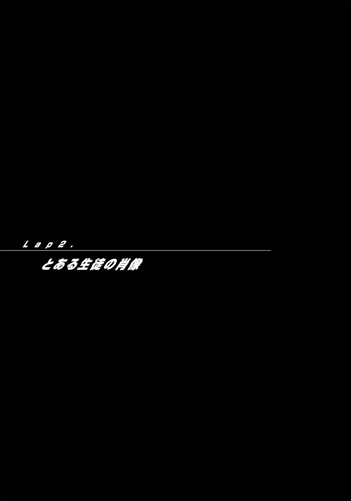

| ヴィークルエンド (電撃文庫) | |
| うえお 久光 | |
| (2015) | |
本書（電子版）に掲載されているコンテンツ（ソフトウェア／プログラム／データ／情報を含む）の著作権およびその他の権利は、すべて株式会社ＫＡＤＯＫＡＷＡおよび正当な権利を有する第三者に帰属しています。
法律の定めがある場合または権利者の明示的な承諾がある場合を除き、これらのコンテンツを複製・転載、改変・編集、翻案・翻訳、放送・出版、公衆送信（送信可能化を含む）・再配信、販売・頒布、貸与等に使用することはできません。
羽 鳥 哉 視 の十七年というちっぽけな人生の中でもっとも印 象 深い記 憶 といえば、さかのぼること八年ほど昔、きらびやかな明かりの灯 ったパーティー中の船上から真 っ暗 な夜の海へと飛びこんだときのものだろう。
なにしろ、落下中 に服が脱げたのだから。
手すりを越えた時点ではよそ行きの服を上下きっちり決めていた羽鳥少年だったのに、冷たい海水をくぐったころには下 着 と靴 下 以外の布 類 がいっさい消えていた。海 難 救 助 隊 に助けられたときには、それすら身につけていなかった。一 糸 まとわぬ生まれたときの格 好 で、羽鳥は救助されたのだ──ああ、そういえば、疲労困 憊 していたにもかかわらず、ちんこがびんびんになっていたのも忘れられない思い出だ（年 齢 にふさわしく、そこもつるつる露 出 していた。いまだ時々世 に現れる救助された当時の映 像 は、羽 鳥 にとって抹 消 したい最たる過去だ）。
改めて、思う。出来の悪いジョークのような話だと。
落下していく最 中 に、服が脱げてしまうなんて。
確かに船は怪 獣 かと見まごうほどの高さがあったし、海からの風も強かったが──
その事件をきっかけに、羽鳥を取り巻く環 境 はおおきく変わった。父はようやく自分の息子 が『欠 陥 』を持っていることを認め──いまや生まれてくる子供のすべてが『障 害 』を持っているこのご時 勢 にありながらかたくなにそれを受け入れなかった石 頭 の父親だったが、息子に海へのすっぽんぽんダイブを敢 行 されてはさすがに柔 軟 にならざるを得なかったらしい──羽鳥少年を『矯 正 施 設 （俗 称 ）』へと送り、退 所 後も、堅 苦 しい献 金 パーティーなどに付き合わせようとはしなくなった。学校や勉強や友だち関係について口を出すこともなくなり、跡 継 ぎという言葉を口にしなくなり、そもそも話をすること自体なくなった。おかげで羽鳥は補助剤 という生 涯 を共にする相 棒 との付き合いかたを覚え、無 理 に笑顔を振りまかずにすむようになり、いま、こうして深夜の街を出歩けるという自由を満 喫 できている。
だから、というわけでもないが、時々なにかがきっかけになって、羽鳥は思い出し、幻 視 する。昼のように明るい船の喧 騒 を。
比べて、まるで異 世界のように静かな海を。
船の巨 大 さと夜の帳 もあいまって、果ての見えない暗 黒 の世界。
かすかに聞こえる波のさざめき。
背後に光。目前に闇 。
ああ、自分はこれから、深夜の海へとダイブする──
「もしもし？ どうかしたか？」
声をかけられて、羽鳥は我に返った。
たちまち深海は遠ざかり、周囲の喧騒が耳 朶 を打つ。ギターとドラムと、ヴォーカルががなりたてる声。あぶられたサプリのにおいが混ざる場独 特 の人いきれ、観 衆 の黄色い声援に、踏み鳴らされる床からの震 動 。
ライブハウス『キキーモーラ』は、街の外れの雑 居 ビル、その地下にある、ちょっと昨 今 の流 行 から外れた店だ。
ステージに登場するのはデビューを夢 見 る素人 かデビューを夢見た素人ばかりで、まるでそれが条件だといわんばかりにメジャーなバンドが呼ばれたことなど一度もなく、これからもそんな予定はない。それでも、この一週間ほど観察したかぎりステージは常に埋まっており、人の入りも悪くない。店の企 画 力 の良さがうかがえる。
とくに今日は、満 杯 といってもいい状況だ。
「もしもし？ 聞こえているか？ おい？ あんた、本当にだいじょうぶか？」
レインコートのような黄色いパーカーを着てフードをかぶった男にあらためて声をかけられて、羽 鳥 はふちの厚い眼鏡 （レンズに度の入っていない伊達 ）を中 指 で押し上げ、周囲の音に負けないよう声を張り上げ、答えた。
「ああ。うん。どうも。......人 波 に当てられたかな？ 慣 れてないんだ、こういう場所」
「そっか。そういえば見ない顔だな？ 気つけ代わりになんか飲むか？ いやいやいやいやこれも縁 、新 顔 さんにはなるべくおごることにしているんだ」
話をするのははじめてだが、羽鳥が『キキーモーラ』に通い出してから一週間。
その間、何度もこの男を見かけていたし、向こうもそれは同じだろう。そんな思いをおくびにも出さず、羽鳥はあいまいにうなずき、男が持ってきたソフトドリンクを受け取った。
舞台からひときわ高く怒 鳴 り声（あるいは、歌？）が響 き、歓声がそれに応 える。
「あいつら知っているか？ 聖 陣 高 の軽 音 同 好 会 なんだけど」
男の説明に、羽鳥は少し驚く。
聖陣高というのは二つ隣 の区にある、羽鳥の通う高校だ。
知っている顔はないようだが──
「いや？ ぶっちゃけ、あの手のモンには興 味 ないんだ。──こう聞くのもアレだけど、......あれって、上手 いの？」
さりげなく変 装 用の眼鏡を掛けていることを確 認 しながらたずねた羽鳥に、男は困ったように笑った。
「......まぁ、いつもはもう少し聞けるんだけど。今日は、ちょっと日が悪かったかな」
実際のところ、大 音 響 のおかげでごまかされているが、ライブに集中しているのは本人もあわせた極 少数の者たちだけで、ほとんどの観客は別のことに気を取られているようだった。
視線のほうもちらほらと、ステージではなく、その両脇 へと向けられている。
ほとんどの観客が立っているなか、舞台をはさむようにしてそれぞれ十五人ほどのグループが二つ、床や階段に座り込んでいる。片 やメタルパーツで飾られたパーカー、片や迷 彩 柄 やアーミーグリーン等のミリタリー系 ジャケットと、それぞれ統 一 感 のある格 好 をしていて、互いに異なる二つのチームであることがうかがえる。どちらのチームも立ち見の聴 衆 などものともせず、舞台の脇にいながらあたかも主役のような貫 禄 でくつろいでいて、それがホール内にライブショーにひたらせない微 妙 な雰 囲 気 を生み出していた。
もっとも、音楽にこそのれていないが、決して悪い空気ではない。
わくわくどきどき、といった形 容 がぴったりくる、高 揚 感 のにじみ出す感じ。
バンドが悪いわけではない。この場にいる観客たちがただ単に、違うなにかを期待しているというだけで、だからこそ妙な一 体 感 があり、ライブがそれなりに成り立っている。
羽 鳥 は渡されたソフトドリンクを一 口 飲むと、パーカー男の様 子 をうかがった。
男の名は茶 屋 なにがし──通 称 で知られているため下の名はわからなかった──十七歳 、同い年。
この近辺では『涙 目 』と呼ばれていて、『キキーモーラ』の古 株 常 連 、という立ち位置だが、実際には店長然 としてこの店を取り仕切っている。
あらためて男の表情を確かめて、はじめて、羽鳥は茶屋が『涙目』と呼ばれている理由を見ることができた。
羽鳥の視線に茶屋はハンカチを取り出し、フードの下、右目から流れた涙をふき取り、笑った。
「ああ、びっくりしたか？ これがおれの『障害 』なんだ。いったんスイッチが入ると、悲しいとか痛いとかとは関係なく、興 奮 しただけで涙が出るようになる。つまらない現 象 だがおかげでおれは涙のエキスパートさ。ちなみにおれ、この辺では『涙目』って呼ばれているからそう呼んでくれてかまわないぜ」
ハンカチであふれた涙をふき取っただけ、それ以上の処 置 は行わず、結果、茶屋の右目はたちまち涙目にもどる。
しかし茶屋に、それを気にした様 子 はない。
羽鳥は独 り言 のように、たずねた。
「......適合 サプリを見つけられていない、とか？」
『障 害 』には個人差があり、それを制 御 するサプリもまた、個 人 個人で変わってくる。
自分に適した『適合サプリ』は基礎サプリを混ぜ合わせて自分自 身 で探すしかなく、見つけられない者もいる。矯 正 施 設 はその手助けをする場所でもある。
いんや、と『涙目』は首を振った。
「心配無 用 、適合サプリ は持ってるぜ？ ただまぁ、せっかく『涙目』なんて呼ばれているんだから、たまにはらしいところも見せないとな。こういういいかたはアレだがおれって『クール系 』だから、サプらなくてもそんなに困ることもないし」
「じゃあ、それ、わざと？」
「そう。あざといことをいってしまえば、キャラづけのためのパフォーマンス？」
ほう、と羽鳥は、感 嘆 のため息を漏 らした。
現在、生まれてくるすべての子供は先 天 的 欠 陥 を持ち、その種類によって二種に──科学的ではない非常に乱 雑 な分類だが──大 別 できる。
サプリの助けを借りなければ感情の制 御 ができない『ヒート系』と、逆にサプリがなければ感情を呼び起こせない『クール系』（なお、これは正式な呼び名ではなく、公 的 にはこの分類自体が認められていない。ヒート系はアッパー系、クール系はダウナー系という呼びかたもされるが、こちらはさらに教育的に歓 迎 されないアングラ的呼 称 ）。
つまり今どきの子供は、端 的 にいえばサプリの助けを借りなければ笑ったり怒ったりを抑えること、あるいはある一 定 以上笑 ったり怒ったりすること自体が不 可能なのだ。
そして、この二種どちらにも共通するのが、感情が一定の値 を超えると『共 感 覚 』と呼ばれる現 象 に近いものを引き起こすという俗 称 『共感覚障 害 』を持つこと。
共感覚、というのは、音に色を感じたり、絵に味を感じたり、などと、知覚がほかの感覚と混 在 したり取り違ったりする現象で、それ自体は昔からあるそれほど珍 しくもないものらしい。
もっとも、生まれてくるすべての子供が共感覚を持つようになった──あるいは、それが客 観 的に明らかになった──のは、ここ最近のことなのだが。
共感覚という現象自 体 は、現在こそ一般的大人 たちの感覚によって『障害』などと呼ばれているが、生活においてはそれほど害になるものではない。
ただ、その現象が起きているということは自身の感情をきちんと制 御 できていない状態だということを示しており、よって『共感覚障害』はサプリで抑えるのが『常 識 的 行動』で、だからこそ、いくら涙が出るだけとはいえそれを見せつけ平 然 としている『涙 目 』の態度は常識外 れで、そのことに羽 鳥 は軽い驚きと、そして好 感 を覚える。さすが、この区の『顔 役 』をやっているだけのことはある、と。
『涙目』は、いったん場を離れウェイターになにか指 示 を飛ばしたが──ライブの爆 音 にかき消され、少し離れただけで声が聞き取れなくなる──すぐに羽鳥の隣 にもどった。
自分に興 味 があるのか（なぜか？）、それともなにかの意 図 があるのか。
もっとも、羽鳥にとっても『涙目』の傍 は好 都 合 。
『涙目』は羽鳥のすぐ隣に立つと、舞台をながめつつ、いった。
「まぁ、あんたがライブ目当てじゃなくってよかったよ。うちは実際、ライブやプレイサプリを売りにできるような店じゃないからな。うちの目玉はただ一つ。しかも、今日はそいつを教えられる日だ。ああ、あんた、運がいいぜ──
今日は『レースの日 』だ」
まるでその言葉が合 図 であったかのように、ステージに変化が起きた。
音楽が消えて静まり返った会場内 に、突 如 叫ぶようなヴォーカルの歌声がアカペラで響 く。
週末 はヴィークル と（おれと！）
週末 はヴィークル と（おまえと！）
週末 はヴィークル と（おれたちの──）
『──ショウ・タイム！』
ドラムとギターが急 激 なテンポで独 唱 にかぶさり、激しいリズムを刻みはじめ、それに負けない観客の上げた大 歓声が場の空気を震わせる。
待ち望んでいたものがついに登場した雰 囲 気 に、羽 鳥 は、心 拍 が速くなるのを感じた。
視 界 から、光が消えた。
照明が落とされた場内に、ヴォーカルのマイクがハウリングを起こし、それに負けない大声が続く。
『ああ！ ちくしょう！ このオレサマがせっかく歌ってやっているのに、しょうがねぇなぁおまえらは！ まぁ、正直気 持 ちはわかるがな！ オレサマだって、目の前にヴィークルレーサーがいたらそりゃライブなんて聞いてられねぇ！ とっととはじめろといいたくなるな！ ってわけでいまさら前置きは抜きだ！ まずはここらじゃお馴 染 みの！ 夜を切り裂 く曙 光 の一 閃 ！ 風を率 いて走る弾 丸 ！ われらがフル！ メタル！ ジャケッツ！ パッカーズ！』
高らかなドラムの音とともにスポットライトが一点に集まり舞台上に浮かび上がらせたのは、パーカーをまとった集団の『被 覆 鋼 弾 ──ＦｕｌｌＭｅｔａｌＪａｃｋｅｔ，ｓ──』というロゴを掲 げている背中。
同じく大 音 響 とともに、舞台後 ろのスクリーンいっぱいに『Ｆｕｌｌ／Ｍｅｔａｌ』という文字が流れ出し、それまで背を向けていた十五人ほどの一 団 が、流れ出したアップテンポな曲に合わせて踊り出す。スクリーンの映 像 とＢＧＭに合わせて行われる全身をフルに使ったダイナミックな動きはいわゆるブレイクダンスと呼ばれるもので、それも個ではなく集団の、息のあった踊りは確かにたいしたものだった。
思わず見とれる羽鳥に、『涙 目 』が解説する。
「あいつらは『フルメタルジャケッツパッカーズ』。略 してＦＭＪＰ ──ここら一帯を縄 張 りにしているメインのヴィークルチームでな。この店をひいきにしてくれていて、......これが『キキーモーラ』の売りってわけだ」
「......あのチームが？」
「あいつらのやる、レースが、な。観 戦 ガイドはもちろん、たまに演出と、そうそう、今日は賭 けもうちの店で仕切らせてもらっている。......どうだ？ 新 顔 さん。あんたも賭けてみないか？ ここの雰囲気に慣れたいんなら、見ているだけより参加するのがいちばんだぜ？ とくに今日は 、サプライズもある 。......おっと、あいつらは『デンタル＝アーミー』。ＦＭＪＰと双 璧 をなすチームで、勝 率 もほぼ五分......この二チームでの抗 争 が最近のメインイベントなんだ」
ＭＣの紹 介 と同時に、スポットライトが舞台の反対側 、ミリタリー系 のジャケットを着た面 々 ──いわくデンタル＝アーミー──へと移った。
スクリーンが暗 転 し、『殴 られた男の口から飛び出した無 数 の歯が、地面に落ちて次々と骸 骨 の兵 士 へと変わっていくＣＧアニメーション』を映し出す。
歯から生まれた兵士たちが、軍 服 をまとい、勢 ぞろい──画面に合わせて流れていた曲もヒップホップ調からクラシックな重 低音を響 かせるものへと変わり、それに合わせてそれまで直立不 動 だった男たちが取り出した改 造 警 棒 を硬い音を立てて伸ばし、ライフルに見立ててくるくる回し、装 着 し、取り出してはまたもどし──軍 隊 式 のパフォーマンス、いわゆるカラーガードをはじめる。これまたブレイクダンスに負けていない、じゅうぶんな修 練 を感じさせる統 制 の取れたみごとなもので、羽 鳥 は思わず息を吐 く。ブレイクダンスもカラーガードも、いってしまえばレースの役には立たないが、しかし目にすれば分かる、これはまぎれもない『力』だと。
『涙 目 』の言葉はとまらない。
「五 分 っても、実力じゃあちょっと劣るかな？ この街でのチャンピオンチームはＦＭＪＰ のほうで、デンタル＝アーミーは二番手 だ。ただし、ラフプレイに頼るきらいもあるが、チームプレイじゃデンタル＝アーミーが優る。ワンフォアオールだとデンタル＝アーミー、ワンオアゼロだとＦＭＪＰって感じ──おっと、ワンフォアオールってわかるか？ ワンフォアオールはようするに、チーム全員の着 順 で争う形式で、こちらのほうがそれぞれに出番があって見ごたえのあるレースになることが多いんだが、......今回はＦＭＪＰの主 催 だから、レースルールはワンオアゼロだな。１か０か、一着かそれ以外か──オール・オア・ナッシング、いちばん速いやつの勝ち──レースの原点ってやつだ。どれほどチームワークや人 気 があっても、大事なのは結局そこで、だからこそ、勝 率 が五分でもＦＭＪＰがこのエリアのチャンピオンってことになる」
「つまり今回は、ＦＭＪＰ、に賭 けたほうがいいってこと？」
「......まぁ、そうだが、それじゃおもしろくない。ていうか、ぶっちゃけ賭けが成り立たない。ここしばらくは勝敗もどっちの形式かで固定してきているからな。マンネリがいちばんやばい。なんでも刺 激 が必要で、──そう、変化が必要なんだ」
舞台のほうでは、デンタル＝アーミーのパフォーマンスが終わり、両グループのメンバー紹 介 がはじまっていた。
ＭＣの呼びかけとともに互いのグループから一名ずつ、順番に、交 互 に時には同時に、ダンスバトルの形式をとり、舞台の上で踊りあう。メンバーがチェンジするたびに甲 高 い声援があがって、ダンスと音楽、スクリーンの演出もあいまって、そこにいるのが自分たちと同じガキだとは思えない。
──いや、彼らは決して同じガキではない。狭い世界限 定 だが、スターと呼ばれる存在だ。
──いや違う、確かに彼らはスターだが、自分たちと同じ人間、同じ世界の住人だ──
ＭＣとスクリーンでＦＭＪＰのリーダーとして紹介された男が、マイクを握って叫んだ。
「てめぇら！ やるぜ！ 今日はヴィークルエンドだ！」
湧 き上がる大 歓声に、さらなる怒 鳴 り声で返す。
「おれたちは！ チャンピオンだ！ だからいつでも賭 けるのは、チャンピオンだというプライド──この街でいちばん速いチームだというプライドだ！ これを疑うやつがいるなら、いつでも証 拠 を見せてやる！ それがフルメタルジャケッツパッカーズ！ ヴィークルレースの原点、ワンオアゼロ──受けて立つプライドはあるか！ デンタル＝アーミー！」
呼びかけに応 え、デンタル＝アーミーのリーダーが舞台前 へと進み出て、右手に持った携 帯 をこれ見よがしにかかげたのち、舞 台 中央に置かれた端 末 に押し当てた。
電 子 的な音がして、スクリーンに映し出される、１５０，０００の表 示 ──参加費 入金確 認 。
デンタル＝アーミーのリーダーが、携帯をマイクに持ち替えて、咆 える。
「ああ上 等 だ！ 受けてやるよ。むしろ望むところだぜ！ ワンフォアオールじゃてめぇらはもうおれらの敵じゃない。あとはワンオアゼロでも勝って、完 璧 に教えてやるだけだ！ もうＦＭＪＰ の時代じゃないってな！ ウィ・アー・デンタル＝アーミー！」
舞台からの号 令 に、デンタル＝アーミーのメンバーたちがいっせいに敬 礼 をする。
いきり立って舞台に上がろうとするＦＭＪＰのメンバーを制し（正直、羽 鳥 の目にはわざとらしく映った）、ＦＭＪＰのリーダーは鼻で笑った。
「は！ そういうセリフは勝ってからいいな、デンタル＝アーミー！ ワンオアゼロ以外のレースはしょせん前 座 のパフォーマンス！ レースは速さを競 うもので、だからこそおれたちがチャンピオンなのさ！ それはこれからも変わらない──いくぜ！ フルメタルジャケッツパッカーズ！」
声とともにＦＭＪＰのリーダーが携帯を端末に押しつけて、場内を揺るがす歓 声 とともに、スクリーンの数字が３００，０００に膨 れ上がる。各チームが十五万ずつ──三十万。子供のレースで動くにしてはなかなかの大 金 で、しかもこれが、おそらくさらに増えていく。
スクリーンに、地図が映し出された。
ヴィークルレースに決まったコースはない。毎回ランダムに決められる。通常の手 順 では、まず地図が用意され、両チームのリーダーがダーツを投げ、それによってチェックポイントとゴールが決まることになる。
が、しかし、スクリーンに映し出された地図には、すでにゴールとチェックポイントがマークされていた。
さらに画面に現れる、ＲＥＶＩＶＡＬ ！の文字。
ざわめく観 衆 に、ＦＭＪＰのリーダーが、告げる。
「わかるやつにはわかるな？ これは、おれたちＦＭＪＰがかつて『スパイダー』と競い、勝利したときのコースだ。このときのレースでスパイダーは消え、おれたちがトップチームとなった。いわばすべてのはじまりのコース──どうだデンタル＝アーミー？ おれたちに勝ってトップを名乗りたいっていうなら、このコースを受けて立てるか？」
「ああ。もちろん！ 望むところだ！」
「そしておまえらも見たくないか！ おれたちＦＭＪＰ が、いまでもトップをはれるだけの速さを持っているのか──いや、あれからさらにどれだけ速くなったか！ どうだ！ 見たいか！ ならば喜べ！ 今日のレースはリバイバルだ！」
誘いの言葉に応 える怒 号 のようなエールと足 踏 みのなか、『涙 目 』が羽 鳥 に話しかける。
「ヴィークルレースは基本『非 合法』だからな。同じコースを走る、リバイバルはあまりやらないし、やれない、そのぶん人 気 のあるレースなんだ。とくにこのコースは、いろいろ因 縁 もあるし──」
「つまり、それがサプライズ？」
「いやいやいやいやまだまださ。ほら」
舞台の上でＦＭＪＰの歴史を語っていた男が、そして、と言葉を区切った。
一 拍 ためて雰 囲 気 をつくったのち、おもむろに、宣 言 する。
「何度だって繰り返すが、──おれたちはチャンピオンだ。それを疑うやつがいるなら、いつだって証 拠 を見せてやる。ああ、そうだ、ＦＭＪＰは逃げたりしない！ 今日は大 盤 振 る舞いだ！ 特別に、疑うことを許してやるぜ！ いるか！ 試してみたいと、おれたちに挑 戦 したいというやつが！
今夜のレースはウェルカム！ ルーキー・デイでいく！」
飛び入り新人歓迎 宣 言 ──新 参 チームの挑戦が認められるということ。
今度こそ、場内は大 歓 声 に包まれた。
期限は宣言から二十分内 。
参加費 は、メンバーひとりにつき二万と発表された。
なお、ヴィークルレースに参加するチームの人数は、だいたい十名強 が平均。一チーム辺り二十万ほどが必要だということになる。
舞台にふんぞり返って余 裕 を見せている二チームとは裏 腹 に、互いに話し合ったり知り合いに電話をかけたりと騒 然 としている場内を観察しながら、羽鳥は、いったん席を外したのち再びもどってきた『涙目』に話しかけた。
「確かに盛り上がっているみたいだけど、──参加費がひとりにつき二万て、高すぎないか？ それもたった二十分で、──だれも飛び入りしなかったら企 画 倒れになりそうだけど」
「なに、だいじょうぶ。こんなチャンスはめったにないんだ。ヴィークルレーサーを目 指 すやつなら二十万が三十万でも喜んで出すよ。......まぁ、自分でいうのもなんだが、おれはこの界 隈 に詳しくて、──そのおれの見立てじゃ、......少なくとも三組は出てくるな。うん」
『涙目』の言葉に、ふうん、と羽鳥はうなずく。なるほど、と。
少なくとも三組、か。
──確かに、ヴィークルレーサーとして認められるのは難しい。
なにしろ『涙 目 』の言葉のとおり、ヴィークルレースは基本的には犯 罪 なのだから。レース自体も非 合法だし、子供が扱うにしてはおおきすぎる金額が動く。ぽっと出のやつに勝 手 をされてレースを壊 されてはたまらないという雰 囲 気 もあるし、ぶっちゃけ利 権 的な事情もある。ヴィークルレースはある種ストリートギャングの縄 張 り争いに似たところもあって、だからこそ、チームをつくること自体は自由だが、新 参 者 が勝手にレースを行うことは許されない。通すべき面 倒 な仁 義 、暗 黙 のルールがそこにある。
ほとんどのヴィークルレーサーは、新たなレーサーが増えることを快く思わない。
よって、大 手 を振ってレースに参加できるチャンスは、新参のチームにとっていくら大 金 を払ってでも手に入れたいものだろう。
とはいえ現 実 問題、たかだか二十分で中高生が二十万近い大金を集められるか？
もちろん 、今日が レースの日 となること 、さらにはルーキー・ デイとなることを事前に知らされていれば話は別だが ──
三組は出てくるだろう、と『涙目』がいった。
ならば間違いなく、三組は出てくるのだろう。深夜の短い時間でこれほどの大金を集めて。
「......そりゃ、楽しみだな」
「だろう？ もしかしたらそのなかに、いつか次のチャンピオンになるチームがいるかもしれない。おれたちは、そのデビュー戦を見られるのかもしれない。だからな、ヴィークルレースを楽しみたいなら手 堅 く勝 率 の高いチームに賭 けるよりも、投 資 のつもりで気に入ったチームにはるのがお勧めだぜ？ ひいきのチームを見つけること、これが楽しむいちばんのコツだ。......小 遣 いを稼 ぎたいっていうなら話は別だが、それならべつに効 率 のいいやりかたもあるし──」
『涙目』の意味ありげな視線に気づかないふりをして、羽鳥はステージに視線を移す。
おりしも男が一人、舞台に上がろうとしていた。
腰に恐 竜 のしっぽらしきものをあしらっただぶだぶの服を着た男は舞台中 央 に歩を進めると、向き直ってホール内を見渡したのち、中央の端 末 に携 帯 をあて、宣 言 する。
「『ラプトルテイル』！ 十二人、参加する！」
ディスプレイに表 示 される、２４０，０００の数字。
分 割 された画面に、３００，０００＋２４０，０００、合 計 五十四万の額が表示され、場内がどよめきに包まれて──しかしそれでは終わらない。さらにコウモリの羽のついた帽 子 をかぶった男がラプトルテイルのリーダーを押しのけ、端末に携帯をあてて、叫ぶ。
「おれたちは『バットカンパニー』──十四名！ 飛び入りさせてもらうぜ！」
５４０，０００がさらに８２０，０００に──
参加費 は、勝ったチームの総 取 りとなる（もちろん、主催者 チームと場所を提 供 した『キキーモーラ』に総 額 の何割かを払う、という事 前 の取り決めがなされているだろうが）。賞 金 八十二万はかなりの大 金 、これは確かに記 憶 に残るだろう。
いや、もうひとチーム、出てくるはずだ。
ラプトルテイル、バットカンパニー、それぞれのリーダーが一 瞬 視線をこちらに送ったことに、羽 鳥 は気づく──もちろん相手は羽鳥ではなく、『涙 目 』のほうだということにも。
ステージで、ＦＭＪＰ のリーダーが呼びかけた。
「もういないか？ そろそろ時間だぜ？ こんなチャンスはめったにないっていうのに、ここにいるのは腰抜け ばかりか？ 新たなヴィークルレーサーとして、名 乗 りをあげるプライドのあるやつはいないのか？」
挑 発 するようなものいいに、舞台下 から手が上がった。
「それじゃ、おれたちも参加させてもらいます」
──注目が、声の主へと集まる。
客の波が割れ、人 影 が一つ、ステージに向かった。
場にそぐわない白い詰 襟 の学生服 を着た、背の低い──まだ中学生ぐらいか、高校生とは思えない──童 顔 の、かわいらしい面 差 しをした少年は、場内の視線を一 身 に集めたなかを憎 らしいほど悠 々 と歩み、舞台に上がった。
携 帯 を取り出し、端 末 に当てながら宣 言 する。
「『ストレン・シープ』。参加します。──総 勢 一〇一名」
プラス２，０２０，０００──一 挙 に二百八十四万まで膨 れ上がったスクリーンの賞金表 示 に、場内がどよめきに包まれる。
そりゃそうだろう、こんな大金が子供のレースに賭 けられるなんて──
もっとも、羽鳥の隣 にいる『涙目』に驚いた様 子 はなく、むしろにやにや周囲を見渡している。悪戯 が成功した子供のような、キラキラした表情で。
ＦＭＪＰのリーダーが、動 揺 を隠 せず叫んだ（そのまえに、一瞬こちらを──『涙目』を見たのを羽鳥は見逃さなかった）。
「ば、バカか？ いくらなんでも、一〇一人もの参加を認められるわけねぇだろ！」
ストレン・シープのリーダーを名乗った少年は、ひょうひょうと答えた。
「ヴィークルレースに人数の制限はなかったと思いますけど？」
「常 識 で考えろ！ いくらなんでもそんな大 勢 すぐに見つかるだろうが！ ていうか、おまえのチーム、そんなにライダーがいんのか？」
「いえ、全員がライダーってわけじゃあありません。実際レースに参加するのは十人程 度 です。この参加費 は、チーム全員の気持ちなんです。たとえレースに参加できなくても、同じチームの一員として一 丸 になって参加したいという──」
「......いや、それは、だからって──」
舞台の上でなにやら相談がはじまり、結局、参加費 はプラス二十万──１，０２０，０００に変 更 された。
とはいえそれでもじゅうぶん、大 金 であることに変わりはなく。
そしてなにより、いまさら金額を抑えたところで、先ほどストレン・シープが客席に与えたインパクトは覆 しようもないだろう。場内はいまだ騒 然 として、話題はほとんどストレン・シープ一 色 になっている。──うまい手だ、と羽 鳥 は思う。これほどの大金がかかったことに加えて印 象 に残るこの登場、たとえ今日のレース結果がどうであれ、この場にいた人間はストレン・シープの名を忘れないだろう。ストレン・シープのデビューは、必ず口コミで広がっていく。それはつまり、世間の注意を引けた──レースを開 催 する資 格 を手に入れたということだ。
新 参 チームがなにより欲しがる知 名 度 を、ストレン・シープはこの段階でもう手に入れた。
──新参チームでありながら（いや、だからこそ？）ちゃんと戦 略 を考えているやつがここにいる。
そうそう、やっぱりこうでなくっちゃ──
「......あんたは驚いていないようだな。新 顔 さん」
『涙 目 』に話しかけられて、羽鳥は肩をすくめた。
「いや、じゅうぶんびっくりしたよ。すごいな、ヴィークルレースって。なるほど確かにおもしろい。いいなぁ、ああいうチームは」
「だろ？ それになかなかお目が高い。ストレン・シープは買いだぜ？ 実力的にはまだまだだが、可能性ってところでいちばん期待できる。どうだ？ 試しに、あのチームに賭 けてみないか？ よければおれが責任もって受け付けるけど？」
「......そうだなぁ」
バンドがドラムをたたき、騒 然 としていたホール内の注意をうながした。
静まり返った場内を相手に、ステージに立ったＦＭＪＰ のリーダーが、おもむろに、マイクを握る。
「──時間だ。まぁ、三組もそろえば上等か。ほかに参加するチームはいないな？ 今日 参加しなかった腰 抜 け共にいっておいてやる、チャンスを前に尻尾 を巻くのはプライドのない負け犬だけだ。せいぜいキャンキャン吠 えあげてレースに華 を添えて──」
「ほらな？ おれの予想どおり、三組いたろ？ どうだ？ ひとつ、おれの眼 力 を信じてあいつらに──」
「そうだな、少なくとも三組はいたな」
ＦＭＪＰのリーダーと、そして『涙目』の言葉を中 途 でさえぎって、羽鳥はおおきく手を上げた。
「待て待て！ おれらも参加する！」
静まり返った場内と、ぎょっとしている舞台の男らをながめ、あっけに取られた表情の『涙 目 』の肩をぽんぽんと親しげにたたいたのち、羽 鳥 は舞台へ向かった。
ひょいっと身 軽 にステージに上がり、中央の端 末 に携 帯 をあてる。
賞 金 総 額 が変化する──１，１２０，０００──プラスされたのは、十万。
それを確 認 し、羽鳥は『涙目』を呼んで携帯を放った。
わたわたと携帯を受け取った『涙目』に、笑顔を浮かべて告げる。
「悪いな、賭 けるチームは最初から決めていたんだ。残り全 額 、賭けといてくれ。チーム名は、『アンパサンド』──メンバーはおれを合わせて五人。ここに飛び入り参加を表 明 する」
周囲からのざわめきは波の音に似て、舞台は船の上に似て、羽鳥は独 り、目をつぶった。
闇 がとても心地 よかった。
──いったんダイブしてしまえば、もう、後 戻 りはできない。
あとはただただ落ちるだけ。
さぁ、最初の一歩を踏み出そう。
『キキーモーラ』のある雑 居 ビルの裏 側 は、廃 棄 された工場の敷 地 で広い空 き地となっている。
不 況 を受けて、ただでさえ廃棄された建物の多いこの区だが、ここはさらに町 外 れであり、雑居ビルと廃 工場にはさまれ人 目 につきにくい。また、ちょっと騒いだぐらいで文 句 をいうような近 隣 もない。まさにヴィークルレースの準備にはうってつけの場所。
空き地の四 隅 と中央に、ヴィークルチームの控え場所として簡単なテントが合わせて五つ立てられており、観客たちはテントを遠 巻 きにうかがいつつ、広場のところどころにまとまって話をしている。なかにはテントをのぞきこもうとするもののいるが、周りの人間にとめられる。関係者以 外 は基本的にチームに接 触 することは許されない。
天 幕 の内で携帯端末を操 作 していた羽鳥は、近づいてくる人 影 に気づき、顔を上げた。
挨 拶 をしかけ、顔をしかめる。
「早かったな──おい、まさか」
ええ、そのまさかよ、と、こちらも柳 眉 を逆 立 ててテント下に入ったボサボサ・ショートカットの少女は、引きずるように連れていたもうひとりの身体 から支えていた手を抜いた。
べたり、とそのまま地面に崩 れ落ちる肢 体 。
その骨のないタコのような風 体 、弛 緩 しきった表情に、羽鳥は肩を落とした。
「......おまえなぁ、こんな大事な夜までサプリプレイかよ？」
そ れは違うぞ 、と、へたりこんだ少女は、口にサプリのスティックをくわえたままで悪びれず答える。
「昨日 までは我 慢 していたんだ──だっておまえ、もう一週間経 つんだぞ──そろそろいいかなと思うじゃないか──」
ショートカットの少女が、ぐわし、と両手で倒れた少女の頭を挟み起こす。
「だから！ なにを！ 聞いていたのよ！ 念のため一週間を見ていただけで、今夜がいちばん可能性が高いって話だったでしょ！」
「ひゃめて──揺らひゃないで──頭が──バッドトリップひひゃう──」
「いいからとっととクスリを抜け十 条 。ヴィークルに影 響 出 るぞ」
「私が、そんな初 歩 的なミスを──うわわわわひゃめて──」
「だいじょうぶ、とっくにリセッタは飲ませたわ」
リセットアシッドはサプリを相 殺 するためのサプリ──サプリを抜くためサプリを摂 る──サプリを摂るためにサプリを抜く──どこか本 末 転 倒 な、尻尾 にかみついているヘビを想 起 させる有りようが自分たちのなにかを象 徴 していそうで、あわてて思 考 を振り払い、羽 鳥 は二人の少女をながめた。
ボサっと広がったショートカットの少女は入 洞 セイカ、いくら揺さぶられてもサプリスティックを手（口？）放そうとしない長 髪 （こちらもボサボサ）の少女は十条タケミといい、二人とも羽鳥と同い年。
セイカが周囲を見渡し、たずねた。
「ほかのみんなは？ まだ？」
「キリは買い物にいかせた。あとの二人は、まだだな──ああ」
いっている間に人 影 が二つ、テントのそばに現れた。
先 頭 に立っていたまだ中学校に上がりたてぐらいの少女が、テント内に入るなり羽鳥に袋 をつきつける。
「いわれたもの、買ってきた。──次は？」
続いて高校生ぐらいの男が、頭を下げる。
「すまん！ キャップのやつ、家にいなかった！ 勝 手 に走りにいったみたいだ、おれがついていながら──いや、でも、いちおう連 絡 はついたから──」
少女の名は隠 キリ、男の名前は雪 村 ユウジ──羽鳥は肩をすくめてうなずく。
「ほい、キリ、ご苦労さん。いまのところとくにない。──ああ、キャップの位置は確 認 したよ。なんとか時間内 には間に合うとこにいるみたいだな。......あいつはもうしょうがない。大事なことがわかっているならそれでいいさ」
いまだ姿 を見せないキャップも合わせたこの六人が、羽鳥の所 属 するチーム『アンパサンド』を構成する全メンバー。キリ以外はヴィークル適応者 で、キリだけがまだ自分に適したヴィークルを創 り出せていないため準 メンバー、羽鳥の弟 子 として助 手 まがいのことをやっている。
念のため、とＧＰＳでキャップの位置を確 認 する羽 鳥 に、雪 村 が話しかけた。
「ところでさ、羽鳥、......いろいろ万 事 、うまくいったのかな？」
「ああ。思った以上にうまく回った。だからこうして、みんなに集合かけたんだろ？」
「いやまぁそれはそうなんだが、......じゃあ、その、こんなに、周囲から注目されているのは、なんでかなぁ？」
「なんでって、狙 いどおりだろ？」
現在は、賭けの時間 。
各チームがそれぞれの天 幕 に待 機 しているなか、観客たちはそれぞれの携 帯 から『キキーモーラ』のホームページにアクセスして賭けに参加しており、広場の中央、ＦＭＪＰ の控 えるテントのそばの柱 高 くにすえつけられた二つのモニターがリアルタイムで出場チームそれぞれの見込み倍率 を映し出している。
いちばん人 気 は、やはりフルメタルジャケッツパッカーズ。
二番手 は、なんと新 参 チームのストレン・シープ。
そしてアンパサンドは、こちらも驚くべきことに、デンタル＝アーミーを差し置いて三番手につけていた。といっても勝利を期待されているわけではなく、『涙 目 』が勧めていたとおり将 来 性を見 越 しての記念買 いが多いのだろうが、おかげでオッズが予想していたより低い。これもまた羽鳥の誤 算 で、──いや確かに、なにもかも予想どおりにいくとは思っていなかったが、まさか三番手とは──
思わず愚 痴 る。
「ぽっと出のおれたちがこんなに人気が出るなんて、──最近は勝敗も固定していたみたいだし、よっぽど退 屈 だったんだな、ＦＭＪＰ とデンタル＝アーミーのレースは」
「......人気があるのはうれしいけどさ、でもそれだけじゃなく、なんかとっても注目されていないか？」
「それは、あたしたちの格 好 のせいじゃない？」
羽鳥と雪村の会話に、周囲を見渡しながらセイカが口を挟んだ。
なお、アンパサンドのメンバーは、補 欠 のキリに至るまで全員がジャージを着ている（羽鳥も店を出る前にジャージに着 替 えた。変 装 用の伊達 眼鏡 も外した）。それも統一されたものではなく、それぞれ勝 手 な方向性（ただし、ブランドは『土 葵 川 』というメーカーでこっそり統一されている）。ストリート系 のファッションが多いなかでのジャージ姿 はそれほど違 和 感 があるわけではないが、チームらしさがない、という点では確かに悪 目 立 ちしているかもしれない。
「うーん、やっぱりさ、アンパサンドも決めない？ スタイルっていうかユニフォーム。ちょっと見たけど、ストレンとか、あとデンタルのやつとかいいなぁあたし」
セイカの提 案 に、答えを返したのは十 条 。
「確かにデンタル＝アーミーはいいな。デンタルって名前がセンスいい。だが私たちはいいんじゃないか？ あそこまできっちり決めなくても。バラバラなものがそれぞれの目的のために力を合わせる、それが私たち『＆ 』だろ？ なら格 好 も思い思いに各 人 好きにすればいい」
ようやくプレイサプリの影 響 下 から抜け出せたか、長い髪 をひっつめてポニーテールにまとめあげながら十条が参加してくる。メンバー内でも雪 村 の次に長身な十条タケミは、外 見 だけならだれはばかることなき容 姿 を誇る。胸はないがすらりとしたいわゆるモデル体型で、不 純 交友で問題を起こして聖 陣 高校を退学になるまでは一 介 の高校生でありながらファンクラブまで持っていたという剛 の者（なお、そのファンクラブは、彼女の退学後 も名を変え地下に潜 伏 して活動中 ）。そんな彼女がヴィークルライダーになった理由はただ一つ、『モテまくりたいから』で、ぶっちゃけ彼女の頭の中に、ヴィークルレースそのものに掛ける思いなど雀 の額 ほどもない。
そしてそれは、雪村以 外 の全員にもいえる。
十条の言葉に、渋 面 をつくったセイカがなにかいいかけたが、キリの声がさえぎった。
「カナミ、お客さん」
羽 鳥 は携 帯 から顔を上げ、天 幕 の外、キリの後ろに立つ人 影 を確かめた。
羽鳥たち以上に目立つ、この場に異 質 な白ランを着た、その姿 は──
「あんた──ストレン・シープの？」
羽鳥に声をかけられて、白ランの少年は頭を下げる。
「はい。先ほどはどうも。改めて自己紹 介 させてもらいます、おれは勾 坂 シイナ......ストレン・シープのリーダーをやらせてもらっています。アンパサンドのリーダーさんと話をしたくてお邪 魔 しました」
「だとよ、リーダー」
羽鳥の言葉に、所 在 なさげに立っていた雪村はあわてて手を振り、後ろに下がった。
「いや、えと、おれは！ その！ 難しいことは全 部 羽鳥にまかせているんで！ ほら！」
少年の目がかすかに揺れ、羽鳥を見つめる。
「......あなたがリーダーじゃないんですか？」
「ああ。おれはぶっちゃけ下 働 きの雑 用 係 だ。それでもよければうかがおう。羽鳥哉視 だ。よろしく」
「そして私は十条タケミだ」
握 手 に伸ばされた手を横から奪 って両手で握り、十条はじっと少年を凝 視 する。
相手の困 惑 を一 顧 だにしない値 踏 みの視線に、羽鳥はこめかみを押さえた。
「もしもし？ 十条？ 十条さん？」
「......容 姿 はストライクなんだが、......残念ながら、いまは男の子って気分じゃないなぁ」
手を離し、もう用はすんだといわんばかりに離れていく十 条 。
「......あ、あの？」
戸 惑 っている少年に、羽 鳥 はひらひら手を振った。
「いや、いいから気にしないでくれ、──まぁ、運がよかったな。あいつはいま、女の子って気分らしいから。次からはあいつの姿 を見かけたら、全力で逃げることをお勧 めする。......それで？ なんの用かな？ ストレン・シープのリーダーさん。敵 情 視 察 ？ それとも？」
「......おれらと同じルーキーのわりに、ずいぶん落ち着いているんですね。アンパサンドのみなさんは」
そういって、勾 坂 と名乗ったストレン・シープのリーダーは笑った。
なるほど、女子と見まごうようなかわいらしさは、確かに十条の好みかもしれない（もっとも十条は、ある程 度 年 下 ならばそれだけで委 細 問わないという博 愛 主義者なところもある）。ヴィークルレーサーでありながら粗 野 といった印 象 はなく、その雰 囲 気 にはむしろ育ちのよさがうかがえる。
ストレン・シープ──はたして強い羊 か奇妙な羊 か。あるいはその両方か。
「そんなことないって。余 裕 ありそうなのは演技。実際はとても緊 張 しているんだ」
「そうですか？ おれにはとてもそうは見えませんけれど。......まったく、『涙 目 』さんもひどいなぁ。こんな隠 し玉 があるのに教えてくれないんだから」
「......いっておくけどアンパサンドは、『涙目さん』とは関係ないぜ？」
少年から一 瞬 、表情が消えた。
すぐに人 懐 っこい笑顔をもどし、たずねる。
「......『涙目』さんの、お知り合いではないと？」
「ああ、『涙目』とは初 対 面 だ。近くにいたから賭 けを頼んだけれど、それだけの縁 だ。知り合いだと思って来たなら誤 解 だぜ？」
もっとも、誤解されたくて『涙目』の近くにいたんだけどな？ とまでは口に出さない。
おそらくあの場にいた全員が──『涙目』以外──知り合いだと思いこんでくれて、だからこそ、わずかにひと悶 着 あっただけで（参 加 人数が少なすぎる、参加時 間 がギリギリすぎるなど）あっさり飛び入りが許 可 されたのだろう。ちょっと考えれば分かる。ルーキー・デイなんて所 詮 は演出に過ぎず、実際には主 催 者 側 とこの辺の顔 役 である『涙目』の手回しにより参加者は決められていたのだということは。事 前 に情報を得ていなければ、あの条件で三組も飛び入りが出てくるはずがない。つまりアンパサンドは本 物 の飛び入りで、だからこそすんなり認めてもらえるよう、『顔役』と知り合いだと思わせたかっただけにすぎない。
そして、いったん認められたならもうごまかす必要もない。どうせすぐにばれることだし。
「......本当に？ 『涙目』さんとは関係なくて、参加を？」
「なんでそんなに驚くんだ？ だってウェルカム・ルーキー・デイだろ？ 飛び入り自由なんだろ？ ──って、あれ？ もしかして、事 前 に『涙 目 さん』の承 諾 とかが要 ったのか？ おれたちもしかして空気の読めないことしてる？ でもだれもそんなこと一 言 もいってなかったけどな？」
「......では、あなたは──先 輩 がたは、今日がヴィークルエンドになることも、飛び入り参加が認められることも知らなくて、たまたま『キキーモーラ』にいたと？ そしてたまたまお金を持っていて、たまたまメンバーも揃 っていたと？ だから飛び入り参加できたと？」
「そう聞くとなんかおれたち、レースの神さまに愛されている気がするなぁ」
そんな偶 然 も起こりうる、と信じることができるなら、──そいつは脳 みそというものを使ったことがないのだろう。
少年はしばらく羽 鳥 の表情をうかがっていたが、やがて、笑った。
「......それは確かに、すごいですね。おれたちもあやかりたいものです。......と、いうか、本当に、おれたちストレン・シープはアンパサンドに参加してもらえてありがたいと思っています」
「それはおれたちも同じだな。そっちの登場はうれしい誤 算 だった」
それは紛 れもない本 心 。
めったにないリバイバルレースにルーキー・デイ、百万を超える賞 金 ──それだけでも話題性としてはじゅうぶんなのに、そこに登場したのは、一〇一名、という大 人数で参加しようとしたチームと、逆にギリギリの少 人数で現れたチーム。大と小──この対 比 は、おもしろい噂 をつくる尾びれにもってこいだろう。おかげでアンパサンドは、単独でデビューするよりおおきなインパクトを世 間 に与えることができた。逆にストレン・シープのほうは、登場時 の印 象 が多少薄 れてしまったかもしれないが、長期的に見ればそれほどの損はしていないはず。
それが分かっているのだろう、少年もまた、うなずく。
「はっきりいってしまえば、新 参 のチームにとってはレースの結 果 以上に『観客の記 憶 に残ったかどうか』が大事です。観客の記憶に残らなければ、次のレースを行えない。そういう意味で、おれたちはもう勝者です。先 輩 がたの参加のおかげで、おれたちは、──お互いに引き立てられました。ほかのルーキーチームにはお気の毒 ですが、今夜の主役はおれたちでしょう。それはオッズが証 明 しています」
「──まぁ、それも同意する」
うなずいた羽鳥に、だからこそ、といったん言葉を切って、ストレン・シープのリーダーは続けた。
「だからこそ、思うんです。おれたちは、ここで潰 しあうべきじゃない。お互いに、まだまだ利用価 値 があって──
おれたちは、登場のしかたが対 照 的 で、つまりお互いにライバルチームとしてぴったりなんです。そして、そういうものを観客は、望むんです。いってしまえば、レースを盛り上げるためにはドラマが、筋書き が必要で、......先 輩 がたにこういうのもナンですが、ＦＭＪＰ はそれがわかっていません。デンタルアーミーは、......多少はわかっているようですが、結局、自分たちだけで完結している。でもあなたは、あの人たちよりも、ほかのルーキーたちよりも、それがわかっているようにお見 受 けしますが？」
「......で？」
「だからこそ、おれたちはまだここで潰 しあうべきじゃない。まず倒すべきは、そういうことのわかっていないふるい頭のかたがた ──そうでしょう？」
「つまり、ここはひとつルーキー同士で協力し、先 達 チームを倒そうと？」
羽 鳥 の言葉に、勾 坂 はおおきくうなずいて見せた。
「理解が早くて助かります。──もちろん、レースは現実的なもの、ＦＭＪＰには確かに実力があり、おれたちが協力したってだけで倒せるもんでもないでしょう。でも、おれたちが協力し合えば、少なくとも勝 率 は上がる。可能性は生まれる。たとえ今回倒 せなかったとしても、おれたちの姿 勢 ははっきり世 間 に示せる。おれたちが一 致 団 結 して世 代 交代を求めている、ということを。それだけで新たなドラマが生まれ、次のレースにつなげられます。それはおれたちにとって確かな勝利です。そうでしょう？
おれはこのレースについて、こう考えているんです。
達 成 すべきもっとも重要な目 標 は、おれたちルーキーの知 名 度 を上げること。
ならばもっとも避けるべきは、ルーキー同士で潰しあい無 様 な姿 を記 憶 に残すこと。
要するに、現在のレギュラー二チームよりもルーキーのほうが期待できると世間に思わせること、それがいちばんの勝利なんです。そう、いってしまえば、たとえ自分たちのチームじゃなくても、ルーキーチームのどれかがいい成績を残せれば、それはおれたちルーキー全員の勝利といえる──そうは思いませんか？」
なるほど、と同意して、羽鳥は確 認 する。
「もしかして、ほかの二チームとは話がついているのか？」
「はい。ラプトルテイルとバットカンパニーさんには確 約 していただけました。あの二チームで協力し、ＦＭＪＰとデンタル＝アーミーのどちらかを抑えると。そしておれたちでもう一方のチームに立ち向かえば──それぞれ二対 一の形をつくれれば──もしかして、ルーキーチームのどこかが勝つチャンスが生まれるかもしれない。ルーキーでありながら、勝てるかもしれない。そうなれば、それはおれたち全員の勝利といえる。そうでしょう？」
なにかいいたげに動きかけたセイカと雪 村 を目で制しつつ、羽鳥は、表情をほころばせた。
にやけてくるのを、とめられない、
この勾坂シイナというストレン・シープのリーダーは、まだ高校生にすらなっていないように見えるが、しかし確かなビジョンを持っている。
自分たちが進むべき道を、未来への地図を、はっきり思い描けている。
そう、それでこそ、というものだ──
「どうでしょう？ 協力していただけませんか？」
あらためて問い直したルーキーチームのリーダーに、羽 鳥 はおもむろに、答えた。
「返事をするまえに、まず、この点を理解してほしいんだが、おれはさ、常 々 こう思っているんだ。──勝敗なんて二 の次 、走ることさえできれば、レースに出られればそれでいい──
──なんてことをいうやつは、頼むから、そのしあわせなお花 畑 から出てくるな、ってな」
ご、ごめん──となぜか謝ってきた雪 村 を無 視 し、言葉を続ける。
「ああ、レースってやつは、勝つために出なければ意味がない。勝てないのにレースに出てもしょうがない。おれはそう考えているし、それはそちらだってそうだろう？ ストレン・シープのリーダーさん。あんたははっきり勝利目 標 を見 定 めて、そのための戦 略 を立てているように見えるぜ？」
「──ええ」
「だからこそ、わかってほしいんだ。たとえたまたまヴィークルエンドに居合わせて 、それが偶然ルーキー・デイで 、しかも運よくお金を持っていて 、さらにメンバーも揃っているという幸運に恵まれ飛び入り参加をしたのだとしても 、いったん参加を決めた以上は 、勝算と戦略を持っていなけりゃうそだろう ？
──ていうかさ、こんな寸 前 であっさり変えられる程 度 の戦略しか立てていないようなら、そもそも参加なんかしていない。......そう、思わないか？」
唇 を閉じ、まばたきもせず、しばらく二人は見つめあった。
ようやく視線を外して、勾 坂 と名乗った少年は肩をすくめ、ため息をついた。
「......そうですね。確かにおっしゃるとおりです。......おれは、まだまだ甘かったみたいです。──それじゃあレース、お互いがんばりましょう。よろしく、ライバルチームさん──」
ストレン・シープのリーダーを見送って、羽鳥は息を吐いた。
おずおずと、雪村が口を開く。
「あのさ、......あそこまではっきり断らなくてもよかったんじゃないか？ もともとルーキー同士で潰 しあう気はないんだし、それに、正直──」
いんや、と羽鳥の代わりに十 条 が首を振る。
「この場はアレで正 解 だ。むしろこちらを敵 視 し警 戒 してもらったほうがいい。......知 名 度 を上げるだけでいい、などと殊 勝 なことをいってはいたが、あいつらだって考えているのは自分たちの優勝だろう。チームメンバーが一〇一人、というだけあって、おそらくストレン・シープはチームプレイを武 器 にするタイプなのだろうな。いわゆる一＋一を三にも十にもするという一般常 識 を無 視 した解 法 を得 手 とするやつだ。個人の力に頼るうちでは、手を組んだところでメリットはない」
「なによ！ うちにだってチームワークはあるわよ！ ねぇ！」
「え？ ええ、ああ！ うん！ もちろん、たぶん......きっと──少しは──」
いきり立ったセイカに詰め寄られしどろもどろに答える雪 村 、おもしろがっている十 条 に我関せずのキリをそれぞれ眺 め、そうだな、と羽 鳥 はあらためて確 認 する。
アンパサンドは、たった五人（プラス補 欠 一人）の急 造 チーム。
セイカにどれほど詰め寄られようとも、無い袖 は振れず、仲のよしあしに関係なくチームワークなんてあって無きに等しいのが現実。勾 坂 少年にはああいったが、雪村が指 摘 しようとしたとおり、ぶっちゃけ戦略なんてない 。本来なら──羽鳥の主義からいえば、レースに参加、なんておこがましくて口に出せない段階だ。
それでも、参加しようと決めたのは──
「よぉ！ みんないるか？ そろっているな！ いよいよだって？」
背後から掛けられた声に、羽鳥以 外 の全員が、異 口 同 音 に声を上げつつ振り向いた。
「「「キャップ！」」」
「ちょっとあんたね！ こんな日にまで、いったいどこにいっていたのよ！ たるんでる！」
「悪い悪い入 洞 サン。ちょっと遅れちゃったな。......でもまぁ、間に合っただろ？ ......で？ 羽鳥。結局どれくらい的 中 したわけ？」
声をかけられ、羽鳥はもったいぶって振り返り、ジャージ姿 に帽子 をかぶり悪びれずに笑う姿を視 界 に収めた。
猿 渡 トビ。通 称 キャップ。
メンバー最後の一人のようやくの登場に、安 堵 している自分に気づく。
そんなつもりはなかったのだが、柄 にもなく、緊 張 していたか。
こいつの顔を見ただけで、こんなにもほっとしてしまうとは──
そっけなく、問いに答える。
「は。まかせろ。レース形式はワンオアゼロ、コース固定のリバイバル。オッズが低めになったのと、ちょっと考えてるチームがいたのは誤 算 だったがまぁ大 筋 に変 更 はない。ほぼ読みどおり──そしてなにより、おれのいったとおりだったろ？ 次のヴィークルエンドは間違いなくルーキー・デイになる、とな」
ああ、とキャップは笑った。
帽子を取り、つばを後ろに回してかぶりなおしつつ、告げる。
「おみごと。ゆーげんじっこーってやつだな。......だったら次は、こっちのターンだ。オレだって、約束は守るぜ」
──そう。
確かにアンパサンドはその名前とは裏 腹 に、チームワークなんてない。
その代わり、最強の切り札 を持っている。
猶予時間 終了のブザーが響 き、『乗車』をうながすベルが鳴らされた。
「──じゃあ、はじめますか」
雪 村 と羽 鳥 を中心に、肩を組み、六人で半 端 な円 陣 をつくる。
額 を合わせて、口を開く──
「全員、準備はいいな？ 十 条 、プレイサプリは抜けているな？」
「私をだれだと思っているんだ？ サプリマスターを名 乗 っているのは伊達 じゃない」
「セイカ、──お願いだから乱 闘 は、ほどほどに──」
「わかっているわよ。ていうかちょっかい出されなければそもそも暴 れないわよ！」
「キリ、自分の仕事はわかっているな？ 声 出してくれよ？」
「とうぜん」
「──キャップ、よろしく頼むぜ！」
「おう！」
「よし、それじゃ──」
「............ あの、......だれか忘れていないですかね？」
「忘れてないって。それじゃあリーダー、号 令 を」
「............ ええと、──その、──よし！ それじゃあいくぞ！ アンパサンド！ ヴィークル『＆ 』、セットアップ！」
号令を合 図 にいっせいに、口に含んだサプリカプセルを、嚙 み潰 す──
すでに馴 染 んだ独 特 の苦 味 が口 内 いっぱいに、広がって。
視 界 がぷつん、と、落ちた。
カナミ？ と呼びかける小さな声が、どこか遠くから聞こえてくる。
カナミ？ カナミ──？ ──だれだ呼び捨てにするのは。女みたいな名前であまり好きじゃないのに──膜 を一枚隔 てたようなかすかに聞こえてくる声に、羽鳥は目を開けようとする。
が、接 着 剤 で貼 り付けたかのように、まぶたは重く、開かない。
──いや、そもそもまぶたというものを感じられない。ていうかまぶたがなにかわからない、まぶたってなんだ？ いったいどうしたこの感じ──
いったいなにをしていたんだっけ？
ふわふわとした、なにかが狂ったこの感覚──共感覚障害 を起こしている？ ──ああそうか、と羽鳥は思う。おれはいま、プレイサプリに浸 っているのか。どういう経緯 かわからないが、サプリパーティーでもしていたわけか。
プレイサプリというのは、文字どおり、娯楽 用のサプリメント。
通常のサプリは、共 感 覚 障 害 を抑えるためにある。
一方でプレイサプリは、共感覚障害を引き起こす 。それも自身の障 害 に関係なく、サプリ次 第 で多 種 多 様 な現 象 を。原 理 はいまだ解 明 されず、ただ事実だけがそこにある。なぜかはともかく、サプリがなければ共感覚障害を引き起こす子供 たちは、逆に、サプリによってあえて共 感覚を生み出すことも可能なのだ。
サプリを使えば、音を見ることができる。
熱に触れることができる。
単なる環 境 音 を妙 なる音楽のように、豊 穣 な絵画のように、精 緻 な彫 刻 のように観 ることができ、感情を自 在 に操 って楽しみ、氷よりも冷たい絶 望 を感じ、炎 よりも激しい快 楽 に身を浸 し、それを見、聞き、触れて、味わうことができる──
プレイサプリのつくりかたは、簡単。
既 存 のサプリを混ぜ合わせるだけ。
『健 常 な感情生 活 』を送るために、サプリ、という補 助 剤 を与えられた子供たちが、それを混ぜ合わせてみようと考えたのは、とめようもない自然の流れだった。
そもそも共感覚障害を抑える適 合 サプリ自体が、基礎サプリを混ぜ合わせ、いろいろ試してみなければ見つけられないものなのだから。
共感覚障害は個人だけの体験で、他人とは共 有 できない。
大人 はそもそも、共感覚障害自体がわからない 。
だれに対しても同じ効果を望めるサプリなんて存在しない──ただし、基本的な部分は参考にできるため、子供たちが自分に適したサプリを見つけるために似たような共感覚を持つほかの子供と情報や意見を交わそうとするのは当然だった。
いろいろ試し、時には互いに取り替え、また混ぜ合わせようとするのは当たり前の成り行きだった。
やがて、だれかが気づきはじめた。
ある種のサプリとある種のサプリを混ぜ合わせると、とても奇 妙 な感覚を味わえると。
混ぜ合わせるサプリの種類や配 合 率 によって、いろいろな共感覚をつくりだせると。
絵の具を与えられた子供がそれを混ぜ合わせずにはいられないように、絵を描くためではなくただ色を生み出すために混ぜ合わせるように、自身の情 緒 のためではなく娯楽のためにサプリを混ぜ合わせるようになるのを、大人は止められなかった。気づくのが遅れ、気づいたときにはそのやりかたは広く知られてしまっていた。しかたのない話だろう、大人はそもそもサプリを必要とせず、共感覚障害というものがわからず、したがってなにが『異 常 』なのかを判 別 できないのだから。止められたはずもない。
子供のためのものであるはずのサプリが旧 時代の『ドラッグ』に代わるものとして──大人 でも、共 感 覚 障 害 こそ引き起こさないが多 幸 感 や酩 酊 感は味わえる──裏 社会に現れるようになってはじめて、世界は気がついた。子供の世界になにか致 命 的なことが起こっていると。
もちろん大人たちは、ただ手をこまねいていたわけではない。
サプリの購 入 には身 分 証明をはじめとする厳 しい制限が課されていたし、教育で、広告で、サプリの危険性 は常に訴えられた。迅 速 かつ強 制 的に『正しいサプリの使いかた』を教えるための機 関 ──俗 称 『矯 正 施 設 』──が各地に設立された（現在のような一時収 容 の施設教 育 ではなく、一 貫 した義 務 として学校教育に組み込むべき、という案も出ている）。それでも、もはや広く知られてしまったプレイサプリの横 行 は止められなかった。そもそも同じ子供同 士 であっても、サプリの効果は個 人 個人で違うのだ。ある子供にとっては必要な補助剤 であっても、ほかの子供にとっては娯楽剤 になる、ということもある。有 益 ／有 害 が相 対 的に変化するため、取り締まるための基準を設定できない。旧時代の麻 薬 やタバコと違ってサプリには『現代の子供たちが人間らしい健 常 な感情生 活 を送るために必要』という大 義 名 分 があり、だからこそ完全な規 制 は不 可能で、結局のところ、大人の使用についてはともかく子供については倫 理 に訴えるしかなかった。
そして大人とは違い、ほとんどの子供がプレイサプリをそれほどの『悪』だとは思っていない。
なぜなら今どきの子供にとって、『共感覚障害』は当たり前のものだから。
今どきの子供にとってサプリは共 感覚を抑えるためのものであり、プレイサプリは単に別の共感覚障害を引き起こすものでしかない。皮 肉 なことに、自身の制 御 にサプリが必要だからこそ、逆に多幸感や依 存 症 に溺 れてしまう恐れもない。確かに身体 に悪 影 響 を及ぼす懸 念 はあるが、それはタバコや酒やその他についても同じこと。そもそもサプリ自体が使わないわけにはいかないものなのだから、気になるやつだけ気にすればいい──不満といえば他人と共感覚現 象 を共 有 できないということだけで、ゲームをするような気 楽 な感じで子供たちはプレイサプリを使用する。サプリパーティーを開いて遊ぶ。大人たちがうるさい、という理由からこそこそとはしているが、いわれているほど悪いものとは考えず、ちょっとした嗜 好 品 の感覚で──
（それは正しいのか？ 間違っているのか？）
──これぞ究 極 、と考えられているサプリがある。
通 常 のサプリが自身の共感覚を抑えるものであるなら、プレイサプリの目的は共感覚を複 合 的に引き起こすことだ。
たとえば音を聴 くだけではなく視 られるようにし、同時に触れたり味わえたりできるようにすること。
ただ音として聴くだけではなく、視て、色として判 別 し、形として意味を感じ、その扱いを楽しむことができるようにすること──それはつまり、音の本 質 を理解し把 握 し制 御 するための幅が増える、ということではないか？
絶対音 感 、というものがある。
音を単独で聞いただけでその音 高 に対し定められた音 名 を正確に、直 感 的にいい当てられる能力。
この状態は極 論 すれば、ドという音を音として『聴 いている』だけではなく、ドという文字として『見ている』、あるいはドという形として『触れている』『感じられている』ということ──共 感 覚 現 象 が起きている、ということであり、そしてそんな『力』があれば、歌を聴くだけで音 譜 に起こすことも簡単だろう。風の流れを、川のせせらぎを『正しく』再現することだって可能だろう。耳だけではあまりにおぼろげな『本質』に、違う形でアプローチでき、自身の望む『正しい』形で表現できる──それは、付 随 して生まれるであろう制限や欠点を差し引いても、芸術家 ならずとも表現者 には垂 涎 の能力ではないか？
いわば、目的のための、理解を、把 握 を、制御を、表現の幅を増やせる『もの』。
たとえ一時的なトリップ感だけであっても『それ』を生み出し味わえる──それが『プレイサプリ』と呼ばれるものであり、よって、引き起こせる共 感覚が多ければ多いほど、優れたプレイサプリだということになる。
もちろん、楽しみたい感覚に特 化 されたプレイサプリも人 気 は高く、需 要 は多い。
しかし基本的な部分で、それは目的から外れている。
結局のところ『サプリ』とは自身を補 助 するためのものであり、プレイサプリもまたサプリ、娯楽 のために用いる、というのは亜 流 としての異なったアプローチに過ぎず、その本来の目的は、共感覚という『障 害 』を自分という存在のために理解し把握し制御し利用することなのだから。
究 極 のサプリとは、共感覚を多面的に利用して自分自 身 を完全にコントロールするためのもの──
（──そう、それが『ヴィークル』──）
......ようやく、思い出してくる。
『ヴィークル』。
それはプレイサプリから生み出された、現在もっとも究極に近いとされている『サプリ』であり。
『それ』を用いて行うものが、『ヴィークルレース』と呼ばれるもので──
（──そして、おれは、ヴィークル『＆ 』の、適応者 。
──チーム『＆ 』のライダーだ──）
──意識したとたん 、ぽぽぽぽぽ 、と起動音が聞こえはじめた 。
周囲に明かりが点り出し 、羽鳥はシートに座りなおす 。
ぴったりフィットした革張りのシートはあつらえたように背中に馴染み ──当たり前か 、と笑う 。
これは 、おれが 、おれのために 、記憶の中から生み出したもの 。
フィットしないはずがない ──
目の前にある、ハンドルを摑 む。
ダッシュボードに明かりが点 いて、点 灯 サインに自分がシートベルトを着 用 していないことを気づかされて苦 笑 する。いつもだったらしないミス──どうやら、よほど緊 張 していたらしい。ヴィークルは繊 細 なサプリで、脳 内 分 泌 物 の影 響 を受けやすい（もっとも、繊細でないサプリなど存在しないが）。シートベルトを引っ張り出して、身体 を固定し視線を走らせる。
各メーター──内分泌状態──に異常はない。
ちょっと脈 拍 が速いが、じゅうぶん許 容 範 囲 。
ダッシュボードの時計を見ながら（だいじょうぶ、ヴィークルを摂 取 してからまだ五秒と経 ってはいない──あくまで自身の生 体 時計による判 断 だが──）外部マイクのスイッチをオンにする。
とたん、それまで霞 がかっていたものとは違う、明 瞭 な音声が耳 朶 を打った。
《──カナミ？》
ドライブシート内に響 くおおきな声に、あわてて音量を調 節 しつつ、口を動かす（『口 内 』にはまだヴィークルの『苦 味 』が残っていたが、それはいまや『味』ではなく、ただの『情報』に過ぎなかった）。それに合わせるかのようにダッシュボードの下部の空間に小型のスクリーンが浮かび上がって、ドライブシートの羽鳥に合わせて『口 蓋 』が開くのを同 調 表 示 する。
他人のもののような『自分の声』が、発した言葉に重なり、聞こえた。
《「ああ、おれはだいじょうぶ。みんなは？」》
《みんな無 事 ライドした。......カナミ？ 目が開いてないけれど？》
《「ああ、忘れていた」》
『視 覚 』をオンにすると、前面いっぱいに、横に細長いワイドスクリーンが現れた。
左右両 端 が耳側 面 まで伸びており、それを埋め尽くすかのように画面のいたるところに様 々 な情報が半 透 明 で表示されている。といってもそれが視 界 の邪 魔 になることはまったくなく、自分の意 思 で自由自 在 に操 作 でき、わずらわしさを感じることもない。
画面に声による波 形 が走った。
《カナミ、これ》
キリの言葉にうながされ、羽 鳥 はハンドルを握り、──ゆっくり『右手』を動かした。
下部のモニターに右手の動きが表 示 され、前面スクリーン上にも自身の『右手』が入り込む。それを見るともなしにながめながら、ハンドルを操 作 し『手のひら』を『開き』、差し出されたイヤホンを『受け取って』『耳』に『装 着 』する。装着の場面は前面スクリーン上では映し出せないが（当たり前だ、鏡 を使わないかぎり自分の耳を見ることはできない）、下部の仮想 モニターで確 認 できる。
イヤホンが作 動 していることを確認すると、羽 鳥 は『首』を回して仲間の様 子 を確認した。
《「みんな、異常はないな？」》
返ってくる十 条 の『声』。
《ああ。というかおまえのほうこそどうした？ なんかいつもよりぎこちなかったが》
《「ちょっと呆 けてた。けど、もう平気だ。よし、とりあえずタグ付けしよう。あー、どうぞ」》
《ほいよ。あー》＝キャップ。
《あー。いくわよみんな！ ホラ気 合 入れて！ リーダー！》＝セイカ。
《が、がんばるぞ、みんな、オー》＝リーダー。
《おー。かわいい子がいますように》＝十条。
《............ おー》＝キリ。
画面に表示された操作卓 に視線で入力、順に発されたメンバーそれぞれの『声』に識 別標 をつけ、色 分 けしていく。これでだれかとだれかの声を聞き間違えることもなく、騒 音 の中からそれぞれ聞き分け複 数 同時に対 処 することもできる。聖 徳 太 子 ならともかくも普通の人間には簡単にできることではないが（理論的にはだれでも可能のはずだが）、ヴィークルにより共 感覚複 合 特 化 を起こしているいまの自分たちなら造 作 もない。
複合した共感覚で 、『自分自身 』をあたかも乗り物のように 『知覚 』させ 、『理解 』させ 『把握 』させそして 『制御 』する ──それが、『ヴィークル』と呼ばれる奇 跡 のサプリの力。
いま、羽鳥が座っているのは現実には存在しない、サプリによって脳 内 に生み出された仮 想 のシートであり、握っているのは存在しないハンドルであり、いまや自分たちは、まるで機 械 を動かすように自身の身体 を乗り物 として『操 縦 』できる。
だからこそ、ヴィークルの適 応 者は乗り手 と呼ばれ。
自分自 身 という乗り物を、操縦し、速さを競 う、──それがヴィークルレース──
小山のような無 人 の工場を背景に、観客たちが固 唾 を飲んで、遠くからこちらを見守っている。
広 場 中央にあった天 幕 は片付けられ、残された柱の辺りに各チームが集合している。
二台のモニターがすえつけられた柱の前に、だれにいわれたわけでもないのにそれぞれのチームが規則正 しくまとまっており、まるで広場が教室でモニターが教 卓 、レーサーが生徒で観客たちが授業参 観 にきている親のような状態。
黒板のある方向には、夜のヴェールに覆 われた街。
そここそが、これからヴィークルレーサーが飛び出していく、ヴィークルレースの行われる舞台。
観客もあわせてかなりの人数が集まっているにも関わらず、場は静まり返っていた。
嵐 の前の静けさ、というやつか。
遅れて現れたアンパサンドに、敵 意 の混じった視線が集まる。
ＦＭＪＰ もデンタル＝アーミーも見るからに渋 い顔をしているところを見ると、『涙 目 』から聞いたのだろう。羽 鳥 が『涙目』の知り合いではないということを。
『涙目』が知らない、ということは、本物の飛び入り参加、不 確 定 要素ということだ。
実力の分からぬ謎 のチームなんて、できれば参加させたくなかったに違いない。
ヴィークルレーサーは──子供の世界限 定 でだが──スター。
エリアチャンピオンともなれば、そのステイタスは計り知れない。
それを脅 かすかもしれない未 知 数 を、そう簡 単 に認められるはずもない。逆にいえば、あっさり認められているほかの飛び入り三組の実力のほどがうかがえる。勾 坂 の言葉から考えれば、おそらく三組ともワンオアゼロではＦＭＪＰに届かぬぐらい、──しかし『もしかしたら？』は狙 えるレベル、といったところか。
話しぶりを鑑 みるに、『涙目』はとくにＦＭＪＰに肩入れしているわけではなさそうだ。
ＦＭＪＰが勝つのだろうけど番 狂 わせがあってもいい──そんなところだろう。
王 座 交代が起こるとしたらストレン・シープが望ましい、ぐらいの思 惑 はあるかもしれないが、ルーキー・デイはやらせ であってもレース自体に仕 掛 けはないと考えていい。
ならば勝負は決している。
後はただ、走ればいい。
各チームの代表を面 前 にそろえ（アンパサンドからはリーダーが向かった。当 人 は渋ったが）、柱の下に立ったＦＭＪＰのリーダーが口を開いた。
《──あらためて確 認 するぜ。レース決着はワンオアゼロ、一位を出したチームが勝ち、賞 金 は優勝チームの総 取 りだ。あと、パフォーマンス評 価 で『キキーモーラ』が賞金を出すそうだから、......新 参 デビューのルーキーどもはそちらを狙うのもいいかもな》
周囲の注目を集められ、柱の後ろに控えていた『キキーモーラ』の店員たち──『涙目』の姿 はない──が軽く礼をする。
それを確認したのち、ＦＭＪＰのリーダーは柱のてっぺんにあるモニターを目 線 で示した。
《次に、ルールとコースの確認だが──》
オッズ表 示 から街の地図、チェックポイントとゴールの表示に切り替わった画面を見もせずに、レーサーとそして観客たちに宣 言 する。
《いまさらだが、ヴィークルレースにルールはない。決まったコースもない。あえていうならチェックポイントからゴールまでの最 短 距離こそがコース、そしててめえのプライドがルールだ。乱 闘 上 等 、街のいたるところを、好きな道を、勝 手 に走れ。──ただし、自分のケツは自分で拭 くことを忘れるな？ 知らないやつのためにいっておいてやるが、今日 走るのはリバイバル、かつて、おれたちＦＭＪＰ がスパイダーを叩 き潰 したコース──
──過去に二人、死人を出しているコースだ》
ざわ、と観客たちがどよめく。
《まぁ、なるべく無 理 するな？ てめえらの命なんかはどうでもいいが、レースを続けにくくなる。警察が突 入 してこようがこちらは知らねぇ、あとはてめえらの自 己 責任──これぐらいか？ もうとくにいうことはないな？ いいだろう。だったらてめえら、勝 手 に楽しめ──
──ああ、最後にひとつ、予 言 しておこう。
今夜、このコースのタイムレコードは間違いなく塗り替えられるだろう。だれの手によって？ それは終わってのお楽しみ──まぁ、記録の変わる瞬 間 を見 逃 して後 悔 したくなかったら、せいぜいＦＭＪＰに注目してな！》
いい捨てると、ＦＭＪＰのリーダーは自分のチームにもどった。
同 様 に、それぞれのチームリーダーもチームにもどり、──次いで、モニターがどこかの交 差 点 に立つ信号機 を映し出す。
待ち時間が棒 グラフで表示される形式の、ＬＥＤ信号機──表示は、赤。
五つあるメモリのうち二つはすでに消えている。
もどってきた雪 村 にミラータイプのサングラスを渡し、自分も装 着 しながら、羽 鳥 は周りのチームの様 子 をうかがった。
どのチームも走りやすい格 好 になり（ストレン・シープも白ランっぽいスウェットスーツに着 替 えていた）、サングラスやマスクをつけている。
もはやアンパサンドや他チームのことなど気にしていない。これからはじまるレースに向けて、精神を集中させている。
やらせを演 出 をしたり、それぞれ思 惑 はあるのだろうが、──やはりＦＭＪＰもデンタル＝アーミーも、ほかのチームも、走ることが、レース自体が好きなのだろう。
だがな、と羽鳥は思う。
それだけじゃ、足りないはずなんだ。
それだけで、この場に立っていいわけがない──
《なんでサングラスつけるわけ？ 夜なのに危なくない？》
《「顔を隠 すためだよ。ヴィークルレースは非 合法だっていったろ？」》
話しかけてきたセイカに簡 素 に答え、羽鳥は視線を自分のチームにもどす。アンパサンドも全員がサングラスをつけ、さらに首には薄めのマフラーを巻いている（ほかのチームはマフラーまではしていないので、これがアンパサンドのユニフォームだといえなくもない。走るのに邪 魔 にならないものを選んでいるため、ぶっちゃけ防 寒 には使えない）。
《「まぁ、ハイビーム対 策 にもなるし、正直、ライド中の顔は見られたもんじゃないっていうのもあるけどな。足りない視 覚 は共 感覚で補ってくれ。あと、見られそうになったときはマフラーで顔を隠 すの忘れずに。うちは補 欠 がいないんだから、ひとりひとりが大事な身なのを自覚しろ？ みんな、栄 養 補 給 はだいじょうぶだな？ 故 障 はないな？ やるべきことはわかっているな？」》
《だいじょうぶ、わかってるってお母 さん。キャップがトップ、あんたがセカンド、あたしたちはパフォーマー》
《「違う。先 頭 を取ったやつがトップ、二番手がセカンド、それ以降がパフォーマーだ」》
《だからいまそういったでしょ？ ちょっと落ち着きなさいよ》
《「......ああ。......いま、落ち着いた」》
ほかのチームが十人強 で参加するのに対し、アンパサンドは、五人。
だが人数は、そのまま戦 力 差 とはならない。たとえメンバーが何人いようとも、勝敗決 定 に関われるのは二、三人だけ──勝負形 式 がワンオアゼロなら、極 論 、たったひとりでいい。
ヴィークルレーサーの役割 は、おおきく三つにわけられる。
速度を競 う『トップ』。
トップをフォローする『セカンド』。
テクニックを見せる『パフォーマー』。
『セカンド』と『パフォーマー』は何人でもいいが、『トップ』になれるのはひとりだけ。
つまり、このチームでは──
はぁ、と雪 村 がため息をついた。
《......悪いな。おれがもっと速く走れれば、せめてセカンドで手伝えるのに。スピードもなければテクニックもない、ほんとおれってダメだなぁ》
《そうね、ダメね。性 根 が》
《そうだな、ダメだな。外 見 も》
《「......いや、まぁ、あんたにもいいところはあるって！ ほらリーダー！ あんたあってのアンパサンドだろ！」》
《その言葉信 じていいんだよな羽 鳥 ？ 本当にそう思ってくれてんだよな？》
──棒 グラフが一メモリ、減った。
全員が、モニターを、そしてその向こう遠くに並ぶ、廃 工場をぐるりと取り巻く金 網 を見る。
有 刺 鉄 線 に縁 取 られた金網のさらに向こうには、くらい町がある。この場所が町 外 れであることもあり、この近 辺 はほとんどが庭を持った一 軒 家 。せいぜい三階建てどまりでそれほど高い建物もなく、深夜で寝 静 まっており、ぽつんぽつんとした街 灯 の灯 りは冷たく青く、まるで異 世界が広がっているよう。
ここからではよくわからないが、チェックポイントから先には繁 華 街 がある。
オフィス街があり、ビルやマンションなどの高さを持った建築物 がひしめきあっており、その向こうにゴールがある──
──一 瞬 海を幻 視 しかけ、羽 鳥 は頭を振った。
まずは、目の前の金 網 から道路を四つほど隔 てた場所にある三階建て雑 居 ビルの屋上だ。そこがこのレースのスタートにしてチェックポイントとなる。
棒 グラフが全消灯 ──信号が青に変わった瞬 間 、全チームが、そこに向かって走り出すだろう。一直線に走って前面の金網を越えてもいいし、横に向かって有刺鉄線のない安全な道を回ってもいい。いってしまえば信号が青に変わった瞬間走 り出さなくてもかまわない。ワンオアゼロはチェックポイントからゴールまでの到 達 タイムを競 うものであり、そこを短くできるならスタートで焦 る必要もなく、実際、スタートを遅くしてほかのチームの様 子 を探る、という戦 術 もある（ただし、ヴィークルレース後半では警察の出 動 が多 々 あるため、出遅れると勝利どころかゴールすらできない可能性が高くなるが）。
そう、ＦＭＪＰ のリーダーの言葉のとおり、ヴィークルレースにルールはない。
相手を殴 って止めてもいいし、足を引っ掛けてもかまわない。同 様 に、ヴィークルレースにコースはない。あえていうならゴールへの最 短 距離からもっともそれない道すじがコース。街の中を好きなように、自分が決めたコースを自分のルールで突き進む、それがヴィークルの走りかたであり、そしてヴィークルレースの原 点 。
──棒グラフが一メモリ、減った。
一瞬キャップと視線を合わせたのち、『身体 』を操 るハンドルから手を放し、目 前 に仮 想 の操作卓 を浮かび上がらせる。視線と指を使って相手チームを色 分 けし、それぞれのリーダー／トップポジションと思われる者たちに手早くタグをつけていく──人間的に表現するなら『要 注意人 物 を記 憶 にマークしていく』。自分の頭のなかをこういう形で直接いじれる、これがヴィークルと呼ばれるサプリの真 骨 頂 。
続いて操作卓をたたき、『条件反射 』をセットする 。
棒グラフのメモリが減った時間をもとに大まかに概 算 し、視 界 のスクリーンにカウントダウンを表 示 させると（あくまで人間の持つ生 体 時計によるものだが、驚くほどに正確だ）、羽鳥はハンドルを握りなおした。
ブレーキペダルとアクセルペダルを踏みつける。
羽鳥は時々、ヴィークルが頭の中に生み出す自動車のような運転席 を、飛行機やロケットのような操縦席 に変えられぬものかと思う（そして実際、十 条 と協力していろいろ試していたりする）。──なぜか？ そちらのほうが速くなれそうだからだ。少なくとも飛行機は、自動車より速い（もっとも仮想 操 縦 席 の形状が現実の速さに反 映 される、というデータはなく、キャップにたずねてみたところキャップのヴィークル発現はロケットどころか『バイクに乗っている感じ』らしいから、形状に意味はないのだろうが）。少しでも速くなれるなら、試して損なことはない。
でも、とこうしてシートに沈みこみ、アクセルをふかしていると、あらためて、思う。
これはこれで、悪くない──
共 感覚が呼吸をエンジン音に、心 臓 の鼓 動 を振動に変える。心地 よい揺れに五 感 をゆだねつつ、視 界 のスクリーンに操作卓 を呼び出して感情のボルテージを『機械的に』上げていく。ぎりぎりと弓がたわめられていくような緊 張 感 に、ぷつぷつと仮 想 の腕に鳥 肌 が立つ──
カウントダウンがゼロを刻み。
スクリーンの中で、信号が青に変わった。
その瞬 間 、いっせいに、全チームが動き出す──
上がりかかった歓 声 が息を吞 む音に変わったのは、その瞬間、だれもが歴史の変化を感じたからか。
そう、勝 算 があったからこそ、羽 鳥 は──いや、違う──アンパサンドは参加した。
待ち構えていた。アンパサンドが勝てるゲームを。
偶 然 『キキーモーラ』にいたはずがない。レースが行われることも、それがワンオアゼロになることも、そしてウェルカム・ルーキー・デイになることも（それがやらせであることも）予測して、羽鳥は仲間を待 機 させ、今日この場所を訪れた。
──待っていたのだ。『アンパサンド』にとって絶 好 のチャンスを。
だから信号が青に変わった瞬間アンパサンドの二人が飛び出せたのは当 然 。
ほかのチームが『青』を確 認 してから走り出したのに対し、羽鳥とキャップは『青』になったときにはすでに動き出せていた。ほかのチームのように『信号が青になった』という情報が脳に達するまで待たず、脊 髄 に届いた時点で反射的にスタートできるよう、自分の肉体を『条件付け 』していたから。
べつに特 殊 な手 法 ではない。
短 距離走 の選手は号 砲 からの条件反 射 で走り出せるし、野球で打球が上がった瞬間外 野 手 が動き出すのも条件反射によるものだ（むしろそれが暴 発 するのを抑えるのに苦労するとか）。ただし、ヴィークルレースのスタート合 図 はその時々の状況によって信号やら車のライトやら人 影 がなくなった瞬間などランダムに設定されるため、無 意識の条件付 けは難しい。
しかし『ヴィークル』を使えば意識的に、それも反 復 をともなうことなく一 瞬 で、行える。
状況に合わせてその場かぎりの『条件反射』を、自身にプログラムできる。
速さを求める過 程 で知り合ったフランスの友人に教えてもらった、ヴィークルレースの本場フランスではすでに当たり前 なテクニック。
もっとも、一般にはほとんど知られていないため（どこの国でもヴィークルレースは犯 罪 扱いされている）、日本で使ったのは羽 鳥 がはじめてかもしれない。少なくとも、ＦＭＪＰ とデンタル＝アーミーが知らないことは間違いない。記録で何度も確かめたから。
脳 まで待つか、脊 髄 で処理するか──ほんの一秒にも満たない時間を稼 げるだけの技。
だが、アンパサンドにはそれでじゅうぶん。
信号が青に変わった次の瞬 間 には、アンパサンドの二人はブレーキを開放して自身の『身体 』を発 進 させ、ほかのチームに背中を見せていた。
あとはもう──
（──ちくしょう──）
アクセルを踏みこみ、変速機 をノーマル からセミオートに切り替えて自分の身体を走らせながら、羽鳥は視界 の向こうに見えるものをにらむ。
二馬 身 ほど離れた先を行く、マフラーはためくキャップの背中。
キャップはもちろん、チームメンバー全員にプログラミングのやりかたは教えてある。
しかし、そんな小 手 先 のテクニックなど、必要ないと分かってしまう。
たとえ教えていなくても、こいつは前 にいただろう。ただ走っただけで全員を、自分の背後にしていただろう。なんてバケモノな反射神 経 ──
いったん逃げ馬になったキャップを捕 まえられるものなどいない。
これがアンパサンドの切り札にして、勝 算 。
マフラーが軌 跡 を描き、キャップの背中が画 面 上方に飛び上がった。
逃すまい、とそれを追い、はねるようにアクセルを踏み、羽鳥もジャンプした。
『ヴィークル』に『乗る』というのはどんな感じなのか、よく問われる。
キャップと羽鳥のドライブシートが異なるように、人によって個人差 はあるようだが（記 憶 にあるイメージをもとに最 適 のものがつくられるらしい）、普 遍 してイメージしやすいのはやはり『巨 大 ロボットを操 縦 している感じ』だろうか。小 人 になって自分の『頭』の中に乗っている状態。実際、スクリーンに映し出される視 界 は常より巨大に感じられる。
ただし、その巨大ロボットは『信じられないくらいに高 性能』。
周囲には仮 想 のホログラムスクリーンがいくらでも浮かび上がり、キーボードを呼び出せば視線だけで入力可 能 。『身体』の操縦も簡 単 で、ただハンドルを握っているだけで文字どおり『思いどおり』に指の先まで動かせる。シートに座りペダルに足を乗せているだけで『立つ』も『走る』も自由自 在 ──『目』や『耳』や『内 臓 』などのほかの部分も同 様 で（ただし、心 臓 などの不 随 意 筋 は直接には制 御 できないため、間 接 的に行う）、操縦方 法 に慣 熟 している必要はなく、ロボットのほうが操縦者 に合わせてくれる──当然だ、動かしているのは自分自 身 の身体 であり、ドライブシートも操作卓 も、すべては共 感覚による『錯 覚 』なのだから。
──よって可能なのは、結局自 分 にできることだけ。
人間の能力を超える動作を行うことはそもそも不 可能。
ペダルを踏み込み速度を上げて、羽 鳥 は、三メートル弱の高さがある金 網 を一 瞬 で登りきったキャップを追いかける。
スクリーン上に有 刺 鉄 線 を避けられる最 善 の道のりが予 測 表 示 され、それを承 認 、身体の操 縦 をオートに切り替え──この辺は自動操縦 でじゅうぶん──無 意識にまかせ、意識はキャップから離さない。
キャップは金網のヘリからジャンプ、近くの電 信 柱 に飛び移り、そのまま上に登っていき、天 辺 を蹴 るようにしてまた跳 んだ。
歩道と車道を区切っているガードレール──それも車道をはさんだ反対側のもの──に向かって。
五メートル近く離れているガードレールにみごとに着 地 、次の瞬 間 には歩道をひと飛び、電信柱をよじ登り、そこから屋根の──二階建て家 屋 の二階の屋根の上へと移動する。
もちろん家 人 の許 可 などない深夜。
これがヴィークルレースのコース。
キャップのあとを追い、羽鳥も電信柱から瓦 の敷 かれた屋根へと飛ぶ。キャップが使ったコースをそのままたどって。
それが可能だということは、つまりそれだけ距離を離されているということで──
モニターの下に浮かび上がったレーダーが、背後の気 配 をとらえてマークした。
追いかけてくる二つの点 滅 ──マークの色によればＦＭＪＰ だ。スピードでは負けていないつもりだが、やはり地の利は向こうにあるか。スタートダッシュでつけた差がどんどん縮まってくる──通 常 の人間感 覚 では『漠 然 とした気配』としてしか感じられないものを、共感覚はくっきり知 覚 する（もちろん、人間の知覚である以 上 絶対的に頼れるものではないが）。レーダーに表示されている二つの点滅──おそらくＦＭＪＰのセカンドたち──この後ろにさらにトップがひかえているのだろう。トップが走りやすいようルートを開き、邪 魔 する者を排 除 し、時には相手チームの足 止 めをする──それがセカンドポジションの役割。
さすが長年トップチームでい続けただけあって、なかなか速くなめらかな動きだ。
周辺地 形 を熟 知 しているからこそか──しかし先 手 を取れるのは、先を走っている側だ。
羽鳥はあえてキャップの走っているルート──ブロック塀 の上──からずれ、隣 家 の屋根へと飛び移り、おおきく道を譲 った。
とたんレーダーの点から速度が落ちた。
キャップを追うか羽鳥を抑えるか、それともトップの露 払 いに徹 するか、目標がはっきりしていなかったのだろう。戦 略 もなにもなく、ただ追いかけてきただけで、だから迷ってしまったのだろう──相手の出かたを確 認 し、そうだろうなと鼻で笑う。
ワンオアゼロに関していえばＦＭＪＰ の実力は本物で、だからこそこれまでずっと、ただトップを守っていればよかったのだろう。
こんなふうに自分たちが追う側になったときのことなんて考えたこともなかったに違いない。
そう思ったからこそ、スタートダッシュで差をつけた。
実力については認めるが（それでも自分はともかくキャップには遠く及ばないが）、ずっと同じことを繰り返してきて変化しない、そんなやつらは怖 くない。むしろイラつく。そんなヤツラがレースなんかに出て自分の邪 魔 をすることに、激しくイライラさせられる。
二つの点は二 手 に分かれることにしたらしく、片方だけが羽 鳥 を追いかけてきた。
しかしわずかのためらいが、ヴィークルレースにおいては致 命 的な遅 延 を生む。
これがまっとうなレースなら、走るコースはほとんど平面的で途 切 れることもないだろう。
だがヴィークルレースでは、走るのは屋根の上であり塀 であり柱でありベランダの手すりである臨 機 応 変 の立体だ。
よってヴィークルレースでは、どれだけ運動エネルギーと位置エネルギーをためられるか、有効利用できるかが勝利の鍵 となる。
羽鳥は動きを止めないままひときわおおきく息を吐くと、スタート時から途切れさせることなく維 持 してきたじゅうぶんな『助 走 』を活 かして思い切り跳び、三階家 屋 屋根から四メートルほどの庭を挟んだ隣 家 一階の屋根に飛び移った。
着 地 の瞬 間 操 作 をマニュアルに切り替え、前回り受 身 のように『身体 』を転がせて着地の衝 撃 を『足の裏』から『肩』、『背中』、『腿 』へと分 散 させる。
瓦 一枚落 とすことなく着地、ほとんど音を立てることなくくるりと回り、勢いを殺すことなく立ち上がるや走り出す。
対して追 っ手 は、一 瞬 ためらってしまっていたために助走が足りなくなり、結局、庭に飛び降りていた。
木をクッションにしたとはいえ三階の高さから落ちて怪 我 ひとつないのはさすがヴィークルレーサーというべきだが、しかし位置エネルギーは失われた。どんなに急いで登っても、もはやチェックポイントまでに羽鳥に追いつくことは不 可能だろう。
脱 落 した敵を尻 目 に屋根を行く。
塀 へ降り、隣 の家の屋根へと移り、物 干 し竿 を飛び越えてベランダの柵 の上を走る。スクリーンの隅 に小さく表 示 させてある方位磁石 ──ただし北の方角ではなくチェックポイントを指している──が、どこに向かえばいいのか教えてくれる。運動エネルギーを減らさずなるべく保つよう、身 体 各 部 の動 作 を制 御 し回し受け流し、『自分』を前へと走らせる。人間の身体は、たとえば前に進もうとするとき必ず後ろ側に働く力がある。右に行こうとすれば左側を向くエネルギーがある。平 衡 を保つ無 意識の行動──しかしヴィークルライダーはそれを共 感覚で意識できる。意識することで制 御 もできる。そうした力を必要な方向に向けてやることで、走りに、ジャンプに、回転に、最小の動作で最 大 限 の効果を得、まさしく超 人 的な身 体 能 力 を発 揮 できる（......理論的には）。しかしそれは結局のところ乗り物を模 した人間の力であって、あくまで自分自 身 の力だけを限界ぎりぎりまで駆 使 して道なき道をただ進む、それがヴィークルレースという競技。
キャップの位置を再びレーダーがとらえたとき（ほかに動く影はなかった）、キリから連 絡 が入った。
スクリーンに紫 色 の波が走り、キリの音声が『文字』となって表れる（テキスト表 示 なのは脳 内 分 泌 の状態によって時間感 覚 が主 観 的になることがあるため──いわゆる周囲の状態がスローモーションに感じられるというやつ──音声では理解が遅くなるから）。
《状 況 連 絡 。ＦＭＪＰ のトップが速度を落とした。パフォーマンスに合流する模 様 》
パフォーマンスとは、この場においてはパフォーマーが観客に対して行うヴィークルテクニックのデモンストレーションを指す。
パフォーマーに合流してパフォーマンスを行う、ということは、どうやらＦＭＪＰはアンパサンドを追わずに様 子 を見ることにしたらしい。要はチェックポイントからゴールまでのタイムで勝てばいいわけだから、下手 にアンパサンドを追いかけてペースを乱されるよりは先に行かせたほうがいい、ようやくそう判 断 したのだろう。もっと早くそうしてくれていれば余 計 な体力を使わずにすんだのに──羽 鳥 は胸で独 りごちる。
そう、タイムを決めるものは、速さだけではない。
同じくらいに──もしかしたら速さ以上に重要なのが、コース選び。
理論的にはチェックポイントからゴールまで引く直線こそが最 短 距離だが、ヴィークルレースの舞台は街そのもの。道路もあればビルもあり、他人の家と庭がある。ただただまっすぐ進めるはずもなく、より短い距離を、より短い時間で走れるコースを見つけ出せたほうが勝つ。
相手を先に行かせてコースを見 極 めるのも立 派 な戦 術 だ。
あくまで後 手 の戦 法 だが。
羽鳥はキリに確認を取った。
《「ほかのチームは？」》
《デンタル＝アーミーは、スタート失 敗 時点からずっと全員でのパフォーマンスウォーク。ルーキー二組はそれに付き合っている。ストレン・シープのトップ＆セカンド だけがキャップを追っているみたいだけど、でもまず追いつけない。大したことない》
《「──いいか我が弟 子 、よく聞けよ。そのなかでいちばん状況判 断 できているのはストレン・シープだ」》
《──あとで説明を求む。師 匠 。──それで？》
視界 の内側に、ようやくキャップのマフラーをとらえる。
想 定 していたよりも早い合流に、羽 鳥 は忸 怩 たるものを覚える。自分が追いついたわけではなく、キャップが待ってくれていたのだろう。ＦＭＪＰ の邪 魔 さえなければ待たせることなどなかったのに──
レーダーでこちらをとらえたのだろう。屋根の上を走りつつ、キャップが振り返った。
視線を交わし、羽鳥はうなずき、キリに指 示 を送った。
《「よし、キリ。ＦＭＪＰ を休ませるな。いまから五秒後、デッドマンズ・リベンジだ。ＧＯ 」》
《了 解 。指示送 る。──タケミ、セイカ、いい？ 三......二......》
きっかり五秒後 、キャップ、続いて羽鳥がチェックポイントを通り過ぎたとき（スピードカメラに撮 影 されて、ここからタイムが計られる）、耳が遠くからかすかな歓 声 をとらえた気がした。
《でっどまんず・りべんじ、成功。さすがタケミとセイカ。ＦＭＪＰ は──》
なぜデッドマンズ・リベンジがひらがなで表 示 されたのだろう、キリの発音した微 妙 なニュアンスを共 感覚で認 識 したか──一 瞬 どうでもいいことを考えてしまい、あわてて画面に表示されている紫 色 のテキストを読みなおす。もちろん『足』はオートで走らせ、チェックポイントのある屋上を駆 け抜け隣 のビルへとジャンプしつつ。
ここから先は、いよいよ繁 華 街 。
《──ＦＭＪＰは狼 狽 している。トップスがあわてて動き出した。デンタル、ラプトル、バットカンパニーが協力してＦＭＪＰの妨 害 を──デンタルの何人かがタケミに向かった──セイカがぶっ飛ばした──セイカ強い──セイカパンチにセイカキック──》
どうやら連 絡 事 項 ではなく、起きていることをリアルタイムで伝えているだけらしい。
デッドマンズ・リベンジとは、一般的なヴィークルトリックのひとつで、主に二人（以上）で行う。
端 的 に説明するなら、一人が『失敗して墜 落 した』演 技 を見せ、もう一人がそれを踏まえて『成功した』演技を見せるというもの。『失敗して墜落した』という技 が真に迫っていればいるほど評 価 され、また『成功した』演技 をする者はそれを踏まえて応 えなければならないためいくらでも難 度 を上げられるという、仲間同 士 でやれば技術力 とチームワークを見せつけられるし敵チームと行えば技比べ として見た目に勝敗がわかりやすい、ヴィークルレースのパフォーマーにとって定 番 の技のひとつ。
だがレースにおいては、技の難 易 度 以上に重要な意味がある。
パフォーマーの仕事は、パフォーマンスを行うこと。
実際のところヴィークルレースは、それ自体をショウとするのは難しい。
ヴィークルレーサーの走りが風のようにとらえどころなくめまぐるしいのに加え、コース自体が臨 機 応 変 に変わって定まらないのだから。しかも走るのはだいたいが進 入 の許 可 されない他人の所 有 地 である以上、追いかけて観 戦 することはおろかあらかじめカメラを設 置 することもできない。レースシーンの一 瞬 一瞬は見ることができても、全体を追うのはとてもじゃないが不 可能であり、そもそも見物しようと考えることが間違いなのだ。
しかし、ショウというものは観客がいなければ成り立たないのもまた事実。
そこでパフォーマーの仕事となる。
パフォーマーは、あえて観客が見物しやすい速度で走る。基本的にはチェックポイントまでで、トップ＆セカンド が走ったコースをたどることもあるし、見せやすさを優 先 させてコースを変えることもある。目で追える速さで動き、コースの状態を活 かして時おり技 を交えつつ、トップスの状態をわかりやすく実 況 ・実 演 して伝える。パフォーマーのおかげで観客はレースについていけるわけで、そういう観点からいえば、ある意味トップス以上に難しくそして人 気 の出やすいポジションといえる（たとえば『モテまくりたくて』ヴィークルレーサーを目 指 すライダーにはまさにうってつけの仕事）。
そう、観客の目を引き続け、楽しませ、ときにレースをわかりやすく『解説』するのがパフォーマー。
よってパフォーマーのトリックは、ときにトップスから観客へのメッセージともなる。
たとえばデッドマンズ・リベンジと呼ばれるトリックが示すものは、過去だれかが失敗し 、以降だれも成功したことがないコースへの再挑戦 。
このパフォーマンスがレース中に行われたということは、つまり、そのパフォーマーの属するチームのトップスが、そういうコースに挑 戦 するということ──
《正 気 か？ わかっているのかアンパサンド！ 過 去 二人、そのコースにチャレンジしたやつらがいたが、二人とも死んでいるんだぞ？》
パフォーマーに向けられた声がキリのマイクに拾われ羽 鳥 の『耳』に届く。声の描いた激しい波 形 から動 揺 振 りがうかがえる。当然だろう。理論的にはそのルートなら、ＦＭＪＰ の最高記録 を『七分近 く』も塗り替えられる──成功すれば勝利確 定 の間違いない、現 時 点 で考えられる最短のコースなのだから。
チェックポイント（三階建 て雑 居 ビル屋上）からゴール（七階建ての廃 ビルの屋上にあるオフィス神 社 跡 ）までの間には繁 華 街 とオフィス街があり、三階建てから十五階建ての高 層 ビルまでさまざまな建築物 が立ち並んでいる。
このビル群をどれだけ迂 回 せずに進めるか、がタイム短 縮 の鍵 となるわけで、まず注目すべきポイントは、ゴールのある廃ビルが『七階建て』だということだ。
たとえ廃ビルだからといっても自由に入れるわけではなく、そもそも電力が止まっていてエレベーターは使えない（もっともまっとうなヴィークルレーサーならそんなものには頼らないが）。ならばゴールのビルを一階から七階屋 上 まで階段あるいは壁を使って駆 け上がるより、そのビルまでの道 中 において七階に届く高さを確 保 したほうが速い。ヴィークルレースでいわれるところの『最 短 距離』とは、地図に引かれる直線ではなくそれに高さの加わった三次元 的 なものなのだ。
と、いうわけで、選択肢 は二つに限られる。
一つは、ゴールビルのすぐ隣 にある『五階建 てのビル』から飛び移って七階屋上に『上がる』ビル下ルート。
もう一つはゴールビルの前面にある『八階建て巨 大 ビル』の屋上から道路をまたいで七階屋上に『飛び降りる』、屋上ルートとでもいうべきもの。
前者でいく場合、前面にある八階建ての巨大ビルを迂 回 したのち五階から七階まで上がらなければならないが、その代わり五階建てビルへと上がるための『五階より低い』建物等のオブジェクトにはことかかない。ルートは選びたい放 題 で、ＦＭＪＰ が記録を持っているのも前者のものだ。
しかし後者を選ぶ場合、道はかなり限られる。
周囲の建築物 がほとんど『五階より低い』うえ、五階から件 の『八階建て巨大ビル』に上がるのが難しいのだ。
決して無 理 ではないのだが、登るのは降りるのよりも時間がかかる。登る道を選べば、結局は迂回して直接ゴールに登ったほうが速くなる。そのため、後者を選ぶ場合は『五階』から『八階』へ上がるのではなく『八階より高い建物』から下ること──飛び降りることを考えなければならない。
そして飛び降りるための『八階より高い建物』が近くにほとんどなく──というかひとつしかなく、よって後者のルートは一本道 といってもいいほどほかに選択肢がない。『八階より高い建物』に上がるための建物もまた限られ、その建物に上がるための建物もまた限られて──ちょうどチェックポイントからゴールまでの中 盤 くらいに、一つのおおきな山がある。
チェックポイントのある繁 華 街 とゴールのあるオフィス街の区 切 りとなる、歩道と車道を挟んで対 面 する『十四階建て』のビルと『十二階建て』のビル。
この『十四階建て』からしか『十二階建て』ビルには降りられない。周囲にはほかに高い建物がなく、『十二階建て』を上るのはそもそも本 末 転 倒 だ。よって、このポイントで『十四階建て』から『十二階建て』ビル屋上に飛ばなければ、最終的な目的地 となるゴール対面の『八階建て巨大ビル』屋上にたどり着けなくなる。
チェックポイントから『十四階建て』ビルまでの道のりは決して難しいものではなく、『十二階建て』からゴールまでも道こそ限られるが難 易 度 はそう高くない。問題となるのは繁華街とオフィス街の区 切 りとなる、飛び移るべき『十四階建て』のビルと『十二階建て』の間で、歩道プラス車道＝八メートル強というのは、十四階屋 上 から十二階屋上という高低差 を使ってようやく飛べるほとんどギリギリの距離なのだ（もちろんプロの陸上選 手 かヴィークルライダーであることが前 提 ）。
そしていうまでもなく二階差という高低差は、ヴィークルライダーにとっても決して安全なものではない。
失敗すれば地上まで十四階分 の高さ、どうなるかはいうまでもない。
その代わり成功すれば、たとえＦＭＪＰ がどれだけプライドを見せようと、ビル下ルートを使う限りは勝ち目がないだろう。
過去、このコースに挑 んだヴィークルレーサーが二人いた。
一人は八年ほど昔。スパイダーというチームのトップで、最 短 記録に挑 戦 し、単純に力及 ばず失敗して落 下 。その結果このルートの存在が知られることになった。
もう一人は二年前。同じくスパイダーの何代目 かのトップレーサーだったが、ＦＭＪＰとのリバイバルにおいて前者のコースで自分たちの記録を抜かれ、一発逆 転 を狙 うには屋上ルートを選ぶしかなかった。しかしてスパイダー最後のトップは因 縁 のルートに再 挑戦し、過去の事故を再現して生命と王 座 と自分のチームに終 止 符 を打った（そのときスパイダーに入る予定があった少年は、現在アンパサンドのチームリーダーにおさまっているが閑話休題 ）。
まさしく因縁のコース。
だからこそ、再挑戦 を成 し遂 げれば単なる勝利以 上 に、その宣 伝 効果は計り知れない。
なによりもそのルートなら、ＦＭＪＰに勝てる。
そしてキャップと自分なら、必ず成功させられる──
とはいえ危険なことは間違いない。ヴィークルレースは、その性質上 招かれた側 はぶっつけ本 番 でコースに挑むことになる。事 前 に練習できない以上、絶 対 可能という保 証 はない。万 全 なら失敗しないと確 信 できてもなにが起こるかわからないのが現実で、だから羽 鳥 は、スタートから差をつけたかった。だれにもこのルートに挑む邪 魔 をされないよう（ヴィークルレースでの死 亡 理由の四割は、ルートの奪 い合いによる失敗だ。ワンオアゼロの決 着 が実際の着 順 ではなくタイムで決まるようになったのも、ルートを争う状況を減らすための措 置 ）。
アンパサンドの意 図 に気づいて、ＦＭＪＰが動 揺 している様 子 がイヤホンから伝わってくる。
慌 ててこちらを追いかけようとしているのか？ それならもはや間に合わない。これだけ差をつけてしまえば途 中 で追いつき邪魔をすることなど不 可能。いっそ自分たちも挑戦するか？ それとも潔 く二位狙 いに徹 するか──ならば最初から、アンパサンドを追ったり様 子 を見たりしなければよかったのだ。明確な行動方 針 を打ち立てられなかったからこそ、いま、ＦＭＪＰはデンタル＝アーミーらから妨 害 を受ける位置にいる。
キリからの連 絡 。
《ＦＭＪＰがチームを二つに分けた。五人が直接そちらへ──でもまず追いつけない。トップも入れた残り十人でチェックポイントに向かっているけど、デンタル、ラプトル、バット三組のセカンドによる妨 害 で速度が出ない。デンタル、ラプトル、バットのトップスはいまチェックポイント通 過 、それぞれけん制しあいつつ、ビル下ルートに移動──》
デンタル＝アーミーらは、ビル下ルートか。
もう一位をあきらめたか、それともこちらの失敗に期待しているのか。
おそらくデンタル＝アーミーは、はなから一位など狙 っていなかったのだろう。
今回もＦＭＪＰ には勝てないと踏まえ、最初から二位を見 据 えてパフォーマンスを行っていたのだろう。だからこそいま、ぶれずに動くことができている。さらにいうなら、たとえ着 順 はどうであれデンタル＝アーミーがワンオアゼロでＦＭＪＰに勝ったという結果が出せればそれだけで快 挙 となる以上、このチャンスを逃すつもりはないだろう。もちろんＦＭＪＰも死 に物 狂 いで妨害を抜けようとするだろうが、たとえ抜け出せたとしてもタイムはかなり落ちる──それはＦＭＪＰの邪 魔 をしているデンタル＝アーミーにもいえることだが──
ならばもっとも有利なのは？
《「ストレンは？」》
《──ストレンは、セカンドポジション三名がデンタル、ラプトル、バットのトップへの妨害工 作 中 、四名がこちらでパフォーマンス中、残り三人──トップらの場所は不 明 。でも間違いなく、チェックポイントは抜けている──》
自分たちを追う影はない──ならばストレン・シープもまたビル下ルートを選んだか。豊富なルートに身を潜 ませて、記録ではなく確実な二位を取りに行ったか。ＦＭＪＰはいうに及ばずデンタル＝アーミー以下ルーキー二組もお互い妨害し合ってタイムは確実に落ちるだろうから、邪魔を受けないストレン・シープが二位候 補 なのは間違いない。
明 暗 を分けたのは、目的意 識 。
ただ相手より速く走れば勝てるだろう──その程 度 のことしか考えていなかったから、いざというときＦＭＪＰは素 早 い判 断 がくだせなかった。デンタル＝アーミーははっきりとした目的を持ち（しかしそれにとらわれて勝 機 を逃した観 もある）、そしてストレン・シープは目的に加えて柔 軟 な対応ができている──それがこうして結果に出ている。
ならば自分たちは──
前を走るキャップのマフラーに遅れまいと繁 華 街 のビルの屋上を走る。ネオンまたたく看 板 をまたぎ、金 網 をのぼり、隣 接 ビルの外 壁 へ飛ぶ。下の通りは明るいが、それでも人の姿 などほとんどない。ただぽつんぽつんと自動車がライトを伸ばして走っている。ちょっと横を見上げてみれば、運転手たちは気づけるだろう、ビルの上を走り飛ぶ小さな人 影 に。
アーケードの屋根の上を走り渡る。
立体駐 車 場 の壁をつたいのぼる。ひさしや雨どい、エアコンの室 外 機 取り付け台などのわずかな足 場 を頼りに勢いを殺すことなく次の行動に移る。まったく動きを止めることなく、時には下りるが、基本的には上方へ──どんどん地面が遠くなる。当然だ、目 指 すは地上四十メートル強──風が冷たく、強くなる。ビルの合 間 を吹く風は想 像 以上に強 敵 だ。あおられてわずかでも足を滑 らせればこの時 点 でもじゅうぶん死ねる。
普通にビル下ルートを通ってもいいんじゃないか、という意見もあった。
キャップの実力なら、それでもじゅうぶん勝てるのではと。
しかしキャップは「つまらない」の一 言 で却 下 、走る本人の要 望 で屋上ルートが決定した。そう、キャップの目的はただ一つ、『おもしろがること』で、それ以外に彼が走る動 機 はない（雪 村 が友人だったためアンパサンドに加わったが、元々はヴィークルレースに興 味 を持っていなかった）。本人が走りたいといい、そして走れるといっている以上疑 う理由はなく──キャップの見立ては完 璧 だ──そして羽 鳥 も反対しなかった。キャップに「ユウジは無 理 でも羽鳥はいける」と太 鼓 判 を押されていたし、なによりも、自分にとってそちらのほうが都 合 よかったから。
確かにビル下ルートでも、キャップなら、ＦＭＪＰ などものともしないだろう。
しかし自分は ──羽鳥哉視は 、勝てない 。
ヴィークルの速さ、テクニック、という点から見れば、自分だってＦＭＪＰのトップに負けているとは思わないし、そう自負するだけの時間を過ごしてきている（なにしろキャップがそばにいるのだ、速くならないはずがない。リーダーの雪村だってその実力はＦＭＪＰにわずかに劣るくらいのものなのだ──）。ただ、この街がＦＭＪＰの縄 張 りである以上、アウェーである自分たちが地の利で圧 倒 的に負けていることは否 めない。向こうが走りなれているであろうビル下ルートではとくに。
だが屋上ルートなら、キャップだけではなく『羽鳥哉視 』もＦＭＪＰに勝てる。
──だからこそ、キャップの要 望 を通し、ＦＭＪＰがリバイバルを行う時期を待った。
もちろん、たとえ自分が勝てなくてもキャップが勝てばチームの勝利となることは理解している。
だが、それがなんだ？
レースは勝つことに意味がある。それ以上の目的などない。
だから羽鳥はあえて、地上四十メートルのルートを選ぶ。
風がどんどん厳 しくなる。
アクセルペダルとブレーキペダルをたくみに操 り百貨 店 ビル側 面 のひさしの上を走りながら──さすがにこの状況でオートは無 謀 ──ふと、羽鳥は思い出す。八年前 に豪 華 客 船 から飛び降りたときのことを。
あのときも風がすごかった。
はっきり覚えていないが、あの客船の高さはビル二十階 分を軽く超えていたと思う。だからこそ、羽 鳥 少 年 の生存は絶 望 視 された。それほどの高さから落ちれば液体であるはずの海 面 はコンクリートもかくやの硬さとなるのだから。しかし驚くべきことに、羽鳥少年は服を失っただけで生きていた（骨 折 に加え身体 は冷えこみ、有 り体 にいえば死にかけていたが）。様 々 な憶 測 がなされた。キーポイントは裸 だったこと。脱げた服がクッションになったとか、パラシュート代わりになったとか、脱げる体勢が偶 然 金メダル級の高 飛 び込み選手のごとくなったとか。命の恩 人 であろう衣服はいずこかへ消え、海は黙 して語らず、ただ事実だけがそこにある。羽鳥哉視 は生きている。
もしかして、ここから足を滑 らせたら、またも自分は全 裸 になってしまうのだろうか。
見た人はさぞかし驚くことだろう。なぜ裸で飛び降りたのか──またいろいろとおかしな推 測 がされるに違いない。
目的地 である繁 華 街 終 点 ──『十四階建 てビル』はもうすぐだ。
そこからオフィス街となる『十二階建てビル』に飛び移ることができれば、あとはなにも問題はない。もはや勝利は約束されたようなもの。問題となるのは『十四階建てビル』から『十二階建てビル』へのダイブ。高低差 は二階分 、距離にして八メートル強。なお、現 時 点 での走り幅跳 び世界記 録 は九メートル弱 ──もちろんこれはヴィークルを使用していない記録であり高低差も存在しないが（ちなみにオリンピックは、『共 感 覚 障 害 』が発見されてしばらくしてから休 止 が宣 言 された。野球やサッカー等メジャーなスポーツ競技も同 様 に、現在ドーピングの意味合 いとサプリの意 義 について激しく協 議 中 ）、ある種の指 標 にはなるだろう。
問題は、『十四階建てビル』の屋 上 は柵 に囲まれており、陸上の選手たちが行うようなじゅうぶんな助 走 スペースがないことだ。
ここを飛びきるためには、柵 外 の狭い縁 上 を走って必要な運動エネルギーを溜 めなければならない。
この狭い足 場 を使ってどれだけ有効な『助走』を行えるか──だいじょうぶ、とかつて行ったシミュレーションを仮 想 モニターに映し出しながめながら思う。実際に試すことこそできなかったが、何度も下 見 した（このコースを走ると決めていた以 上 当然だ）。いやがるキャップも連れてきて、確 認 させた。キャップは保 証 してくれた。助走開 始 位置とジャンプの場所を間違えなければ失敗することはない。着 地 さえうまくやれれば怪 我 をすることもない、と──
──いよいよだ。
キャップの姿 が上 方 に消える。『十四階建てビル』の縁 へとよじ登っていく。そのあとを追いかけ羽鳥も『十四階建てビル』の縁へと走る。柵にさえぎられた縁は四十センチほどの幅しかないが、ヴィークルの精 緻 な走りはそこでの短 距離走 を可能とする。柵にわずかでも触れてしまえば身体 がぶれて跳ね飛ばされて十四階下 まで一 直線だろうがわずかも走りをゆるめない。
ハンドルを押さえ、ペダルを踏みこむ。
シートに身体を沈めて、肺 活 量 を司 るギアを上げていく。
心 臓 の鼓 動 は速いが恐 怖 はない。動 揺 もない。ヴィークルは感情までも自 在 に操 る。いまの自分は一個の機械、ただ走る──もうすぐだ──
狭い足 場 の上を全力疾 走 しながら、キャップが一 瞬 、こちらを見た。
サングラスとマフラーに隠 れて見えないが、羽 鳥 には、キャップが笑っているように感じられた。
──いやな感覚。
と。
画面に空 色 のテキストが表 示 される──
《悪いな羽鳥。予定変 更 だ》
つぶやくような声だったが、共 感覚は正しく聞き取り認 識 していた。キャップの口から飛び出した信じられない言葉を。
思わず聞き返す。
《「──は？」》
《実際走 って気がついた。もっとおもしろいルートがあるじゃんか。ほらあれ、貯 水 槽 が見えるだろ？ アレの上、走れるぞ？》
《「──ふ、ふ、ふ、ふざけるなよ？」》
確かに貯水用 の四角く頑 丈 なパネルタンクはある。屋 上 に置かれたそれについては知っていたし、羽鳥も一度は検討してみた。あの上まで行き助 走 をつければどうだろうかと。それなら柵 は問題なくなるが、約二メートル強 高 低 差 が広がり、『十二階建 てビル』屋上までの距離は九メートル近くまで伸びる。さすがに跳びきる自信はなく、危険が増え、しかもタイム短 縮 の効果はほとんどない──むしろ遅くなる──あえなく却 下 した。
そうだ、よりよいルートがすでにあるのに、そちらを選ぶ意味はない──
《「アホか？ せめてタイムが縮まるならともかく──危険なうえに遅くなるだけでまったく意味がないだろうが！ バカな考えはやめろ！」》
会話しながらもペダルを踏む足は揺るがない。『身体 』は走らせ続ける。飛ぶべきリミットはすぐに来る。
《意味なんて必要ない。せせこましくジャンプするよりおおきく走って跳びたいだろ？ やっぱりいちばん上からじゃないと──だいじょうぶ、おまえもいけるって！ ま、確かにいきなりの変更だし、無 理 にとはいわないけどな？ おまえは予定どおりにいけばいい。そちらのほうが確実だ》
リミットはもう間もなく。迷うような余 裕 はない。
わずかでもためらえばそれだけ運動エネルギーが損なわれる。身体を止めてはいけない。迷う必要なんてない。二人も死 人 を出しているのは伊達 じゃないんだから、当 初 のままで、よけいな事はしなくていい──
《どうせいくならてっぺんだ。そこから跳ぶから楽しいんだ。じゃ、羽 鳥 。悪いけどオレはいくぜ！》
《「──ふざけるなよこのアホザル！」》
キャップの身体 が上方に跳んだ。
一 足 跳 びで柵 に乗り、そこから貯 水 槽 へとジャンプする。
流れるマフラーの軌 跡 を追って。
羽鳥も貯水槽──パネルタンクの上を目 指 した。
柵の上で身体をひねり背 面 跳 びでパネルタンクに背中から着 地 （柵の内側に一 瞬 、枯 れた花 束 が見えた。死人が出る──ヴィークルレースが犯 罪 とされるゆえんだ）、転がった勢いを殺さず流れるように立ち上がり、そのまま走りを続ける。助 走 できる距離は四メートル強 。ヴィークルライダーなら──あるいは本 物 の武 道 家 でも──それだけあれば自分を一気にトップスピードまで持っていける。キャップはいった。おれもできると。ならば可能ということだ。決して無 理 なジャンプじゃない──
あっという間に助走は終わり、キャップは十四階建 てビル屋 上 のさらに貯水槽の上から夜空へ向かい飛び出した。
それを追い、羽鳥も飛んだ。
飛んだ瞬 間 には、気づいていた。自分が失敗したことを。ぎりぎりで、対 面 にある十二階建てビルには届かないことを。恐 怖 はない。動 揺 もない。不 必要な感情は完 璧 にヴィークルが抑えている。スクリーンがゆがみ出す。ドライブシートがいやな音を立ててかすみはじめる。死に直面してヴィークルですら抑えきれないほど大量に放 出 された脳 内 ホルモンがヴィークルの薬組 成 を崩 しはじめたのだろう。
失敗した。
自分はこのままビルの外 壁 に衝 突 し、トマトのように潰 れたのち、そのまま落 下 するだろう──のろのろとなった時間のなかを、他人 事 のように考える。
ビルの外壁はあいにくと羽 目 殺 しの窓ばっかりで、あの世への道 行 きをとめられるようなものはなにもない。
──飛べなかったか──
熱い 。
身体が 、燃えるように 、熱い 。
スローモーションのように過ぎ去っていく外 界 の景 色 を背景に、ドライブシートの周囲に小さなスクリーンが現れては消えていく。表 示 されるのはとりとめのない過去の記 憶 。かつて羽鳥が体験したことが次々に映し出されては消えていく──いわゆる走 馬 灯 現 象 。これは、つまり、乗り物 のほうはまだあきらめず、生き残る方法を記 憶 のなかから検 索 しているということか──
──熱い。
熱すぎる──
異 様 にゆっくりとした時間のなか、ハンドルを回し、『手』を動かしかけたところで、溶けたようにゆがんだスクリーンが夜空になにかを映し出した。
それがなんだか確かめる前に『手』を伸ばし。
次の瞬 間 羽 鳥 は、キャップの『腕』を『摑 んだ』。
手が、足が勝 手 に動き、かすみ出したハンドルを握る。手 応 えの消えたペダルを踏みこみ、『手』に、『足』に、やがて受けるであろう衝 撃 に対して備えさせる──
目前に迫ったビルの壁が、流れるように街の夜景から夜空へと変わった。
「なにを止まっているんだよ。まだレースの最 中 だろ？」
「かたいこというなって。ジャンプは成功したんだから、オレらの勝利は確 定 だろ？」
『十二階建 てビル』屋 上 に大 の字 になって寝 転 がっての開 口 一番、かわいげのない羽鳥の言葉を受け流し、キャップは笑った。
羽鳥ははぁ、とわざとらしくため息をつく。
「バカやろう。今回はともかく、レースの最中に気を抜くなっていってんだ。だいたい、止まって待ってたってことは、おまえ、おれが失敗すると思っていたわけか？」
「いや？ おまえなら絶対続 くって思ってたぜ？」
「......飛びきれなかったけどな」
「でも、次はいけるだろ？」
「............ ああ」
──いいや、今回だって本当なら成功していたはずだ。キャップの見立ては絶対だ。
なのに失敗したのは──
羽鳥は顔をそむけた。
「それより、いいかげん、いけ 。余 裕 があるのは確かだが、なにが起こるかわからないのもレースだからな。ここまできて油 断 で負けたらシャレにならない」
「おまえは？」
「おれは、......ここでリタイアだ。いまのショックでヴィークルが抜けちまった。しばらく時間を潰 してから、適当に帰る」
「わかった。またな」
うなずくと、キャップはあっという間にビルの屋上から消えた。
それに続きたくなる未 練 をため息で表現したのち断ち切ると、羽鳥は大の字になったまま夜空を見上げた。
──熱い。
胸の奥が、熱い。
まるで火 の玉 でも飲みこんだような──。
セカンドとしての自分は、ゴールを目 指 すキャップをフォローして後 続 の敵チームを妨 害 しなければならない。
が、このルートを追ってきているチームはいない。
そもそも死に掛けた衝 撃 でヴィークルが分 解 してしまった。予備の『＆ 』はあるが、連 続 使用にはある程 度 時間をおかなければならない。
結 論 、このレースにおいてもはや自分にできることはない。
ここで自分は、リタイアだ。
ちくしょう、ゴールできなかったか──
熱さに耐えながら、キャップの言葉を思い返す。
そうだ、次は、間違いなく、跳べる。
今回だって跳べたはず。なのに失敗したのは実力が足りなかったからでもキャップの見立てが間違っていたからでもない。単純に、『身体 』が自分を信じきれなかったからだ。飛ぶ瞬 間 、羽 鳥 は確かに『身体』が反 射 的に止まろうとするのを感じた。危険を感じた『身体』はその場に踏みとどまりたがり、普通ならそこで止まってしまっていたのだろうが、しかしヴィークルライダーは『身体』をマニュアルで操 作 できる。だから羽鳥は強 引 に跳んだ。中 途 半 端 に──
その結果が、アレだ。
死にかけて。
キャップに助けられてしまった──
いや、『身体』のせいにするのは卑 怯 か。
結局は、自分が『成功するイメージ』を具体的に思い描けなかったらからだ。高 性能な乗り物 だからこそ、乗り手の躊 躇 を敏 感 に察 知 し次 善 の策を提 案 してきた。それを自分は無 視 した。その結果、『意 思 』と『身体』にずれが生じ、失敗した。それだけのこと。
だが間違いなく、次は、飛べる。この失敗が、糧 になる。
いうなれば、自分はひとつの壁を越えた──
熱さに耐えきれなくなって、羽鳥はサングラスとマフラーを外し、ジャージも脱いだ。
もどかしげに靴 を脱ぎ、ソックスを脱ぎ、シャツもパンツも下 着 まで取って全 裸 になる。
それでも熱さは減らないが、肌 が直 に感じるコンクリートと風の冷たさが気持ちいい──
──この『熱』は、本 物 の熱ではない。羽鳥が熱さを感じているだけのもの。
一定の値 を超えると感情が『熱』としてしか感じられなくなる、それが羽鳥の共 感 覚 障 害 。
ヴィークルが分 解 されたことで、いま、自分は感情の制 御 ができなくなっているのだろう。ただし、それがなんであれ、羽鳥には熱としてしか感じられない。少なくとも羽鳥の感じる熱さに種類なんてない。ただ、熱いと思うだけ。未 熟 な共 感覚だと自分でも思う。
いま、自分が感じているのは、失敗した自分への怒りか悔 しさか。
それとも助けられた恥 ずかしさ？ 死にかけたことへの恐 怖 やリタイアしなければならない動 揺 、いやもしかして助かったことへの安心やレースの勝利が確 定 したことへの喜びとかもあるかもしれない。いろいろ考えられるけど──
わかるのは、ただ『熱い』ということだけ。
適 合 サプリがあればこの『熱』は抑えられるのだが（その場合感 情 自体が抑えられてしまうが）、あいにくと『＆ 』しか持ってきていなかった。感情の高ぶりが収まるかそれともヴィークルを使えるようになるか──時間の解決を待つしかないだろう。
ふと、身体 を見下ろして、あらわになった下 半 身 を見やる。
八年前 とは打って変わって凶 悪 になったシロモノは、ギンギンにそそり立っている。これは、べつに、羽 鳥 が死にかけることに興 奮 を感じる異常性 欲 者 だというわけではなく、死に臨んだ生物が子 孫 を残したいと願う本能の反応であるらしい（何かの本でそういう記 述 を見つけたとき、羽鳥少 年 は心の底からほっとしたものだ。自分は変 態 じゃないと確 信 できて──それほど助けられた当時の映 像 は羽鳥少年にトラウマとでもいうべきものを植え付けていた）。
身体は生きることを望んだ。
おかげで飛びきれず死にかけた。
──熱い。
イチモツを軽くしごいて、深 呼吸、あらためて大 の字 に寝 転 がる。青い月光も冷たい夜風も『熱』を冷ましてはくれないが、素 っ裸 でこうしているのは心地 いい。レースデビューは不 甲 斐 なくもリタイアという結果になってしまったが、チームとしては上々だ。今日 結果を出したことで、いろいろとできることが増える。まだまだやれることはある。明日 から忙 しくなる。だからいまひとときくらいは休んでしまおう──
熱い、けれど、たぶん、いまの自分は満足している。
だから、ほら、ハミングなんかが出てしまう──
（──ハミング？）
「──どうして、飛んだの？」
その声が聞こえてはじめて羽鳥は、ハミングをしているのが自分ではなかったことに気がついた。
ハミング自体は聞こえていたが、まったく疑わず、自分のもののように感じていたのだ。
それほどに、そのハミングは、『自然』だった。
でも、違う、ここには、自分以外のだれかがいる──
『熱』がさらに上がるのを感じ、羽 鳥 はゆっくり身体 を起こす。
このビルの屋 上 は開放されていないはずだが──声の主 を探す。
貯 水 槽 （パネルタンクではなく、塔 型 ）の上に、ようやく、人 影 を見つけた。
遠く暗くてはっきりとは見えないが、どうやら女性のシルエットだ。
羽鳥と同じくらいだろうか、少女がひとり、パネルタンクに腰 掛 けて、こちらを見下ろしている。
またも聞こえるハミング──いや、これは、歌か？
歌おうとして、歌えないでいる、といった感じ。
目を凝 らして見つめていると、なんとなく白い顔が見えてくる。いや違う、少女が貯水槽の上から身を乗り出して、こちらに身体を近づけている。長い髪 に、見 慣 れぬ余所 の学校の制服、まるで人形のような無 表情──
──幽 霊 ？
いや違う。どうしてこんなところに、人が？
ヴィークルが抜けてしまったせいで、気 配 を認 識 できなかったか──キャップも気づかなかったのか？ それとも気づいていながら無 視 した？ キャップはおもしろがること以外頓 着 しない人間だからその可能性もある──ぐるぐる思 考 が回るなか、少女と目が合い、自分が裸 であることを思い出し、狼 狽 か恥 ずかしさかそれとも怒りか理由はわからないまま熱がますます高まるのを感じ（もっとも見られて困るような身体をしているとは思っていない。なにしろヴィークルライダー、人 並 み以上に鍛 えてある）、しかしそれを表 に出さず、羽鳥は少女を見上げ、ハミングが途 切 れるタイミングを待ち、たずねた。
──心のどこかでいまだ現実を疑いながら。
「......あんた、なんだ？ なんでこんなところに？」
少女は羽鳥の問いを無視して、繰り返した。
「どうしてあんなことをしたの？ もしかしたらあなたたち、死んでいたかもしれないのに」
羽鳥が答えなかったのは、実 際 答えられなかったからだ。
少女の問いとは微 妙 にずれているかもしれないが、なぜ、自分がキャップを追ったのか、自分でも説明できなかった。あの時点でルートを変える意味などなかったし、変えたところでキャップに勝てるわけでもない。それを理解していながらも、自分はキャップのあとを追っていた。なぜだ？ 負けたくなかった？ いや、そもそも変えたところで勝てないのに？ ではなぜだ？ どうして自分はそんな意味のないことを？
意 地 だろうか？ やっぱり。
気持ちを『熱』でしか量れないという共 感 覚 障 害 がなかったら、もっと自分の気持ちを理解できるのだろうか──しかし羽鳥にわかるのは、ただ、身体が熱いということだけ。
ある程 度 を超えてしまうと、自分の気持ちがわからなくなる──
少女が言葉を重ねた。
「そこまでするほどヴィークルレースが好きなの？ そのためだったら死んでもいいと思えるくらいに？」
「いや？ べつにそういうわけでもないぜ？ 正直、好きでも嫌 いでもないな」
その問いには、あっさり答えられた──思わず答えてしまったほどに。なにも考えないうちに。
羽 鳥 の返事を反 芻 するかのように黙 りこみ、少女はじっと、羽鳥を見つめる。
その熱を感じない瞳 を見て、羽鳥は思う。こいつはきっと、クール系 だと。
なぜだろう、月光のせいか死 人 のように青ざめた顔は、どこか見 覚 えのある気がする。
もっとも、昔どこかであっていたなら自分が忘れるはずはない。だったらこれが初 対 面 だが──？
しばらくして、少女はぽつりとつぶやいた。
「......ポジティブ。あなた、うそは、いってない。......だったら、なぜ？ 好きってわけでもないのに、どうしてこんな危険なことをしているの？ どうして命を懸 けられるの？」
──うそは、いっていない、だと？
もしかして、その手の 共感覚障害 を持っているタイプか？
「答えて。命を懸けた理由はなにか──」
警 戒 しつつ、なおもいいつのる──といっても声 音 はまったく平 坦 としている──少女に言葉を返そうとしたとき、イヤホンからキリの声が聞こえた。
《──キャップがゴールした。見 届 け人は『キキーモーラ』の茶 屋 という男。記録も約 七分更 新 。この時点でもう、アンパサンドの勝利は確 定 ──》
アンパサンドの勝利が、確定。
自分たちが、勝った──
もちろん勝つ気で参加した。負けるとは思っていなかった。計画どおりにいっただけ──それでも、勝利を実感したとたん、『熱』が一気に勢いを増す。胸の奥から全身に広がる。この『熱』は──これは素直に喜びだと考えていいだろう。だから熱さが増したのだろう。おれはいま、喜んでいる──
こぶしを握ってよし！ と答え、そこでようやく自分が服を脱いでいることを思い出し、羽鳥は急いで脇 にのけていたマフラーを取り、縫 いつけられた小型マイクに口を近づけた。
「よし！ ご苦労さん。これでアンパサンドのデビュー戦は終 了 だ。結果も上々。上 出 来 だ。あとは捕まらないよう逃げるだけ──そうそう、残 心 を忘れちゃいけないな。じゃあ気を抜かず、打ち合わせどおり、勝利パフォーマンス後 撤 収 に入れ。──警察のほうは？」
ちなみにパフォーマーのパフォーマンスには、警察への陽 動 、という側 面 もある。
ゴールする前 段階ならば警察の行動を自分たちにひきつけることでレースを守り、ゴール後は騒ぎを起こして警察の注意を喚 起 する。自分たちがゴールしてしまえば警察の介 入 はむしろ望むところであり、これも立 派 に認められているヴィークルレースの戦 術 だ。
キリが淡 々 と答えた。
《それが、おかしい。通 報 するまでもなく警察はすでに動き出し、チェックポイント ではなくゴール 付近にいる。ＦＭＪＰ がレースを壊 すために呼んだのかもしれないけれど、それにしてはゴールそのものは捜 索 していない》
「ふん？ ──って、おい？ キャップは！ 無 事 か！ まさか？」
《キャップはすでに撤 収 した。カナミこそ気をつけて。ヴィークルが切れたって聞いたけど？》
「ああ、おれならだいじょうぶ。予備もあるし──」
いいかけて、言葉が止まった。
いつのまにか、貯 水 槽 の上から少女の姿 が消えている。
見えるところに姿はない。人の気 配 も感じられない。
キリの連 絡 に気を取られ目を離した隙 に、屋 上 から出たのか？ ──まったく気がつかなかったが──
《どうかした？》
周囲を見渡し、ため息をつくと、羽 鳥 はあらためてマイクに指 示 を送った。
「──いや、おれのほうはだいじょうぶだ。状況を見て撤収する。おまえらも気をつけて帰れ──ああ、おまえらは打ち上げだったな」
《──カナミは出ないの？ セイカが怒るよ？》
「おれはまだ学生なんだぞ？ 明日 も学校があるんだ。準備はしてやったんだから勘 弁 してくれ」
《私も学生。カナミが出ないなら私も出ない》
「いやそれは──メンバーが二人も出ないというのはさすがにセイカが──よし、キリ、おまえに仕事を与える。打ち上げに出て、セイカをうまくなだめてくれ。頼めるか？」
「.............................. 了 解 。帰 宅 したらメールを」
通 話 を切って、あらためて、羽鳥は周囲を探した。
貯水槽の上にも、裏にも、やはり人の気配はない。屋上にはもう自分しかいない。
あの少女は、いったい何者だったのだろう。ただの観客か、偶 然 居 合 わせた変 人 か、それとも──？
いまの邂 逅 は、現実にあったことだよな？
下方から、突 然 パトカーのサイレンが聞こえだす。
確かに近い。
騒ぎはチェックポイント付近で起きているはずなのに、なぜこの辺にいるのか？ 頭を悩ましかけ、やめて、あらためてコンクリートに横たわる。
こぶしにした手を見上げて思う。
よし、勝った──
自分は最後まで走れなかったが、アンパサンド的には上 々 の勝利といえるだろう。
これでもう、自分らは無 名 の一チームではない。もちろんこれで終わりではない。むしろこれから。明日 から忙 しくなる。だからいまは、なにも考えないで頭を休めよう。心地 よく、おそらく喜びであろうこの熱さと冷たさのコントラストに浸 っていよう──
──そう思うのに、なぜか、胸のうちによみがえるのは少女の言葉。
自分はどうしてあのとき 、飛んだのか ──
幻 視 するのは夜の海。
冷たい風から潮 のにおいまで感じ取れ。サイレンが波のさざめきに聞こえてきて。
身体 を起こして、羽 鳥 はそっと、目を閉じた。
風のなか、裸 で目をつぶっていると、──まるで自分がいまだに、闇 に向かって落ちているような気がした。

１．勝利の朝
はじめて会ったとき、少年はほとんど裸 だった。
手 袋 と靴 と下 着 だけで呆 然 と夜の空 き地の真 ん中 に突っ立っている怪 しい人 影 に親 近 感 が湧 いたわけではないが（ときどき周囲に誤 解 されるが決して野 外 で裸になるのが好きなわけではない──べつに嫌いでもないが）、羽 鳥 哉 視 は大 柄 の少年に近づいた。
接近する人影に気づいて、少年の表情が明るくなる。
「あ！ ──な、なぁおれ、時間には間に合ったよな？ セーフだよな？ みっともない格 好 だけど、でも時間には間に合って、これでおれ、チームに入れてもらえ──」
「あいにくだけど、おれはチームの使いじゃない」
固まった少年の顔から視線を外し、ふちの厚い伊達 眼鏡 を押さえて羽 鳥 は告げる。
「なぁあんた、そろそろ気づいたらどうだ？ あいつら、あんたで遊んでいるだけだ。なにやったってあんたを仲間に入れる気なんかないんだよ。そりゃそうだよな？ あんたもともと、敵のチームに入るはずだったんだから。バカにするにはいい相手だろう──いいかげん、あきらめたらどうだ？」
羽鳥の言葉に、うつむきかけていた少年は弾 かれたように顔を上げた。
まるで世界の終わりに気づかされたような呆 然 とした表情で、つぶやく。
「......あきらめるって、どうやって？」
虚 をつかれ絶 句 した羽鳥をよそに、少年は独 り言 のように続ける。自分だってあきらめたい。あきらめたいのにあきらめきれない。あきらめられる方法があるなら試したい。だから教えてほしい。どうして自分は忘れられないのか。あきらめられないのか。どうすれば、この思いをとめられるのか──
方法さえ教えてくれれば、自分は全 力 でそれをする。なんだってする。きっとがんばれる。
でもどうればいいかわからない。
いったいなにをすればいい──？
アラームを聞いて、羽鳥は目を覚ました。
あまり寝た気がしないのに寝 覚 めが悪くないのは昨 夜 の勝利の余 韻 か、久しぶりに見た懐 かしい記 憶 のせいか。たぶん寝る前に飲んだプレイサプリのおかげだろう。あくびをしつつベッドから身体 を起こし、枕 もとに置いていた二台のスライド式携 帯 、うち一台を手に取りアラームをとめて時間を確 認 、メールの着 信 を確かめる。
入っている入っている。すごい数が。
ざっと流し見て、茶 屋 ──『涙 目 』──のメールを見つけてにやりとする。
とくに急を要しそうなものはない。『涙目』にだけ返信し、次いでプライベート用の携帯を見て青ざめる。
入っている入っている。セイカからの着信が。
近いものは十五分前──まだ打ち上げが続いているのか。二 次 会 までは用意してやったがいったいいつまでやっているんだこれだから学校中退 組は──ため息をつくと、羽鳥はセイカの番号をコールした。
つながった、と思った瞬 間 、怒 鳴 り声が耳をつんざく。
《遅い！ あんたね！ 打ち上げぐらい出なさいよ！ 前からいおういおうと思ってたけど、あんたこういうことに付き合い悪すぎよ！》
「うわ、デキあがっていますなぁ。何度も何度もいっているだろ？ おれはまだ学生で、高校には留 年 があるんだ。出られるときに出ておかないと後で困るの。アンパサンドのデビューは成功したんだから、これからますますやること増えるし──」
《もういっそあんたも退学し ちゃえば？ チーム一本にしぼったほうがイロイロ楽になるでしょう？》
はぁ、と羽 鳥 はため息、
「そう簡単にはいかないって。なんだかんだで付き合いがあるし。こっちにも友だちはいるし──」
《......まぁ、友だちは大事にしないとね......》
少しく落ち着いたセイカの声 音 に、心の中でほっとする。
悪いやつではないのだが、時おりセイカは恐ろしい存在になる。
チームのなかでもセイカと羽鳥の付き合いはふるく、ざっと八年をさかのぼる。
出会いは、羽鳥が送られた『矯 正 施 設 』。セイカも羽鳥と同じく共 感覚をもてあまし、入 所 を余 儀 なくされていた。
共感覚は基本的に、生活に害を及ぼすことはない。
しかし何事にも例外は存在するもので、セイカはその例外に位置する。
彼女の共感覚障害 は、『痛みを快 感 として認 識 する』という凶 悪 なものだ。この共感覚のおかげで、幼いセイカは怪 物 だった。人が暴 力 を忌 避 するのは、それが痛みをもたらすからだ。自分が痛みを感じられるからこそ他人の痛みにも共 感 できる。しかしセイカには共 感 がない。セイカにとって痛みとは心地 よいものであり、だからこそ、破 壊 衝 動 を止められなかった。物 理 的心 理 的の区別なく、自分の痛みはもちろん他人が感じる痛みにすら快感を覚え、手 加 減 、というものを知らなかった。
はっきりいって施設では、セイカはもはや社会復 帰 は不可能だろうと思われていた。
実際のところ、羽鳥ともうひとりの友人に出会わなければ（しつけられなければ）、いまも施設にいたかもしれない。
五年という月日を経て（通常は半年から一年──羽鳥は一年近くいた）セイカは退 院 し、二人の友だちがいるこの街に引っ越してきた。破壊をもたらす怪物から熱 血 少女に変 貌 して。
そんなセイカがアンパサンドに加わったのは羽鳥に頼まれたからで、──本人は気づいていないかもしれないが、そこには『もっと友だちが欲しい』という切 実 な思いがある。他人と根本的な部分で共感できないからこそ、はっきりしたつながりが欲しい、と。
だからこそセイカがチームに懸 ける思いはリーダーである雪 村 に優るとも劣らず、怒らせるととんでもないことになる──各 人 それぞれ勝 手 な個人主 義 であるアンパサンドのメンバーがそれなりにまとまって行動できているのは、彼女の存在がおおきいだろう。
しばらくぶつぶついっていたが、ようやく納 得 したのか、セイカがたずねた。
《──それで？ これからどうするの？ あたしたち、なんかすることとかある？》
「いつもどおりでいい。細かい注意はあらためてキリから聞いといて。......ああ、いちおういっておくけど、もしかして暴 力 団 的な関係から接 触 があるかもしれないから知らない相手と話すときには用心するよう、とくにリーダーにいっといて」
《......ああ、そういえば知らない名前からお祝いが来てたっていってたっけ》
セイカの返事に、もうかよ、さすがだなぁと内 心 笑う。
ヴィークルレースはそれなりにお金が動く。
はまればおもしろい賭 けになる。
なによりも現代では、ある種のクスリ は子供を使ったほうが手に入れやすい。よってその手の スポンサーがついているヴィークルチームは少なくなく、自分たちのような有 望 ルーキーは、そういう輩 にとってよだれが出るほどおいしそうなご馳 走 に見えることだろう。
あれほど派 手 なデビューを飾った以上、早 速 スポンサーとして売りこんでくるのも当然だ。
そして、単なる有望一チームで終わらないためにカネが必要だというのも確かだ。サプリの維 持 にもレースの開 催 にも、なんにでもまずはカネがいる。まぁしばらくは、レースだけでなんとかなるが──
「おれは午前中は学校、午後からは徳 姫 のとこだな。サプリの補 充 、注文と、今後の相談」
《トクコに？ だったらよろしくいっといてよ。あたしたちやったよ！ って》
「了 解 。そちらもみんなによろしくな。そういやみんなの様 子 はどう？」
《いまはおとなしくなっているけど、タケミがファンを招いたもんだからすごい騒ぎになったわよ？ ......楽しかったけど。キャップはいつもどおり。タケミはまぁ、その、......キリはあんたのメールを見てから速 攻 寝ちゃった。......ああ、リーダーも、泣き疲れて眠ってる》
「......もう朝だし、ほどほどに、な」
情 景 が想 像 できて唇 を斜めにし、羽 鳥 はふと、朝 見た夢を思い出した。
「そういえば今朝 、はじめてリーダーに会ったときの夢を見たよ。あれからだいたい一年半──長かったような、あっという間な気もするな......」
しばらく返事はなかった。
べつに反応を期待していたわけではなく、そろそろ通 話 を終えようと口を開きかけたところで、セイカの声が聞こえた。
《──忙 しいのはわかるけどさ、カナミ、......ときどきは、あんたも一 緒 に遊んでよ》
「え？」
《あんた、チームのために働いてばっかりでほとんど一緒に遊んでいない気がする。なんかそういうの、違わない？ あたしたちはまだ子供で、あんたは仲間なんだから》
「いやいやいや？ おれも適当に息 抜 きしてるよ？ 確かにまとまった時間は取れないからあまりそっちに付き合えてないけど、──とにかく、変な心配するなって」
《──なら、いいけど──》
「......まぁ、いわれたことは考えとくよ。仕事一 辺 倒 だと思われるのもしゃくだし。......じゃあ、またな」
携 帯 を切り、しばらく壁を見つめる。
やるべきこと、考えることはいくらでもある。
頭を振って、羽 鳥 はベッドから出て衣 装 ボックスに向かい、ボクサーパンツを取り出し穿 いて、登校の準備を開始した。
２．聖 陣 高校にて
どこかざわついた雰 囲 気 のある校舎内 。
クラスに入ってすぐに、羽鳥は校庭側窓 際 のいちばん後ろにある自分の席にだれかが座っているのに気がついた。
窓際かつ後ろの席にしたのは欠席が目立たず校庭がすぐに見られるよう意 図 してクラスの了 解 を取ってのものなので、たとえ知らぬ間に席 替 えが行われようがそこが羽鳥の席なのは間違いない。
羽鳥の椅 子 を占 拠 しているのは、あまり話したことのないクラスメイト。
近づくとギロリとにらまれ、ついで無 視 するかのように顔をそむけられる。
席から立つ様 子 もなく、そのまま、シャーペンをカチ、カチ、とノックしている──
あれ？ もしかしておれケンカ売られている？ と首をかしげたところで、後ろから肩をたたかれた。
「よ！ おはよう羽鳥！」
人の良さそうな顔をしたクラスメイトに挨 拶 を返す。
「ああ、おはよう望 月 。昨日 はメールありがとな。あいにくおれちょっと家にいなくて──ところで、おれの席──」
「そのことだけど、......わりぃ、ちょっとこっちに」
教室の反対側 に連れて行かれたところで、廊下──正しくは隣 の教室からわっと歓声が上がった。
ぱたぱたと、こちらの教室から隣に向かう生徒の姿 もある。
うすうす察 知 しながらも、羽鳥はたずねた。
「......なんかあった？」
「ああ。ほら。メール送っただろ？ 昨日 さ、隣 の区で久しぶりにヴィークルレースがあったんだよ。それがいろいろスペシャルでさ。かいつまんでいうとだな、飛び入りのルーキーチームによって王 座 交代が起きたのさ！ 隣のクラスに軽 音 やってる『オレサマくん』ってやつがいるんだが、そいつ、ちょうどその場にいたんだと」
『オレサマくん』ってあのとき舞台にいたやつだろうか、隣のクラスなのか。気をつけないと──眼鏡 （昨 夜 掛けていた黒ぶちとは違うタイプの、ふちのない伊達 眼鏡 。顔の印 象 を変えるため、学校とヴィークル関係でそれぞれ使い分けている）──を押さえつつ、羽 鳥 はうなずく。
「それでこの騒ぎか」
「しかもそれだけじゃないんだ。そのチーム、アンパサンドっていうんだけど、そのなかの一人がなんと！ あの十 条 タケミだったんだと！ 覚えているだろ？ 去 年 の終わりごろ、売 春 騒ぎで退学になったスペシャルな美人」
売春なんて根も葉もないいいがかりで、実際は、自分のファンクラブを自分用 のハーレムにしようと画 策 しただけ──なんて説明はもちろんしない。それよりも、
「ヴィークルレーサーって顔隠 しているんじゃなかったのか？ ルーキーチームがそんなあっさり顔バレしたの？」
「サングラスはしていたみたいだけど、あいつ美人でスタイルもモデル並みだからな。おれは巨 乳 が好みだが──ともかくあいつはファンが多かったみたいだから、見るやつが見ればわかるんだろ。携 帯 で撮 ったパフォーマンスの動 画 をちらっと見せてもらったけれど、確かにスペシャルだった。かっこよかった。あれは人 気 出るわ。巨乳だったら惚 れていたかも」
「食わず嫌いはいつかきっと後 悔 するぜ。とりあえずはなんでも試してみるもんだ」
このやたらと巨乳好 きを押す少年は名を望 月 といい、行動力 があり面 倒 を厭 わないところに好 感 が持てる、羽鳥が学校でいちばん親しくしているクラスメイト。というか『友だち』はこの望月という同級生ぐらいで、ほかのクラスメイトはたとえ親しくはしていても羽鳥の頭の中では『知り合い』という分 類 であり、正直にいえば羽鳥もセイカと同じく仲間に価 値 を置くタイプで、それ以外はわりとどうでもよく思っている。
望月に連れて行かれた席に素直にカバンを置きつつ、羽鳥はあらためてクラスの中を見渡した。
校 舎 全体が浮ついている理由は納 得 したが、それはこのクラス内がどこかぴりぴりしている理由にはなっていない。
そちらのほうは、自分の席を占 拠 している存在が原因なのか。
『知り合い』という分類から情報を引き出しつつ、自分の席に座ってシャーペンを鳴らしているクラスメイトをあごで指し、羽鳥は望月にたずねた。
「で？ どうして大 石 がおれの席に座っているわけ？」
「ああ、そのことだけど──羽 鳥 、先週の土曜日欠 席 してたろ？ そのとき、ちょっと事件があってな」
望 月 の話によると、土曜の朝、上 野 という教師──自分たちの担 任 ──が、大石に注意、というか怒 鳴 りつけたのだとか。
いわく、おまえはサプリを使いすぎだ、そんなにクスリにばかり頼るな、そういうのは間違っている、少しは自分でなんとかしてみろ、等──
あちゃあ、と羽鳥は額 を押さえた。
「上野先生、バカすぎだろ。......ていうか確か大石って、まだ適合サプリ が──」
「ああ。あいつ引っ込み思 案 なとこがあるからな」
共 感 覚 障 害 は個人によって違う以上、それを抑える適合サプリも基礎サプリを自分自身でいろいろ混ぜ合わせ、手当たり次 第 に試すしかない。かといって自分だけで試せるサプリなんてたかが知れている。大人 にも助けようがなく、似たような共 感覚を持つほかの子供と情報を交換して協力し合わなければとてもじゃないがやりようがない。それができない子供は、なかなか適 合 サプリの配 合 を見つけられずに苦労することになる。
たとえば『ヴィークル』。
ヴィークルチームは、本来レースのために結 成 されるものではない。
『ヴィークル』と呼ばれるプレイサプリをつくりだすために、有 志 の人間が集まった、それがヴィークルチームのはじまりであり、レースはその副 産物に過ぎないのだ（ヴィークルをつくるための資 金 稼 ぎ＆ヴィークル効果の実験・宣 伝 にレースがうってつけだったというだけのこと。もっとも現在ではレースのほうがメインだが）。特 殊 かつ繊 細 な『共感覚複 合 特 化 』を生み出すヴィークルと呼ばれるプレイサプリは、その組 成 の複雑さ、構 成 の膨 大 さゆえに自分に適したものを独 りで探しだすことなど不可能に近く、よってヴィークルを求めるなら、チームになって仲間同 士 で助け合うほうが効 率 がいい。もちろん、サプリは個人で効果が変わってくる以上、自分にあったものは最終的には自分でつくり出すしかない。だからこそ、信じて協力し合える仲間を探す。自分のために、仲間のために、助け合えるチームを──
羽鳥が雪 村 をリーダーとしてアンパサンドを結 成 したのも、そもそもは、ヴィークルと呼ばれるプレイサプリが目的だった（ヴィークルをつくるにはチームに入るのが手っ取り早いというだけで、当時はまったくレースに興 味 なかった──雪村の件で、ＦＭＪＰ に一 泡 吹 かせてやりたいという思いはあったが）。当初スパイダーに入る予定だった雪村は、チーム・スパイダーのヴィークル『スパイダー』を譲 り受けていた。それをもとにいろいろ試し、改良し、サプリマスターとみずから豪 語 する十 条 タケミの加入を得てようやくヴィークル『＆ 』は完成した（なお、チームによってヴィークルにも特 徴 がある。『スパイダー』は小 回 りが利くタイプで、『ＦＭＪＰ』はおそらくスピードに乗りやすいタイプ）。
適合サプリもプレイサプリも基本的には同じであり、それぐらい、自分に適合したサプリを探し出すのは難しい。
基礎サプリだけではどうしても、限界がある。
適 合 サプリを見つけられずにいちばん焦 っていたのは、当 然 ながら大 石 本人だろう。
「そういえばあいつ、授業毎 にサプリを摂 っていたもんな」
適合サプリを見つけられていない以上、量に頼るしかなかったのだろう。
確かに目に付く行動なので、先生たちにも目 障 りだったのかもしれない。担 任 に苦 情 がきていたのかもしない。だが間違いなくだれよりも気にしていたのは大石自 身 で、自分の感情を抑えるためにはどうしたってサプリの力が必要で、焦 れば焦るほどサプリが必要になり、サプリを使えば使うほど焦ってしまい──悪 循 環 、それでも人付き合いが苦 手 でクラスメイトに助けを求められず、さらに頼れるべき存在である先生にそんなことをいわれては──
どうにもならないところを責められてしまった以上、もはや開き直るしかない。
「じゃああいつ、もしかして、ずっとサプリを摂ってないとか？」
「ああ。土曜日の朝からずっとな。たぶん、休み中もじゃないか？ あいつヒート系 だから、これ、下手 につつくとやばいことになるんじゃないかと──」
「なるだろうな、暴 走 、爆 発 、そして『矯 正 施 設 』行き、の定 番 コース」
「............ どうにかならないか？」
懇 願 するような望 月 の言葉に、しかし羽 鳥 は首を振った。
「いや、一見おとなしくても、あれはもう暴走してる。こうなったらなにしたって逆 効果だ。適合サプリ がないなら結局意 味 ないし、......将来のことを考えれば、たぶん、そのほうがいいと思うぜ？ 矯正施設に行けば適合サプリ は見つけられる」
「そういや羽鳥は矯正施設からこの街に来たんだっけ。......実際のところ、どんな感じの場所なんだ？」
「まだまだ少年院 みたいなイメージあるけど、そんな怖いところじゃないぞ？ 施設自 体 は普通で......まぁ、人 格 変えられちゃうけどな。おれもだいぶもともとと違うし」
「そ、そうなの？」
「つっても子供なんだから、人格は変化するもんだし、そもそも施設によって方 針 違うから、大石が行くところがどうかはわからないけど」
羽鳥やセイカが入 所 していた矯正施設は資 産 家 や権 力 者 の子 弟 用の豪 華 なもので、そこでは適合サプリを見つけるのみならず、共感覚障害に合わせた人格に育てる 、という革 新 的な教育がなされていた。そうすることで共 感覚とうまく付き合えるようになり、問題を起こさなくなるという──その方針が正しかったかどうかは羽鳥とセイカで推 して知るべしだが、羽鳥自 身 はその施設を決して嫌ってはいない。ときどき郷 愁 のようなものさえ感じる。きっとセイカやトクコも同じだろう。
ああ、そういえば、午後からトクコのところに行くんだった──
望 月 に話しかけようとしたところで予 鈴 がなり、隣 のクラスから生徒たちがもどってきた。
女 子 生徒の一人が羽 鳥 と望月に気づき、寄ってくる。
「あ、おはよう羽鳥くん。望月、羽鳥くんにあの話、してくれた？」
いま話していたところ、と肩をすくめ、あらためて望月は羽鳥に向き直る。
「......それでさ羽鳥、まぁ、いまさら、なんだけど、クラスでなにかできることはないか、って話になってさ。それで、大 石 への援 護 っていうか、上 野 への抗 議 もこめて、クラス全員で毎 時 間 授業前 、いっせいにサプリを摂 ってやろうかって話になって」
「だから羽鳥くんも、参加してくれないかなぁ？ 本当に摂らなくても、飴 玉 でも、摂るまねだけでもいいんだけど」
女子生徒の言葉に、羽鳥は笑ってうなずく。
「ああいいよ。クラスの一員として、喜んでやらせてもらおう。......その代わり、ってわけでもないけどさ、おれ、午後からまた早 退 するから、悪いけど望月、フォロー頼める？」
「おう！ まかせとけ！」
「あたしもできることはするから。じゃあよろしくね、羽鳥くん。委員長が号 令 するからサプリのほうはカプセルで」
離れていくクラスメイトを見送って、望月が話しかける。
「それにしてもまた早退か。今月はやけに多いな？」
「ちょうど『仕事』が佳 境 でな。正直、こうしている時間も惜 しいぐらいで......いつも悪いな？ 望月」
「いやいや、どうせ暇 してるし。ほかにやりたいこともないし、これぐらい。おれにできることならなんでもいってくれ」
「そうか？ そんなことをいわれると、もしかしたら本当に、近々ちょっと頼んでしまうかも──」
思わせぶりに眼鏡 を押さえた羽鳥に、望月が勢いこんだ。
「本当に？ おれ、なんでもやるぜ？ ──ってまぁ、おまえがなにをやっているのか知らないし、おれにもなにができるかわからないんだけどさ？ ──でも、その、教えてくれればがんばるし──とにかく、その、おれ、やれることがあるんなら、もちろんスペシャルに──」
「──ああ、そのときは、本当に頼むな」
詰め寄ってくる望月を羽鳥は笑って受け流す。──望月の瞳 に一 瞬 浮かんだどうしようもない渇 望 のようなものに気づかなかった振りをして。
本 鈴 が鳴り、担 任 の上野が入ってきた。
「起 立 ！」
全員が起立するなか、ひとりだけ立ち上がらずシャープペンシルを鳴らしている大石に一瞬視線を送り、しかし気づかなかったような素 振 りで朝 礼 をはじめる教師を、羽鳥は少しだけ哀 れに思う。
共 感 覚 障 害 が発見されて、まだ四 半 世 紀 ほど。
最初のうちは障 害 ではなく、単なる社会的または教育的問 題 だと思われていた。
今どきの子供の情 緒 がおかしいのは、突 然 怒り出したりいい話に感動できなかったり、人の心がわからないのは、社会の、教育の、環 境 のせいだと。
その『障害』が先天的なものだとわかってからの対 応 は実に素 早 くダイナミックで、なににおいても『子供のため』が優 先 された。その点は評 価 できると思う。だがあまりに社会変 化 が急 激 すぎたせいか、上 野 のようにいまだに共感覚障害について理解していない大人 も多い。なかにはかつての羽 鳥 の父親のように、まるっきり信じていない者もいる。そんな障害を生まれつき持つことなんてありえない、単なる精神的問題を国が甘やかしているだけだと。そういう大人に限って精神病 の治 療 は投 薬 が一般的だということを知らず、そのくせカウンセリングに通うことを恥 だと考えていたりする。
遺 伝 子 組み換え製品のせいだという者もいれば、電 磁 波 の影 響 で遺伝子が損 傷 したのだという説もあり──種 としての新たな進 化 だというＳＦ的な意見もあり──とにかく、原因はいまだに解 明 されず、ただ現実だけがそこにある。
ある頃からか突 然 、世界中 のいたるところで共感覚障害を持つ子供が生まれるようになった。
共時性 なんてオカルト思 考 を肯 定 したくなるほどいっせいに、生まれてくる子供がみんな共感覚障害を持つようになった。
その原因はまったく不明──
だれもが、口に出さないだけで知っている。
現在サプリと呼ばれている物 質 の多くが脳 内 麻 薬 を多量に分 泌 させるシロモノ──かつてドラッグと呼ばれていたものと似た存在だということを。
かつての社会で悪だとされていたものに、自分たちは頼っている。自分たちはクスリ漬 けのジャンキーそのもの──そのことに大人が嫌 悪 を覚えるのはしかたないだろう。ただでさえ、サプリを必要とする『今どきの子供』は大人にとって『共 感 』できない存在なのだから。たとえ血を分けていても同じ人間とは思えないほど理解できない部分があるわけで、拒 否 反応が出てしまうのも当 然 だ。だが、『子供』に『正しい情緒的 成長』を送らせるためにサプリを用意したのは当の大人たちなのだ。こちらが頼んだわけでもなければ頼りたくて頼っているわけでもない。
ほかにやりかたがあるのなら、どうか 、教えてほしい。
ほかに選択肢 もないのに、なのに自分たちではどうしようもないことを、どうしようもなく否定されれば、もはやどうしようもない──
大 石 は、もうサプリで自分を抑えようとはしないだろう。
最終的には矯 正 施 設 行きとなり、そのときは、──上 野 も無事ではいないだろう。
心の中で合 掌 しつつ、羽 鳥 は、委員長の号 令 に従ってサプリを吞 む真似 をした。
３．土 葵 川 の姫
学校の食堂で望 月 他 数人と昼食を取ったのち、羽鳥は学校を早 退 し、ジャージに着 替 えカバンをリュックに取り替えて、サングラスをかけ、自転車で隣 区 ──『キキーモーラ』がある区とは反対側 ──に向かった。
ちなみに羽鳥哉視 は成績がいい。
学校でもこっそりヴィークルを使っているから。
ヴィークルで『自分』を操 作 すれば暗 記 や記 憶 の呼び出しなんてお手のもの、大 抵 のテストはそれで事 足 りる。運動についてはいうに及ばず、ヴィークルは勉強にも有効──たとえば羽鳥は、ネットで知り合ったフランス人の友だちからヴィークルレースのテクニックを教わるために、ヴィークルを使い二週間でフランス語をマスターした（ちなみにこのやりかたも件 のフランス人から学んだものだ）。こんな感じで成績はいいので出席時 数 は補 修 とテストでどうとでもなるが、出席日 数 だけはそう簡単に稼 げないのでしっかりスケジュールを組んでいる。
すべては自分の目的のために。
そしてその目的のために欠かせない要 素 のひとつが、これから会う存在。
自転車で二十五分かけ隣区の駅まで行き駐 輪 、ランニングに切り替え──これもトレーニングの一 環 （だが、これから訪問する相手が自分の汗 の『におい』を好むという事情がなくもない）──目的地 に着くと、羽鳥は人 目 がないことを確 認 した。
目の前にそびえ立つ、二十階建 ての巨 大 なオフィスビルを見上げる。
こちらは裏 側 だが、表 側には『土葵川スポーツ』という表 札 の入った立派なディスプレイがある。
この街有数の企 業 である『土葵川スポーツ』の本社ビル。
あらためて周囲を見渡し、他人がいないことを確認してリュックサックを背負いなおすと、羽鳥はまず電信柱 に登り、途 中 からビルに移って外 壁 をよじ登りはじめた。
何度も来て、勝 手 知ったるビルの壁。
たとえヴィークルを摂 取 していなくてもヴィークルライダー、これぐらいなら素 で可能。
五階ほど上ったのち、近くの窓を確認する。
男性用 トイレの窓に鍵 がかかっておらず、人 気 がないのを確認し、そこからビル内に侵 入 し、エレベーターまでたどり着く、この階のエレベーターは十八階まで直 通 ──一般人 立ち入り禁止で限られた人間しか出入りできないため逆に見つかる危険も少ない。いちいち面 倒 くさい訪 問 方法だが、一流企 業 の社長令 嬢 と犯 罪 者 然 としたヴィークルレーサー、スキャンダルはなるべく避けたい、用心はするに越したことはない──というのはもっともらしい建 前 で、ぶっちゃけた話、羽 鳥 がこの侵 入 方法を気に入っているだけだったりする。さらにいうならそういう訪問がしやすい工 夫 がされていて、さもなくばこうあっさりと忍 びこめるビルではない（もともとは、羽鳥ではなく『トクコの兄』がこっそり出入りするためのルートだったが）。
足音を立てないように忍びつつ、マナーモードにした携 帯 を確 認 する。
訪問時 にはメールを入れる。問題があれば連 絡 が入る──どうやらだいじょうぶなようだ。
廊下を曲がり、進み、立ち止まり、息を潜 め、様 子 をうかがい、また歩き──ようやく羽鳥は、一つのドアの前に立った。
このフロアは丸ごと全部、このドアの向こうにいる持ち主のためだけのもの。
ノックしようと手を上げたところで、ドアが勝 手 に開いた。
「いいかげんにしてください。時間は有限なのですから。いつもいつも、このビルに入ってからが長すぎます」
「......男のロマンを解 さないなぁ」
ドアを開いてこちらを見つめる長い黒 髪 の少女──土 葵 川 トクコの冷めた瞳 に、羽鳥はため息をついた。
ドアの向こうは、オフィスというよりむしろホテルの一室だった。
バスルームはもちろんのこと、ベッドルームとリビング、ダイニングまであるちょっとしたスイートルーム。ちらほらと置かれている小 物 や個人的な家具等 が、ここが一般的な宿 泊 施 設 ではなく限定された人間しか入れない私的な居 住 空間であることを示している。
土葵川トクコは、ここに住んでいるのだ。
学校に行っていない彼女はここで勉強し、資 格 を取り、仕事を差 配 し、父の会社の様 々 な部門を手伝っている。いずれ『土葵川』の跡を継ぐために。というか乗っ取るために。さもなくば、跡 形 もなく滅ぼすために。同い年でありながらトクコの野 望 は壮 大 で、自分の仲間にそういう人間がいるというのは、なんというか、心強い。
土葵川徳 子 と羽鳥哉視 の付き合いもまた八年の縁 を持つ。
ともに同時期、矯 正 施 設 に入 所 した。
そのせいか、最初から仲間意 識 があった。
二人とも負けん気が強く、互いに手を組み、当時牢 名 主 のごとく施設に君 臨 していた入 洞 清 香 に対 抗 した。自分相 手 に逆らってくる子供ははじめてだったらしく、ほどなくセイカとも仲良くなった（というか羽鳥とトクコが親でセイカが子供のような感じになった）。一年ほどしてトクコは施設を出、その後しばらくしてから羽鳥も出 所 し、しばらくは実 家 にいたが、小学校卒 業 を機に、トクコが住むこの街へと引っ越した。親がお金持ちだったおかげでその辺はけっこう自由にできた──政治家 である父親にとっても都 合 のいい申し出だったのだろう（いきなりひとり暮らしというわけには行かず、しばらくは寮 に入っていたが）。三人は密 に連 絡 を取り合い、セイカも出 所 後 この街に越してきた（じつはセイカもトクコほどではないがかなりのお嬢 さまである。羽 鳥 と同じく鬼 子 扱 い、ほとんど勘 当 同 然 の身ではあるが）。
矯 正 施 設 でわずか一年、されど一年を共に過ごした、同 志 。
だからだろうか、会うとなんだか癒 やされる。仲間の内でもトクコとセイカ、この二人は別 格 で、いわば家族のようなもの。
とくにトクコのほうは、一 時 期 恋人として付き合っていたこともあり、そういう点でも遠 慮 のいらない仲でもある。
羽鳥はリュックを放り、サングラスを外すと（仲間内 では眼鏡 はかけない）、ソファに腰 掛 け、携 帯 端 末 をトクコに渡した。
トクコはソファ隣 のデスクに座り、受け取った携帯から机 上 のノートパソコンにデータを送信しモニターで確 認 しつつ、背中を向けたまま、告げた。
「......とりあえず、まずはおめでとう、といっておきます」
淡 々 としたその言葉に、ありがとう、と羽鳥は笑う。
矯正施設でもっとも性格が変わったのは、トクコだろう。
勝 気 でおてんばな少女は消えて、あたかもクール系 かと見まごうような社長令 嬢 がここにいる。その完 璧 なポーカーフェイスの裏 側 に隠 している激 情 を知る者はほとんどいない。両親ですらみごとに騙 されているようで、自分の娘 が従 順 に会社の勉強をしている裏で『乗っ取るか、さもなくば滅ぼす』なんて物 騒 な二 択 をたくらんでいるとは想 像 もしていないだろう。
恋人同 士 になった夜、自分たちは約束した。
なにか、なんでもいいからとんでもないことを自分たちでしてやろう。
こんな矯正施設で出会った記念に、いつか、きっと──
「まぁ、まだスタートラインに立ったばかりだけどな。でもとりあえず、賭 けはおれの勝ち？」
「ええ。私としては、犯 罪 然 とした遊びからはとっとと手を引いてもらって私の手伝いをしてほしいのですけどね。ですが確かに、賭けはあなたの勝ちです。初 登場にして優勝、それもデッドマンズ・リベンジを成功させて──みごとなデビューです。まさか本当に、ＦＭＪＰ を降 すとは。最初から、デッドマンズ・リベンジを試みようと考えていたのですか？」
「びっくりした？ プレゼンっていうやつは、これは！ という決め玉 がないとな」
天下のスポーツ企 業 『土 葵 川 スポーツ』の跡 取 りが夜中にこっそり家を抜け出しプレイサプリに興 じて死んだ、というのはいかにも外 聞 が悪いため世 間 には伏せられているが、八年前にあのルートから墜 落 し、トクコが矯正施設行 きとなる原因をつくったのは、トクコの実 兄 だ。
とはいえ、トクコを感 傷 に浸 らせるために挑 んだわけでもなければ敵 討 ちのつもりもない。
デッドマンズ・リベンジの成功は、これまで成功させられなかったどのチームよりもアンパサンドには実力がある、ということのわかりやすい証 明 となる。
「ＦＭＪＰ は、頭 脳 こそ足りていませんでしたがスピードはたいしたものでした。そのチームにワンオアゼロで勝った以上、認めなければなりませんね、確かに、アンパサンドの力は本 物 のようです。......いいでしょう、賭 けはあなたの勝ちです。約束どおり、私の責任であなたがたの専 用 シューズの設計と、そしてヴィークルレース用のオリジナル・シューズ、というものの開発を考えましょう」
「さすが徳 姫 、話が早い！」
軽 口 をたたきながらも、羽 鳥 の手は思わずこぶしを握っている。
いろいろと調べてみたかぎり、スポーツにおいてスポーツウェアというのはかなり結果に影 響 を与えるものらしい。
一秒を争うような種目の選手はほとんど自分用 のウェアを持っているというし、かつてのオリンピックなどでも新 製品を着 用 しただけで新記録が出まくった、という話がある。もちろん、それがそのままヴィークルレースに通用するかどうかはわからないが、試してみる価 値 はある。
走りやすい靴 を探す程 度 ならどこのチームでもするだろう。
だが、本 場 のフランスやイギリスならともかくも、この日本で、たかがガキの遊びにおいて、個 人 専用オリジナル、それもヴィークルレース専用のものをみずからつくろう、と考えているチームがほかにどれくらいいるだろうか？
成功すればかなりのアドバンテージになるし、それほどの効果が見込めなくてもオーダーメイドの専用シューズというのはかなり魅 力 的だ。
ヴィークルレースはまだはじまって十年と経 っていない、手 探 り状態の競技だ。
そうだ、まだまだやれることはある、自分たちはまだまだ速くなれるはず──
こぶしをつくってにやける羽鳥を、あいもかわらず振り向かないまま、トクコが諫 める。
「落ち着いてください。あくまで、考えるといっただけです。専門家 と相談してみなければわかりませんが、成長期 であることを考えるとまずはシューズよりも中敷き のほうが現実的かもしれませんし。......あらためていっておきますが、さすがに無料奉 仕 というわけにはいきませんよ？」
「......そこは、できれば、できるだけ出 世 払 いということで──」
はぁ、とため息をつきつつ。
羽鳥はソファから手を伸ばし、後 頭 部 しか見せてくれないトクコの黒 髪 をさらさら指に遊ばせた。
徳 姫 の異 名 にふさわしい、気品のある長い髪──
八年前は短くて、まるで男の子のようだった。
目的を手に入れてから伸ばしはじめて、いまや黒々と長いその髪 はあたかも本来の彼女を抑えるための重石 のようだ。もちろん、似 合 っていないというわけではなくて、彼女がつけている仮 面 にぴったりはまっている。
髪をいじられていることなど知らぬげに、モニターから目を離さないままトクコは続ける。
「見るかぎりサプリの消 費 も増えていますし、──この注文、また新しいサプリを試すつもりですか？」
「昨日 実際レースをやって、十 条 がいろいろ思いついたみたいで。うまくいくかはわからないけど、試してみない手はないだろう？ まだまだ速くなれるかもしれない」
「──その、『やれることはなんでもやりたい』あなたの主 義 は知っていますが、──わかってますか？ シューズはもちろんサプリひとつ取っても『先立つもの』が必要なんですよ？ 今後もこうしてあなたのやりかたで続けていくなら、レースの開 催 だけではいずれ足が出ます。そして、理解していただけているとは思いますが、私は──『土 葵 川 』は、ヴィークルチームのスポンサーにはなれません。......いまは 、まだ 」
「わかってるって」
トクコの言葉に羽鳥はおおきくうなずいた。
わかっている。いまはまだ 。
たとえどれほど子供に人 気 があってもヴィークルレースは他人の財 産 を勝 手 に荒らして死 人 まで出る反 社会的行 為 。スポーツ企 業 はクリーンなイメージが重要、青 少 年 の不 良 化 を促 進 している、なんて風 評 を立てられるわけにはいかない。大事な息子 の事故すらうやむやにしてしまった『土葵川』に限らず、まっとうな企業がヴィークルチームを支 援 しようとするはずもない。そもそもヴィークル自体が認められていないのだから。したがって、カネを出そうと寄ってくるのは旨 みとクスリ目当てのヤクザばっかり──いまはまだ 。
しかしヴィークルレースは、たとえるならば生まれたばかりの赤 ん坊 。
成長するのはこれからであり、やりようによっていくらでも形は変えられるだろう。事実、ルートの奪 い合いは危険という理由からワンオアゼロは着 順 ではなくタイムで判 断 されるようになった。それが受け入れられたのだ。ボクシングだって死人は出るし、レスリングだってもとをたどれば殺し合いのようなもの。危険、野 蛮 として長らく認められていなかったものがルールによって洗 練 されて、現代では立 派 な競技としてお茶の間で提 供 されている──ならばヴィークルレースがそうならないと、だれに断 言 できるだろう？
そのときこそヴィークルレーサーは、本 物 のスターとなる。
そのためのチャンスを、自分たちは与えられている──いや違う、自分たちこそがはじまりの『可能性』なのだ。自分たちがそれを信じられないで、いったいだれが成し遂 げられる？
簡 単 ではないだろうが、構想 はある。
成 就 すれば、リスクを埋めてなお余りあるリターンがある。
それがわかっているからこそ、なんだかんだいいながらもトクコも協力してくれている。トクコが『土 葵 川 』にも内 緒 で法 的 にギリギリの線を渡ってアンパサンドにサプリを調 達 してくれているのは、トクコが仲間だから、というわけではなく、彼女なりに将 来 性 を見 越 しての投 資 なのだ。成功したあかつきには『土葵川』ブランドのカリスマ広告塔 として、──失敗した場合には『土葵川』のイメージを破 壊 するスキャンダルのひとつとして、というように、トクコの目的──そのどちら──にとってもアンパサンドは切 り札 となりうるのだから。
いずれそこまでたどり着くためにも、いまはまだ 、──これ以上、『土葵川』に頼るわけにはいかない。
そもそもいまの自分たちでは──場 末 の一チームと大 企 業 では吊 り合わない。
卑 下 しているわけではなく、実 際 問題、対 等 でいられなくなる。トクコの優 先 事 項 はアンパサンドではなく自分の野 望 なのだから。利用できる駒 をほっとくはずがない──それはヤクザについても同 様 で、スポンサーとしてカネだけ出してくれるならばともかくも、やがて必ず『大人 の事情』という横 槍 を入れてくる。ただ走っているだけではいられなくなる。いいように使い潰 されついにはヴィークルチームから単なるチンピラ集団に成り下がってしまったレースグループのうわさはいくらでもある。
そこにヴィークルレースの未来はない。
ヴィークルレースの地 位 を押し上げてこそ、本 物 の栄 光 は手に入れられるのだから。
ひとまずデータ──キリが録 画 していた昨 夜 のレースの映 像 （パフォーマンス部分のみだが）とサプリの注文表 と今後の展開案 等 いくつか──を見終わったか、ノートパソコンを閉じてトクコが椅 子 を回した。
指から逃げていった黒 髪 に名残 惜 しさを感じながら顔を上げ、見つめてくる瞳 に一 瞬 見とれて、羽 鳥 はそんな自分をごまかしたずねる。
「──で、どう？」
「見たかぎり、今回稼 いだ賞 金 と配 当 で、しばらくはなんとかなるでしょう。基 本 自転車操 業 になりますが、レースを続けるかぎりはだいじょうぶでしょうね。アンパサンドはいまやチャンピオンチーム、レースにはことかかないでしょうし──しかしあなたは、レース だけで満足する気はないのでしょう？ やはり、余 裕 があるいまのうちに環 境 を整えておくべきです。なにか、当てはあるのですか？」
「............ いちおう、当てというか、アイディアの段階でならいくつか。──最悪、プライド捨てて親に泣きつくことまで選択肢 に入れている。ただ──」
羽鳥はいったん言葉を切って、迷ったが、続けた。
「トクコは、茶 屋 って男を知ってる？ 通称『涙 目 』っていうんだけど」
一 瞬 考えこみ、トクコは答えた。
「......名前だけは聞いたことが。『キキーモーラ』の店長でしたか？」
「ああ。本人はただの常 連 っていっていたけど、どういう形であれ、『キキーモーラ』が『涙 目 』の店なのは間違いないな。昨日 初めて会話したんだけど、なかなかおもしろそうな男でさ、──その『涙目』と、話をしてみようと思う」
もとから考えていた計画ではない。昨日突 然 思いついたこと。
石 橋 をたたいて砕 いてつくり直して渡るのが理想の自分としては、まだ少し迷う部分もあるのだが──
「本気ですか？ そのいいかたからすると、あなたもよく知らない相手のようですが」
「ああ。残念ながら、ちょっと調べたくらいじゃなにもわからなかった。ただ、おつむの弱いＦＭＪＰ が暴 力 団 に食い物にされていないのは、たぶん『涙目』のおかげだと思う」
昨 夜 がレースの日 となることを羽 鳥 が予想できたのは、ＦＭＪＰの懐 具 合 をあらかじめ調べていたからだ。
ＦＭＪＰのやりかたは単純で、レースで金を稼 ぎ、最 低 限 だけ残して使いまくり、カネが足りなくなったらまたレースを開 催 する、その繰り返し。戦 略 もなにもない。まるで自分たちを調べて都 合 がいいときに挑 戦 してきてくださいといわんばかりで工 夫 がなく、だからこそ、デンタル＝アーミーとの対決はマンネリ化し、どんどん客 足 が落ちていた。このままではレースを開催する資 金 すら集められなくなる──状況を打 破 するために近々おおきなレースを行うだろうと予想するのは簡 単 だった。
そのときは、自分たちの開催で負けたくはないだろうからワンオアゼロは鉄 板 だろう。
負ける危険を冒 さず手っ取り早く儲 けたいなら実力が下のルーキーから参加費 を取るのがいちばん、よってやらせのルーキー・デイ宣 言 をする可能性が高い──これまた昔からよく使われている手だ。
マンネリを打破するためにいったいどういう手を打つか？
彼らがリバイバルコースを下 見 しているのを見つけて、羽鳥は確 信 できた。
下手 に動かなくても、いずれ必ず最大のチャンスがめぐってくるだろうと。
だから焦 らずに待てた。彼らの資金集 めがあまりに定期的 で単純だったから。
そして、なにも考えていないというその単純さは──よくいうならその明るさは、ＦＭＪＰにはレースを無 理 やり行わなければならないような後ろぐらいしがらみがないことを示している。
そうでなければあんなにお気 楽 でいられるはずがない。
「ＦＭＪＰもデンタル＝アーミーも、純 粋 にレースだけをやれているのは『涙目』の力がおおきいと思う。──たぶん、あの辺のヴィークルチームのほとんどが、『涙目』からサプリを卸 してもらっていて、ほかから力を借りる必要がないんだ。そうでなければヴィークルライダーがあそこまで『涙目』の顔を立てる理由がないし、ＦＭＪＰみたいなやつらが自分たちだけでうまく立ち回れるとは思えない」
ヴィークルチームがヤクザ等につけこまれる原因となるいちばんの泣き所はカネではなく、サプリの入 手 方法だ。
基礎サプリ自 体 は薬 局 でも比 較 的 安く手に入るのだが、当 然 ながら身 分 証明、そして正式な処 方 箋 が必要となる。トリップ用のプレイサプリをつくる程 度 なら仲間内 で基礎サプリを交 換 すればいいが、ヴィークルのような複 雑 なものをつくるためにはそれこそ多 種 多 量 が必要で（だからこそ自然とチームになるのだが）、アンパサンドはトクコが手を回してくれるからいいが、普通のチームは必 然 、法律の端 っこを歩くギリギリな手段に頼らざるを得なくなる。そして、そういうルートを見つけられても、今度はそうしたルートを利用するための資 金 が必要になる。ヤクザはそこに目をつけて、都 合 のいいルートを紹 介 し、カネを出す──自分たちの分までクスリを調 達 させるために。なんだかんだでサプリについての詳 細 は大人 ではわからない以上、自分たちでやるよりも子供を使ったほうが確実かつ安全だから。
そして子供相 手 なら、いろいろと主 導 権 を握りやすく、誤 魔 化 しやすく、切り捨てやすく、しかもヴィークルレースはカネが動く、まさに絶 好 の狩 場 ──
こうしてヴィークルレースはますます犯 罪 然 としたものになっていく。
しかし『涙 目 』と『キキーモーラ』には、そうしたアンダーグラウンド的な胡 散 臭 さがなかった。
少し話した感じでは、カネとドラッグの入手手 段 というよりも純 粋 にエンターテインメントとしてヴィークルレースをとらえているようだった。
もちろんそれは、自分の希望的観 測 かもしれない。
それでも、ウェルカム・ルーキー・デイ宣 言 をしたときの、周囲を驚かせられたことを子供のように喜んでいたあの表情は、話してみる価 値 がある、と思う。
少なくとも、ＦＭＪＰ やデンタル・アーミーに暴 力 団 の影がなく、それに『涙目』が関 与 しているのは間違いない。
どういう手段かはわからないが、なにかがあり、それが自分たちにも役立つものなら、今後のためにも知っておきたい。選択肢 は多いに越したことがない──
「しかし状況からいえば、『涙目』はＦＭＪＰ、──むしろストレン・シープに肩 入 れしているのではないですか？」
「そこまで入れこんではなさそうだった、──けどそのときは再 考 してもらおう。そうだな、なんなら次のレース、『涙目』とそれで賭 けてみるのもいいかもな。
──正直、おれは、あいつが欲しい。
あいつには、なんていうか──キャップやトクコと同じにおいを感じる」
「おやおや」
「トクコはおれの主 義 、知っているだろ？ なんだって、『いま有るものでどうにかするしかない』。人間はなんだって、結局は、いま自分に有るものだけでどうにかするしかないんだ。ないものねだりに意味はない。だからおれは、『いま有るもの』を増やすためにやれることはなんでもやっておきたいし、さらにやれることがあるなら知りたい。自分がすべきこと、できること、わかっていること、わかっていないこと、なんでも──」
──なんでもしたいと思うけど、けれどその、するべきことがわからない──
ふと胸のうちを走った言葉から意 識 をそむけ、あえて胸を張り、羽 鳥 は続ける。
「──そのためにいちばん有用なのは、『自分で考えられる駒 』だ。おれと同じ方向を見てくれるのなら──見てくれなくてもいい、いうことを聞いてくれなくてもかまわない。敵に回ったっていい。なぜならそいつは、おれにできないこと、考えもつかないことをやってくれるかもしれなくて、それこそが、おれに更 なる可能性、更なる選択肢 を見つけさせてくれるんだから。──『涙 目 』も、きっとそういうなにかをおれに与えてくれる気がする」
たとえばリーダー、雪 村 ユウジ。
羽鳥にとって相 容 れない考えかた（例／走れればそれだけで自分は満足だ、みたいな）をする男だが、雪村がそういう人間だったおかげで、自分はヴィークルではなくヴィークルレースに興 味 を持てた。
たとえばキャップ、猿 渡 トビ。
戦 略 も戦 術 もなく、ただ自分の才能だけで勝つ、というこれまた羽鳥と相 反 する生きかたをしている男だが、キャップというバケモノじみた才能と出会えたからこそ、自分はいまこんなことをやっている。
この二人だけではない。セイカも、タケミも、キリも、トクコだってそれぞれが羽鳥と違う価 値 観 を持ち、羽鳥に教えてくれる。自分だけではとうてい見つけられないような問題や、その解決法 、選択肢を。
「──おれがこんなことをしているのは、キャップと出会ったからだ。確かにあいつの『空間を具体的に感じ取る』というヴィークルレーサーになるため生まれたような共感覚障害 もすごいけど、それ以上にあいつの反射神 経 がバケモノだ。ヴィークルレースの世界でなら、あいつは間違いなくトップスターになれる。世界を目 指 し、一 時代を築き上げ、ヴィークルレース自体のイメージを変えられるほどのカリスマに──」
「......確かに、キャップの才能は本 物 ですが──」
「それだけじゃない」
いいかけたトクコをさえぎって、羽鳥の口は止まらない。
自分の身体 が『熱』を持ちだしていることを意識して、口 調 も熱を帯びる。
「ああそうだ。それ だけなら、それほど恐れるもんじゃない。おれだって、戦略を立ててルールで縛 ればキャップに勝てる。おれが勝つゲームをつくれる。はっきりいえば、キャップだけしかいなかったらおれはこんなことしていない。
だけどいまのアンパサンドには、キリがいる。
──ちくしょう、あいつの才能はキャップに優るとも劣らないし、しかもあいつはキャップと違って頭を使える。ライダーにさえなれればチームの二枚看 板 としてどんなレースにも対応できるようになる。キリだけじゃない。十 条 や、セイカもいる。十条は外 見 だけのバカじゃなくテクニックだって一流のパフォーマーだし、セイカの個性はどんな場面でも使える無 敵 の凶 器 だ。そしてリーダーは、──リーダーは、......リーダーには、おれたちにないものがあるし、......とにかくアンパサンドには、信じられないほど豪 華 な人材が集まっていて、だからこそ、もともとレースに興 味 のなかったおれが、こんなことをしているんだ。
──約束したろ？
おれは、おれが高校を卒業するまでに、アンパサンドを日本一 のチームにしてみせる──」
──大 言 壮 語 だとは思わない。
アンパサンドには、それだけの実力がある。
無 理 だったら、それはメンバーの才能を活 かしきれなかった自分が無 能 だったというだけで、本 気 でそう思うからこそ、日本一、なんて程度で終わるつもりもない。
増してきた熱さに耐えられず、胸もとをはだけてパタパタあおぐ羽 鳥 に、トクコはやれやれと、多少わざとらしげに首を振った。
「なにが恐ろしいかって、あなたが本気でそれをいっているということです」
「......どう取ってもらってもかまわないけど、約束は守ってもらうぞ？」
「ええもちろん。もしも本当にアンパサンドが日本一のチームになれたなら、その商品価 値 は疑いようもありません。喜んで私が『土 葵 川 』ブランドで全面的に支 援 させてもらいます。アンパサンドがそれ以上を──世界一 を目指すための支援を。いまはまだ、夢 物語としてしか感じられませんが──」
ふう、とため息をついてトクコはデスクを立ち、羽鳥の隣 に座りなおした。
ソファがふんわりと沈んで二人の身体 が密 着 し、そのままトクコは羽鳥の肩に頭を預け、ささやくように、つぶやく。
「──雪 村 ユウジを紹 介 したときには、正直、あなたがこれほどヴィークルレースに夢 中 になるとは思いませんでした」
「そう？ 徳 姫 のことだし、おれはときどき、ここまで見 越 してリーダーのことを教えてくれたんじゃないかなって思うんだけど？」
「いくらなんでも買いかぶりです。──それに私はいつだって、兄の末 路 を忘れたことはありません。あなたに危険なことをしてほしくないのも本当です。......兄を知っていますから、あなたの意 思 は尊 重 しますが──」
「──ごめん」
すねたようにそむけた横 顔 がかわいくて。
身体 を駆 け巡る熱は、さらに強く、激しくなっていく。
──はたしてこの『熱』の正 体 はなに？ どんな気持ちのいかなる感情？ 話していて興 奮 したか？ それとも久しぶりにトクコに会ったからか──トクコならわかるのだろうか──頰 をくすぐる髪 のにおいと感 触 が、腕に触れる自分とは異なる柔らかい熱がさらに『熱』を上げていき、抗 しきれず、羽 鳥 はとうとう腕を回してトクコの身体を抱き寄せた。
口づける。
とくに抵 抗 もなく、むしろ応 えてくる柔らかい感触を堪 能 する。
本当にいやならそもそも隣 に来ないだろう。羽鳥が興奮していることは、トクコにはすぐに察 知 できるのだから。そんな思 考 を免 罪 符 に、羽鳥は深くキスを続ける。
トクコの共 感 覚 障 害 は、単 純 に表現すればある種の『におい』を具体的に感じ取れる、というものだ。
説明できる語 彙 がないので『におい』としたが、喜 怒 哀 楽 や愛、恐れといった様 々 な感情に付 随 する一種のフェロモンのようなものをトクコは見て取れるらしい。これを利用することで、トクコは相手の感情を読んだり、ある種の感情を人 工 的に引き起こしたりと、一種の読 心 操 作 を行える。相手を操 るのに非常に有用なこの能力を恐れ、彼女の両親はビルのフロアを丸 々 ひとつトクコに譲 ってその生活に近 寄 らない。子供のころからそうだったらしい。実際にはヒート系 は感情がある一 定 を超えなければ共 感覚が発 現 しないため、いつでも使えるような便利なものではないのだが（とはいえ『慣れ』というものはあり、共感覚が発現していなくても慣れた『におい』は『なんとなく』わかるのも事実、らしいけど）。
熱の昂 ぶりが狂おしく、羽鳥は上 着 とシャツを脱ぎ捨てた。
ちなみに羽鳥とトクコは、確かにかつては付き合っていたが、現在は恋人同 士 ではない。
ただ、どちらかに決まった相手ができるまでは、という暗 黙 の了 解 のもと、いまだに関係は続いている。
──だからこそ、別れを簡 単 に受け入れられたのかもしれないが──
いまから一年半 近く前、中学三年を半 ばほど過ぎたころ、羽鳥はトクコから別れ話を切り出された。
理由は、だんだん具体的になってきた自分の野 望 達 成 に集中したいから、というもの。
その話を聞いたときにはかなり身体が『熱く』なったが、ただそれだけ。それ以上のものはなく、理由自 体 は納 得 できたので、羽鳥は素 直 に受け入れた。とはいえ初 恋 、それも施 設 にいたときからの──決定的になったのはトクコが施設から出ることになった前日の夜だが──遠 距 離 時代も合わせてほぼ七年の関係がそう簡単に割り切れるはずもなく、日々に無 気力になっていく羽鳥に、トクコは雪 村 ユウジという少年を紹 介 した。かつて兄が所 属 していたチーム、スパイダーに入り損 ねた少年がいる、もしかして事 前 にヴィークルを譲 り受けていたかもしれないと。トクコの兄について聞いて、かねてからヴィークルというサプリに興 味 があった羽鳥は、早 速 その少年に近づいてみることにした。もしもその少年がヴィークルを所 持 しているのなら、うまく話してあきらめさせて、サンプルを手に入れようと考えて。
──それがなぜか、気がついたら二人でチームをつくっていて。
セイカを入れてキャップが加わり、十 条 がキリをつれてきて、いまや自分も立 派 なヴィークルレーサー。
そのことに自 体 に文 句 はないのだが、それでも、と、羽 鳥 はときどき思うことがある。
自分に共 感 覚 障 害 がなかったら、あのときもっと、トクコに食い下がっていたのだろうか。
自分が、ある一 定 以上の感情はたとえどれほど激しかろうと単なる『熱』としてしか感じられない、そんな人間じゃなかったら、あのとき泣いてわめいて抵 抗 し、説 得 を試み、もしかしたら自分とトクコはこんな未来のなさそうな、いびつな関係にならずにすんでいたのだろうか──
いや、どちらにせよ自分たちは感情を抑えるのに慣れたヒート系 。たとえどれほど感情が昂 ぶろうとも結果は変わらなかっただろう。
『もし』や『たら』『れば』、ないものねだりに意味はない。自分やトクコが『こう』である以上、『こう』のままでいくしかない。ヒトは結局、自分にいま有るものだけで勝負するしかないのだから。アンパサンドのメンバーと出会えたことはどれほど感謝してもしきれないぐらいに思っているし、だから振り返る必要はない。『こう』のまま、突き進む。どんなに歪 んで見えようと、自分の目的のために。これが『自分たち』なのだから──
トクコをソファに押し倒したところで、携 帯 が鳴り出した。
メールではなく電話での呼び出しに、羽鳥は反 射 的に手を伸ばし、携帯を取った。
内 心 しくじったと思いつつ、見かけは変わらないながら冷 気 を帯びはじめたトクコの視 線 を背中を丸めて避けながら、連 絡 してきた雪 村 に向かい抗 議 する。
「もしもし！ リーダー？ だから緊 急 のとき以外はメールで──え？ ......知らねぇよそっち方面に興味はないんだそんなくだらないことでいちいち、──は？ いや、ちょっと待て。落ち着いて。キリ──は学校か、──十条はいる？ いるなら代わって──ああ十条。で？ いったいなにがあったって？」
しばらく話したのち──途 中 で適 合 サプリを摂 取 して──羽鳥は電話を切った。
すまなそうに、振り返る。
「──あー、悪い。ちょっとやることが──」
トクコはため息、
「なにかあったのですか」
冷めた──しかしどこか憂 慮 のうかがえる視線に、羽鳥は急いで首を振る。
「いや、アンパサンドならだいじょうぶ、──ではあるけれど、もしかしたらヤバイコトしなきゃいけなくなるかもしれないから、徳 姫 はあまり知らないほうがいい、かな。──ところで、出雲 ミクニ、っていうアイドル、知ってる？」
「──ええ？ もちろん。歌 唱 力 には定 評 がありますが奇 矯 な行いで大人 の受けはよくない、アイドルというか、ロック系 のミュージシャンと覚えていますが──？」
ほほう、とうなずきつつ、羽 鳥 はデスクに置かれたノートパソコンで検 索 をかけた。
出てきた画 像 に、思わず顔をしかめる。
「ああ、──こいつか。──なるほど な。確かに、雑誌の広告かなんかで見たことがある」
「そうですね。私たちと同 年代──いわゆる『新 世代アーティスト』で、国民的 とまではいかなくても、Ｔ層 にはかなりの人 気 があるので『土 葵 川 』でも何度か起 用 が提 案 されています。ただ、とにかく素 行 が変わっているという評 判 で──」
「──ごめん。とにかく、すぐ動かないと」
話もそぞろに上 着 を着て、リュックを取ってドアに向かった羽鳥にとくに文 句 もつけず、トクコも乱れた服装を直しながら後に続いて送りに立つ。
「では、気をつけてください。──もどるのは何時ぐらいになりますか？ 夕食に間に合わないようなら連 絡 を」
「いや、正 直 状況がわからないし、どうなるかもわからないから、今日はもう──」
......トクコは微笑 んだ。
羽鳥のジャージに手を伸ばし、襟 をやさしく正しながら、付け加える。
「交通機 関 が動かなくなったときにも遠 慮 なく連絡を。こちらでタクシーを手 配 します」
「──はい。よろしくお願いします──」
ドアの向こうで笑って手を振るトクコに力なく手を振り返すと。
羽鳥はエレベーターを待ちつつ、携 帯 端 末 をスライドさせた。
４．出雲ミクニと
長い髪 をせわしなく揺らし、少女が懸 命 に走っている。
懸命、と表現したのは少女が息を乱しているからだが、大人がその姿 を見れば違 和 感 とともに思うだろう。まだまだ余 裕 があるのでは？ 全力というほどではないのでは？ もっとも、子供が見ればまた違う。子供はとくに疑うことなくこう思うだけ──ああ、あいつクール系なんだ、と。
息を荒げ、汗 をかいているにもかかわらず、少女の顔に表情と呼べるものはない。
無 表情──ただ呼吸だけが激しい。
少女が走っているのは、この区の町 外 れに多く存在している廃 工場のひとつ、その敷 地 内 。
人の気 配 は──助けを呼べそうな相手、という意味でだが──ない。
もっとも少女の顔を見ると、助けを呼ぶつもりなど微 塵 もなさそうに見える。
そこは、とあるチームグループがたむろしている場所だった。
チームといってもヴィークルチームではない。主な活 動 内容は、音楽──主にロック系 列 ──を聴 きながらサプリパーティーに興 じることで、昼 日 中 でありながら、さっきまでまさにその最 中 だった。おかげで何人かはまだトリップしていて動きに精 彩 がない。しかし何人かは逆に頭が冴 え渡り、少女をうまく誘 導 しどんどん逃げ場のない方向へと向かわせている。その手 際 のよさから、こうした行為に慣れていることがうかがえる。少女は工場内 なら隠 れしのげる場所があるだろうと考えたのかもしれないが、そちらはさらに人 目 につきにくく、携 帯 の電波はおろか鍛 えられた声さえも近くの道路に届かなくなる。
なによりも、そちらは彼らの縄 張 り。自 宅 の庭のようなもの。
嗅 覚 が慣れてしまったかそれとも余 裕 がないだけか、最初に感じた金属っぽいにおいはもうわからない。
薄 暗 い、昆 虫 の外 骨 格 の中のような工場内を、少女は走る。床には金属片 や木 片 などが落ち葉のように散らばって、時々足 をもつれさせる。一度転 んで地面に手を突いたとき、近くに釘 が転がっていたのを確 認 した──そのときですら、少女の表情が変わることはなかったが。
前方の角から、いきなり人 影 が現れた。
両手を広げて行く手をさえぎる男にまったく動じることもなく、少女は手を相手の腹に押し当てる。バチっと音がし、男は倒れ、あっけに取られた表情で腰を着いたまま後ずさり、少女はさらに先を行く。遠 目 にはよく見えないが、どうやらスタンガンらしきものを持っているらしい。
しかしそのようなものを使ってしのいでも、その先に待っているのは逃げ場のない行き止まり。
角を曲がって、壊 れたシャッタードアをまたぎ越え、少女は広い、まるで体育館 のような空間に出た。
広く、そして暗かったが、一 望 して確 認 できた。高い場所にはほうぼう割れた窓が光を通しているが、この部屋に、ドアらしきものはないことを。
かつてなにか巨 大 なものが置かれていたのが取り除かれたか、ただただひらいた空間がある。
屋 内 なので全体的に薄暗いが、隠れられるような物 陰 もない。
ただ、遠く対 面 の、ペンキによる卑 猥 な落 書 きでいっぱいの壁の下に、たたまれたテントやマットレス、だれかが飲み食いした散らかりがあるだけ──
それでも少女は、そちらに向かう。後ろから聞こえてくる足音に追い立てられて。
やがて少女は、──せめて四 方 を囲まれることを避けたか──壁を背に、振り返った。
自分が出てきたシャッタードアのあった部分から、だぼだぼの服を着た男たちが姿 を見せる。
一人、二人、三人──ざっと数えて三十人ほどいるのは、だれかが連 絡 を回したからだ。とんでもない獲 物 が現れた、すごいものが見られるかもしれない、と。
半 数 以上がにやにやし、あからさまな興 奮 を見せ、幾 人 かは無 理 やりな笑顔を浮かべて、さらに少数は青ざめて──残りはトリップ中に特有のぼやけた表情を浮かべている。
そしてまったく落ち着いた様 子 なのがひとり──これがグループのリーダー格 か。
ほかの人 影 をその場に待たせ、リーダー格の少年が少女の前に進み出た。
口を開き、とたん周囲の仲間が引くほどに熱く、音楽と少女への思いのたけを語りはじめる。
もっとも少女の表情は、それでもまったく変化を見せない──多数の男に取り囲まれてここまで熱く迫られているというのに、いくらクール系 だったとしてもこれほど動じないのもすごい。そもそも、クール系には感情がないというわけではない。ただ、サプリを使わなければある一 定 以上の感情を湧 きあがらせられないというだけなのだ。しかし少女はその『一定』の値 がよほど低いのか、まるで感情自 体 が存在しないように見える。
少年が、少女に熱 弁 をふるっている。
自分がどれくらい少女のファンなのか。どれほど彼女が歌う歌をリスペクトしているか。彼は語る、少女の歌がどれほどパワフルで、ソウルフルで、ベジタブルなのか──
（──野菜 ？）
羽 鳥 は頭をひねった。
なにしろこの距離、いくらヴィークルで補おうとも聞き取るにも限界がある。たぶん、よく聞こえなかった言葉を脳 が勝 手 に記 憶 している語 彙 のなかから最 適 だと思われるもので置き換えたのだろう。脳はこういうことが得 意 だ──人間の脳は確かに高 性 能 だが、高性能すぎていまいち信 頼 が置けないときもある。もちろん少年が本当にそう褒 めた可能性もあるが──
ため息をつくと、羽鳥はあらためて見つからないよう身を潜 めつつ、こちらに背を向けている男、そして相 対 している少女のほうへ注意をもどした。
男がいった 。自分の思いを遂げさせてもらえるのなら 、死んでもいいと （あくまでヴィークルを信じるならだが──おいおい尊 敬 しているんじゃなかったのかよと心の中でこっそりつっこむ。これで決定、一見冷 静 そうに見えるが、あいつはすでに暴 走 しているヒート系）。
少女が答えた。
こちらは顔が見えているので声にくわえて唇 も読める。ヴィークルを使えば読 唇 術 など簡 単 、ただ本の内容を脳に『記憶』させ、それと対 照 すればいいのだから。だから少女の放った言葉については正確に『聞き取っている』自信があったが、それでも、羽鳥は自分の『耳』──いやこの場合は『目』か──を疑った。
なぜなら、少女がこう答えたように見えたのだ。
──いいわ 。ただし 、あなただけじゃだめ 。ここで 、あなたたち全員と 。
そしてそのあとで 、全員殺して 、死んで 、みせて 。
羽 鳥 は愕 然 として、そのあとすげぇと思った。──なるほど、ハッタリか。いかにも異 様 な、二 の足 を踏みたくなるようなせりふだ。男たちもどよめいている。これは怖 い、この状況ではうまい手かもしれない？ ──ただし、相手が暴走 中でなかったら、だが。
男は、むしろ嬉 々 として同 意 したようだった。
ここからでは背中しか見えないが、しかし確 信 できる。男は一 見 落ち着き払って見えるが、それがリスペクトだか性 欲 だかは知らないが、あきらかに一 定 を超えた感情によって暴 走 し、冷静な判 断 を下せなくなっている。ハッタリではなく本当に、思いを遂 げたそのあとでこの場にいる全員を殺して死ぬだろう──少なくとも、本気でそう考えているだろう。周囲の男たちもそれを感じ取っているようで、微 妙 に距離を取り出している。
さて、ハッタリが役に立たなかったいま、少女はどう切り抜けるのか？
まるで映画でも見ているように固 唾 を吞 んで見守る羽鳥とその他大 勢 の前で。
少女はスタンガンを放ると、どこかの学校の制服らしきブラウスのボタンをはずしはじめた。
まるで服を脱ぎはじめたような──まるでじゃない、脱いでいる。平 然 と。
まさかこちらもハッタリじゃない、なんてことはないよなぁ？ ──いまだ少女の意 図 をつかみかねていた羽鳥だったが、少女があっさりとブラウスを脱ぎ捨て、あらわになったブラのホックにまで指をかけたところで（その指はわずかも震えてものんびりともしていなかった）、観 念 し、ハンドルを握り、アクセルペダルを軽く踏んで自分の『足』を前へと進めた。
少女の意図はまだ読めない──これがたちの悪いドッキリかヴィークル目当ての狂 言 ではないかという思いは捨てきれない。
とはいえ彼女を『無 事 』に保 護 する、というのが『契 約 』だ。
いくらなんでも裸 にまでさせてしまってはまずいだろう。
姿 を見せたにも関わらずだれもこちらに気がつかず、少女の慎 ましやかなところがあきらかにされるのをいまかいまかと待ちかまえている現状にあきれて、羽鳥はしかたなく『口』を動かし、自分の登場を教えた。
《「ああ、いよいよのところ悪いけど、そこまでにしてくれないかな」》
三十人 六十個 以上の瞳 にいっせいに見つめられ、シートの中でため息をつきながら、羽鳥は心 拍 数 のギアを上げ、全身に血を巡らせた。
はたしてこれは本当に、チャンスなのかと思いつつ。
トクコの部屋を出てから羽鳥がまず取った行動は、『涙 目 』に電話をかけることだった。
『キキーモーラ』に電話をかけて、『涙 目 』と緊 急 に話したいと伝える。
自分はアンパサンドの羽 鳥 だと。
ありがたいことに、それとも待っていたのか、『涙目』はすぐに連 絡 してきた。
《──もしもし？ 『キキーモーラ』の茶 屋 だ。昨日 はどうも──昨 夜 は本当に、久しぶりにおもしろいものを見せてもらった。礼をいう。まぁそれはそれとして、緊急の用 件 だって？》
おもしろがるような口 調 に、羽鳥はふとキャップを思い出す。
キャップだけではない、十 条 やキリも──クール系 にはどうも、大なり小なり刺 激 を求めたがる部分がある。
そして昨夜の印 象 だと、出雲 ミクニと呼ばれる少女もクール系。
心をかすめた嫌 な予 感 を無 視 して、羽鳥は『涙目』に挨 拶 を返した。
「ああどうも。こちらこそ昨日はいろいろありがとな。......明日 の夕方ってメールしていながらこんなに早くすまないな。ああそうだ、緊急だ。ちょっと予定外 の事件が起きて、余 裕 がないから早 速 だけど──じつはな、ついさっきうちのたまり場に、芸 能 事務所のマネージャーが来たんだ。......まったく、どこで場所を知ったかな？ まぁ、べつに隠 してなかったが──」
ひょうひょうといった羽鳥に、しゃあしゃあと『涙目』も返す。
《ほう？ そういえば午前中、あの『出雲ミクニ』の事務所のマネージャー、とかいうやつが『キキーモーラ』に来ていたそうだけど、──もしかしてそいつか？ わお、まさか昨日レースデビューで今日は芸能界 デビュー、なんて話だったりするのか？》
「だったら緊急なんて言葉は使わずに明日会うときの土産 にしてるんだけどな。──単 刀 直 入 に聞く。そのうわさの『出雲ミクニ』が、どうやらこの街で行方 不明らしいんだが、なにか知らないか？」
《──ほう？ いや、知らないな。初 耳 だ》
はたして本当に初耳なのか、電話からではわからない。
内 心 をうかがわせず、『涙目』は続きをうながしてくる。
《それで？》
「──それで、実をいうとな、おれ昨日、そいつと会っているんだ。そのときは、どこかで見たな、とは思ったんだけどまさかアイドルだとは思わなくて──ってそれはどうでもいいんだが、そのアイドルが──」
《アーティストだ。彼女は》
「──そうか。とにかくそのカノジョ、昨日はいったん警察に保 護 されたそうなんだが、なぜか知らんが、おれを探すっていってまた消えたらしい。会う、といっても相手は危険なヴィークルレーサー、マネージャーはあわてて止めようとしたんだが、逃げられて、で、わざわざうちのたまり場を探して来たらしいんだが、あいにくと出雲ミクニなんてア、──ティスト、うちには来ていない。あんたも知らないっていうなら、いったいどこに探しにいったんだか──」
《──そりゃ当 然 、ヴィークルチームのいそうな場所、あるいは知ってそうなやつがいそうなところだろうなぁ──っ て、おい、大変じゃねぇか！》
口 調 からすると、どうやら演 技 ではなさそう？ ということは本当に、カノジョの現 在 位置も知らないか？
「ああ。マネージャーさんもあわくって、頼んできた。その出雲 ミクニとやらを見つけて保 護 してほしいって。......蛇 の道 はヘビって面と向かっていわれたなぁ。......あと、もしも無 事 連れ戻してくれたら、報 酬 を出す、とも」
《──具体的には？》
「出雲ミクニの、新 曲 のビデオクリップへの出 演 権 」
息を吞 む音が、聞こえた。
映画のスタントやミュージックビデオへの出演──ヴィークルレーサーにとって、まさしく絵に描いたような定 番 のサクセスプロセスだ。現在『新 世代』と呼 称 されるアーティストのなかには、そうやってヴィークルレーサーからダンサーやスタントマンになったものも少なくない。
あくまでヴィークルレースで成功しようと考えていて、芸 能 界 デビューにはまったく興 味 のない──というかテレビをろくに見ていない──羽 鳥 にとっても、その報酬は魅 力 的だ。
なによりも、ある意味カネより手に入れるのが難しい、知 名 度 というやつが手に入る。
たとえば、羽鳥が目 指 しているのは日本一 、そして世界一のヴィークルレースチーム──だが、自分たちが世界一であることを世 間 に認めさせるにはどうすればいい？
答えは簡 単 、単 純 だ。レースをすればいい。
世界中 の全チームで勝負して、優勝したチームが世界一だ。
あるいは、世界一、と思われているチームに挑 戦 して勝てばいい──
とはいえ、レースをしたい、と望んでレースができれば苦労はない。地 理 や距離など現実的な問題を差し引いても、だれだって旨 みのないレースなんかしたくない。羽鳥だってチャンピオンチームになった以上いまさらルーキー相手に戦いたくないし、単にレースのためだけの意味ないレースはしたくない（リーダーやキャップなら喜びそうだけど）。よって自分たちだって、戦いたい相手にそう思われてもしかたがないだろう。
だからこそ、知名度が要 る。
このレースには行うだけの価 値 がある、と相手に思わせられるだけの知名度が。
そのレースを見たいと世間が望み、後 押 しまでしてくれるような知名度が。
ヴィークルレースはいまだはじまったばかり、定まった格 式 やタイトルはない。
よって自分たちで企 画 し規 定 し行わなければならないが、それは、逆にいえば、好きにやれるチャンスでもある。とはいえ、勝 手 にやっても世 間 が認めなければ意味がない。認めさせるためには、それに説 得 力 を持たせられるだけの知 名 度 が必要で、いってしまえばこの世界は、じゅうぶんな知名度を手に入れた者の『最初にやったもん勝ち』なのだ。
出雲 ミクニはミリオンを売るミュージシャンだという（羽 鳥 はよくは知らないが）。
ならばその新 曲 のビデオクリップに登場できるというのは、自分が考えていた道 程 を一 足 飛 びに進められるかもしれない、まさに破 格 の報 酬 ──
《──いくらなんでも、それは信用できるのか？ あの 出雲ミクニのビデオクリップに──？ あとからうまくごまかされるんじゃないか？》
『涙 目 』の冷静な声に、羽鳥は思 考 の海からもどり、答える。
「あの がどの かは知らないが、カノジョ、ずいぶん変 人 らしいじゃないか。この街に来たのも、新曲をイメージするためにヴィークルレースを見たいといって聞かなかったからなんだと。なんでもこの街は、その手のホームページが充 実 しているとかで」
《たぶんそれ、『キキーモーラ』が運営しているやつだ。だからマネージャーがうちを知っていたのか。──いやそれにしてもさすがはミクニ、歌のためならそこまでするか。大した人だぜ本当に。まさかおれがつくった情報ページが、ミクニの歌に役立つなんて──》
「......とにかくだ。カノジョの意 向 を汲 んで、もともとこの街でこっそりオーディションを行う予定だったらしい。つまりカノジョを見つけて連れ戻せれば、そのオーディションをなしにするというわけだ。しばらくこちらにいるらしいし、おれたちがチャンピオンチームとなったことを確 認 してからの提 案 だ、おかしなところはないし、信用してもいいんじゃないか？ ......あくまでその出雲ミクニとやらを無 事 に保 護 できればの話だけど──
そこで、頼みがあるんだが」
《──彼女の捜 索 を手伝えと？》
打てば響 くような答えに、羽鳥は苦 笑 する。
「手伝ってくれるのはありがたい。できればお願いしたいな。だけど今 回 電話したのは、つなぎを頼みたいからだ。ストレン・シープの勾 坂 シイナと連 絡 を取ってほしい」
《......ストレンの勾坂と？》
「これは、アンパサンドからの正式な提案だ。ストレンに、出雲ミクニの捜索を手伝ってもらいたい。うまく片がついたら、ビデオクリップの件、ストレン・シープと分けてもいい、と」
『涙目』の答えは、今度はしばらく返らなかった。
《──ずいぶん、気 前 がいいんだな？》
試すような揶 揄 する口 調 に、羽鳥も笑う。
「おれにもそう聞こえるけど、現 実 問題、アンパサンドはたった五人の小 所 帯 だ。それなりに人 脈 はあるが、いくらヴィークルを利用しても街 中 を探すのには時間がかかる。本当にこの区にいるかもわからないし、その点ストレン・シープなら、メンバーが一〇一人もいるそうだしな。手伝ってもらったほうが効 率 いいだろう？ そうだな、報酬は山 分 けの代わり、仕事するのはほとんどそっち、ということで。なんなら、ほかのチームに協力を求めてもいい。ただしその場合は、あくまでストレン・シープの責任で、だ。アンパサンドはあくまで、ストレン・シープにしか要 請 しない」
《──断られたら？ それとももしかして、アンパサンドとは関係なく向こうで勝 手 にやるかもしれないぜ？》
「そのときはそのとき。しょうがないってあきらめるさ。最 優 先 しなければいけないのはそのアーティストの安全だろ？ おれたちだけじゃ難しそうだし。せめてそうならないことを祈っていよう──どうだ？ 頼めるか？」
『涙 目 』は再び沈 黙 に沈んだ
やがて、いった。
《──なんだったら、おれが口を利いてみようか？ しがない『キキーモーラ』の常 連 だが、ストレンにはそれなりに貸しを持っている。おれが頼めば、問題なく協力してくれると思うぜ？》
「その申し出はありがたいし、あんたも探してくれるならいろいろおれたちも『恩 に着る』。でも、要請についてはストレンの自由意志にまかせてほしい。......ぶっちゃけるとな、これを機にストレンの対応を確かめたい。ついでに縁 を深めておきたい。時同じくしてデビューした、我らがライバルチームとの、な」
《──ライバルチーム、か》
「ああ。この先のことを考えるなら、必要だろう？ そういうものが 」
さらにいうなら、ストレン・シープあるいはどこかほかのチームに手 柄 を奪 われてもかまわない。話自 体 を知ったいま、食い込みようはいくらでもある。なにしろいまや自分たちこそがこのエリアのチャンピオンであり、マネージャーからの依 頼 も直接受 けているのだから。むしろそうしてもらったほうが楽でいいかも、とまではさすがにいわないが──なんだかんだでチャンスを捨てるのはバカのやること──
「──ただし、このことも伝えておいてほしい。手伝うにせよ搔 っ攫 うにせよ、最優先はカノジョの安全だが、できれば、可能なかぎり様 子 を見てくれ。べつにおれたちを待てっていうんじゃなくて──待ってくれるとそりゃとてもありがたいけれど、正直おれは、この件まるごと、ヴィークルが目的の大人 の狂 言 だという可能性も捨てきれてないんだ。ヴィークルライダーとして、そんな間 抜 けな終わりはいやだ」
《大人の？ ──出雲 ミクニはロックなヒトだぜ？》
「............ ごめん、それがどういう意味だかおれにはわからないんだが、とにかく、どうも腑 に落ちないんだよ。さっきもいったが、カノジョ、おれを探すっていって消えたらしい。
なんでおれなんだ？ ヴィークルレースを見たいなら、まずＦＭＪＰ を探すんじゃないか？ 実際、カノジョのマネージャーは話をするまでアンパサンドがチャンピオンチームになったことを知らなかったし、カノジョもそうだろうといっていた。なのになんで、昨日 デビューしたばっかりのチーム──違うな、おれをわざわざ探すんだ？ なんかヴィークルレースを見るためとは『別の思 惑 』がありそうじゃないか？ いっとくけど、おれは昨日が初 対 面 だぜ？ べつにファンってわけでもないし。......まぁこれは、勘 以上の根 拠 はない、単なる話の雰 囲 気 からの感覚だけどな」
《......なるほど。了 解 した。それも確かに伝えておこう。あと、おれも喜んで協力するよ》
「ありがとう。これは借りだ。必ず返す」
『涙 目 』の肯 定 を聞きながら、羽 鳥 は思 考 を巡らせる。
正直にいえば、『別の思惑』について心当たりがないわけでもない。
いまにして思えば確かに昨日、素 顔 を見られ（それどころか裸 も見られているが）、しかもキリとの連 絡 で、無 用心にもぽろっとアンパサンドの名前を口に出した気がする。
カノジョはそれを聞いていたのだろう。
そして、カノジョはなぜかしつこく羽鳥に質問し、その答えに固 執 していた。
気がつくといなくなっていたからもう縁 はないかと思ったが、なんらかの事情で一時的 にあの場から撤 退 しただけで（たとえば、警察が近くにいるのを知ったから、とか？ その場合は、あえて羽鳥を巻き添えにしないよう離れてくれたということか？）、いまだに答えを聞くことをあきらめていなかったのだとしたら──？
たったそれだけの理由で、こんな人 騒 がせなことをするだろうか？
いくらなんでもとは思うのだが、どうも出雲 ミクニというのは奇 矯 なアーティストらしいから、そういうこともあるかもしれない。たったそれぐらいのことで、自分の身を危険にさらせるのかもしれない。あるいはそう見せかけているだけで、ヴィークル使用の現行犯 補 導 （逮 捕 はできない）をもくろむ警察のおとり捜 査 という可能性もある。それとも、チャンピオンになったアンパサンドを陥 れるためのどこかのチームの罠 かも──、いや、単に自分が知らないだけで出雲ミクニは有名人、『涙目』いわく『ロックなヒト』らしいから、こんなの考えすぎているだけかもしれないが──
じつをいうと羽鳥は、動 揺 していたのだ。
昨 夜 警察の動きがおかしかったのは、ヴィークルレースを取り締まるためではなく、出雲ミクニを捜 索 していたからだということに気がついて。
下手 すれば──もっとサイレンの鳴り出すタイミングが早ければ──レース自体が潰 れていたかもしれない。キャップがゴールできなかったかもしれない。そのことにいまさらながら思い当たって、すでに過去の『もしも』であるにもかかわらず、羽鳥は冷 や汗 をかくのをとめられなかった。身体 が熱くなっていくのをとめられなかった。
これだけ策を練 り、待ち望んでいたチャンスが、ただタイミングが悪かったというだけで台 無 しになっていたかもしれない、そのごリッパなアーティストのせいで──
ぞっとして、理 不 尽 だとわかっている怒りをカノジョに対してくすぶらせながらも、かといって落ちてくるかもしれない隕 石 に用心して外出を控えるわけにもいかず、『涙 目 』との電話を終えると、羽 鳥 は出雲 ミクニを探しに出た。
もっとも歩き回る必要はなく、まさしく蛇 の道 はヘビというか人 脈 の勝利というか、『キキーモーラ』にすぐに目 撃 情報が集まり、出雲ミクニの行動はある程 度 しぼれた。
探しかたか、それとも運がよかったのか、さらに数分待 っただけで、町 外 れに向かっていた彼女の姿 を見つけることができた。
ストレン・シープはあっさり全 面 協力を約束し、ミクニを見つけたのちもアンパサンドに連 絡 を寄 越 しただけで、自分たちで勝 手 に接 触 しようとはしなかった。出雲ミクニが廃 工場に入って、そこを縄 張 りとするグループに余 計 なちょっかいをかけて追いかけられはじめても。
現在も、少女の様 子 をうかがうことは羽鳥に任せ、おとなしく、工場の外に待 機 し号 令 がかかるのを待っている。合流したセイカと一 緒 に。
不 良 グループには悪いがこの機を利用し、羽鳥は周囲に見せ付けるつもりだ。
アンパサンドの入 洞 セイカが、いったいどういう存在なのか。
アンパサンドにちょっかいをかけたら、どんな存在が出てくるか──
それに、襲 われかけた少女をヴィークルレーサーが一 致 団 結 して助けた、というのは、自分が目 指 すヴィークルレースのイメージアップにちょうどいいエピソードでもある（カノジョがアイドルで、そのビデオクリップに出 演 できるというならとくに。それは自分たちが成功すればするほど、語り継がれる伝 説 となる）。
そのためにも、彼らが選んだこの場所はじつに都 合 がいい。
あとは自分のタイミング次 第 ──
しばらく観 察 していたが出雲ミクニの考えは読めず、少なくとも男の暴 走 具 合 は本 物 で、そもそもこのままストリップを続けさせるわけにもいかず（繰り返すが決して野 外 露 出 が好きなわけではない──べつに嫌 いでもないが）、ようやく、羽鳥は助けに入ることにした。
《──なんだ？ このサングラス野 郎 は》
『耳』がとらえたリーダー格 の男の言葉に、羽鳥はハンドルを握って、微 細 な力加 減 だけで『右手』の『指』を動かし顔にかけられたサングラスを押し上げてみせる。ちなみに現 在 使用しているヴィークルは『＆ 』ではなく『＆』のプロトタイプである『スパイダー』の発展形 、『＋ スパイダー』。速度よりも細かな動 作 に向いていて、身体 のケアや鍛 錬 などにはこちらのほうをよく使う。
《「おれは、そこにいるカノジョのボディーガードだ──暫 定 の、だけどな。そしてこれは『勧 告 』だ。このへんでお開きにしてくれないか？ 素直に聞いてくれたら、あとでその薄 汚 れたパーカーにサインぐらいは頼んでやろう」》
《......お、おいこいつ、なんだか気持ち悪いぞ？》
《人間か？ なんか昔の映画のアレみたいだ。ほらなんてったっけ、ターミネーター？》
周囲から上がった声が、たちまちテキスト化される。
画面に表 示 された音声テキストに傷ついて、羽 鳥 は視 線 入力、『笑顔』をつくりつつ『声』のトーンを低くした。
《「なんだ？ おまえら。ヴィークルライダーを知らないのか？ ちなみにおれは、この手の操 縦 はけっこう得 意 なほうなんだぞ？ 知り合いを真似 してこっそりヴィークルマスターを自 称 しているぐらいだ」》
《ヴィ、ヴィークルライダー？》
男たちがどよめいた隙 をつき、羽鳥は踏み込んでいたブレーキを開放した。
アクセルをふかされいまかいまかと猛 回転していた『足』が、ブレーキのくびきから解き放たれて爆 発 するように走り出す。
瞬 時 にミクニの傍 まで移動して、ぶつかるぎりぎりでブレーキを踏みつつハンドルを回しＵターン。何事もなかったかのように体勢を直立にもどす。あえて重力 を感じさせ、ドライブシート上の身体 が振り回される感 触 を楽しむ。ついでにいまの一 連 の行動を仮 想 モニターでリプレイしてみる。──うん。完 璧 だ。気持ち悪い動きなどしていない。ちなみにミクニの表情もモニターしていたが、ぶつかるギリギリ傍まで寄ってやったにもかかわらず少しも反応しなかった。もっとも出雲 ミクニは現在上 半 身 が下 着 のみであるため、詳 細 に観 察 することは差 し控 えたが。
出雲ミクニをかばうように男たちの前に立ち、ついでに放り出されたままだったスタンガンを拾ってポケットにつっこむと、背後に向かって声をかける。
《「......と、いうわけで、出雲ミクニさん？ あんたのマネージャーにいわれて助けにきた。華 麗 に助け出せたってみんなに自 慢 したいから、早く服を着てくれるとありがたい」》
少女からの返事はなく、ただただこちらを観察している気 配 がうかがえる──
《──な、なんだ？ いまの動きは？》
《こいつが、例のヴィークルとかいうサプリの力──？》
《やばいぞ、確かヴィークル乗りはチームで動くんだ。一人見つけたら十人はいると──》
《いやでもこちらは三十人からいるんだ、こんなチャンスはめったに──》
《だまれ！ おまえら！》
ざわめいた仲間たちを一 喝 で黙 らせると。
リーダー格 の男が、ゆっくりと、羽鳥の前に進みでた。
《──ヴィークルライダーだろうがなんだろうが知ったことか。おれはいま、あの出雲ミクニと話しているんだ。邪 魔 するのならてめぇはもう、どうなっちまうかわからねぇぞ》
《「ああ。ああ。わかるよ。わかる」》
羽鳥はハンドルに力をこめて、『笑顔』をさらに濃くつくる。『＆ 』と違って『＋ スパイダー』はこういう操 作 を得 意 とする──その代わりオートパイロットが弱く、生 命 活動に関わらない動 作 、たとえば細かな表情の変化などは一 回 一回プログラムするか自分で操作しなければならない。
《「彼女を好きで、好きで、尊 敬 しすぎてたまらないんだよな？ もうどうにかなっちゃいそうなんだよな？ 彼女とひとつになれたらもう死んでもいい、とか思っちゃっているんだろう？ ──うん、わかるよ。その気持ち。だから試しにサプリを摂 りな？ そうしたら、おまえが絶対だと信じているその気持ち、たちまち抑えられるから」》
ふざけるな！ と男が叫んだ。
《冗 談 じゃねぇ！ それはサプリが無 理 やり抑えているだけだ！》
《「ああ。そうだな。サプリで無理やり抑えている──なぜならおれたちは、『普通の人間』なら自 力 で制 御 できる程 度 の気持ちでたちまち暴 走 してしまうから。暴走すると思うのさ、これが自分の生きる価 値 だと。この気持ちのためならなんでもすると。この願いさえかなえられたらあとはもうどうだっていい、たとえ死んでもかまわないと──だから暴走と呼ぶのであって、どう自己正 当 化 しようともおまえがしようとしていることは犯 罪 であり、いくら美 化 して見せようと実際にはただただ暴走しているだけ──結局それが現実だ」》
《さすがヴィークルライダーはオリコウサンだな。てめぇの身体 を機 械 のように扱っているうちに、考えかたまで機械になったか？ バケモノめ！ 機械が人間を語るな！ 人間の気持ちっていうのはな、サプリなんかで自由にしていいもんじゃないんだ！》
《「ほうそうか。それがサプリを摂らない理由だというのなら、たったいま、おまえは矯 正 施 設 に入れられる条件を満たしたぞ？ っていうか、なぁ、本当のとこをいってみ？ じつのところ、暴走を理由にカノジョとイイコトしたいだけだろ？ だからまだ理 性 があるのにサプリを摂ろうとしないんだろう？ いやいやキミこそオリコウサンだね。うまいなぁ。なにがファンだよ。機械だって笑っちゃうぜ」》
《......てめぇ、殺すぞ》
《「おお、怖 い。図 星 を突かれて怒ったか？ でもそういう言葉はよくないな。とにかくネタは割れたんだ。観 念 してサプリを摂れって待っててやるから。話をするのはそのあとだ」》
次の瞬 間 。
とうとう抑えきれなくなったか、目を血 走 らせて男が飛び掛かってくるのを、羽鳥は冷静にながめていた。
すでにヴィークルを作 動 させて脳 内 分 泌 を活 発 化 させ、主 観 時間を速くしてある。
おかげで向こうの動きがスローに見えるが当 然 こちらの『身体』の動きもスロー。それでも、あわてることなく行動できる利 点 はおおきい。画面に表 示 されている予測ガイドに従いハンドルとペダルを操作し『身体』を相手の攻 撃 をよける方向に向かわせつつ、左手でタッチパネルを操作、『右腕 』の照 準 を相手の腹へと向ける。これまた射 線 の予 測 とカウントが表 示 され、『右腕』を放つべきタイミングを教えてくれる。
カウントダウンがゼロになった瞬 間 ──すなわち、足 腰 が力を乗せた一 撃 を放てるようになった瞬間──羽 鳥 はパネルキーをたたき、『右拳 』を発 射 した。
相手の攻 撃 をよけつつ撃 ち出された『拳 』は予測射 線 を正確に進み、カウンター気 味 に相手の腹 部 に突き刺さり、男は腹を押さえてひざを着く。しかしそのときにはすでに、羽鳥は次のプログラムを入力し終えている。『呼吸』を行い『血液』を巡らせ、アクセルペダルを踏みこんで、ちょうどいい位置へと来た顔面に向かい『左足』をたたきつける。コンボ成功──その場合はプログラムパターンⅡへ移 行 。先行で入力していた『攻撃』をキャンセル、『追 撃 』へと変える。また成功、『呼吸』を入れて、次の動 作 、また成功、『呼吸』を入れて、次の行動、また成功──一 撃 を入れてしまえばあとはオートのプログラムでじゅうぶん。ヴィークルライダーは自分の行動をあらかじめプログラムしておくことができるため、その動きはまさに機 械 のようによどみなく、とまらない。途 中 で酸 素 の補 給 を忘れなければ、体力のもつかぎり攻撃を続けることができる。
もちろん油 断 などしない。周囲の状況をレーダーで把 握 することも忘れない。
周囲に動きもなく、ついに相手が抵 抗 をやめたことを確 認 すると、羽鳥は脳 内 分 泌 状態と攻撃プログラムをリセットし（長 時間の使用は脳によくない）、仰 向 けに倒れた男を『踏みつけ』『見下ろして』、あらためて『笑顔』をつくりなおした。
《「いったろ？ おれはヴィークルライダーだって。同じ『今どきの子供』であっても、普通の人間が勝てるはずがないだろう？」》
なお『足』を摑 もうとする手を『よけて』、『踏みなおす』。
『よけて』、また『踏みなおす』。
『よけて』、また、『よけて』、また──ガシャン、ガシャン。転がって逃れようとする男の身体 を逃さぬように『踏みなおす』。そう、この男のいうとおり──あるいは男が思う以上に、ヴィークルは自分の『身体』を機械のように動かせる。正確無 比 な反 復 動作などお手のもの。
そう、この男の言葉のとおり。たとえば自分はけんかにはあまり慣 れていないが、緊 張 することだってない。必要ならば感情だって自由に操 作 できるから。
『笑顔』が保たれたままなのを仮 想 モニターで確認し、よけて踏む一連の動作を自動的に繰り返しつつ、羽鳥は周囲を見渡した。
《「......さてと。みなさんに非常に悪いお話がある」》
いったん言葉を切って、いかにも残念そうに続ける。
《「──じつはおれはヴィークルライダーというだけでなく、ヴィークルレーサーでもあり、......そしてみなさん見てのとおり、先に手を出したのはこいつだ。おれはきちんと『勧 告 』した。それはみなさん聞いていたよな？ にもかかわらず、この男はこちらを無 視 した。これはゆゆしき事 態 だ。知ってのとおりおれたちヴィークルレーサーは、街でたまにレースとかやる。これがまた命がけのしろもんだから、油まかれたり釘 置かれたりとか、下手 なちょっかいを出されると非常に困ってしまうんだ。たまにいるんだよ、そういう危ないイタズラするやつが。ただでさえ街のかたがたに迷 惑 かけているのに、みなさんと一 緒 くたにされてイメージを落とすのもイヤだし──、というわけで勝 手 な話で申しわけないが、おれたちはこちらから敵をつくる気はないが、おれたちの勧 告 を無 視 するようなやつらは徹 底 的に『教育』し、それで街への貢 献 に代えることにしている。もしかしたらこの時点でじゅうぶん理解できているかもしれないが、そういうお利 口 なヒトは、なるべく抵 抗 しないで気 絶 するのを待つように。下手な抵抗は予 定 以上の怪 我 を生むだけだから」》
ざわめいていた場は、羽 鳥 の言葉が続く間に静まった。
足の下の男すら動きを止めている。
やがて。
重い沈 黙 を打ち破るように、ふざけるな、とだれかが──とはいってもヴィークルによって複 合 特 化 された共 感覚のレーダーはしっかりと相手をとらえていたが──つぶやいた。
《そんな勝手なことが聞けるか！》
堰 を切ったように、そうだそうだ、と声が続いていく。
《ふざけるな！ たとえヴィークルライダーだろうと、この人数差 だ！ 一対 一でなければいいんだ！ おまえのほうこそ無 事 帰れるとは思うなよ！》
ふざけるな、はこちらのせりふだ──羽鳥は静かに憤 る。
こんなに人数集 めているのに無 駄 にして、てめえらこそいったいなにをやっている？ 同い年のトクコやら年下の勾 坂 ですらしっかりとしたビジョンを持って動いているというのに、おまえらはこれだけ人数集めていながら力を浪 費 しているだけか？ もったいない──おつむというものがないのか？ 数は確かに重要なファクターだが、数として機 能 していなければ──それを動かす頭がなければどうとでもなる。もったいない。
やりたいことはないのか？ やりたいことがわからないだけか？ やりたいことが見つかれば、おまえらももっと本 気 で考え動くようになるのか──
──なぜだろう、腹が立つ。
『熱』に変わるほど激しい感情ではない。単にイラついているというだけ。
ああ、そうだ、自分は、こいつらに、とてもイライラさせられている。まるであの深夜の海の中で 、いつまでも右足にまとわりついていた靴下のように ──羽鳥は息を吐き、パネルを操 作 し感情を抑える。意 識 を切り替え、目 前 に集中する。
そうだ、こんなつまらないことにいつまでも時間を費やしていたくない。
とっとと終わらせて帰ろう。さいわいというか、この行動は無駄にはならない──
次々に声を上げる男たちを無 視 して、羽鳥は、出雲 ミクニに顔を向けて──ようやく服を身につけたのを気 配 で確 認 していた──話しかけた。
《「──まぁ、そういうわけだから。もちろん、あんたに危険はないから、おとなしく待っていてほしい」》
少女の顔には、相変わらずなんの表情も浮かんでいなかった。
──いや？ 瞳 にわずかに怪 訝 な光が見える。こうして間 近 で向き合えば、ヴィークルの生み出す複 合 特 化 共 感覚でならとらえられる。カノジョはなにかを不 審 がっている──羽 鳥 はちょっとほっとする。よかった。どうやらこの女、べつに感情がないというわけではないらしい──
《──あなた、昨日 の変 態 ？》
《「違う。だれが変態だ」》
《──ネガティブ。よかった。あたし、あなたを探していたの》
羽鳥は啞 然 とした。
ネガティブ ？ というか一 言 で断 定 ？ どうしてわかった？ 服装も違う、というか会ったときには裸 で素 顔 だったがいまは服を着てサングラス（奥の見えないミラータイプ）もしているのに？ ていうか変態じゃないのは本当だし、って──ネガティブ ？
思わず凝 視 する羽鳥の視 線 を受け止めて、平 然 と、出雲 ミクニは告げる。
《──昨日の答え、まだ聞いてない。あなたがあのとき命を懸 けた理由はなに？》
ようやく話し出したかと思ったら聞くのはそれか、狼 藉 者 の集団に囲まれて、自分もいまだにそのリーダーを足もとに踏みつけている、こんな状況で胸 中 にあるのは身の安全でも不安でもなくそれなのか──
《「いまの状況、わかってる？ そんな場合じゃないと思うんだけど？」》
《教えて。いったいなんのために、あんな危険なことをしたの？ しているの？》
《「わかった。ひと段落して暇 ができたら、そのときにでも」》
《ネガティブ。ごまかさないで。あなたにとってプライベートなことかもしれないけれど、あたしはどうしても知りたいの。あたしが歌を歌うために。だから教えて。ねぇ、どうして？》
まずい、とヴィークルで冷静な頭があくまで理 性 的に判 断 を下した。
こいつはまずい 。
どういうものかはわからないが、出雲ミクニの共 感 覚 障 害 はどうやら相手の虚 実 を見 抜 くというものらしい。それも、ヴィークルによって心 拍 から発 汗 まで制 御 できているはずの自分から。
しかもカノジョはおそらくだけどクール系 。
ヒート系は、一 定 以上感 情 が高まらなければ共感覚は発 現 せず、興 奮 すればするほど共感覚が明 敏 になる──その代わり、その一 定 がけっこう高めであることが多い。
対してクール系は、一定以上の感情が湧 き上がることがなく、そして、その一定が低めであるためにカノジョのようにあたかも感情がないように見える者が少なからずいる。そういう者は、サプリを摂 らなければほとんど常 時 共 感覚が発 動 していることも多く──どうやらまさしくカノジョがそういうタイプらしい。
つまり現状では、うそはたちまち見 破 られてしまうということだ。
これは下手 なことはいえない。トクコ以上に交 渉 にはやっかいな相手だ──
《答えて。......ううん、質問を変えるわ。どうしたら、教えてくれる？》
《「質問よりもまずは状況を変えないか？ おれ、あんたを助けにきたんだけど？」》
《じゃあ素直に助けられたら教えてくれる？》
《「あんたいったいナニサマだ？ 本当に状況わかってる？ おれはいちおう危険を承 知 で、命を懸 けてわざわざあんたを助けにきたんだけど？」》
いってしまってから、しまった、と思った。
いまの表現は、まずかったかもしれない。
少女はしばらく考え、やがて、サングラスを覗 きこむように顔を近づけ、ささやいた。
《命がかかっているほどなのに、それでもいえない理由ってこと？ ここで死んでしまうとしても、それでもいえない？》
《「まさか。べつにそこまで大した理由じゃない」》
《ポジティブ。ということは、死にかけるぐらいなら教えるってことね？ だったらいいわ。教えてくれないのなら、あたしはここから動かない。ここで一 緒 に死にましょう》
ここで一緒に死にましょう ？
信じられない、こいつは本当におれとおんなじ材料でできた脳 みそを持っているのか──？
スクリーンとレーダーで男たちがこちらのやり取りをおとなしく──というか興 味 ありげに──うかがっているのを確 認 し、羽 鳥 はため息をつき、心を決めた。
《「ああ。わかった。よく知らないやつに話して笑われるのはムカつくが、もったいぶるほどのことじゃあないからそこまでいうなら教えてやるよ。おれはな、ヴィークルレースを好きでやっているんじゃない。──アンパサンドにはすごい才能がそろっていて、だからこそ、アンパサンドを世界一 にしたいんだ。そのためならなんだってする。いやだけど。こいつらを半殺しにだって平気でするし、あんたみたいな変人のガードマンだってやってやる。なんか本ッ当にいやだけど──どうだ？ これで満足か？」》
すべては、アンパサンドを世界一にまで押し上げるため──
──口にしてみると恥 ずかしいが、うそはない、自分は本 気 でそう考えている──
ミクニは、聞かされた言葉を嚙 み砕 いて咀 嚼 するかのように押し黙 り、羽鳥の顔の隣 の空間を、見つめていた。
やがて、口を開いた。
《──ポジティブ。うそはいっていない──ただし、あたしの聞きたいこととはずれている。──なんでもやるっていったけど、本当に 、それに命を懸けている ？》
羽 鳥 は沈 黙 で答えたが、少女の共 感覚はそれすら答えにするようだった。
断 定 して、否 定 する。
《──やっぱりネガティブ。ほらね？ その目的は本当でも、あのときに飛んだ理由はほかにある。ごまかすのはやめて。あなたはあたしの問いをしっかり理解しているし、自分の願いも理解している。あたしが知りたいのは、あなたがそう感じている本 物 の理由──》
一 瞬 、世界が夜になったような気がした。
周囲の音もたちまちに消え、──気がつくと、船の上から真 っ暗 な海を見下ろして、そして自分は、次の瞬 間 ──
──幻 視 が消えて、廃 工場内 へともどってくる。
自分を見つめてくるうそを許さない視 線 に、スクリーンに『身体 』が呼吸を求めるサインが表 示 され、それに従いギアを操 作 、『自分』をおおきく『深 呼吸』させる。
ああ、そうだ。
さっきのせりふはうそではないが、しかし、多少飾り立てている。
もっと直接的な、──これこそが自分の本当の願いだといえる理由、いや、言葉はほかにある。とはいってもそっちだって、どうしても隠 さなければならないようなものではない。その証 拠 に、キリと十 条 には話してある──その必要を感じたからしかたなく。ほかのみんなには話してないが、トクコやセイカにはどうでもいいことだろうし（たぶん笑うか呆 れるだろう）、リーダーは惑 わせてしまうだけだろうし、キャップはおそらく、うすうす気づいているだろう──とにかく、あまりに個人的で恥 ずかしい理由なのでおおっぴらにはしていないが、人にいえないというほどのことじゃないのだ。
だったらべつに、こいつに話してもいいはずだ。
話す、といえばいい。
ただしほかのやつらには聞かせたくないからまずはこの状況を切り抜けようと。自分は本 気 でそう思えるはずだから、こいつも「ポジティブ」と答えるはずだ──
にもかかわらず、なぜか羽鳥は、その言葉をいえなかった。
身体の奥の『なにか』が、口にするのをとどまらせる。その正 体 がわからないためヴィークルでも制 御 できない『なにか』が、これはまずいと警 告 してくる。興 奮 しているわけでもないのになぜだか下 半身が反応しかけ、あわててヴィークルで『生 理 反応』を制御し落ち着かせる。
かろうじて、言葉を紡 ぐ。
《「あんたも自分でいったろ？ 他人のくせに、人のプライベートに無 遠 慮 に足を踏み入れてくるんじゃない。そういうのって、マナー違 反 だぞ」》
《ええそうね。あたしは自分勝 手 で我がままで、なお悪いことにそれを自覚している最低な人間よ。でもあたしにとっての価 値 観 は、歌を歌うこと、それがすべてに優先される。......そうね、それをあらためて自覚するのも、一つの手段かもしれない》
は？ とあらためて問いただす暇 もなく、ミクニは前に進み出て、いまだ踏まれたままの少年と男たちをひととおり見渡したのち、羽 鳥 を指差した。
《この人を、あたしの前で殺して》
......羽鳥がヴィークルを使っていなかったら、口をあんぐりとあけて目を見開いていたかもしれない。
──この人を 、あたしの前で殺して ？
これは現実だろうか。やっぱりこいつはたちの悪い幽 霊 で、おれはあの夜じつは助からなくて、本当は病院のベッドの上にいるとか？ ＦＭＪＰ を倒したっていうのも夢なのか──一 瞬 らちもないことを考える。いやいやいや？ 確かにこちらにも思 惑 があるとはいえ、いちおうは助けに来たんだぞ？ それをどうしてくれって ？ こいつは本当に同じ地球に住む同 胞 か？ エイリアンかなにかが化けているんじゃないか？ いくらなんでも新 世代にもほどがある──
そんなふうに感じた羽鳥が異 常 だというわけではなかったらしく、周囲の男たちもドン引きで、互いに顔を見合わせ戸 惑 うのみ。
少女がさらに、言葉を重ねる。
《どうしたの？ だれでもいい。あたしの歌のためにあたしを助けてくれる人がいるなら、あたしでもなんでも好きにしていい。あたしはただ歌えさえすればいい。だから──この人を、あたしのために殺して》
いやもちろん、本気じゃないよな？ 演 技 だよなぁ？ おれを脅 かして質問に答えさせるための──
いいかげんにしろ、とまたもブラウスのボタンに指をかけた少女を諫 めようとして。
羽鳥は絶 句 した。
あらためて少女の顔を見て。
その瞳 は、どんな感情も浮かべていない。
そのまるで虫けらでも見ているような視 線 に、ああ、と羽鳥は戦 慄 とともに思う。......ああ、やばい、まずい、こいつの言葉は演技ではない。「ポジティブ」だ。本気でそういっている。
おれはいままでずっと、この世でいちばん恐れるべきはセイカのような、気持ちいいから、という理由で平 然 と人を破 壊 できるようなやつだとばかり思っていた。
でも違う。
本当に恐れるべきは、──恐ろしいのは、『殺す』なんて口に出すのもはばかられるようなせりふを機 械 のように平然と使い、しかもそれを本気で他人に実行させる存在だ──
あまりのことに、だれもが吞 まれたように動かない。
いや、ひとりだけ、猛 然 と動き出した者がいた。
めったやたらに手を振り回し、リーダー格 の男が羽鳥の『足』からのがれようとしはじめる。
そのむちゃくちゃな暴 れように、シミュレーションを行った仮 想 モニターが、もはやこれ以上抑 えきれないという予 測 結果を伝えてくる──
《なにやってんだてめえら！ どうせこのままじゃやばいんだ！ ミクニさんに恥 をかかせるんじゃない！ 気 合 を入れろ！ 武 器 を取れ！》
この男、恐 怖 によってか人 格 からかは知らないが、統 率 力 だけはある。
じわじわとだが、決心を固めてあらためて行動を開始した少年たちに、羽 鳥 はこっそりため息をつく。
......ちくしょう、もとからそのつもりでここには来たが、この雰 囲 気 は、なんかいやだ──
ハンドルを回してリーダー格の男を『足』から解放、そのまま『身体 』を少女の後ろに動かし、お姫 さま抱きに抱き上げて、男たちから距 離 を取る。
もっとも背後には壁しかない。
少女をしっかり抱きかかえるために、背中で壁によりかかる。冷たく堅い無 機 物 の感 触 になぜだかほっとする。
少女が暴れた。
《放して。答えをくれないのならあたしのことはほっといて。あたしは歌を歌いたいの》
《「落ち着け。どんな歌を歌いたいのか知らないが、そういうわけにはいかないんだ。正直あんたはどうにでもなれって思うが──ていうかあんたもよくやるよな？ 本当にわかっているのか？ いまさら冗 談 じゃすまないんだぞ？ 自分までエサにして......それとももしかして、芸 能 界 じゃこの程 度 、日常茶 飯 事 ？ もう経 験 済みだとか？」》
《いいえ。ただ決めていただけ。初 体験は、最高なものになると確 信 できるまで待つか、それとも最低なもので終わらせるって。最高でも最低でも、そのどちらでもあたしには同じことだから。どちらかでありさえすれば役に立つ》
役に立つ？
《「おれはけっこうかまうけどなぁその二 択 じゃあ」》
《二択？ 選択肢 じゃないわ。それはどちらもあたしにとっては同じもの》
なにいってんのかわからないけど最高と最低が同じというならこいつは絶対頭 がおかしい──あらためて確信しながらもそれを面 に出さず、出雲 ミクニを姫抱きに抱く。表情のない少女を、『顔』を変えない羽鳥が──非常にシュールな光景だが、遠 目 には仲むつまじく見えるかもしれない。
立ち上がり、仲間からパイプ棒 を受け取ったリーダー格の男が、奇 声 を上げて、突っこんできた。
周囲の男たちも動き出す。手に手に武器を取り、右から左からこちらに向かってくる。攻 撃 は複 数 人 で同時に行うべき──抗 争 なれしているのか、よく訓 練 されている。
しかしそれでもその程 度 、ヴィークルライダー相手には足りない。
はっきりいえば、守るべき存在さえなければ羽 鳥 だけでも三十人を相手にこの場を収める自信はある。羽鳥は時間を見つけては、武 術 や医 学 の本も探して少しずつだが読んでいる。身体 を効 率 的に動かすという点では参 考 になるはず、それが少しでも速くなるための一助になるのなら、と。読むだけになんの意味がある、と考える者がいるのなら、そいつはいまだにヴィークルのことをわかっていない。
しかしこの場では、出雲 ミクニを守らなければならない。
ハンドルを回してよけつつ手早くプログラム、『両手』はオートでミクニの身体を支えさせ、自分は『足』を動かすことに専念する。優先すべきはミクニの身の安全、それに、ここに来たのは自分だけじゃない。すべてを自分ひとりでやる必要もない──
冷静な脳 は的 確 に状況を判 断 し優先順 位 をガイドして、ハンドルさばきは『足』を精 緻 に寸 分 の狂いなく運ばせて、羽鳥はもたれていた壁を蹴 って動きを加速、三方向からの攻 撃 をあっさり『身体』に避けさせた。
攻撃終 わりに生まれた間をついて、襟 に仕込んでいたマイクに合 図 を送る。
工場外 に控えて全体の指 揮 を執 っているストレン・シープのリーダー、勾 坂 シイナに向かって。
一 拍 遅れで、寂 れた工場内 に速いテンポの音楽が流れはじめた。
これはストレン・シープのテーマ曲なのだろうか、勢いのいい、まるで心が燃え上がるようなリズムが、それまでその場に沈 殿 していた嫌 な空気をたちまち吹き飛ばしていく──
音楽に合わせて、ばん、ばん、ばん、と、ストレン・シープのメンバーが、登場した。
高い位置にある窓から次々と、命 綱 も使わず飛び降りリズミカルに着 地 して。
バン、とひときわ高い音とともに、壊 れかけたシャッタードアをまたいで姿 を現したのは、ショートカットをボサボサにしている少女──アンパサンドの一 角 、入 洞 セイカ。
なんだてめぇら！ どうしてこんな？ と驚き叫ぶ男たちを無 視 し、ストレン・シープのメンバーである白い詰 襟 を着た少年たちを引き連れながら、セイカがゆっくり歩いてくる。音楽に乗って優 雅 にそして悠 然 と──まるで野 生 のライオンのようなその姿 に不 覚 にも見 惚 れ、我に返って考える。なるほど、確かに音楽ってやつもいいかもな。アンパサンドもテーマ曲とか、なにか考えてみるか。
ちなみに入場してきたストレン・シープの人数は、男たちのグループより多い。
興 奮 で瞳 を潤 ませ頰 を紅 潮 させた少女は、羽鳥の前に立つと、笑った。
《まったく。遅いわよ。いつまで待たせるのよ。眠っちゃうかと思ったわ？》
濡 れているような色 気 を含んだ少女の声に、羽鳥は思わず釘 を刺す。
《「お、おい、セイカ、頼むから、仲間と敵を間違えるなよ？」》
《わかってるって。──ああ、久しぶりだわこの感覚。──思い切り、イっちゃっていいよね？ トクコもカナミもいってくれたもんね、力っていうのは、向ける方向さえ間違えなければいいんだって。敵に対してなら遠 慮 しなくていいって──》
そう、確かに大事なのはそれ、なんだけど、なんか曲 解 されているような──と思いつつ、しかし唇 を舐 めるある種 性的な仕 草 に見てはいけないものを見てしまったような気がして、羽 鳥 は急いでセイカの横をとおりすぎた。
扉 のところで待っていたストレン・シープのメンバーに、抱えていたミクニを預けようとする。
が、ミクニは羽鳥の首に手を回して、離れようとはしなかった。
《いやよ。あたしはここにいて、これから起きることを見るの。あたしが引き起こしたことなんだから》
《いいんですよミクニさん。あなたが見るようなもんじゃない。あなたが責任を感じなくても、どうせあいつらは自 業 自 得 で、街のダニみたいなもんだから──》
どうやらいいふうに勘 違 いをしているストレンの少年にため息をつきつつ、羽鳥はミクニを抱き上げたまま、『右手』で器 用 にポケットを探る。
《いやよ放してあたしはここで──もしかしたら、歌が──》
最後まで言葉を紡 ぎきる前に、バチッという音とともに火花が飛んだ。
羽鳥が拾っておいたスタンガンを、ミクニの背中に押し当てたのだ。
ミクニの手から力が抜けて、垂 れ下がる。
こちらに向けられる、まったく感情の感じられない──とはいえどこか恨 みがましく見える少女の瞳 を無視し、ついでに非 難 するようなストレン少年の視 線 にも気づかなかった振りをして、羽鳥は少年にミクニの身体 を預けた。
《「それじゃ、『キキーモーラ』までよろしく頼む」》
《............ はい。は、羽鳥さんは？》
《「ここが終わってからいくよ。──セイカが暴 走 しだしたら、おれともうひとりだけしかあいつに『めっ！』できないからな」》
《......あな......た、......これで、終わったと......思わ......な......いで》
《「じゃ、じゃあ、とにかくカノジョをよろしく──」》
それに正直、あまり出雲 ミクニのそばにいたくない。情 けない話だが──
ため息をつくと、羽鳥はきびすを返した。
しょせんはヴィークルライダー対 一般人。
わずかな時間の間に、すでに戦 闘 行為は一方的になっていた。
ある意味、これからがはじまりともいえる──
『教育』の。
羽 鳥 はあらためて、いくら艶 やかに見えようともセイカはやっぱり恐ろしい部 類 の人間であることを理解しなおしたのだった。
５．夜の結末
廃 工場での後始 末 を追え（全員残 らず矯 正 施 設 に通報した──やるなら徹 底 的 に──アフターサービスも万 全 ）、出雲 ミクニのマネージャーとの話し合いもなんとか終えて、ようやく家、ではなくてトクコの部屋、にもどれるようになったときには、日付が変わっていた。
二日続けてこれかよ、明日 も学校あるのに、と愚 痴 りつつ、トクコにメールをいれ──かまわないから寝ていてくれと懇 願 したのだが起きていて、タクシーを出すか聞いてきた──切る。
しかし、自転車を漕 ぎ出してほどなく、携 帯 が再び光りだし、メールの着 信 を伝えた。
もっとも相手は、トクコでも、アンパサンドのだれかでもなかったが。
昼の事件に加え、勾 坂 と『涙 目 』を交えてのマネージャーとの話し合いやその最中での出雲ミクニとのひと悶 着 で疲れ果てていた──とはいえ認めよう、かなり収 穫 はあった──羽鳥だったが、自転車を止め、メールの相手に折り返しの電話をかける。メールの内容と文面は普通だったが、それでもなにかを感じて。
相手はワンコールも待たず出た。
が、まず流れたのは、沈 黙 ──
「──望 月 ？」
《──ああ、羽鳥？》はじけたように声が返った。《──あれ？ 外か？ もしかしてこんな時間まで『仕事』か？ すごいな。遅くにメール、悪かったな。じつは、連 絡 するの忘れていて、──それに、どうせ、メールじゃ話せなさそうだし、明日の朝でもいいかと思ったんだが、もしかして、起きているかもとも思って──》
口 調 は穏 やかだが、どこか上 擦 った、狼 狽 のようなものがうかがえて、羽鳥は相手の言葉を遮 り、たずねる。
「いや、それはいいんだ。こっちこそこんな時間に悪いな──それよりも、明日は休校ってどういうことだ？ なにがあった？」
《──大 石 が、飛び降りた。上 野 を道連れに》
さすがにこんなに早くとは思っていなかったが、どこか予想はしていたので、それほどの衝 撃 はなかった。
そもそも、自分は大 石 と親しかったわけではない。
ただのクラスメイトでしかない。
それは望 月 も一 緒 だろうが──いいや、と首を振る。たとえ親しくなかろうと、クラスメイトが飛び降りたなら動 揺 するのが当然だろう。望月は気のいいやつだし、おれと違ってちゃんと学生しているし。
言葉を選びつつ、口を開く。
「......そうか。今日の午後か。──なにがあった？」
《──帰りのショートホームルームで、挨 拶 に立ち上がろうとしない大石に、上 野 が近づいていったんだ。──先生はクスリを飲むなといったわけじゃない 、って。おまえらの苦しい気持ちもわかる、ただ、もう少し節 度 を持って──とかなんとかいってたさなかに、大石が上野の腹をシャーペンで刺して、そのままベランダまでもつれあって、一緒に飛び降りた。──あいつ、最初からそのつもりで、だからベランダに近いあの席に座っていたのかな》
「......さぁ、......どうかな」
《そのあとのことはちょっと。うわさでは、二人とも生命に別 状 はないらしいけど、──まぁ二階から、だしな。......とにかく、夜になって連 絡 が来た。明日 は休校だ、って。......ちくしょう、急に休みとかいわれても、することなんかねぇよ。いきなり暇 になるだけだ》
重苦しくまとわりつく沈 黙 に、羽 鳥 は望月の胸 中 を思う。
ショックだろうか──当 然 だろう。
ただ、きっと、自分でも、なにがショックなのかは理解していないのではないだろうか。親しい友だちだったというならともかくも、いちおうクラスメイトというだけで、仲良くもなく、相 談 されていたわけでもなく、ただ飛び降りたというだけで死 人 が出たわけでもなくて、結局は、『ただそれだけ』のことだから。
自分の身体 も、『熱』を持っている。
でもそれだけ。ただ熱いだけ。それ以上はわからない。
「......まぁ、ともかく、連 絡 サンキュ。今日は家には帰れないんで助かったよ」
羽鳥の言葉に望月は笑い声で答え。
しばらくして、いった。
《なぁ、羽鳥。......学校でいっていたことだけど、ちょっと、......本当に、考えてくれないかなぁ？》
「......ああ」
《おれ、最近、本当に暇でさ。忙 しくしているおまえを見ていると、なんだかとても、うらやましいんだ。うらやましくてしょうがないんだ。正直なんでもいいんだ。なんでもするし、──もちろん断言はできないけれど、教えてくれれば、大 抵 のことはこなせると思う。......とにかくがんばる。だから、......なんだろうな、おれ、自分でもよくわからないけれど、おまえみたいになにかをしたいんだ。なにかをやりたいんだ。こんな──ちくしょう、暇 なんだ。正直なんでもいいんだ、ただ、ただ、なんというか──》
──自分の奥に、なにかがあるんだよな。
でも、それがなんだかわからなくて、わかりたいのに、そのためになにをすればいいかもわからない。わかりさえすればすっきりするのに、そのためだったらなんでもできると思うのに、なんでもしたいと思うのに、そもそもどうすればいいかさえわからない。身体 の中に『熱』があり、叫んでいる。求めている。それだけはわかる。けれどなにをいっているのか、なにを求めているのか、わからない。わからない。ただ、ただ、激しい『熱』があるのが知れるだけ──
──いったいどうすればいいのか？
羽 鳥 は首を振り、あらためて、携 帯 を耳に押し当てた。
「......はっきりいっておくけど、おれがやっているのはいろいろぎりぎり反 社会的なことだぞ？」
《──だろうな。想 像 はしてた。おまえときどき迫 力 あるもん》
「それでもよければ、考えるよ。勝 手 には決められないから、ほかのみんなと相 談 してからになるけどな。でもまぁ、......少なくとも、なにをしているのかは教えるから」
《──ああ、頼む──》
通 話 を切って、携帯をしまい、羽鳥は大 石 のことを思う。
──べつに死んだわけではない。矯 正 施 設 に送られて、ここにはもどらないにしても別の地で今度はうまくやっていくだろう。人付き合いのいい人 格 に生まれ変わってくるかもしれない。少々エキセントリックな退 場 だったというだけで、大石にしても上 野 にしても、いまの世の中では珍 しくもない、どこにでもある一 般 例だ。
あれが望月であっても、自分であっても、おかしくはない、──ありふれた肖 像 。
──よりにもよって、飛び降り かよ──？
羽鳥は笑うと、自転車にまたがり、少し考え、リュックからサプリのカプセルを取り出した。
口に放りこんだのち、自転車を発 進 させる。
しばらく自転車をこいでいるうちに、──『熱』はたちまちのうちに、感情の昂 ぶりとともに消えていった。
１．『新 世代アート』
玄 関 から音が聞こえたとき、羽 鳥 哉 視 はベッドに座ってテレビを見ていた。
といっても観 賞 していたのはテレビ番組ではなくてＤＶＤのミュージックビデオ。なお、液 晶 のディスプレイは十九インチ。寮 を出るときに餞 別 としてもらった（というか押し付けられた）このテレビに電源を入れたのはじつに二ヶ月ぶりで、モニターが映るのに数秒かかったため、壊 れたと思いこんで見るのをあきらめてしまうところだった。
ドアが開き、遠 慮 などかけらも見せずにずかずかと、長 髪 をひっつめポニーにした人 影 が上がりこんでくる。
「なんだ？ まだ起きていたのか？ ......おまえがテレビとは珍 しいな。なにを見ている？」
「呼び鈴 ぐらい押せ。ミクニのビデオだよ」
「......ほほう。とうとうおまえも彼女のファンに？」
「なれるもんならなってみたいと思ってな。いちおう努力はしないと、......ていうか、おまえも知っているだろ？ いまの状況。この状況を打 破 するための、なんかヒントでもあるんじゃないかとマネージャーさんから借りてきたんだが──」
ふうん？ で？ と続きをうながしながら寄ってきた十 条 タケミに、収 穫 なし、と返しつつ、羽 鳥 はシーツを身体 に巻いて、不 承 不承、場所を空 けた。
十条は羽鳥が裸 であっても平気で隣 に座る。
いつものことなので、もはや慣れてしまって羽鳥も普通に流しているが。
普 段 の颯 爽 とした姿 からでは想 像 もつかないが──いってしまえばアンパサンドのメンバーは全員に大なり小なりそういうところがあるが──十条タケミは重度の寂 しがりやで甘えたがりだ。『モテまくりたい』とか『ちやほやされたい』という彼女の願望も、根っこにはそれがあるのだろう。実際、恋人と過ごしているときの十条は、相手のほうが年 下 であることが多いにも関わらずリードする側ではなくされる側であり、見ているほうが砂 糖 を吐くほどベタベタと甘えまくっている（その甘えかたの達 者 さといえば、平 然 と二 股 三股四 股 五股～とかけても十条ならしかたないかと許されるほど。それが高じて高校退 学 の原因になったほど──）。アンパサンドのメンバーで一人暮らしをしているのは羽鳥と十条だけなので（あとは全員寮 か自宅）、恋人とのタイミングが合わず寂しさを覚えると、十条は当 然 のように羽鳥の部屋にやってくる。こちらの都 合 も考えず。あまりに何度も夜中にたたき起こされたので、いまでは合 鍵 を渡してチェーンもかけず好きにさせている。
まぁ、正直、十条は自 他 共に認めるかなりの美人さんなので、夜中に二人っきりで過ごしているとある種の『熱』を感じて悶 々 とすることもある。
とくに最初のうちは、こいつおれに気があるんだろうかこれって誘 惑 されているのかと煩 悶 していた（おれはまだトクコを忘れられなくて、ってそんなのいまの関係を鑑 みれば当たり前だけど、とにかく仲間と気まずくなりたくないけどこのままじゃよくないだろうしいったいどうすればいいんだろう、みたいなことを考えぐるぐるしていた最初のころ──思い返すとあまりの『熱さ』に死にたくなる）。
だがそんなのは、サプリでいくらでも抑えられる。
先日出雲 ミクニを襲 ったような連 中 は基本的には例 外 で、サプリが使われるようになった現在では青少年による性 犯 罪 の発 生 率 は減 少 傾向にあるのだ。
その代わり、『自殺』と『事故』が増えてはいるが──
とにかく、十 条 のあたかも家族のような気安さはべつに嫌 いではない。決して十条が美人さんだからって役 得 を感じているわけではない。
「で？ どうだ？ 出雲 ミクニの歌は」
羽 鳥 の肩にあごを乗せてたずねてくる十条の体温をシーツ越しに感じつつ、ため息で返事する。
「そうだな。正直、びっくりしたかな。歌じゃなくって、歌うあいつに」
モニターの中の出雲ミクニは、自分が知っているミクニと同 一 人物とは思えないほど表情豊 かに熱 唱 していた。
怒 り、悲しみ、喜び、楽しみ──顔に声に力いっぱい喜 怒 哀 楽 を乗せている。全身に生きた感情をあふれさせ、いかにも全力で自分の想 いを伝えてくる──初 見 がこちらだったなら、羽鳥は出雲ミクニがクール系 だとは想 像 もしなかっただろう。むしろヒート系が暴 走 のままに歌っていると思っただろう。というかミクニを知ったいまでさえ、もしかして勘 違 いしていたのかもと考えてしまう。たとえサプリに頼っているにせよ、こちらのほうこそミクニの本 質 なのではないかと。
それほどに、照れもなく、わざとらしさもなく、演 技 ではなく本当に、歌うことを楽しんでいる──ように見えなくもない。
いや、それが真実だからこそ、これほど人 気 があるのか？
「なるほどな、あいつを知らないやつがこんなのばかり見ていたら、そりゃあ人気が出るかも。音楽のことはよくわからないけど、確かに魅 力 は感じるよ。見ていると、身体 がリズムを取りたくなる。一 緒 に歌いたくなる。認める、カノジョは大した表現者らしい。ただ......」
「ただ？」
羽鳥はいいよどんだ。
先日、ミクニを不 良 グループから助け出したときストレン・シープがかけていた曲も、ストレン・シープのテーマではなくミクニの歌ったものだった。
はじめてあの曲を聞いたとき、いいな、と感じたのは本当で、だったらやはり、こうして歌っている姿 だけではなく歌自 体 もすばらしいものなのだろうが──
「ただ、歌そのものは正直いって、世間が熱 狂 するほどのものだとは思わないな。音楽素人 のおれがこんなことをいうのもアレだけど、いいものではあってもせいぜいそれ止まりじゃないか？ 見て聞いていれば確かに楽しくなってくるけど、なんていうか──」
「勃 起 しない？」
「ああ、それだ。いや違うけど。──とにかく、身体が思わず震えるような、そんな感動がないんだな。おれがミクニに先入観 あるせいで正しく評 価 できないだけかもだけど、でもトクコに勧められてナカジマミユキを聞いたときにはもっと『熱く』なった気がするぜ？」
「まぁ、そうだろうな。おまえはこういうの、よく知らないみたいだし？」
口 調 に揶 揄 するものを感じて、羽 鳥 は十 条 に問うような視 線 を向けた。
十条は笑ってベッドから立ち上がると、無 造 作 に放り出していたセカンドバッグからなにかを取り出し羽鳥に投げた。
放られたもの──粉 末 サプリの小さな袋 を受け止めて、羽鳥は首をかしげる。
「なんだこれ？ なんか頼んでたっけ？」
「いや？ それは私謹 製 のプレイサプリさ。それを使ってもう一度、聞いてみろ。ただ聞くだけはもう古い、『それ』が『新 世代アート』の楽しみかただ。シャツを借りるぞ？」
返事を待たず衣 装 ボックスからシャツを取り出しバスルームへ向かう十条をあきらめた目で見送って、羽鳥はサプリの袋をながめつつ、シーツにくるまったままベッドから降りた。
まずボクサーパンツを穿 いたあと。
袋を破って小 指 に取り、舐 めてみる。
棚 から専 用 スプーンを取り出して、粉末を使う分だけスプーンに落とし、舌からの刺 激 を確かめつつ、自分用の基礎サプリをスプーン上の粉末に混ぜる。目 分 量 で適当に──これは十条のサプリだから、自分が使うには『こいつ』をだいたい『これぐらい』か──適 合 サプリやヴィークルと違いプレイサプリはトリップできればいいだけのシロモノ、調 合 の具 合 は味と慣れでだいたいわかる。失敗すればとんでもないバッドトリップに陥 る可能性もあるが──
ちなみに十条タケミの共 感覚は、（厳 密 には違うものかもしれないが）『絶 対 味 覚 』。
一度味 わったものを忘れることはなく、どう加工されようと具体的に、その原 材料から使われている量まで感じ取れる。それゆえに十条はサプリマスターと呼ばれるほどにサプリの扱いがうまく、その能力を目的に、羽鳥は十条に近づいた。当時難 航 していたヴィークル作 成 のヒントでももらえないかと。
そして気がつくと、彼女も仲間になっていた。本当にいつの間にかに。
適当に自分用の配 合 を終えると、カプセルをつくり、舌の上に置く。
オブラートがペタペタと張り付く感 触 を味わいながら、ベッドにもどる。
やがて、舌がしびれ出し、頭がふわふわとしてくる。
世界がぐるぐる回っているような、軸 が狂った感覚を味わいつつ、背中を壁と枕 にもたれさせ、ミュージックビデオを再生する。最初の曲の題名は、『あなたに捧 げる花の名は』──感情の赴 くままに、いたるところに花を植えよう、花の名前を考えながら、願いをこめて世界を回ろう──そんな感じの、まだ初 々 しい出雲 ミクニのデビュー曲──
目の前で、突 如 テレビ画面がゆがみ出した。
（......？ しまった、こいつは──）
その急 激 な変化に、こいつは単に音楽を視 覚 化 する程 度 の『軽い』サプリじゃない、と気づいたときにはもう遅く、心 構 えのできてなかった精神はたちまち感覚混 合 の嵐 に巻き上げられる。翻 弄 される視覚の向こうでモニターとそれ以外を分ける境 界 線 があいまいになり、まるで『窓』のように『扉 』のように、そこから明 滅 しているなにかがあふれだす。鼻 腔 を襲 うのは柑 橘 系 の芳 香 ──ただし、どこかに鉄さびのにおいが混じっている。口の中にえもいわれぬ甘みが増していき、モニターからあふれるなにかが周囲に広がり、羽 鳥 を覆 う。羽鳥の身体 にまとわりついて、脈 動 し、明滅とともに揺らしはじめる。耳から、鼻から、口から、目から──全身の毛 穴 からなにかが侵 入 してきて、逆に自分が溶け出していく。自分と周囲を分ける境 界 がぐるんぐるんとあやふやになり、広がって、明滅し、歪 み、侵 犯 し、脈動し、世界が自分を愛 撫 する。自分が世界を愛撫する。でもこれはイントロにしか過ぎなくて、やがてはじまる、扉からさらにあふれる『熱い』光と音が合図になって──
全身が心 臓 となり、脈を打つ。
全身が激しく踊り、揺れて広がる。溶けて波 紋 がはじけて消える。色が混ざり、においがまざり、やがて世界に花火が上がる。花が咲く。火が次々と花と化し、一面の花がいっせいに揺れる。花びらがはじけ、幾 千 の花 弁 が幾 万 と散る。また生まれ、そして散る──散る花びらは燃え落ちて、火の雨の中、『熱』とともに自覚する──あの扉の向こうにいるのはおれだ。あの窓の向こうで踊るのはおれだ。これはおれの歌であり、これはおれの生命であり、感情であり、花を満たして世界はいまこそ生き返る。果てなく広がり境界を見つけてはまた花を咲かせて散り消える。もはや自分に身体はない。自分という個は存在しない。すべてはひとつの空間となり、そのなかを反 響 し、反 射 し跳ね返り、いっぱいに満たして咲き乱れては散り燃える花──
これは、歌わずにはいられないほどの喜び？
（いいや、『熱』だ）
これが、歌わずにはいられないほどの悲しみ？
（ただの『熱』だ）
これが、歌わずにはいられないほどの、怒り？（いいや、ただ、『熱』があるだけ）歌わずにはいられないほどの、感情？（どうしようもない『熱』があるだけ）これが、これが、満足という、しあわせという感情なのか──？
（いいや、違う、ただの『熱』！）
プチリ、と。
頭の中でなにかが切れた感 触 がして。
周囲のあらゆる存在が線を描いて回転しだし、渦 となり、その中心に自分の身体を意識して、羽鳥はもどる。サプリが組み上げた精 神 世界の空間から、自分自身の身体へと──
──気がつくと、ベッドに横たわっていた。
一曲しか聴 いていない気がするのに、ＤＶＤは再 生 を終えている。
もしかして、気 絶 していたのか？
──どっと汗 が噴 き出して、急 激 に身体 が冷えていくのを感じて──
横から、十 条 の声が聞こえた。
「ん？ 起きたか？ どうだった？ 初 体験は。ちょっと刺 激 が強すぎたか？」
近くのはずなのに遠くから響 いてくる声が、耳の中で、山 彦 のような余 韻 を残す。
いまだふわふわと中心の狂った感覚を味わいながら、羽 鳥 はなんとか首を回した。
すぐ隣 に、長 髪 を下ろしてシャツ一枚で壁にもたれ、文 庫 を置いてにやにやとこちらを見下ろしている十条の姿 。
境 界 がいまだにかすんで脈 動 しているような少女の顔に、十年ぶりに出したようなしゃがれ声で返事する。
「......すご......か、......て、いうか、これ、......初 心 者 にやる、サプリじゃねぇ、だろ」
「だからこうしてついていてやったろ？ アフターケアも万 全 さ。ほれ」
身体を起こし、渡されたグラスから水を飲む。
かすかに刺激を感じたのは、リセッタか、べつのサプリを溶かしてあるのか──
ぬるい水で喉 を潤 しているうちに頭もすっきりしていき、視 界 もようやくくっきりとなり、羽鳥はあらためて深 呼吸した。
ヴィークルに慣れているため、ライダーはトリップからの復 帰 も早い。
「......ああ、確かに、すごかった。......ああ、確かに、いまのは......、だけどいまのは、ミクニの歌じゃなくっておまえのサプリがすごいんじゃないのか？」
さすがは十条の謹 製 ──正直、油 断 していた。
いまのプレイサプリは少なくとも九つ以上の共 感覚を呼び起こしていた。それだけ感覚を複 合 すれば、歌も映 像 ももはや別のなにかに変わってしまう。こんなものを使えばなんだってすごく感じられるだろう。
十条はあっさりうなずく。
「もちろん、私のサプリがすごいのさ。だが、感じ取れただろう？ 歌にこめられていたものを。見ただけ、聞いただけでは伝わらない『つくり手のこめた想 い』というやつを。それは私のサプリがつくりだしたものじゃない。プレイサプリは共感覚を利用することで『なにか』を『くっきり増 幅 』させるだけ、ただ感じ取らせるだけで『なにか』自体をつくりだすことなどできないのだから。勘 違 いするなよ？ ミクニの歌はプレイサプリがなければ楽しめない、というものではない。プレイサプリがあればさらに楽しめるというだけで、実際、大人 にも高く評 価 されている。だからおまえが『なにか』に感動したなら、それはプレイサプリではなくミクニ自身の、歌にこめられたものの力だよ。どうだ？ 立ったか？」
十条の視 線 に、羽鳥はボクサーパンツをシーツで隠 し、ため息をついた。
「ああ、そうだな。身体は正直だ。おれまだ興 奮 しているよ。......すごいな、これが出雲 ミクニの歌、──いや、最近流行 りの『新 世代アート』っていうやつか」
知識では知っていたのだが、体験したのはこれがはじめてかもしれない。
普通の音楽は、耳で聞くこと、あるいは歌うこと、演 奏 することを前 提 につくられる。
しかし『新 世代』のアーティストたちは、見られ、触られ、嗅 がれ、共 感 されることを前提に歌い、描き、彫 刻 する。どうやって？ 共 感覚を利用して。サプリを使える『新世代』にはそれができる。もちろんプレイサプリは社会的に認められたものではないからそれを売りにすることはできないが、しかしわかるものにはわかる。受け取れる者には伝えられる。曲に、歌に、絵に込めた微 細 なニュアンスを、共感覚なら捉 えられる──歌いかたに、演奏に、文字どおり『心をこめられる』のだ。
ある意 味 自由を制限され、敷 居 が高くなってしまうが、表 現 者 にとってはやりがいのある手 法 だろう。
いまならはっきり断言できる。
そう見えるというだけではない。出雲 ミクニは間違いなく、照れもなく、うそもなく、演 技 でもなく本当に、全力で歌を歌っている──
「なるほどな。......確かにカノジョは、......歌には真 摯 なヒトらしい」
羽 鳥 は自分の肩を押さえた。
──まだ、興 奮 している。
いまだに身体 が覚えている。鳥 肌 が腕を覆 っている。
震えてくる。『熱』を感じる──感動したという実感がある。トリップしていた状態はもはや夢のようにおぼろげで思い返せないが、それでも自分がなにかに夢 中 になっていた感じはカーボン紙による複 写 のように身体の奥に残っている。
あの時 確かに自分は、力いっぱい笑ってなかったか。
激しく泣いてなかったか？
強く怒ってなかったか？
自分には『熱』としてしか感じられないはずのものを、はっきり感じてなかったか──
（いや、感じたように思っただけで、やっぱりただの『熱』だった、と思う、けど、......でも、あれは、まるで、ホンモノの──）
「ほら、羽鳥」
やさしい声とともに差し出されたティッシュペーパーを怪 訝 に見つめ、ようやく、羽鳥は自分の頰 を濡 らしているものに気がついた。
──涙。
泣いている？ このおれが──？
とたん、急 激 に身体が『熱く』なる。一気に暴 走 に近い域 まで。
あわてて適 合 サプリを探した手にカプセルを渡されて、羽鳥はそれを口に入れ、嚙 み潰 した。
たちまちあふれる苦 い味わいを嚙み締めながら、そのまま十秒ほど待つと、『熱』は急激に冷めていき──あらためて、受け取ったティッシュで涙をぬぐう。
なにかしゃべらなければいけないような気がして、羽 鳥 は笑った。
「うわ、びっくり。これって、泣くほど感動したってことかな？」
「......どうだろうな」
茶 化 した響 きのない穏 やかな答えに、羽鳥はおおきく深 呼吸して、苦 笑 してみる。
まさか、泣いてしまうとは。それほど感動していたのか。
そのわりに、なんかすっきりしていないけど──子供のころ、『泣いた赤 鬼 』を読んで泣いたときにはもっとすっきりとした感じだったのに、そういう感じがまったくない。むしろなんとなく胸がむかついているような──すごく『熱かった』のは確かだが──
じっとこちらを見つめている十 条 の視線に気づいて、わざとらしく咳 払 いする。
「......とにかく、ようやく納 得 できたよ。......なるほどな。これは人 気 が出るわけだ。これはもう、この歌 自体が、サプリっていうかむしろドラッグのたぐいといってもいいな」
「......ほう。なかなか鋭いな」
「それともう一つ。こちらも理解した。なるほど、あいつの歌は確かに、無 理 やり歌わせても意味がない。マネージャーさんがあんなわがまま放 題 を許しているわけだ。いやいや歌わせてつくったもんじゃ、これほどのものにはならないんだな」
「ああ。共 感覚ははっきり『それ』をとらえるからな。無理やり歌わせたところでファンを怒らせるだけだろう。彼女がみずから望んで歌わなければ、『気持ち』や『想 い』はこもらない。それではレコード会社が望む商品は生まれない。さらにいってしまえば、ミクニは『新 世代アーティスト』のさきがけであり、その頂点に君 臨 している。いまだにミクニ以上に共感覚アートを生み出せるアーティストは出てきておらず、はっきりいって市 場 独 占 状態──ミクニのあれ は単なるわがままじゃないのさ」
「いやそれでもわがままじゃないとはいえないだろう。たとえナニサマだろうがわがままはわがままだ。......とは、いえ、どうするかなぁ......」
ため息が出る。
なるほど、確かに、出雲 ミクニはたいした存在だ。
大人 への受けが少しく悪いというだけで、実 質 国民的 なトップアイドル──もといアーティスト──というのはあながちホラではないのかもしれない。
しかしそれを理解できたからといって現状が変わるわけではなくて、むしろ、問題の厄 介 さをよりはっきりさせただけで、いや、それだって一 歩 前進というやつか──
考えこんだ羽鳥を、十条が足でつんつんつつく。
「まぁ、逃げていたってなにも解決はしないだろうな。それより羽鳥。明日 の朝も早いんだろう？ 私も眠い。そろそろ寝よう。ほら」
「......べつにだれも逃げてなんか──、まぁいい、勝 手 に寝てろ。おれはちょっと、こいつでナカジマミユキを試してみるから。ミクニの実力はもう疑ってないけれど、対 照 実験は必要だしな」
「そんなの聞いている横で寝られるか。そもそも抱 き枕 がないと......わかった、じゃあ特別に、私が調 合 してやろう。だから一曲で妥 協 しろ」
「......いいだろう。了 解 だ」
十 条 はその共 感覚で、メンバー全員の適 合 サプリを『味わって』覚えている。その蓄 積 されたデーターによってメンバーのサプリだったら調合可 能 ──むしろ自分でやるよりも自分に適したものになる。まかせたほうがより効果を楽しめる──というわけでサプリの混合を十条にまかせ、嬉 々 として枚数の少ないＤＶＤラックをあさりはじめた羽 鳥 に、十条が、ぽつりといった。
「実際に歌を聞いてみても、やっぱりミクニを好きにはなれんか？ イライラするか？」
一 瞬 手 を止め、羽鳥は苦 笑 い。
「......やっぱ、わかる？」
「わかるさ。セイカたちほどではないが、おまえとはそれなりに深い付き合いだ。──で、どうだ？ ミクニはともかく、彼女の歌の印 象 は？」
「歌のほうは、まぁ──」
問われて、答えようとして、素直に言葉を口に出せず、羽鳥は考えこむ。
歌は確かにすごかった。間違いなく感動した──かなりの『熱』を感じたのは、確かだ。
また聞きたいとも思う。変な中 毒 性 を感じる。だから、嫌 いではないのだろうけど──
気がつくと、答えていた。
「歌はまぁ、悪くない、ていうかすごい、と思う。......けど、......やっぱ本人が苦 手 だからかな、正直、認めたくない？ ──うん、やっぱり、すごいとは思うけど、坊 主 憎 けりゃの精神？ 歌のほうも、おれには認められないな」
我ながら器 がちっちゃいなぁ、と頭を振った羽鳥に、十条は肩をすくめた。
「──まぁ、おまえならそういうと思ったよ」
「ふん。どうせおれは心が狭いさ」
「私もな、ミクニの歌う歌、嫌いだから。......たぶんキリもな」
「......へぇ？」
「そして、おまえがそういうやつだから、私とキリはアンパサンドに入ったのさ。モテたいから、というのもうそではないが、それだけじゃない。おまえがおもしろかったから......ほら、できたぞ」
渡されたカプセルを受け取って、羽鳥は十条を見つめる。
婉 然 と見返してくる瞳 に、なんといえばいいかわからず、いったいなにを伝えようとしているのかといまの言葉を反 芻 しつつ、半 ば自動的に、カプセルを口に放りこむ。
「え、ええと──」
十 条 は笑って、羽 鳥 を優しくベッドに押し倒した。
「ほら。ＣＤはかけてやるから横になってろ。ああ、それと──
おまえがさっき泣いたのは、感動したのが理由じゃないよ。
感動したのは本当だろうが、──だからこそ 、いわば汚されたようで ──ああ、そうだ、おまえは悔 しくて腹が立ったのさ」
悔しくて ？
待て、それっていったい、と身体 を起こそうとした瞬 間 、激しいめまいに襲 われて──
「待て、──おまえ、これは──もしか──」
「どうした？ やっぱり眠たくなったか？ だったらそうしたほうがいいな、うん」
次の瞬間、羽鳥の意識は、サプリ効果の命じるままに、闇 に向かって落ちていった。
抱 き枕 を手に入れてにんまりとしている十条の顔を最後に、どうしておれの周りにいるのはこういう女ばっかりなんだと思いながら──
──さすが十条の調 合 サプリだけあって、朝の目覚めは、くやしいほどに爽 快 だった。
２．撮 影 現場にて
現場である『遊 園 地 』は、すでに廃 園 となっているにもかかわらず活気に満ち満ちていた。
「あ！ 羽鳥さん！ おはようございまッス！」
「あー、......おはよう、と」
入場門 をくぐったところで早 速 ストレン・シープの後 輩 に声を掛けられ、いまだ慣れない挨 拶 を返す。ちなみに時刻はもう夕暮れの十八時五十五分。トクコのもとを訪れサプリの調 達 やら今後の計画やらその他イロイロしていた結果、現場に来るのがこんな時間になってしまったわけだが、朝どころかもう夜が近いにもかかわらずこの場においての挨拶はなぜか「おはようございます」。昼 夜 に関係なく交わされる「おはようございます」にはどうも違 和 感 があるのだが、実際、親しくない目 上 の他人に対しては「こんにちは」とか「こんばんは」よりも「おはようございます」のほうが丁 寧 に聞こえて使いやすいのも間違いない。
カメラを持った大人 や、ストップウォッチでなにかを計っている大人、大人の指 示 でレールを組み立てたり資 材 を運んでいる少年等──それなりに見知った顔や見知らぬ顔に「おはようございます」を告げながらずんずんと遊 園 地 内を進んでいくと、丘になった部分の頂 上 にあるメリーゴーランド、その近くに少年たちに囲まれている勾 坂 シイナの姿 を見つけた。
そちらに向かって登っていくと、勾坂のほうも羽 鳥 に気づいたか、指 示 を出して少年たちを解散させたのち、羽鳥のもとに寄ってくる。
「あれ？ 羽鳥さん。おはようございます。今日は来ないのかと思っていました。そちらのリーダーさんが気にしていましたよ？ あと『涙 目 』さんも見かけたら教えてほしいと──」
「ああ。さっき連 絡 入れた。どう？ 調子は。なにか問題は？」
「撮 影 のほうは順 調 です。......ただ、やっぱり、相変わらず──」
「......そうか。やっぱり、相変わらず、か......」
廃 園 となったはずの遊園地にこれほど人があふれているのは、現在、ここを拠 点 に出雲 ミクニのミュージックビデオの制作が行われている最中だからだ。
当 初 考えられていたのは新 曲 のプロモーション用のちょっとしたビデオクリップだったらしいが、ヴィークルレーサーの動きを実際に見た撮影監 督 （なにかのＣＭで有名な人らしい）が大いに乗り気になり、シングル宣 伝 用 だけではなくアルバム収 録 用の本 格 的なものが撮 られることになった（予算はかなり潤 沢 っぽい）。監督の名前を聞いて『涙目』はまさに涙目になって喜んでいたが、正直、この手のものに疎 い羽鳥にはよくわからない。『涙目』のことは信頼しているし、ミクニのマネージャーが約束を守り、撮影はアンパサンド──というかキャップと十 条 ──を中心に進められている以上、とくに文 句 もない。
ほかのチームも協力的で、学校のほうも長期休 みに入っているのでこちらのほうに集中できて、スケジュールは順調に進んでいるといっていい。
──ただ一点、出雲ミクニがいっこうに歌おうとしないことを除けば、だが。
新曲のコンセプトと『ある程 度 』のメロディはできているらしいのだが、『ある程度』で止まってしまっている。出雲ミクニの歌は本人の作 詞 作曲によるものであり、よってカノジョが『その気』にならなければいつまでたっても出来上 がらないわけで、そしてそのカノジョ本人がなかなか『その気』になってくれないのだ。なにをいってもとにかく「歌う気になれない」の一点張りで、『新 世代アート』である以上『ある程度』で妥 協 してしまうことすらできず（下手 すればその『妥協』が伝わってしまう）、新曲が完成する気 配 がまったくない。
せっかく集められたバンドも──それぞれ忙 しい人たちらしく──目 処 がつくまでいったん解散、ということになってしまった。
広告用 からアルバム用へと切り替わったため企 画 から練り直しということになり、おかげでスケジュール的にはまだまだ余 裕 はあるのだが（予算は非常に潤沢っぽい）、だからといって余裕をこいていた結果この状況を変えられず、いったんお流れ、なんてことになったら目も当てられない。
早くなんとかしなければ、とは思っているのだが──
携 帯 を取り出し、着 信 履 歴 をながめて（いちばん多いのは雪 村 の名で、次が望 月 からのもの。ただし望月のメールは昨 夜 が最後となっている）ため息をつき、勾 坂 に出雲 ミクニの居 場所を聞こうとしたところで、丘の向こう側から歓 声 が上がるのが聞こえた。
丘を上っていくと、反対側のふもとに三メートルほどのやぐらが二つ、一メートルほど間をあけて組まれているのが見えた。
やぐらの上には、ポーズをとっているキャップの姿 。
周囲には大 勢 の少年たちとカメラ？ やらマイク？ やらの機 材 を持った大人 たち。なにやら大掛かりなカメラ用レールが組まれている横に、アシスタントディレクターと『涙 目 』が熱心にモニターをのぞきこんでいる姿も見える。
羽 鳥 の姿を見つけたか、キャップが手を振って、それにつられるように『涙目』も顔を挙げ、おざなりにこちらに手を振ると、すぐにモニターへと顔をもどした。
ＡＤがなにかいっているのを真剣な顔で聞き入っている『涙目』の姿に、羽鳥は苦 笑 する。
「おれも、あんなだったのか？」
「え？」
「いや、なんでもない」
『涙目』と仲良くなってしばらくしてから、羽鳥はずっと疑問に感じていたことを聞いてみた。
──なぜ、ヴィークルレースが行われた夜、『涙目』のほうから羽鳥に近づいてきたのか。
もともと羽鳥自 身 、周囲に誤 解 させるために『涙目』のそばにいようと考えていたのだが、『涙目』のほうから近づいてきてくれたおかげでわざわざ策を弄 さずにすんだ。好 都 合 といえば好都合だったのだが、運がよかっただけとは思えず不 思 議 だったのだが──
本当に、おれが新 顔 だったからそばにいただけなのか？ とたずねた羽鳥に、『涙目』は笑って答えた。
「──一週間、おまえはずっと、ライブを楽しむでもなくサプリでトリップするでもなく、真剣な顔をして周囲を観察していたからな。正直、けっこう目立っていたぜ？ あの夜はとくにギラギラしていたから、これは今日こそなにかある、と思って探りを入れていたんだよ」
思わず羽鳥は手を打った。なるほど、と。なにか自分の糧 になるものがないかと目を鷹 のようにしていたことが、逆にあだになったのか。確かにそこまでは警 戒 していなかった。これは注意しなければ──
いまの『涙目』の様 子 こそ、まさに猛 禽 を思わせる。
ここしばらくの『涙目』は、いつ寝ているのかと心配になるほどアグレッシブに、わずかなチャンスも見 逃 すまいと目を光らせてそこら中を走り回っている。積 極 的 に大人たちと話し、交 渉 し、手伝い、自分から仕事を探している。このチャンスを自分の糧に、一秒たりとも無 駄 にすまいというように。
あの三分の一でもギラギラしていたというなら、あの夜の自分は確かに目立っていただろう。
『涙 目 』の熱 気 は周囲にもよい影 響 を与えているようで、現場の空気もなかなかいい。よいものをつくりあげてやろうという気 概 に満ちて、ビデオクリップに出 番 のない少年たちも元気な声を出し、積 極 的 に動き回っている。おかげで大人 たちからの評 判 も上々。いわく「話してみると意 外 と普通のいい子たち」。意外というのがポイントで、普 段 ヴィークルライダーが大人からどういうイメージをもたれているかがよくわかる。
ちなみに少年たちのほうは、アンパサンドを含めて全員がただ働きの無料奉 仕 だ。
もともとはバイト代が日 給 で支払われるはずだったのだが、『涙目』の提 案 を受けたヴィークルチームによる幹 部 会議の結果、金 銭 的な形での報 酬 は受け取らないことになった。
「これはビッグチャンスだ。だからこそ、実 を捨てて名を取ろう。おれはな、ヴィークルレースというものはロックンロールを体 現 していると考えている。ヴィークルレーサーはロックンローラーなんだ。そのヴィークルレーサーが金目当てに権力に擦 り寄った、と思われるのはやっぱりイメージが悪い」
「おれにはどうもわからんのだが、なにか？ ロックンローラーってやつは報酬を受け取らないで生活している人たちなんか？ いくらなんでも、だいたいな、正当な──」
「──おまえがやりたいことは理解しているよ。羽 鳥 。スポンサーを取ること自体を悪くいっているわけじゃない。ヴィークルレースの地 位 向上を考えるなら、むしろ将 来 的には絶 対 必要だろう。だがな、いまの段階ではどう見たって明らかに、無 名 の『不 良 学生チーム』と『出雲 ミクニ』じゃ釣 り合わないんだ。それは羽鳥、おまえだって認めるだろう？」
「......まぁな」
「たとえ実力で売りたくても、こちらが無名である以上、どうせ対 等 には扱われない。正当な報酬は支払われない。それでイメージを落としてしまうより、バイト代分 の予算を制作費 のほうに回してもらっておれたちは実より名を取るべきだ。──そう、つまりおれたちは、バイト代やＰＶ出演に惹 かれたわけじゃなくって同じ『ロックンローラー』として感じるものがあったからこそミクニの手助けをするのさ。あくまでこちらの意 思 と善 意 で──
それに、ぶっちゃけてしまうとバイト代をもらわないほうがこちらも人数を多く動 員 できる。いろいろやれるし、やりやすくなる。数っていうのは集めるだけで力だぜ？」
宣 伝 時 の話題にもできるし、公 平 という点も利用しやすいし、ｅｔｃ、ｅｔｃ──とくに反 対 意見も上がらず──まぁ場のほとんど全員が現在の状況を夢のように感じてよく理解できていなかったということもある──『涙目』の提案は受け入れられた。羽鳥としてはビデオクリップに出 演 できない者たちから文 句 が出るのではないかと思ったが（予算はむちゃくちゃ潤 沢 らしいから少しぐらい奪 ってやってもいいのにと思ったのだが──）いまのところそういうこともなく、見返りはないにもかかわらずだれもが楽しそうにやっている。まるで文化祭 の準備のようなノリと勢いで。
「リターンがどうとかじゃなくって、単純に、なにかやれることがあるってだけでも楽しいもんだぜ？」というのは最近羽 鳥 の雑 用 を手伝うようになった望 月 の言 。
常に意識するべきだろう、自分には、まだまだ学ぶことがある──
「よぉ羽鳥。来てたのか？ ずいぶん遅かったな？」
後ろから声を掛けてきた同年代の少年──藤 林 ナガトに、羽鳥は挨 拶 を返した。
「どうも。ちょっと用事があってな。そっちの調子はどうだ？ 藤林」
藤林は勾 坂 を一 瞥 すると、あらためて、羽鳥に笑いかける。
「いやいや。なかなか順 調 だぜ？ 自 画 自 賛 になっちまうが、いい感じに撮 ってもらってる。......まぁ、実際に使ってもらえるかどうかはまだわからないみたいだけどな？ 出雲 ミクニ、まだ調子が悪いみたいだし。でもまぁ、たとえ使ってもらえなくてもいい経 験 には間違いない。やるだけでじゅうぶん意味がある。そうだろ？ ストレンの」
「ええ。まったく。そのとおりだと思います。藤林サンたちは、もう？」
「ああ。今日の撮 影 は終わり。そろそろ引き上げるよ。どうだ？ 羽鳥。用がないならこれから──」
「悪いな、ちょっとやることがあるんだ。そうじゃなきゃこんな時間に来たりしないよ。また今度誘 ってくれ」
「そうか？ なにか手伝えることがあったらいつでも呼んでくれ。じゃあな」
意 気 揚 々 と去っていく藤林と、その後に続く、迷 彩 柄 のパーカーを着た少年たち。
藤林ナガトは、デンタル＝アーミーのリーダーだ。
アンパサンドの要 請 を受けた際、ストレン・シープはラプトルテイルとバットカンパニーには知らせたが、ＦＭＪＰ とデンタル＝アーミーには連 絡 を入れなかった。今回の件にルーキーチームだけが関われるように。ところがどこで嗅 ぎつけたか、まだ撮 影 の始まらない段階からデンタル＝アーミーが割りこんできた。ビデオクリップに出 演 できなくてもかまわないから協力させてくれと、（実質的に）頭を下げてきたのだ。ミクニの手伝いができるだけでいい、無 報 酬 でもかまわないと──先 輩 チームに下 手 に出られては無 視 するわけにもいかず、結局、デンタル＝アーミーも撮影に加わることになった。
先のレースでは、アンパサンドが一位、そしてストレン・シープが二位、デンタル＝アーミーは三位という結果となった（途 中 でレースを投げたため、ＦＭＪＰは最 下位）。
しかしそれはあくまでワンオアゼロの結果であり、しかもストレン・シープに負けてはいてもＦＭＪＰには勝っている。よってワンフォアオール形式でのレースが行われるまでは、単にチャンピオンがＦＭＪＰからアンパサンドに変わっただけでデンタル＝アーミーがナンバーツー・チームなのは依 然 として変わらない、というのが世 間 の評 価 だ。
さらにいうなら、チームプレイに関してはデンタル＝アーミーの実力は本 物 だ。
メンバーが五人しかいないアンパサンドはいうに及ばず、ストレン・シープもさすがに一 日 の長 には勝てず、気がつくと、個人のトリックではアンパサンド、集団の技ではデンタル＝アーミーがメインでストレン・シープがサブ、という形で撮 影 されることになってしまった。
明らかに実力で勝ち取られた以上文 句 をつけるわけにもいかず、結果、ストレン・シープは撮影上 でも世 間 的にも三番手 に甘んじている。
「正直、甘くみていたな。デンタル＝アーミーを」
羽 鳥 のおもしろがるような言葉に、勾 坂 は大 仰 に肩をすくめた。
「ええ。油 断 していました。あの人たちがここまで柔 軟 に割りきれるとは思いもしませんでしたよ」
考えてみれば先 輩 とはいえ、藤 林 をはじめとするデンタル＝アーミーの構 成 人員はほとんど自分たちと同世代なのだ。柔軟になれないと勝 手 に決めつけたのが間違いだったのかもしれない。とはいえ、若いからこそプライドも高い。自分たちを負かした後 輩 チームにあっさり頭を下げられるというのがどれほどすごいことなのか。名より実を取るという決断が、どれほど難しいものか──現に、ＦＭＪＰ のほうはこちらから何度打 診 しようとも突っぱねて我 関せずを貫 いていて、結果、ヴィークルレースの界 隈 では話題から完全に置き去りにされている。ＦＭＪＰとのリターンマッチを行う計画はあるのだが、正直、撮影が終わるころにはそんな価 値 もなくなりそう。
ちなみに現場には、よその区のヴィークルチームの姿 もある。
見学だけだったり、手伝ってくれたり、チャンスがないかとうろうろしたり──おかげでアンパサンドの知 名 度 は外の区まで確実に広がっているので、はっきりいってしまえば、ＦＭＪＰにチャンスを与える必要などもはやどこにもない。
もっともそんなこと、ＦＭＪＰは考えてもいないのだろうが──
「この話聞いていますか？ まだ確 定 じゃないんですが、バットカンパニー、近々デンタル＝アーミーに吸収されることになりそうです」
「プレッシャーに耐え切れなかったか。......あいつら個性がなかったからなぁ。しかし、いろいろやるよな、デンタルは。うちにも離 反 工作しかけてきたぜ？ セイカにぶっ飛ばされてたけど。とにかく、思った以上に強 敵 になりそうだなぁ？」
「まぁ、ある意味ありがたいですよ。ストレンの仮 想 敵としては。おれたちも早 目 に『きちんとした勝利』をあげないとやばいですけれど、いまの段階ではアンパサンドには勝てるイメージが思い浮かびませんから。......とくにワンオアゼロでは──」
そういう勾坂の視 線 は、丘のふもと、やぐらの上のキャップに注 がれている。
戯 れに、たずねてみる。
「ワンフォアオールでも喜んで受けて立つけど？」
ワンフォアオールで負けてもチャンピオンの座は揺るがない。
もっとも──
「五対 五じゃやっぱりアンパサンドには勝てませんよ。こちらのチームワークが活 かせません。せめて十対 十ぐらいじゃなきゃ──そこまで計算に入れての五人デビューでしょう？ とにかく、当面の敵はデンタル＝アーミーのほうがありがたいです。すいませんがしばらくは、やれることからこつこつと、つけられた差を縮めていくことを考えます」
「期待しているよ。ホント。我らがライバルチームさん？」
べつに上からものをいっているわけではない。
ライバル、というのはいわば保険で、『ライバル』というわかりやすいつながりを保っているかぎり、アンパサンドが名を上げればストレン・シープにもチャンスが生まれるし、その逆もまた真となるのだ。レースも企 画 しやすいし、いざというときのため、保険はかけておくに越したことはない。余 裕 があるときはとくに。アンパサンドにないものがあるストレン・シープというチームは、非常に『買い』な物 件 であり、それは勾 坂 も理解していて、最 大 限 に利用してくることだろう。
まぁ、いまのうちなら『それ』がデンタル＝アーミーに変わってもそれほどダメージはないのだが、やはり、同時期デビューのストレン・シープに期待したい。いまはまだ。
勾坂の向こう遠く、丘のふもとから、キリがこちらに走ってくるのが見えた。
「──ちょっとすいません」
振 動 での呼び出しがあったか、勾坂は羽 鳥 から少し離れて携 帯 端 末 を取り出した。
メールを確 認 している横から、キリが飛び出し羽鳥に抱きついてくる。あまり感情を表 に出さない子なので人 前 でこうして甘えてくるのは珍 しい。そういえば、最近忙 しくてあまり構えていなかった──
「カナミ！ 遅い！ おはよう！」
「どっちだよ、ほいおはようキリ。じゃあ勾坂、おれはそろそろ──」
「はい。ではまた──」
抱きついたままのキリを引きずり勾坂から離れつつ、羽鳥はにぎやかな丘のふもとを見やる。
二つのやぐらの上で飛び回っているキャップ。
地面から降り、三メートルを一気に駆 け上り、そのまま宙を一 回転してもう一方のやぐらの端 に着 地 して、感 嘆 の声を受け止めている。場の注目を一 身 に浴びてものともせずに、自由自 在 にその肉体を操 って──
──おれだって、ヴィークルを使えばアレぐらいできる。けれど──
「──確かに、猿 渡 さんの才能は、本 物 です」
つぶやくような声に、羽鳥は足を止めた。
携帯に目を落としたまま、独 り言 のように、勾坂は続けた。
「ええ、猿渡さんの才能は、はっきりいって別 次元です。おれたちでは勝てる気がしません。......でも、世界はもちろん、日本だって、広いんです。──そういうこと、考えたことありますか？」
「もちろん」
「............ それでも、あなたは、本当に、本気で、あんなのがごろごろいるはずの、世界を──？」
声は途 中 で途 切 れて消えて、羽 鳥 はふと、思い出す。
そういえば勾 坂 は、あのときの、出雲 ミクニとの会話を通信で聞いていたんだったか。
ああ、だから、勾坂はほかのやつらと違ってミクニと距離を置いているのか、あいつのエキセントリックさを耳にしているから──
「もちろん、考えていた、つもりだった、けれど──」
「......え？」
「──まぁ正直、デビューする前は、いきなりおまえとか『涙 目 』みたいなやつと出会えるなんて予想もしてなかったな。はっきりいって計算外 。最初のレースでいきなりこれだ、日本はもちろん、世界にはもっとすごいやつらがいるんだろうな。おかげでおれは──おれたちは、もっともっと速くなれるぜ。いまは無 理 でもいつかはきっと、本当に手が届くほど──そういう意味ではおまえらにも、礼をいっておかなきゃな。ありがとう」
「......あいにくと、いつまでも踏み台でいる気はありませんから」
「そうしてくれ。ぜひとも」
陳 腐 ないいぐさではあるが、──現実を目の前にして、それでも、と諦 めない者だけが、この先に進んでいける。
この先を進んでいけるものだけが、本当の速さを手に入れられる、はず──
ふもとまで降りて、キャップや『涙目』やＡＤらと短く挨 拶 してから、羽鳥はキリと一 緒 に場を辞 した。
ある程 度 離れたところで、再び驚 嘆 の声が上がるのを聞き、思わず振り返る。
ひときわおおきな歓 声 は、二つのやぐらの間を使ったキャップの十八番 、『連 続 三 角 飛 び』へ与えられたものだった。
──もっとも、三角飛び程度なら、ヴィークルライダーならだれでもできる。
いったんできるとわかれば、練習無 しでいきなりぶっつけ本 番 でも可能。
人間は生き物であり、たとえ同じ状況だろうと様 々 な要因によって練習では十 出 せる力が本番では一しか出せないことが多 々 ある。そのため、その一を少しでも十に近づけるため普段から努力を行い身体 に覚えさせていく──それが反 復 練習の主な目的となる。しかしヴィークルライダーは違う。自分の身体を機 械 のごとく制 御 しプログラムできるヴィークルライダーは、肉体的に可能であるなら練習だろうと本番だろうと関係なく十なら十の力を出せる（あくまで理論的には、で、実際には本番と同じ状況での練習なんてできるはずもないが）。極 論 すれば努力要 らず──この辺もまたヴィークルというサプリが『良 識 者 』に嫌 われる理由となる。
よってヴィークルライダーの実力を左右するのは、練習量 ではなく肉 体 自体の総 合 的な性能だ。
求められるのはスペックとセンス、そして経 験 が生み出すイメージ力。
『三 角 飛 び』をできるかどうかではなくて（同じ人間なのだからだれかにできるなら自分にもできて当たり前）、どの場面でどういう形で生かせるか──キャップの真の凄 さはそこにある。大 胆 なイメージ力とその裏 付 けとなる『空間を把 握 する』共 感覚、そして咄 嗟 の判 断 に瞬 時 に対応することのできるバケモノじみた反 射 神経──そうしたものは、あんなやぐらの上で踊ったところで一 般 人にわかるものではない。
それでも見る人間が見ればわかるだろう。
あいつがどれほど怪 物 か。
ぽかんと口を開けている知らない顔は、偵 察 に来ているよそのチームの面々か。
──いったいどんな存在が、あいつを倒せるというんだ？
しばらくキャップをながめていると、キリが肘 を引っ張った。
「ああ、悪い、じゃあ行くか」
「だいじょうぶ。カナミが師 匠 でいるかぎり、いつか私は、キャップに勝てる」
「......あれを見てもそんなんいえる？」
「すごいとは思う。けど、勝てるイメージはできる。あとは私にヴィークルと経験が必要なだけ」
羽 鳥 はため息をつきかけた。
こいつもやっぱり、あっちの世界の人間なのか。
キリの共感覚は、人間の五 感 ではイメージできないため説明するのが難しいが、端 的 にいえば『重 力 効果を観 測 できる』というものらしい。
重力といっても単純に重さを量れる、などというものではないようなのだが（とはいえキリは他人の体重を目 算 でかなり正確に計り取る）、しかしそれがどういうものなのか本 人 以外には体感できず、よって他人にも説明できず、類 似 の共感覚も見つからないためさしもの十 条 もヴィークルづくりに苦 戦 している（じつはまだ適 合 サプリも見つかっていない。クール系 なのでそれほど実害はないが──）。それにしてもアンパサンドには特 殊 な共感覚障害 持 ちが揃 っているなぁと思う。顧 みてみれば、六人のうち四人、三人に二人が珍 しい共感覚持ちなのだから。やはりアンパサンドは天に選ばれたヴィークルチームなのだろう（変 人 が変人ばかりを呼んだ、といえなくもないが──）。
羽鳥は笑ってキリの頭を撫 でた。
「そりゃ頼もしいな。期待しよう──だけどあんまり無 理 するなよ。んで考えすぎるなよ。おまえはあくまで選択肢 のひとつなんだから。勝てなくたってそれでいいんだ。ほかに手段はいくらでもあるし、これからだって見つける。だからあんまり──」
「ううん。勝つ。そうすれば──」
「......そうすれば？」
「カナミは今度は私を、キャップを見るように見るようになる」
──羽 鳥 は、なにも答えられなかった。
見上げてくる無 邪 気 な瞳 に対して、肯 定 も、否 定 もできなかった。
──そうなるのかなと、思った。
やはりそろそろ、向き合うべきときなのだろう──
３．月夜の海に
ようやく出雲 ミクニを見つけたときにはもう、満 月 が中 天 を過ぎていた。
経 済 不 況 のあおりを受けてこの地区でも多くの工場やらビルやらが廃 棄 されたり放 棄 されたが、そのぶん空がきれいになったかといえば決してそういうこともなく、星などほとんど見えてこない。それとも、日本ではこれぐらいが普通なのか。満 天 の星空など、海でなければ見えないものなのか。比べるのが間違っているのか、自分が漂 っていたあの海の、落ちてくるような星空とは──
そういえばあの海には、月はなかったように思う。
逆にこちらは、夜空に星が少ないせいか、月の姿 が際 立 っている。
月の光が溶けたような青く褪 めた夜 気 の中を、羽鳥は歩く。わずかに聞こえるハミングの音を道しるべに。耳をそばだてなくても、小さな声はよく通った。聞き逃しようもなく、それは耳へと残った。ハミングをはじめてとらえたときに、羽鳥は適 合 サプリを摂 取 した。これで今夜は暴 走 する危険はないはず──
それでも歌を聴 いていると、抑えられているはずの感情が『熱』になりかけていくような感覚がある。
あくまで感覚だけで、サプリの効き目は確かなはずだが。
──そういえば、はじめて会ったときも、ハミングを聞いたな。
歌を誘うための歌。歌までいかない、歌になりかけの、歌になるための、いわば雛 のようなもの──
ハミングをたどって森に踏み入る。
月の光をたよりに、遊 歩 道 を進んでいく。
キリに付き合い園 内 を見回っていたら、こんな時間になってしまった。
でもしかたない、最近忙 しくて、キリの相手をできてなかったから。おれのわがままを聞いてがんばってくれているんだから、師 匠 としてせめてこれぐらいサービスしてやらないと──自分自 身 にいいわけをして、苦 笑 する。アホか。自分をごまかしてもしかたがない。べつにキリのせいじゃない。キリのことをだしにして、対面するのを遅らせていただけだ。
ふと昨 夜 、十 条 にいわれた言葉を思い出す。
確かに自分は、逃げていたのだろう。あの少女との対決を。カノジョの言葉と向き合うことを。
──そう、逃げていたってなにも解決はしない。
現実と向き合う意 思 を持てないものが、この先に進んでいけるはずもない。
森の中、だんだんと、ハミングが近づいてくる。
もの悲しいメロディは、恋を歌ったものであるのを悟 る。これは、きっと、生まれぬ恋を歌ったものだ。恋をできない少女について歌ったものだ──なぜそんなことがわかるのか？ きっと、はっきり覚えていないだけで、昨日 見たＤＶＤに入っていたのだろう。撮 影 のさなかにどこかで聞いたか、あるいは歌 詞 を見かけたのだろう。そうでなければわかるはずがない、のだが──
恋を知らない。わからない。
なのにどうして、それが恋だと知れるのか。
知らないうちにこの指 先 から零 れ落ちても。
気づかぬままに過ぎていくのか──
ふと、足を止め、トクコのことを考えている自分に気づき、羽鳥は首を振り、歩みを再開する。胸の奥がむかむかして、心 中 毒 づく。よく知らないが、これもロックというやつなのか？ ロックって顔を白く塗って叫ぶようなもんじゃないのか？ いや、確かに、揺れ動くなにかはあるけれど──
ちくしょう、認めたくはないけれど、歌はいい。
単なるハミングだけれども、さすが『新 世代アート』といわれるジャンル、ホンモノに近いほど効果があってコピーや海 賊 版 では意味がないとまでささやかれるだけのことはあり、直 で聞いているとそれだけでずんずん心に響 いてくるものがある。だけど──
イライラする。歌に、ではない。別のなにかに。
歌 自体はとてもいい、けれど、別のなにかに──
ではなににイライラしているのか。最近ほかにイライラしたことといえば──そういえばＦＭＪＰ の考えのなさにイライラしたか。出雲 ミクニを襲 った不 良 グループにもムカついていた。学校では、折りに触れて焦 燥 感 に震えている。自分はここでこんなことをしていていいのか。セイカのいうようにすっぱりとやめてしまってレースに専 念 したほうがいいのでは？ そう考えるたびに自分を押しとどめる。ダメだ、世界を狭くしてはダメだ。ほかのチームと同じことを──キャップと同じことをしていたってキャップより速くはなれない。必要なのは別の方向からの視点で、まったく違う考えかたで、たとえなんの役にも立っていないように思えても、いつかなにかの発見があるかもしれない。なにかの答えが見つかるかもしれない。それこそが自分をさらに速くしてくれるかもしれないし、少なくともチーム一本に絞 っていては、望 月 という友人には出会えていなかった──
それでも、もっとほかの場所でやれることがあるんじゃないかという思いはぬぐえない。
それがなにかはわからないけど、もしかしてそこに行けば見つかるなにかが、さらに速くなるために必要ななにかがあるのでは──こんなところでこんなことをしていては時間とともに大事なチャンスをのがしてしまうのではないか──
──わかっている。こんなのは、くだらない強 迫 観 念 なのだろう。
なんとなくだが、根っこについては推 測 できる。
イライラするとき思い浮かべてしまうのが、あの暗い海の中での靴 下 だ。
あの時自分は海の中で、ごつごつとした流 木 につかまりゆらゆら揺れながら、靴下が右足の甲 に引っかかっているのを感じていた。きちんと履 いていたはずなのに、水分を吸って重くなってしまったせいか、波に揺られているうちに左の靴下はあっさり脱げて沈んでいった。パンツもあっさり落ちていった。にもかかわらず右足のほうはしつこく残っていて、文字どおり足を引っ張っていた。
自分から脱ぐことはできなかった。
足を少しでも動かせば、そのまま力を使い果たして沈んでいってしまいそうで。
子供心に、不 思 議 に思ったのを覚えている。自分がつかまっている流木はこんなに堅くて重そうなのに、それでもぷかぷか浮いていて、どうしてこの流木よりも小さく軽そうな自分はいまにも沈みそうなんだろう。やっぱり、この流木は『木』で自分の身体 は木じゃないからか。この『身体』のせいで自分は沈んでしまうのか。
それともこの重い靴下のせいか。
半 脱げの靴下が、自分にしがみついている。
自分だけ落ちるのをいやがって、こちらまで海底に引っ張りこもうとしている。
でも、脱ぐことができない。足をちょっと揺らせばよさそうなだけなのに、そんな気力も、体力もない。このままではダメだと思いつつ、もはやどうすることもできなくて、どうしようもないことはどうにもしようがなく、いつか来るだろうそのときを待ち、ただ流木に身を預け、暗い海の中を独 りっきりで、ゆらゆらと──
あのときのことはこんなにも、幻 視 するほど記 憶 に刻みこまれているのに。
どうして、思い出せないことがあるのか。
答えなどない。わからない。
なのにどうして、それがそうだとわかるのか。
知らないうちにこの指 先 から零 れ落ちても。
気づかないなら、きっとそのまま──
「ずいぶん、遅かったわね」
「悪い。──ちょっと、遠 回 りしてた」
遊 歩 道 を外れたところに芝 生 ──雑 草 でぼうぼうとしている──の広場があり、口 内 に子供が入れるようになっているディフォルメされたクマの巨 大 な頭部が鎮 座 していた。
出雲 ミクニはそのクマの、耳の辺りに腰 掛 けていた。
位 置 関係的 には、あの屋上で初めて会ったときと同じ。
月の光を浴びているのも。現実のように思えないのも。
羽 鳥 は見上げ、話しかけた。
「さすがプロだけあって、うまいな。これで食ってるだけのことはある。思わず聞き入ったよ。──ところでもしかして、そんなハミングしているってことは、新 曲 を歌えるような気分になった？」
「いいえ。でももしかして、あなたが問いに答えてくれたら、歌う気分になれるかも」
「本当に？」
「わからない。けど、ほかにすがれるものがない」
言葉のわりに口 調 は淡 々 、焦 っているような感じはまったくない。
少女は羽鳥を見下ろす。
「こうしてきちんと話すのは、久しぶりね」
「悪いな。いろいろ忙 しくて。ぶっちゃけるとおれ、雑 用 係なんだよ。サプリの供 給 からコースの確 保 、他チームとの交 渉 からメンバーとチームのスケジュール管理まで全部やってて。いやもちろんいざというときのためにほかのやつらにも手伝わせてはいるけれど──」
「知ってる。ロクローにスケジュールを見せてもらった。あなたの死 因 はきっと過 労 ね。だけどいまの言葉はネガティブ──そういえば、ロクローはどうしたの？ 今日は顔を見ていないけど。どこかで巨 乳 でも見つけた？」
「望 月 にはほかの仕事を頼んだ」
「ネガティブ」
「──というのは口 実 で、休んでもらった。あんたの世 話 で疲れているようだったから。あんまりあいつをいじめないでやってくれよ。心のやさしいやつなんだから。......真 面 目 な話をするとな、休みに入る前なんだけど、あいつのクラスメイトが、暴 走 してベランダから飛び降りて──」
「ええ。聞いたわ」
「──だからかな、あいつちょっとナイーヴなのかも。昨 夜 、メールが来たよ。クール系 でも暴走することあるのかって。あんたじつは暴走していて 、今回を最後に死んでしまう気なんじゃないかって ──」
いいながらじっと観察していたが、ミクニの表情に変化はない。
こちらのうそは見 破 られ、向こうの内 心 は読めないというのはどうにもやりにくい。
話をどう持っていくか考えていると、ミクニのほうからあっさりと、いった。
顔を空へと向けて、まるで他人 事 のように。
「そうね。たぶん、この新曲があたしの最後の歌になる。だからこの歌さえ完成できればあとはもう、どうでもいい。なにもかも──」
それはつまり、肯定 、ということなのか？
「あんたはたぶん、うそはつかないんだろうな。自分のうそもわかるのか？」
「ポジティブ」
「となるとそれを知ったおれと望 月 は自殺の片 棒 を担 ぐことになるかな。わー、穏 やかじゃないなぁ。べつにおれは気にし......いや、とにかく、理由を聞いてもいいかな？」
「あなたも答えてくれるなら」
「メールしたろ？ そのつもりで会いに来た。だからサービスしてくんない？」
「......ポジティブ」
沈 黙 。
白いかんばせは月光を浴びてほのかに光を放っているようで、まるで異 界 にさ迷いこんでしまったような雰 囲 気 に、羽 鳥 はふと、キリやトクコを思い出す。特 殊 または強力な共 感覚を持つ者は、それゆえに周囲から嫉 妬 されて疎 まれる。嫌 悪 されて遠ざけられる。確かに『涙 目 』の共感覚はたいして役には立たないが、その代わり周囲によけいな軋 轢 を生むこともない。むしろ人付き合いのいいうるおいになるぐらい。しかしキリぐらい特殊なものになると、扱いかたがわからず腫 れ物 のように距離を置かれる。トクコほど強力なものになると、家族ですら恐れて近寄らなくなることもある。
ミクニの力は、特殊でしかも強力だ。
周囲はどう対 処 しただろう。
カノジョはいったいどんな世界を生きてきたのだろう──
頭の中で話をまとめ終えたか、ようやく、少女が口を開いた。
「ロクローの推 測 は、ある意 味 正しいかもしれない。あたしはずっと、暴走しているのかもしれない。だってあたしは適合サプリ を、ついに見つけられなかったから。
──正確にいえば、見つけようともしなかった。あたしには歌があったから。
基礎サプリと歌さえあれば、あたしにはそれでよかったから──
ヴィークルライダーなら知っているわよね？ 感情というものは、結局、脳 内 分 泌 物 ──『脳内麻 薬 』によって引き起こされる現 象 に過ぎず、あたしたちは生まれつき、その脳内麻薬の分泌をうまく行えない。だからこそ、外部から『サプリ』を摂 取 することで脳内麻薬の分泌に代えている」
「ああ」
感情を引き出すにも、抑えるにも、脳内麻薬の分泌が必要だ。
自分たちにはそれが足りず、それを補おうとしたなんらかの結果が『共 感覚』の発 現 だと考えられているが、はっきりしたことはわかっていない。遺 伝 子 には身体 の設計に関わらないという『ジャンク』と呼ばれる部分があって、どういう働きをしているのかわからないその部分に原因があるのでは、という考えかたが現在の主流なのだが、ぶっちゃけてしまえば確 証 があるわけではなく、むしろ原因がわからないからこそもっとも不明な部分のせいにしてしまおうといった感がある。
はっきりしていることは、二つだけ。
現在の子供は、感情を制 御 できないという『欠 陥 』と、共感覚と呼ばれる『障 害 』を持って生まれてくる。
その『欠陥』と『障害』は、サプリによって補える。
子供はサプリを使うことで、ようやく『人間らしい健 常 な感情生活』をいとなむことができる──
「──そう、たとえばクール系 は、自分だけでは感情を呼び起こせない。ある程 度 以上は、泣いたり笑ったりすることができない。サプリの力を借りなければ──
でも、あたしは違った。
点 火 用の基礎サプリさえあれば、あたしは歌を歌うことで、感情を湧 き上がらせられた。
あたしの共感覚は、『真実的』なものをポジティブに、『虚 偽 的』なものをネガティブに写し出す。その力を使って『真実の感情』を歌うことで、逆に歌から脳内分泌を生み出すことが、あたしにはできた。悲しい歌を歌えば本当に悲しむことができた。喜びの歌を歌えば本物の歓喜を味わえた。ただハミングするだけで、あたしはサプリに頼らなくても喜 怒 哀 楽 を感じられた──あたし、出雲 ミクニはね、『新 世代アートの体 現 者 』なんかじゃないの。『涙 目 』さんが褒 めてくれるようなロックンローラーでもない。あたしはただ、見つからない適合サプリの代わりに歌を歌っていただけだから。自分の感情を呼び起こすために歌っていただけだから──それがあたしの、歌の秘 密 」
羽 鳥 は知らず、息を吞 んでいた。
それが、ミクニの歌の力なのか。
いっていることは簡単だ。病 は気から。笑う門 には福 来 る。たとえ落ちこんでいても、楽しい歌を歌っていればやがて楽しくなってくる。ミクニは共 感覚を使うことで、それを強力に行えるのだ。それがミクニの歌なのだ。──なるほど、音楽に興 味 のない自分まで感動してしまうわけだ。紛 れもない『真実』を歌い伝えていたというなら、歌う本人のみならず聞いている他人にまで影 響 を及ぼせるというのなら、それはまさに『究 極 の歌』といえるものなのかもしれない。
正直イメージできないが、効果は身をもって知っている。
そんなことが可能なのか──しかし確かに、あれほど──
「......なるほど、あんたの歌が、......すごい、ものなのは、わかった。それは確かに、簡 単 には歌えないものなんだろうな。──だけど、それが、どうして──」
「でもね、──それは、強すぎた」
ミクニの顔にも声にも変化はない。
だが羽 鳥 は、どこかに自 嘲 を感じ取る。そういう気がしただけかもしれないが。
「どうして大人 が、サプリを使うことにいい顔しないか知っている？ なぜなら『サプリ』は、かつて麻 薬 と呼ばれたものに似ているから。足りない物 質 を外部から補うことは、自然界 ではよくあること。でも必 要 以上に過 剰 に取れば、なんだって、過ぎれば毒 に変わってしまう。
あたしの歌は──『真実』だけでつくられた歌は、強すぎた。
その歌であたしが味わっていた感情は、『自然なもの』ではなかった。過剰だった。──気がつくと、あたしは、麻薬中 毒 者 が麻薬を求めるように、自分の歌に依 存 するようになった。感情のためではなく、感情の生み出す快 楽 のために歌うようになった。──そしてね、大人がサプリの使いすぎを危 惧 するのは、それだけの理由があるのよ。
人は麻薬に、慣れるの」
「──ああ──」
「そう、脳 神経は麻薬に慣れて、だんだん効かなくなっていく。後 戻 りはできず、さらに強いものを求めるようになる。最終的には自分の脳を焼き尽くすまで──だからこそ人間は、ひとつの感情を味わい続けられないようになっている。脳内麻薬は、本当の意味で毒だから。
あたしたちにとってサプリはある意 味 食事と同じ、『自然なもの』だけど、あたしの歌はそうじゃない。......不 思 議 よね？ 歌のほうが自然っぽいのに、『あたしにとっては』そうじゃないなんて。
あたしはだんだんと、自然ではない『自分の歌』に慣れていった。
物足りなくなって、もっと強い感情を求めるようになり、一 度 歌った歌では効果がなくなって、だからどんどん新 曲 を出して、でもすぐに効果はなくなり、歌を歌えば歌うほど、あたしの神経は『歌』のもたらす強い刺 激 に慣れて磨 耗 していった。どんどんと心が揺れなくなってしまって──どう？ いまのあたしはほとんど感情があるようには見えないでしょう？ 昔はもっと普通だった。いまではもう、基礎サプリも効果がない。もはやちょっとやそっとのことではあたしの心は動かせない。歌だけがあたしの感情をよみがえらせてくれるけど、──もはや歌う気になることさえ、難しい──
前にいったでしょう？ 最高でも最低でもいい。それがあたしの心を少しでも動かしてくれるなら、あたしにとっては同じだから──」
あれはつまり、そういう意味か。
べつにやけになっていたわけではなくて、本当に、心を動かしてくれるならどんな刺 激 でもよかったのか。だから、平 然 と殺せとかいえたのか？ こいつは心が動かないから？ いや違う、そうではなく、むしろその逆で、心が動くかもと思ったからこそ、わざわざあんなことを──
「──初めてあなたたちと会ったとき、命をかけて──目の前で死にかけたあなたを見て、あたしはようやく、久しぶりに、心が動きそうになるのを感じた。動くまではいかなかったけど、もう少しで歌になりそうな気 配 を感じた。自然とハミングがこぼれた──だから、なにが心に引っかかったか知りたいと思ったの。それが分かれば、また歌えるかもしれないから。それが、あなたにしつこく質問をしている理由。
──さぁ。あたしは話したわ。次はあなたが答えてくれる？」
長々と話している間にも、ミクニの表情はわずかも歪 まなかった。
ただ淡 々 と、空を見上げて言葉を紡 いでいた。まるで月の表面に話すべきことが書かれているかのように。文字どおり、羽 鳥 のことなど眼 中 にないように。締 めくくった言葉すら、羽鳥の顔に向けていわれたものではなくて。
少女は、自分とはまったく違うものを見ている。
『熱』を、感じる。
サプリは飲んできている──ではこれは、そういう『気』がするだけなのか。本 物 の『熱』ではないのか。いやそもそも羽鳥が感じる『熱』は共 感覚がもたらす幻 覚 でしかないのはわかっているが──
「......じゃあ、望 月 の推 測 は──」
「ある意味当たっているんでしょうね。──自分でも、感じる。たぶん、これが最後、次はない。この歌を最後にもう歌自 体 が効かなくなって。サプリも効かないあたしは完全に、感情を引き出す手段を失う。喜 怒 哀 楽 をいっさい感じられなくなる。......そう思っても、べつに絶望を感じられるわけじゃないから死にたいと思えるわけでもないけど、......でも、きっと、そうなってまで生きていたいとは思わないから」
「感情がなくなったって、べつに歌は歌えるだろう？ だいたい、それがすべてじゃないだろう？ 麻 薬 中 毒 だって更 生 はできるっていうし──」
「そうかもね。でも確実に、前のようには歌えなくなる。口から声を出すだけになる。そんなもの、だれもあたしに望んでないし、あたし自身も望まない。──あたしには、それがすべてだったから。だからあたしは、もう死んでいい」
「......ふうん」
「だからこそ、せめて最後にもう一度だけ、歌いたいの。味わいたいの。人間らしい感情を──最後にもう一度味わって、きちんと自覚しておきたい。自分にはかつて感情があった、怪 物 ではなく人間だったということを。
だから、お願い、教えて。
......もしかして、あなた、なにか、怒ってる？」
「......たぶん、だけど、ポジティブだ」
「......この反応 は、ポジティブ？ よね？ あなた？ これっていったい──」
気がつくと、羽 鳥 はジャージの上を脱いでいた。
さらにシャツまで脱いで上 半身裸 となった羽鳥の突 飛 な行動を、しかし少女は怪 訝 に思う様 子 もなく、ただただ無表情に見下ろしている。
羽鳥は笑った。
「......いや、しかし、なんというか......教育ってこわいよな？ つまりこういうことだよな？ あんたは『感情』のために歌っていて、その『感情』を味わえないなら死んでもいいと。......いやいや、大したアーティスト魂 だよ。おみごとだ」
「ネガティブ。本当には褒 めていない。......わからないわ。なにが気に食わないの？ あなただって、なにかのために死んでもいいと思っているんでしょう？」
「いや、おれは」
「ネガティブ。あなたもそう思っているのは本当。隠 さないで」
一 瞬 気 を吞 まれ、あわてて首を振る。
「──だとしても、おれとあんたはまったく違う。......ああ、ようやく、なんであんたが嫌 いなのかわかったよ。あんたのそういう価 値 観 こそ、おれの最大の敵なんだ。だからあんたが嫌いなんだ。歌はいいと思うのに、それを歌うあんた自身を認められなくてイライラするんだ。悔 しいんだ。なぜならそういうあんたこそ、おれがぶっ壊 したいものだから──」
「ポジティブ──そうなの？ よかったわね。じゃあ質問に答えてくれる？ ......ああ、ぶち壊すってもしかして、服を脱いだの、そういうこと ？」
「熱いからだよ！」
「......ポジティブみたいね？ そう。......あなた、なんか反応が変......？」
適 合 サプリを取り出して、──いまのミクニの言葉についてしばし考え、結 局 羽鳥はそれをポケットにもどした。
『熱』に耐え、心の中でトクコに向かって謝りつつ、深 呼吸、ミクニを見上げ、口を開く。
「ある女の子を知っている」
「......なんの話？」
「まぁ聞いてくれ。彼女は八年前、大 好 きだった兄をヴィークルレースの事故で失い、結果、矯 正 施 設 に入れられた。なぜだと思う？」
「............ 大好きな兄を失って、半 狂 乱 になった、とか？」
羽 鳥 は笑って首を振った。
「いや、まったくその逆だ。──彼女は少しも騒がなかった。大好きな兄が死んだのに、泣くどころか、笑っていた。通 夜 の間も、葬 式 中も、火 葬 場 でも、ずうっと──周りの大人 はさすがにこれを不安に思い、問いただして驚いた。
女の子は、サプリで無 理 やり自分を抑えていたのさ。
女の子は本当に兄が大好きで、そして、兄がヴィークルレースを好きだというのも知っていた。何度止 めても、両親に怒られても、こっそり家を抜け出すのを見ていたし、ヴィークルレースで死ぬなら本 望 、なんていっていたのも聞いていたから。
もちろんその兄がどこまで本気だったかわからないけれど、だから女の子は、思ったんだ。
兄が大好きだったからこそ、その気持ちを尊 重 しようと。
だから自分は悲しまないで、泣かないで、笑った顔で見送ろうと。
八歳 の子供がこんなことを考えるだけでもすごいのに、しかも彼女はやり遂 げようとした。幸か不幸かおれたちは、サプリでそれを可能にできる。だから彼女はサプリで無理やり自分を抑え、泣くのを我 慢 していた──笑ってさえみせていた──
でも、家族は──周囲の人間は、それを認めなかった。
まぁ、当然といえば当然か。両親は説 得 しようとした。泣かないなんて異 常 だと。こういうときは泣いてもいいんだと。泣いたほうがいい、むしろ泣くべきなんだと──それでも女の子は聞かず、結果として、彼女は意 思 を貫 けなかった。泣かないと決め、それが可能だったのに、サプリを取り上げられ、無理やり泣かされてしまった。
親としては、女の子が心配だったのかもしれない。
泣くのを我慢するのは確かによくないから。泣いたほうがいいのも本当だろうから。
でも、女の子はそうは思わなかったのに。兄が大好きだったからこそ、そうしたかったのに。兄の、ヴィークルレースが好きだという気持ちを最後まで認めなかった親は、女の子の、兄が好きだという気持ち、兄の気持ちを尊重したいという想 いまで踏みにじったんだ。
それでも──それからもずっと悲しみをサプリで抑えようとし続けた女の子は、ついに、『異常』とみなされ矯正施設に送られた──
教えてくれ。あんたはどう思う？ 女の子は間違っていたのか？ 親のほうが正しいのか？」
確かに、泣いたほうがよかったのかもしれない。
でもそれは、強 制 されるようなものだろうか。
泣くのを我 慢 できるというのは確かに普通じゃなくて、だからこそ親も無 理 やり介 入 したのだろうが、──それでも、たとえ大人 にとっては異 常 でも、自分たちには可能なのだ。それでもやはり、自分の意 思 を無 視 してでも、悲しいときには必ず泣かないといけないのだろうか。そう決まっているのだろうか。泣かないのは異常なのか？ そうあらなければいけないのか？ 笑うべきとき笑えないのは、怒るべきとき怒れないのは『欠 陥 』なのか？ 確かに自分たちはサプリがなければ自分の感情ひとつ自由にできない存在だけど、──だからって、それは強 制 されなければならないものだろうか──
──違う。
「......正しいとはいえないかもしれないけれど、少なくともあたしは、その女の子を応 援 したいと思う。価 値 観 は人それぞれで、ヒトによって大事なものは違うだろうから。だからあたしは、歌を──」
ミクニの言葉を最後まで口に出させずに、羽 鳥 は続ける。
「そうだな。大事なものは人それぞれだ。あんたのいうとおりだ。価値観は人それぞれで、大人と子供でなにが正しいかは違うんだろう。どちらが間違っているってわけじゃなくって、ただ価値観が違うだけなんだろう。
しかし現実には、女の子は異常とみなされ、矯 正 施 設 に送られた。なぜか。
なぜならおれたちには共 感 覚 『障 害 』があり、おれたちは、生まれたときから『欠陥』があって、サプリがなければ『人間らしい健 常 な感 情 生活』を送れないから。だからこんなことをできて、でも本当はこんなのできてはいけなくて、場合によっては矯正されなければならなくて、よっておれたちのほうが異常──
それが大人の価値観で、現在まかり通っている、当たり前の常 識 だから。
でも、そんなの、おれたちにとっては違うはずなんだ。
──共感覚は『障害』なんかじゃない。
サプリがないと感情を制 御 できないのは、『欠陥』なんかじゃない。
共感覚は才能 なんだ。サプリを使えるというのは特 徴 であり特 権 なんだ。おれたちはサプリがなければ『人間らしい健常な感情生活』を送れないんじゃなくて、サプリによって感情を自由に制御できるんだ。大人の価値観で間違って教育されているだけで、本当は、おれたちは矯正される必要なんてない、おれたちのままでいいんだ。たとえ大人にどう見えようと、これがおれたちの正しい姿 なんだ。おれたちはもともとそういうふうに生まれてきている、新たな『そういう生き物』なんだから──」
この生まれ自体が罪だというのなら、確かに自分たちのほうが間違っているのだろう。
そもそも生まれてきたこと自体が間違いで、あらためるべきなのだろう。
──冗 談 じゃない。
ヘビがヘビであるだけで罪ならば、サソリがサソリであるというだけで罰 せられるなら、世界に『異なる価 値 観 』など存在しない──
「──あたしは『こういう生き物』なんだから、感情なんか、あきらめろ、と？」
「違う。感情なんてなくてもいいんだ。感情がなければ歌う価値がない、と考えるのが間違いで、それは──それは与えられた大人 の価値観だ。いまのあんたが歌う歌は、たとえどれほどすばらしかろうと、古い人類を謳 う歌でしかない。あんたの歌はおれたち のためのものではなく、プレイサプリのように感情を楽しむためのものでしかなく、──それが悪いとはいわないけれど、でも、どういうものかはわからないけど、おれたちにはちゃんとした、おれたち自身の、おれたちのために歌うべき歌があるはずなんだ──」
「──それがなにかもわからないのに、こんなになっても、こんなあたしでまだ歌え、と？ 心のこもらぬ単なる声で？ あなた、自分がどれだけ残 酷 なことをいっているのかわかってる？」
──残酷だろうか。
そうかもしれない。
それでも、ヒトは、結局は、あるものだけでどうにかするしかなくて──
「──でも、それが『あんた』なんだろう？ 感情があるのがそんなに大事なことか？ 感情を味わえないことは、ありのままの自分を否定されるよりつらいことか？ 人間らしい喜 怒 哀 楽 がなければおれたちは、人間といっちゃいけないのか──？」
「口ではなんとでもいえる。──おれたち ？ いいえ、あなたにわかるはずがない。あたしたちは同じじゃない。感情を感じられないことがどれほど空 虚 なことか、無 為 であることがどれほど呆 然 とすることか、暴 走 するほどの喜怒哀楽を味わえるヒート系 のあなたになんかわかるはずがない──
──ネガティブ ？ あなた、ヒート系、よね？」
「............ ああ、そうだよ。間違いなく、な」
羽 鳥 はうなずき、笑った。
『熱』は急 速 に冷めていき、疲 労 感があとに残る。
そうだな、こんな女、べつにどうなろうが知ったことでもないのに。おれはなにを『熱く』語っているんだか。こいつもそれでいいといっているんだし、そもそも歌ってもらわなければ話にならないわけで──そうだ、こいつはおれじゃない、こんなやつ、どうでもいい──
「そうだな、あんたのいうとおりだよ。あんたの気持ちなんか、他人のおれにはわからない。だからおれがいえることは、これだけだ、大人の常識を頭から信じこむ前に、ちょっと自分で考えろ。意 外 とこのことに気づいているやつが少なくてびっくりしてしまうんだが、時間は、おれたちの味 方 なんだぜ？」
「......え？」
「わからないか？ 子供はいずれ大人になるが、大人は大人のままでは生まれてこないんだ」
いずれ、自分たちは大人 になるだろう。
新たな子供が生まれてくるだろう。
だが、いまいる『大人』たちは、ただただ数を減らしていくのみ。
──もちろん、自分たちのような人間がいつまで生まれ続けるかなんてわからない。ある日突 然 はじまったように、ある日突然おわってしまうのかもしれない。それでも、自分たちはもう生まれてしまっており、そしていまも、そういう子供が生まれてきており、そしてなにより、自分たちは自分たち以外のなにかにはなれない。
ならば望む望まざるにかかわらず、レース はもう、はじまっている。
「こいつは生存競争 で、──時はおれたちに味 方 する。大人たちが『原因』を『究 明 』して『治 療 』できないかぎり、いつかおれたちのほうが多数になる。──わかるか？ そうなったらおれたちのほうこそ『普通』であり、共 感覚を持たずサプリを使えない『大人』のほうが『異常』になるのさ。先例をつくったのは大人たちのほうだ。文 句 なんかいわないだろうよ。──おれたち、──いいや、あんたが自分を人間らしくないと感じてしまうのは、ただ、早く生まれすぎてしまっただけのことで、そう教育されてきただけのことで、──いずれは肯 定 されるんだ。いや、肯定されるべきなんだ」
「そんなの──」
「だからこそ、おれたちはおれたちのために、流れ を加速しなけれりゃならないんだ。少しでも速く 、速く 、より速く ──あんたみたいな勘 違 いをしているやつが、押しつけられた不幸に負けないように。自分を認められるように。せめて異なる価 値 に気づけるよう、だれのためのものでもない、自分の歌を歌えるように──
──疑うんなら、生きて、見ていろ。アンパサンドがそれを為 す」
「──あなたたちが？」
「いったろ？ おれの目的は、アンパサンドを世界一 にすることだって。──ここでいう世界一っていうのは、裏の世界 でだけって意味じゃあねえぜ。おれの目 標 はみんな がアンパサンドを世界一だと認めることだ。どこかの家族がお茶の間で野球や陸上を見るようにヴィークルレースを観 戦 し、ヴィークルチームで世界一なのはアンパサンドだといいあうような場面をつくりだすことだ。それはつまり──
──『ヴィークル』を、世間に認めさせるということだ」
そうだ、ヴィークルレースを認めることは、ヴィークルの存在を認めることだ。
ヴィークルを認めるということは、つまりは、──おれたちという存在を──
「──プレイサプリを？ そんなの──」
「無 理 ？ いいや、無理じゃない。大人がそう思わせたいだけで、いつか必ずプレイサプリは合法化できる。当たり前だろ？ 時間が味方しているんだから。最終的には『大人』はいなくなるんだから。オリンピックはもちろん、プロ野球やサッカーだって、いつまでも議 論 ばっかり続けるわけにはいかない。ドーピングだろうがなんだろうが、いずれはサプリを認めなければならないし、そうなれば、プレイサプリも同じこと──
その流れを加速するには、ひとり、カリスマがいればいい。
こいつはかっこいいとみんなに思わせられるやつが。
だれもが実力を認めざるをえないやつが。そういうやつがひとりいれば、世界を揺るがすことができる。みんながそいつにあこがれれば。そいつみたいになりたいと思えば、必 然 、世界はヴィークルを認めざるをえなくなる──」
幼い考えかただろうか。つたない夢 想 だろうか。
でも、音楽や絵画、文学だって、そうやって新たなジャンルを切り開いてきたんじゃないのか。だれかがかっこよかったから、ポップやロックがあるんじゃないのか。
キャップやキリなら、それができる。
キャップやキリの才能なら、レースなら、世 間 を感 嘆 させられる。また見たいと思わせられる。そしていずれは共 感覚を、ヴィークルを、世間に認めさせられる──
「──あんたの歌だってそうだろう？ 『新 世代アート』ってやつはプレイサプリの使用が暗 黙 の前 提 なんだろう？ プレイサプリを使わないと真 価 がわからないようなもんが『新世代アート』なんてジャンルにまでなっているのは、あんたの歌がそれだけすごかったからだろう？ どうしてみんながあんたのわがままを許していると思うんだ？ この遊 園 地 で起きている騒ぎはいったいだれが起こしたもんだ？ ──たくさんの子供があんたのようになりたいと思い、あんたの歌を聞いたやつが大人 になれば、そいつらはもう間違いなく、プレイサプリの合法化に文 句 なんかつけないのに──」
ああ、そうだ──羽 鳥 はあらためて納 得 する。
この気に食わない女は、腹立たしいことに、自分が成し遂 げたい目標に近いところにいるんだ。
そのくせに、それほどの力がありながら、自分を否定しているんだ。
だからイライラするんだ。ムカつくんだ。どうしてコイツなんだ？ もしもこの女じゃなくおれにこれほどの力があれば、絶対にムダにはしないのに──
ないものねだりはわかっている。『もしも』や『たら』『れば』に意味はない。
ヒトは結局、あるもので勝負するしかない。
それはわかっているけれど──
「──とにかく、だからおれはあんたを認められない。あんたは残 酷 だっていったが、おれにいわせりゃあんたのほうこそ、──残酷だ。さっきのハミングは本当によかった。それなのに心のない歌は歌じゃない、なんていっているあんたこそ歌をバカにしていて、普通の感情を持てないやつを下に見ていて、それ以上に軽く見ているあんた自身の生命は、好きで生まれてきたんじゃないはずだ。それなのに、当のあんた自身がそれを認めないのなら──」
自分ではどうしようもないことを、どうしようもなく責められては、いったいどうすればいい──？
少女はためらいがちに、首を振った。
「──ごめんなさい。あなたはきっと、いいことをいっているんだと思う。──けれど、あたしの心は動かない。だから──」
「それは単に、鈍 感 っていうんだ。あんたが人間らしくないってことにはならない──」
「──だから、教えて？ いま、あなたが話したことが、あなたが死んでもいい目的？」
羽 鳥 の口は、動かなかった。
少女の瞳 がわずかに見開かれる。驚いたのか。単なる肉 体 反応か。
「──ネガティブ？ ──わからない。本 気 なのは間違いない。あなたの言葉はうそじゃない、それなのに、あなたの『真実』はほかにある？ いったいあなたは──」
「......いや、そもそもあのときは、死んでもいい、なんて考えるひまもなかったし──」
「ネガティブ。あのときがどうだったとしても、あなたには、確かにある。それさえ達 成 できればたとえ死んでもかまわない、と考えるほどのなにかが。それはいったい、なんなの？」
じっと見つめてくる双ぼうに、羽鳥は、視 線 をそらした。
いつのまにか、『熱』がもどってきている。
下 半身がむずむずするのを感じる。なんだろう、この状況でおれは興 奮 しかけているのか？ 言葉で責められて突 如 Ｍ ッ気 に目覚めたか？ そんなわけないとは思うが、感じるのは単なる『熱』なので本当のところはわからない。『熱』は耐え難いがただただ熱いと感じるだけで冷静な自分の思 考 がうらめしい。
ヴィークルを、──自分たちを世 間 に認めさせたい、と思っているのは本当だ。
でもべつに、生命を懸 けてまで、というほどではない。そもそも羽鳥は新 世代の代表というわけでもない。旧 世 代 を憎 んでいるわけでもない。どちらかといえば不 良 生徒で、次 代 を担 って立ちたいわけではないのだ。仲 間 以外の子供のことなどどうでもいい。トクコの想 いを踏みにじり自分を矯 正 施 設 送りにした常 識 人たちをぎゃふんといわせたいとは思うが（......そうトクコともあの夜誓 ったし）、それだって昔のこと、いまだにそればっかりを考えているわけでもない。
なら、自分がこれほど一 所 懸 命 に、死にかけても気にならないほど『熱中』しているものとはなにか──
そろそろ、向き合うべきときか。
おおきく深 呼吸して、あらためてミクニと目を合わせ、羽鳥は笑顔をつくった。
「......おれのそもそもの目的は、ヴィークルレースじゃなくってヴィークルだったんだ」
「ヴィークル？ プレイサプリが？」
「いいや、ヴィークルは遊び 用じゃない。ヴィークルは、自分を制 御 するための究 極 のサプリだ。......まぁ、まだその理論を完 璧 には再 現 できていないみたいだけど、とにかく、それを使えば、欲しかったものが手に入るんじゃないかと思った」
「なにが、欲しかったの？」
「──ある一 定 以上の、──いいや、本物の 、喜怒哀楽 」
これまで一度も、味わったことのないもの。
ヴィークルなら完璧に自分を制御できるというのなら、それで自分を操 れば、感じることができるのではないか？ 怒りとか、悲しみとか、喜びとか──この『熱』の向こうにあるという、本 物 の感情が──
ミクニはわずかにいいよどんだが、たずねた。
「............ あなたは、............ それで、手に入らなかったの？」
羽 鳥 は首を振って答える。
「いいや。ヴィークルは本 物 だったよ。自分の脳 内 分 泌 物 をコントロールして、涙が出るほどの悲しみとか、目の前が真 っ赤 になるほどの怒りを味わえた。思わず転がりまわってしまうほどの喜びとか──とにかく、おれは、ある一 定 以上の喜 怒 哀 楽 を──これまでずっとただ『熱』に変わってしまっていたものを、ヴィークルを使うことでようやく味わうことができた。でもそれは、そのときは確かにすごかったけど、終わってみれば、ただ空 しくなるだけで、......そうだな、そのときおれは、失 望 したんだな。こんな、この程度のもの を、大人 はありがたがっておれたちに押しつけているのか。こんなもののために、おれたちは欠 陥 品 扱 いされているのかって。......おっと、悪い。あんたをとやかくいう気はないんだ。それに、あとで思い直したよ。きっと、ヴィークルを使うという手 段 自体が間違っていたんだろうって。たぶん、ヴィークルで感情だけを生み出してもダメなんだ。その感情を生み出す『原因』とリンクしていなきゃ、──核 となる動機 、そこから生み出されたものだけが、ホンモノの感情なんだろうって。ヴィークルで制御したものは、結局のところ、プレイサプリの域 を出ないんだろうって──
──でもそれは、つまり、ある一定以上の感情なんて、おれには決して味わえないものだっていうことだ。
そう、おれに味わえるのは『熱』だけで、......結局、あるものだけでいくしかなくて、そして、いくら思い直してみても、一 度 味わった失望感 はぬぐえなくて──」
どうしようもないということを、どうしようもなく突きたてられてしまって──
「──そんなとき、キャップに会ったんだ。あの、圧 倒 的 な才能に」
キャップ。猿 渡 トビ。雪 村 の友人にして、怪 物 。
「──あの夜、あなたと一 緒 に飛んだヒト、ね」
羽鳥はうなずき、思い出す。
はじめてキャップと会ったときのことを。
雪 村 がヴィークルチームをつくったと聞き、練習を見にきて、ヴィークルを使わずにやってみせたあの動きを──
「才能ってあるんだな、と思った。こいつはおれとは住む世界が違うって。こんなやつ、おれではどうしようもないって。たとえヴィークルを使おうと、絶対に勝ち目がないだろうって思い知らされた──
だからかな？ たぶん、おれにはすがるなにかが必要だったんだ。
──ああ、いってなかったっけ、おれこのとき大 失 恋 しちゃっててさ、とにかくなにかをしたかった。ある意味なんでもよくて、ヴィークルチームをつくったのも、ほかにやることがない、という以上の意味はなかった。でもそんなとき、あのキャップにあって、あいつのすごい才能を見て、なぜかな、思ってしまったんだ。──もしもこいつを、──こんなどうにもしようがないような才能を持っているやつを、おれでも倒すことができたら、もしかして、世の中にどうしようもないことなんてじつはひとつもなくて、勝 手 にそう思いこんでいるだけじゃないかって。うまくいえないんだけど、とにかく、もしもキャップを倒せたら、おれのなかのよくわからない、このどうしようもない『熱』も、もしかしたら、どうにかできるんじゃないかって、満足してくれるんじゃないかって、なぜだろう、そう思ってしまったんだ──」
だから、すがった。キャップとヴィークルレースに。
夢 中 になって考えた。どうしたらこいつを倒せるか。才能のない自分がいったいどうすればそんなことができるのか。わからない、わからないけど、もしかしたら、なにか手 段 があるかもしれない。自分が知らないというだけで、きっと、どこかに、もしかして──
それを見つけられたなら、そんな手段があるのなら、おれはそれに全力を尽くそう。
なんだってしよう。この身体 だって惜 しくない──
「──おれが雑 用 係 をやっているのは、だからだよ。あいつに勝つために、サプリを工 夫 した。コースを見て回り、ほかのチームを偵 察 し、自分の役に立ちそうなものを時間のかぎり研究した。どうしたら速く走れるか、少しでもあいつに近づくために──やれることはなんでもやらなきゃ気がすまないんだ。だからやっているんだよ」
キリを鍛 えているのも、いってしまえばチームのためなんかじゃない。
もちろんキリのためでもない。
もしも本当にキリがキャップを倒せるのなら、その倒し方が、自分にとっての参考になると思ったから──
「あきれるだろ？ いいわけかもしれないけれど、キリにはちゃんと話してある。十 条 にも、......セイカにはさすがにいえてないけれど、キャップは気づいているだろうし──まぁ、やっぱいいわけか。エゴイストなのに変わりはないな。エゴイストついでにいえば、世界一 になりたいのも、さっき話したのは途 中 からの後づけ。あれもうそじゃないけれど、じつはこっちの理由が先だ。キリと出会って、思ったんだ。世界は広い、もしかしたら自分が知らないだけで世の中には、キャップよりすごいやつなんていくらでもいるかもしれない。そういうやつと出会えたら、おれがキャップを倒すためのヒントが見つかるかもしれないって。上に近づけば近づくほど、見つかる可能性は増えるだろう、そう思ったから──だからおれは、世界を目 指 そうと、思った──」
実際に、一回レースをしただけで、『涙 目 』や勾 坂 と出会えたのだ。
デンタル＝アーミーにすら、まだまだ底があることがわかった。
この段階でこれほどなのだ、上に行けば、もっとすごいやつがいるに違いない。自分でも想 像 つかないが、きっとなにかが待っているはず。そういうなにかから学べば、ルールや戦 略 に頼らなくても、あくまでもレースで、自分の満足するやりかたで、キャップを倒せるかもしれない──
「そう、すべては、キャップに勝ちたいと思うから、──そのためなら、生命だって──」
「──ネガティブ 」
羽 鳥 は微笑 んだ。
「......そう、か。ネガティブか」
「............ いいえ、あなたの言葉にうそはないわ。ただ、あたしの聞きたいこととは──」
「ああ、わかってる。じつをいえば、うすうすだけど、そうじゃないかと思ってはいた」
まるで気 遣 うような──といっても心は動かないといっていたからたぶん勘 違 い、自分がそう思いたいだけだろう──少女の言葉に、羽鳥は笑顔で少女を見上げた。
白い顔は無 表情、まるで人形のように生 気 もなく、ただただこちらを見下ろしている。
現実のものではないようだ。
現実のものでないならなんだ？ 女 神 さま、とか？ そういえばあの月のない暗い海でも、一度も祈らなかったなぁ、神さまには。助かったあとなにかに感 謝 した覚えもない。あれから何度も思い返してみたが、ついぞそういう記 憶 は見つからなかった。神さまのほうもあきれてしまって、だからカノジョをよこしたのか。いわゆる断 罪 というやつだ。あるいは音楽というやつに興 味 を持たなかったのであえてこんな存在を送ってきたか。
ゆっくりと、自分の言葉を繰り返してみる。
「......ああ、たぶん、わかっていた」
そう、わかっている。
たとえキャップを倒せたところで、この『熱』が納 得 するはずがない──心のどこかで、自分は気づいていたはずだ。いかにも越えられなさそうな壁であるキャップに甘え、気づかぬフリをしていただけだ。キリの言葉のとおりだ。たとえキャップに勝てたとしても、次の目標がキリに、あるいはほかのなにかに変わるだけだ。たとえキャップを倒したところでこの『熱』が満足するはずがない。どうにかできるはずがない。どうにもならないことがわかっていて、考えずに逃げていただけだ──
だったら、もう答えはひとつしかない。
「──だったら、やっぱり答えはこれかな。おれが、あのとき、死の危険を冒 してまで飛んだのは、──理由なんてない 。あえていうなら 、『熱かった 』から ？」
「────── ポジティブ」
「......やっぱりか。じゃあ、いくつか、あんたからおれに 質問してほしいことがあるんだけど、いいかな？ ......ってそのまえに確 認 だけど、あんたの感覚が捉 える虚 実 っていうのは、おれが知らなくてもいいんだよな？ ──いや、あんたにわかるのは当然おれにとっての真実だけだろうけど、──そうでなければ真実なんてヒトによって違うもんな？ つまり、なんていうか──おれが知らないふりをしている無 意識レベルのものまであんたの感覚は写し出すんだろ？」
「......ええ。......聞いてほしいことって？」
羽 鳥 はジャージのパンツのポケットを探り、メモを取り出し、少女に渡した。
少女はゆっくり、メモに書かれた質問を、読み上げる。
「──あなたは八年前、船から海へ飛び降りた。そのとき、死ぬかもしれないとは思ってなかったの ？」
「ああ。もちろん」
「──ネガティブ。では、どうしてそんなことしたの ？」
「......じつは、それだけが思い出せないんだ。ほかのことははっきり思い出せるのに。星空も風も海の冷たさも靴 下 のことまで何度も思い返しているのに、それだけが──思い出せない。家族もみんな、覚えていない、わからないとしかいってくれない。でももしかしてそれはうそかもしれないし、とにかく、きっと、おれには、海に飛びこむだけの理由があったんだ。ただ思い出せないだけ、そうだろう──？」
「──ネガティブ」
「......ネガティブ、か。──ああそうか。つまり、おれは心のどこかで知っていたんだな。本当は、思い出せないんじゃないって。思い出せないんじゃなくて、真実は──
──やっぱり 、そんな理由なんてそもそもないのか？
どんな理由があったにせよ、結局おれが飛びこんだのは、『熱さ』に我 慢 できなくなったというだけのことなのか？ おれの持った『障 害 』のせい──ただそれだけのことなのか？ この『身体 』が『熱かった』から、ダイブしただけ──それがおれの真実なのか？」
「────── ポジティブ 」
「......ああ、ありがとう。サンキュ。......助かった」
羽 鳥 は表情の変わらぬ少女に微笑 みかけた。なんとなく、そうしなければいけない気がして。
手を伸ばし、メモを返してもらう。
「......あの......」
なにかいいかけた少女をさえぎって、笑う。
「心のどこかではさ、わかってたんだ。理由なんかなかったって。たとえ直前になにがあったにしても、感情を『熱』としてしか感じない──おれがそういう存在だから、ただそれだけのことなんだって。なにがあったわけでもなくて、ただ『熱さ』に耐え切れなくて、死ぬのも気にせず冷たい海に飛びこんだ──おれの持つ『障 害 』のせいで、この身体 の『欠 陥 』が、暴 走 していただけだって。おれが『こういう生き物』だから」
「......さっきあなたがいったとおり、あたしの感覚はあくまであなたの主観から──」
「おれにとって、おれが感じる以外の真実はないよ」
おれがこういう『身体』だから、死にかけた。ただそれだけ。
こういう共 感覚を持っているから──それが真実であり、理由──
「悪いな、ここまで引っ張っといて結局『理由がないのが理由』なんていうのが答えで。でもそれ以上いえることはないよ。おれがあのとき飛んだのは、ただ熱かったから、それだけで、──そしてこの『熱』は感情じゃない。意 思 でもない。動 機 など隠 していないただの『熱』──ただそれだけの、ことなんだ」
心のどこかで、理解していた。
この『熱』に理由などなく、よってどうにもならないということを。
その正 体 が感情なら、怒 りでも悲しみでも、たとえば泣くことで発散できるだろう。
スポーツで解 消 できるだろう。目的で昇 華 できるだろう。
でも、たとえばキャップに勝ったところで、この『熱』が満足することはない。
世界一になっても、ヴィークルが認められても、たとえどれほど手を尽くしても、この『熱』が満足することなんてない。なぜならこれはただの『熱』──実体などない、そのときそのときによって発生しては消えるだけの、理由なきただの『熱』だから。
ただの『熱』である以上、なにを期待したところでどうにもならない。どうしようもない。
おれはこれからも、ずっと、『熱』以上のなにかを手にすることはない──
「あなた、泣いてる？」
「え？ ホント？ 気づかなかった......ってウソじゃねぇか。なんだアンタは。こんなおれにさらに追い撃 ちかけようってのか。そもそもそういうこと、わからないんだろ？ いまのあんたは」
「感じることはできないけれど、でも学習はできるわ。......あと、ジャージ、......前がふくらんでいるんだけど？」
「ハッハッハまたそんなウソ──、......いや、これはあのですね、おれがなじられて喜ぶ変 態 ってわけじゃなくってね？ 生物には本 能 というものがありまして、たぶん、いまさらながらあなたの答えによっていわゆる『存在の危 機 』ってやつにさらされて、早 合 点 したおれの優秀な生 存 本能がせめて種 を保 存 したいと愚 考 したものではないかと」
「ネガティブ」
「......そうか。いったいなにがネガティブなのかは怖 くて聞けないがこれだけはいわせてくれ。さっき一 瞬 女 神 さまとか思っちゃったけど訂 正 、あんたきっと悪 魔 かさもなきゃ死 神 だ」
あらためて隠 すのもどうかと思い、羽 鳥 はあえてどうどうと仁 王 立 ち（非常に珍 妙 な格 好 だろうがもはやいまさら）、少女を見上げた。
「まぁいいさ。変 態 も個性、おれはこういう存在なんだということで、開き直って話をもどそう。で、どう？ ようやく『答え』を聞けて、歌いたくなった？ 歌えそう？」
「.................. わからない」
「ふうん？ ネガティブじゃないわけ？ まさかおれに気を使ってる？ べつにいいんだぜ？ おれも正直、あんたが求めていたような答えを返せたとは思ってないし」
「違うの。そうじゃない。......ただ、なんだろう、よくわからないけれど──」
「まぁいいさ。どうでも。......それで、だ。さっき、話している最中に、ひとつ、思いついたんだ、歌いたくなる方法を」
「え？」
「あのとき、歌になりそうなものを感じたっていうんなら、それを再 現 してみる、っていうのはどうだろう？」
かすかに目を見開いた少女に、羽鳥は力強く、うなずいてみせる。
そうだ、そもそもの目的は、カノジョに歌を歌わせることだ。
そのため真実と向き合う決心をした。
いまは自分のことなどどうでもいい、そのことだけを考えよう。
「......まぁ、あれを再現するのはさすがに無 理 だから、正しくは、おれとキャップがもう一度レースしてみる、っていう案なんだけど。──この遊 園 地 で撮 影 もかねて」
「あなたたちが、レースを？」
「ほかに考えつくこともないし、悪くないんじゃないか？ じつはな、さっきまでキリとコースを見て回ってて、ちょっと考えていたんだ。これはレースができるかもって。なかなかスリリングなものになると思うぜ？ 遊園地なら撮影もできるし、しかもこれならあくまで必要にのっとってという前 提 で、おれとキャップをいい勝負にできそうな──勝てそうな──」
言葉が尻 すぼみになって、羽 鳥 は苦 笑 した。
自分の言葉が、これほど空 虚 に聞こえるとは。
いや、少女に告げた言葉はうそじゃない。世界一 にもなりたいし（なれると思うし）、キャップにだって勝ちたい、それは本当の気持ちだ。本 心 だと断言できる。
──なのに、どうしてこんなに言葉がうわすべりしているように感じるのか──
「──とにかく、あのビル以上に死にかけることになるのは保 証 する。つまりあの夜に近くなる。──もう一度、アレを見られるかもしれないぞ？ どうだ？ これならうまくいきそうじゃないか？」
「でも、あなたは──」
「デモもストもなしだ。やれることはやってみよう。いろいろ考えてはみたが、正直これでも無 理 ならあとはもう象 牙 の船に銀の櫂 を用意するぐらいしか思いつかない。あんただって歌いたいんだろ？ 最後かもしれない歌を」
決断は、早かった。
「わかったわ」
沈 黙 。
同 意 の言葉を返して、それ以上はなにもいわず、少女はこちらを見下ろしている。
無 表情──なにかいいたげに見えるのは、こちらの心情を鏡 のように反 射 しているだけか。
月の光をその身に浴びて、白い肌 とかんばせはやっぱり女 神 さまのようで、気がつくと見 惚 れていて、羽鳥は咳 払 いをした。
次の瞬 間 には、なぜか手を伸ばしていた。
「もう遅いし、帰らないか？」
少女はうなずき、クマの耳のあたりからひょいと飛び降りた。
そして羽鳥の手を、取る。
手を差し出したのは降りるときの補 助 のつもりだったのだけど──
クマの上から下 界 へ降りた少女──出雲 ミクニの姿 に、あらためて、羽鳥は呼吸も忘れて思う。出雲ミクニは、きれいだと。
いや、美人度 でいえばトクコのほうが上だろう。月が似 合 うのもトクコだと思う。
にもかかわらず、なにかの加 護 がミクニの魅 力 を上げている。人形のような雰 囲 気 だろうか。月光の魔 力 によるものか。夜の濃 密 な大気のせいかそれとも草花の芳 香 をまとった風のいたずらか。あるいはいろいろなものを打ち砕 かれた心の作用か単に下 半身が元気であるせいかもしれない。
月に魔力なんてなく、そもそも月は光らない。太陽光を反 射 しているだけのもの。
でも、だからこそ、なのか、神 秘 的で、どこかやさしい──
羽鳥はそっと、ミクニの手を取り、引き寄せた。
壊 れ物を扱うように抱きしめて、唇 を重ねる。ゆっくりと──でもそれは最初の一度だけ。自分の取った行動に、自分で驚く。そして思う──いったいなにをしているんだおれは。でもだいじょうぶ、まだ暴 走 はしていない。いまならサプリで抑えられる。超 のつく美人である十 条 相手でも効き目があった。だから間違いなくサプリで自分はとめられる。ていうかサプリがなくてもトクコの顔を思い出せばいますぐにでもとまれそう──そんな思 考 は二回目でたちまち空白の向こうに消える。三回目からはとらえてむさぼることしか頭になくなる──いいや頭は警 鐘 を鳴らしているけれど、あえて無 視 して──つまりいいわけはできないわけで──四回目──間を空 けるわずかな時間も惜 しんで五回目──
しばらくして。
ようやく生まれた隙 間 に指をはさみ、そのまま自分の唇 をなぞって、ミクニは笑った。
「──あたし相手でも、そんな気になるの？」
「そちらこそ、いやなら抵 抗 してほしいなぁ。たぶんおれ、最低はもちろん最高のほうも無 理 だろうから。ちゃんと努力はするけれど──ところであんた、いま笑っているけれど？」
「......本当に？ だとしても、顔がそういう形になっただけ、生 理 的反応だから情 動 のほうは期待しないで。赤 ん坊 はおかしくなくても甘いものだけで笑うそうだし」
「......本当に、いいの？ ──おれ──」
「さっき、いってたわよね？ ぶっ壊したいって。......壊せるもんなら、壊してみせて。あたしを──」
──壊して。
最後の言葉が音になる前にミクニの唇をふさぎ、そのまま押し倒しつつ、羽鳥は脱ぎ捨てたジャージの場所を確 認 した。
あんなものでも、敷 かないよりはましだろう。
それぐらいの気 遣 いが、いまの自分にはせいいっぱい──
まるで銀色の鏡 を張りつけたように、月は在った。
あの海にはなかったな、と、寝 転 んだ体勢で夜空を見上げて思う。それとも忘れているだけか。自分を見下ろす少女の背後に広がる空はどこまでも続いているようで、一 瞬 自分がどこにいるのかわからなくなる。現実感 が失われる。こちらを見つめる少女の瞳 。白い身体 。その向こうにただ在る月と、肌 をなでる風──
幻 視 するのは夜の海。
ただし流 木 につかまってはいない。靴 下 に引っ張られてもいないし、独 りっきりでもない。
自分が船になっている。
船になり、少女を乗せて浮いている。くらく広がる夜の海のただなかを。どこを目 指 すわけでもなく、月をお供 に、あるいはしるべに。少女と一 緒 に、ゆらりゆらりと──
──どこにたどり着くでもなく、こうしているのもいいかもしれないと、そんなことを、思った。
◆
「──なぁ、ヴィークルって、なんだか窮 屈 に感じないか？」
羽 鳥 哉 視 が、猿 渡 トビ──通 称 キャップは本当に別次元の怪 物 である、とはっきり悟 ったのは、キャップのこのせりふを聞いたときだったろう。
なのでそういった。
「おまえは本当に怪物だな」
「その怪 物 であるオレやあいつをあっさり受け入れられるおまえも相当なもんだと思うけど？ 感じたことないか？ ライドしてドライブシートに座っていると、じれったいというか、歯がゆいというか、こう、もう少しイメージどおりにならないのか、みたいな──」
「そんな余 裕 はぜんぜんねぇよ！ ぶっちゃけいまだに振り回されているぐらいなのに、......まぁ、確かに、別の操 縦 席 にできればいいな、とか考えたりはするけどさ」
あるいはもっと根本的なところで、別の『機 体 』に乗り換えたいなぁ、と考えたことはあるけれど。それだっていまの『機体』に文 句 があるわけではなく（いや、ないわけでもないが、あってもどうにもならないわけで──）、単純に、もっと速くなるための手段としての夢 想 であり、自分のイメージに追いついていなくてもどかしい、なんて感じたことはない。
でもこの男は違うらしい。
「そうか？ ──オレはときどきまだるっこくなるんだけどな。もっと自由にならないのかって。ドライブシートから飛び出して、操縦するんじゃなくって『自分』自身で走ってみたいって。そうすれば、きっと、オレは、もっと速く、本当の、おれは、もっと──」
「......おいおい？ キャップ──？」
「ああ。もちろんわかってるって。ヴィークルがつくるドライブシートはあくまで仮 想 、サプリと脳 が生み出したもので、乗っているように感じているだけ、ライダーなんて存在せず、当然そこから飛び出すなんてことできるはずがない。だからただの妄 想 だよ」
そういって笑ったキャップに激しい羨 望 を覚え──こいつの才能はヴィークルに制 御 されている『身体 』にすら収まりきらないのか──同時に、羽 鳥 は想 像 する。
やっぱりキャップにも、ままならないこと、どうにもならないことがあるのか。
キャップの『空間を把 握 する』共 感 覚 は確かにヴィークルレースに有用だ。
しかし日 常 生活においては、無 理 やり空間を意識させられて狭 苦 しく感じるものなのかもしれない。クール系 であるキャップは頻 繁 に共感覚現 象 を引き起こしているはずだから、常に窮 屈 な思いをしているのかもしれない。そういう人間にとっては、ヴィークルが生み出す仮想の『自分に最適な操縦席』すら（そういえばキャップのドライブシートはバイク的なものらしい。車型よりも開放的なはずだが──）息 苦 しいものなのか。
自 分 自身から枷 を感じるというのなら、どうすれば、その牢 獄 から抜け出せる？
思わず考えこんだ羽鳥に、キャップは笑い、頭をかく。
「......羽鳥、そこがおまえのいいところでもあるんだけど、......あんまり真 面 目 に考えてくれるなよ？ 単なる話の種 だよ。それに、いい機会だからいってしまうと、おまえには感謝しているんだ。ヴィークルのおかげでかなり楽になれたからな」
「......そういえば、どうしてチームに入ってなかったんだ？ リーダーの幼 なじみなら、ヴィークルのことは知っていただろ？ おまえならどのチームでも引く手あまただったろうに」
「団 体 行動はうっとうしいから嫌 いなんだ。上 下 関係はとくにな。でも不 思 議 と、アンパサンドは平気だな。ユウジはもちろん、入 洞 サンも、十 条 も隠 も、──あいつらと会えたのも、やっぱりおまえのおかげだろうな。......ありがとうな、羽 鳥 」
「......なんだ？ おまえもしかして明日 死ぬのか？」
「あいにくそんな予定はねぇよ。──もう絶対におまえには負けてやらねぇ」
「は。望むところってなもんだ」
いつ交わした会話だっただろうか。十条とキリが入って、ヴィークル『＆ 』が完成して間もないころだろうが、どうしていまごろ思い出したのだろう。キャップが妙 に人間的なところを見せたからか？ 思わず苦 笑 する。
あのときはあんなことをいってしまったが、正直、うれしかった。
礼を言われたことが、ではない。
キャップもまた自分に負けたくない、と思ってくれているのがわかって。
なんてことを考えながら、羽鳥はあらためて、いままた人間らしいところを見せているキャップを見やる。
部屋にいるのは、キャップ、キリ、『涙 目 』に、少し外れた場所にいる十条の四人。
キャップはしばらくキリと話していたが、やがて、ソファーにもたれている羽鳥のもとにやってきた。
《──本当に、やるのか？ はっきりいうがこのコース、おまえには相当厳 しいぞ？》
《「ああ。わかってる。昨日 、ちゃんとキリと回って確 認 したよ。でも、なんとかいけるってキリもいってくれたし」》
『口』を動かし答えた羽鳥に、キリがぶんぶんと首を振った。
《私はちゃんと伝えたはず。カナミがひとりで走るんだったらだいじょうぶ。だけど──》
《ああ。オレの見立ても隠と同じだ。おまえひとりならギリギリなんとか走りきれる。だがオレとのレースってことになると、──はっきりいう。おまえの実力じゃ、無 理 だ》
《「なるほど、確かにキリと同じ見立てだな」》
ヴィークルレースはただ走ったり飛んだりするだけのレースではない。
機 械 もかくやのコントロール力を活 かしてどれだけ運動エネルギーと位置エネルギーを確 保 し有効に使えるか、がヴィークルレースのポイントなのだ。いいかえて説明すれば、最後のジャンプのためにどれだけ有利な踏み切り位置を見つけてそこまでの助 走 距離を稼 げるかを競 うものだといってもいい。ひとりで行う助走とだれかに邪 魔 されながら（邪魔しながら）行う助走ではどちらがより効果を発 揮 できるかは、あらためて考えるまでもないだろう。
よって、羽鳥は『顔』に自信たっぷりの『表情』をつくらせ（鏡 の前で練習したこともある）、いいきる。
《「わかってるよそれぐらい。自 慢 じゃないがヴィークルの理論にかけてはおれがいちばんくわしいんだぜ？ 十 条 がサプリマスターだったらおれこそヴィークルマスターだ。そのマスターさまがわかっていてやろうっていっているんだから安心しろよ。そんなことより知ってたか？ ちょっとネットで調べてみたんだが、どうも、いわゆる『本 能 』っていわれているものは、科学的に厳 密 にいうと存在しないらしいぞ？」》
《......そんなことより 、だと ？》
《「うわ、なんだよ『涙 目 』、怒るなよ。ていうか驚かないのか？ つまりな、死にたくないとかセックスしたいとかメシ食いたいとかっていうのは、じつは生物として当 然 の反応ってわけじゃないんだぜ？ あくまで脳 内 分 泌 の産物であって、遺 伝 子 的にそうプログラムされているというだけのことで、......進 化 の過 程 を偶 然 と考えないならそれを本能と呼ぶのもいいんだろうが、だったら端 末 に乗せるＯＳだって本能だということになる。......いやまぁ、正直いま調べたばっかりの、ネットからの聞きかじりだからもしかしてアレかもだけど、これってけっこうショックじゃない？ ......あれ？ そうでもない？ おれはけっこうびっくりしたんだけどなぁ。......まぁ、心のどこかでかなり納 得 もしているんだけれど」》
いきなり、十条が口をはさんだ。
《......羽 鳥 、なぜヴィークルを使っている？ まだ昼だぞ？ レースは夜の予定だろう？》
やっぱりばれたか。いくらサングラスをしていようとも表情のいびつさは隠 しようもない。理論的にはともかくもヴィークルはまだまだ究極にはほど遠い──羽鳥はあえて『笑って』みせた。
《「......まぁ、いまは秘 密 、といっておこうか。だいじょうぶ、ちゃんと連 続 使用には気をつけているよ。......ていうか、『涙目』もキャップもキリも、そんなに心配するなって。おまえらもおれの信 条 は知っているだろ？」》
《......勝てない勝負は行わない、か》
《「ああ『涙目』。それだ。ヒトは結局あるものでどうにかするしかなくて、そして大 抵 の場合、必要なものをじゅうぶんにそろえられずにいきなり現実に直面することになる。だからこそ、自分から戦おうとするときぐらいは勝てる、と思えるときじゃなくっちゃ意味がない。そうだろう？」》
《......つまり、勝 算 があるからレースを企 画 した、と？》
《「そういうこと。そのへんはキャップが気づいているんじゃないか？ ていうか、前 提 条件は理解してくれているよな？ もちろん本 気 で行うが、このレースはあくまでデモンストレーション、撮 影 するためのものだということは」》
《──ああ》
そう、このレースはあくまで撮影のため──そして出雲 ミクニに見せるため──のエキシビションマッチ。
つまり、カメラをセットできるよう、あらかじめコースが決定されている。
──それこそが、羽 鳥 の勝 算 にしてキャップのウィークポイント。
通常のヴィークルレースは、チェックポイントとゴール以外は決定されない。よってコースは自分で決めて、状況に合わせて臨 機 応 変 に走ることになる。キャップの才能はその状態でこそ活 かされる。奔 放 なイメージ力とその土 台 となる共 感覚、そして瞬 時 のコース選択に反応できる怪 物 的な反 射 神 経 ──それにより、キャップは常に最上のコースを見つけて最上の走りを行えるのだ。わずかな迷いやためらいが決定的なロスを生み出すヴィークルレースにおいて、この才能はまさに驚 異 的といってもいい。
しかしコースがあらかじめ決定されていたら、その才能は逆にあだとなる。
共感覚が枷 になり、キャップはもっといい選択があるのを知りながらあえて無 駄 なコースを走らなければならなくなる。コースが決まっている以上、無 敵 の反射神経もたいして活かせない。それにくらべてこちらは、あらかじめコースを知ることで選択や反射の遅 延 をカバーできるし、コースは決定しているのだからイメージ力が劣 っているのも補える。才能というアドバンテージを抑えることができれば、自分とキャップの背 丈 は同じくらいなのだ、ヴィークルで引き出せる肉 体 能力は（反射神経以 外 ）そう変わらない。ならばなんとか戦える。
前 提 条件で縛 っているが、しかし『見せるためのもの』という理由があるため状況的に必然のルールだといえる。こちらが勝つために無 理 やりつくったものではないし、そもそも、これだけ条件をそろえてもまだまだ勝ち目は薄いのだ。だれにはばかることもない。
これで、もしも、勝つことができれば──
（──勝っても、なにも、変わらない──）
キャップがうなずいた。
《──ああ、わかってる。このルールだと、油 断 すればおれが負けるだろう。そもそもこのコースは、オレでもけっこうきついからな。......そしてオレは、絶対おまえには負けたくない。......つまりな、羽鳥、このレースでは、オレにも余 裕 がなくなるんだ。......わかるか？ あの夜みたいに、おまえを助けることはできないんだぞ？》
《「わかってる。ていうか余 計 なお世 話 だよ。そもそも今回はスタート地点が違うし」》
キャップは笑った。
《ならいいんだ。その辺を確 認 して安心しておきたかったんだよ。おまえが戦 略 好 きなのはわかってるんだがコースがコース、どうも心配になってな。まぁ、とにかく、安心した。信じるよ、おまえを》
《......師 匠 がなにを見せてくれるか、期待している》
続いたキリの言葉に、羽鳥はドライブシートにもたれたまま、パネルを操 作 し『肩』をすくめる。
《「わかったわかった。まぁ楽しみに待っていろ。つうかレースは夜からだからキャップは調整、キリはリーダーとセイカの補 助 だ。ほら、いけ。おれはちょっと休ませてもらう。ぶっちゃけ昨日 の夜から寝てないんだよこのレースの準備で──」》
冷やかすように、十 条 。
《ほほう？ 準備で？ 準備ねぇ？ 本当に、それだけか？》
《「......おまえもなんか仕事見 つけろよ十条。パフォーマンスの主役だからっていい気になっているなよな？ ほら、いけ。とにかくおれを休ませろ」》
《そうだな、確かに、朝方まで『準備』していたみたいだし、ちゃんと体力を回復させないとな。......ああ、私も楽しみにしているよ。羽 鳥 。......おまえがなにを、見せてくれるか──》
ちなみに、キリ、キャップ、『涙 目 』はわずかでも心配そうな表情をしてここに来たのだが、十条だけはずっと、なにかいいたげににやにやしていた。
キリに引っ張られ部屋を出るときまで、わざとらしくくんくんと鼻を鳴らして──なにかにおうのだろうか、朝、マネージャーや監 督 とレースの打ち合わせをする前にちゃんとシャワーは浴びたのだが──ていうかどこまで気づいているんだ──
《「......いや、夜のレースに備えて、おれ、本当に、休みたいんだけどな？ 『涙目』サン？」》
ひとり残った『涙目』は、じっと、羽鳥を見つめていた。
目に涙がたまっているのは、サプリを摂 っていないからだろう。レースを心配するあまり、感情がある一定に達しっぱなしらしい。もっとも『涙目』はクール系 なので、ただそれ以上興 奮 できないというだけで暴 走 の危険はないが。どちらにせよ、ただただ涙が出るだけ──だからこそ、『涙目』は子供にも大人 にも受け入れられやすい。その本 質 はともかくも。
しばらく羽鳥を観察したのち、おもむろに、『涙目』は口を開いた。
《おれはあいつらほどおまえをよく知らない。つまりそこまでおまえを信 頼 できない。だからあえていわせてもらうぜ？ 本当に、だいじょうぶなのか？ そもそもこんな危険なレース、本当にやる必要があるのか？》
《「確かに危険だが、迫 力 のある絵が撮 れそうだろう？ それに、朝の会議であんたも納 得 したじゃんか。命がけじゃないとやる意味がないことは」》
《──それは──》
《「レースのいちばんの目的は、撮 影 じゃない、ミクニをその気にさせること。だろ？」》
マネージャーと撮影監 督 、そして『涙目』には、協力を取りつけるために今朝 話した。実際に命がけのヴィークルレースを見せればミクニが歌えるようになるかもしれないと。
だからこそ、キャップとキリが決意を確かめに来るほど危険なレースが認められた。
もっとも『涙目』とマネージャーは、それぞれの立場から最後まで難 色 を示していたが──
《「安心しろって。確かに危険だが、おれだってまだ死にたくねぇよ。......本 能 なんてないにしたって死にたいと思うはずがないだろう？ おれらはこれからなんだから。だから妙 な心配しないで、ほら、おまえも忙 しいんだろう？ おれが無 理 やりレースをぶっこんだせいでスケジュールも狂っちまったし──」》
《......確かに猿 渡 は天才だろう。いまの時点ですでにあいつは世界レベルだ。──だがな、生物としての強さはおまえが上だ》
急な話の転 換 に、羽 鳥 は思わず『涙 目 』の顔を凝 視 する。
『涙目』はかまわず続けた。
《一個の生き物としてみれば、猿渡は偏 りすぎて生き残れない。──天才っていうのはほとんどがそういう生き物だ。サポーターやパトロン、周囲に理解し助けてくれる存在がなければ彼らは生き残れないんだ。特 異 な才能っていうのはほとんどがそういうもんなんだ。
だから現在の人間は、馬ほど速くも走れなければ、鳥のように空を飛べたりもしない》
《「......なに？」》
《確かに厳 密 には、本能は概 念 で、実際に存在するもんじゃないかもしれない。でもな、適 者 生存にせよ偶 然 にせよ、遺 伝 子 のプログラムとして人間に残っているのは水中で呼吸できる器 官 でもなければ頑 丈 な甲 羅 や牙 でもない。生 殖 行動を行うことに快感を覚えるシステムであり、死を忌 避 する脳 内 分 泌 であり、食 欲 を増 進 させるホルモンなんだ。実際には存在しなくても結果として残っているからこそ、本 能 というイメージがしっくりくるんだ。足の速さでも頭のよさでもない、そういうふうに残るもの、そういうものを残す力こそ『生命力 』だとおれは思う。そしておまえの『生命力』は、猿渡よりも十 条 よりも、おれよりも、ギンギンに強い──
だからこそ、おまえは絶対に、こんなところで終わっていい存在じゃない。ヴィークルのためにも、おれのためにも、──『おれたち』という新たな存在のためにも》
『涙目』の目から、たまりきった涙がこぼれる。
羽鳥はパネルをたたき、できるかぎりやさしい『笑顔』をつくる。
《「ずいぶんかってくれているんだな。......ありがとう──」》
でもな、おまえがそこまでかってくれている、おれの『生命力』のみなもとになっていたものの正 体 は──じつは存在していなかったんだ。
本能がじつは存在しないように、生命にだって、たぶん生きる意 義 なんてないんだ。
ただ、在るから生きている、それだけで、人間から『おれたち』が生まれたことにも、意味なんてない、きっと──
やがて、『涙目』はため息をつき、ハンカチを出して涙をぬぐった。
《......まぁ、確かに、決定してしまった以上いまさらなにをいってもしかたがない。朝同 意 したのも、ミクニさんに歌ってもらわなければならないのも本当だしな。......だが、お願いだから、このことだけは念 頭 に置いていてくれ。たとえどんな事情があっても、おまえはこんな中 途 のレースで終わっちゃいけない》
《「だからだいじょうぶだって。そんなに心配するなよ。むしろそのほうが不安になる」》
《......そういえば、おまえの夢は聞いたけど、おれのは話してなかったな。最近ようやく、やりたいことがわかってきたから、このレースが終わったらおまえに教えよう》
《「なんかますます不 吉 な感じがしてきたなぁ。もしかして、なんかおれに恨 みでもある？」》
《──べつに恨みなんかないが、あえていうなら──そういえば、おまえミクニさんとずいぶん親しいみたいだな？》
《「......ええーヤブヘビー？」》
ようやく『涙 目 』が部屋を出ていって、さぁ眠ろうかと『身体 』をソファーに横たわらせ、目の前に身 体 制 御 のための仮 想 コントロールパネルを呼び出したところでまたもノックの音がした。
誰 何 するまえにドアが開き、出雲 ミクニが入ってくる。
羽 鳥 は横たわったまま（今朝 方の余 韻 がよみがえり、たちまち下 半身にある生命力の象 徴 たる部分が反応しかけたが、ヴィークルの制御はたいしたものだった）、挨 拶 した。
《「......おはようさん」》
ミクニは応 えず、羽鳥を見下ろす。
《セイカとユウジに聞いたわ。ずいぶん危険なレースをするみたいね。......もっとも、ユウジはともかくセイカのほうは、あなたならだいじょうぶだってぜんぜん疑ってなかったみたいだけど》
《「いきなりだな。......まぁ、日ごろ培 った信 頼 ってやつがあるから」》
《......危険そうだけど、危険はないのね？》
《「当たり前だろ？」》
反 射 的に答えて、しくじった、と後 悔 する。
《──ネガティブ？ ──どうして？ あなたにはもう、危険なことをする理由はない。あなたを危険に駆 り立てていたものの正 体 を、いまのあなたは知っているのに──》
《「わざと危険なことはしないさ。でも実際に危険がないと、あの夜の再 現 にはならないだろう？ そもそもこれは、そのためのレースなんだから──」》
《......ポジ、......いえ、ネガティブ？》
ふう、と羽鳥はため息をつく。
出雲ミクニの共 感覚は、実際のところやっかいだ。
とはいえ受け入れられないほどでもない。トクコのように変な小 技 （香 水 とか、食事とか、色 仕 掛 けみたいな──）でこちらを操 ろうとしてこないぶん、やりやすいといえなくもない。
気がつくと、よく知り合ってしまったせいか、最初にあったあの『認められない』という感じはなくなっている。
出雲 ミクニは、女 神 さまなんかじゃない。
かわいいのは確かだし、その才能は怪 物 だけど、それでもやっぱりキャップやセイカや十 条 やキリやほかのみんなと同じく単なる人間、ひとりの女の子──それ以上のモノじゃない。
《「とにかく、そういう質問はなるべく禁止！ そっちこそ知っているだろ？ どうして、といわれても、理由なんてないとしかおれには答えようがないんだから。──それよりも、身体 の調子はどう？」》
《──ふしぶしに筋 肉 痛 がある。あと──》
《「......ごめんなさい」》
《あなたのほうこそだいじょうぶなの？ あんなにずっと、──ぜんぜん寝ていないのに、今夜レースをするなんて──》
《「だからほら、こうしてヴィークルを摂 っているんだよ。ライドすれば、自分の身体を機 械 のように扱えるからな。つまり自分の意 思 で筋肉や内 臓 のケアも思いのまま──いってしまえばおれたちヴィークルライダーは、腕 立 て伏 せなんかしなくてもプログラムして寝ているだけで身体を鍛 えられるんだ。もちろん、ある程度の怪 我 や病気にも対応できる。──どうよ、ヴィークルを使えばこんなことまで可能、これぞまさしく未来の人類の雛 形 にふさわしいと思わない？」》
《............ メンタルケアも？》
《「──ああ、もちろん。......お願い、情 けなくなるから聞かないで──」》
もうミクニは気づいているだろう。
これでもヴィークルライダー、人 並 み以上に鍛えた身体はアレぐらいの運動や一 晩 の徹 夜 で音 を上げるほどやわではない。にもかかわらずミクニと別れてからずっとヴィークルを使っているのは、──どうしようもないからだ。ぼうっとしていると耐えられなくなるからだ。考えまいとしていても、考えてしまう。これからのことを。感じまいとしても感じる。目的を失ってしまったことの空 虚 さを──
いや、確かに、目的は失っていない。
世界一 にもなりたいし、キャップにだってやっぱり勝ちたい、
けれどもどうしようもないことは結局どうしようもないのだということを悟 ってしまったことの、答えなどどこにもないというのを知ってしまったことの、芯 がぽっかり抜け落ちたような虚 脱 感 はどうしようもない。なるほど、これはミクニを責められない。こんな感じを日ごろ味わっているというのなら、確かになにもかもどうでもよくなるだろう。
耐えられなくて、しかし『熱』があるわけでもないためサプリにも頼れず、結局ヴィークルにすがっている。
ヴィークルなら、自分の精神を平 衡 状態へと制 御 しておけるから。
『身体 』はソファーに横たわらせて、自分はドライブシートにもたれかかって『自 分 自身』の『脳 内 分 泌 』を他人 事 のようにモニターしながら、これまたなるほどと自 嘲 する。大人 が危 惧 するわけだ。ヴィークルは確かに自 制 心 の育っていない子供に与えるには強すぎる力だ。便利すぎて依 存 してしまう。あまりいい使い方ではないことは自分でも理解しているが──
そのくせに、十 条 にあんなウソをつき、連続で使用してしまっている。
脳 にダメージを与える可能性を知りながら、あえて無 視 して──朝から数えて六本目。
『涙 目 』にあれほど評 価 してもらいながらこの体 たらく、おれは本当にどうしようもない──
《「とにかく、だからレースまでなるべく眠っていたいんだ。そういうわけで──」》
《ヴィークルを使えば、明るかろうが騒 音 があろうが強 制 的 に眠れるんでしょう？ 邪 魔 はしないから、そばにいていい？》
《「──え？ それはべつに、かまわないけど、なんで？」》
《......よくわからないんだけど、昨日 の夜、あなたの話を聞いたときからあたし、むずむずしているの。あのとき、ネガティブっていったのは本当に気を使ったんじゃないの。自分でもよくわからないけれど、なんとなく、あなたを見ていると心が震えそうな気がして、......確 信 はないし、理由もわからないけれど、なんとなく、歌いたくなりそうな感じがして──
──あなたを想 うと、なぜだろう、ハミングになる。
だから、あなたをこのまま見ていれば、それが歌につながるかもしれない。
そうすれば、あたしのためにレースなんかしなくても──》
《「──ごめん。おれの配 慮 が足りなかった。そういうつもりじゃなかったんだ」》
謝って、しかしはっきりと、羽 鳥 は告げた。
《「──たとえそれで歌えるようになっても、レースは、やるよ」》
いい終えてから、自分でも驚く。
あまりにも確 固 とした声が出たことに。
声に含まれた静かな、しかし確かな手 応 えに、あらためて羽鳥は自覚する。
ああ、これはおれの本心だ。
意 地 でもなく、見 栄 でもなく、心の底から本 気 でおれはレースをしたがっている──
《「......本当にごめん。ちゃんといっておくべきだった。あんたに歌を歌ってほしいけど、でもレースをやるのは、あんたのためだけじゃないんだ。──自分でもよくわからないけど、むしろあんたのためじゃなくて、たぶん、おれ自身のためなんだ。......うん、きっと、おれがなにかを確 認 するために、これをやらなきゃいけないんだ──」》
そうだ、ここが分 水 嶺 。
おれは、はたしておれを続けていけるのか。この先に歩を進められるのか。
試されるものがなんなのか、自分はなにを求めているのか、はっきり自覚できてはいないのだけれども──
《「だから、あんたは気にしなくていい。──なにが起きても。それはあんたが背負うもんじゃなく、全部おれの責任だ。これは強がりでも気を使っているんでもなくて、──どう？ おれの言葉は、ポジティブ？」》
《......ポジティブ》
《「こういうときは便利だな。変に考えさせないですんで。......うん。よく考えると、なかなかすなおな力じゃん」》
《......ポジティブ》
《「......まぁ、そういうことだから。それでもよければご自由に。......変なイタズラしないでね？ ......じゃあ、おれ、本当に寝るからな？ いいな？」》
ミクニがうなずいたのを確 認 したのち『目』を閉じて、外 部 情報を遮 断 、羽 鳥 はモニターに『身体 』各部の状態を表 示 し必要なチェックを行いつつ、メラトニン他各 種 必要なホルモンの分 泌 を開始する。生 体 時計を確認し、起 床 時間をセットして、シートベルトを外し、ゆっくりとドライブシートを倒していく。
ポポポポポ、という音とともに、ドライブシートの明かりが消えて、ダッシュボードの表示だけが残る。
エラーがないのを確認し、そっと、自分も目を閉じる──
すぐにヴィークルは分 解 されるだろう。レースまでにけっこう休める。時間も開く。これなら連 続 使用の影 響 は少ないだろう。うん、きっとだいじょうぶ、レースでの使用は問題ない、と思う。
おやすみ、とミクニに向かってドライブシートからつぶやいて、『口 蓋 』を動かしていないことに気づいて苦 笑 する間も有らばこそ、たちまちのうちに、羽鳥は眠りに落ちていき──
──夢も見ず、次に目を覚ましたのはソファーの上で、ドライブシートでもベッドでもないことに一 瞬 見 当 識 の喪 失 に見 舞 われて──あれ、なんでこんなところで寝てたんだ──パニックに陥 りかけ、そんな自分を思わず笑った。
ミクニの姿 はなく、身体に毛 布 がかけられている。
テーブルには、栄 養 補給用のゼリーやらペットボトルが置かれている。
そういえば指 示 し忘れていたが、キリが気を利かせてくれたのか。
早 速 ゼリーのキャップを回しつつ、時計を確かめた。
時間ぴったり。
──さぁ、レースの開 幕 だ──
◆
週末 はヴィークル と
週末 はヴィークル と
週末 はヴィークル と──
ローラーコースターの寒 々 しいプラットホーム内に控え室代 わりにしつらえられたテントの下で、羽 鳥 はひとり、じっと耳をすませてどこかから聞こえてくる音楽を聞いていた。
『The vehicle & the riders』の名で知られているこの曲は、イギリスのとある少年が作曲したものだという。
その少年はサプリ導 入 期 の混乱で死 亡 したといわれているが（事故とも他 殺 ともいわれているが、そもそも名も知られていない少年の話であり、一種の都 市 伝 説 の域 を出ない）その歌はこうして残り、ヴィークルレース定 番 の曲となっている。
『ヴィークルエンド』とはこの曲の日本語名 であり、日本ではとくに、ヴィークルレースが行われる日のことを指す。そのタイトルにあやかってチームを『＆ 』と命 名 したのはリーダーである雪 村 だが（正 直 当時はチームなんてどうでもよかったのでとくに反対しなかった）、いまでは羽鳥もなかなか気に入っている。リーダー、セイカ、キャップに十 条 にキリ、そして自分、ばらばらである自分たちを結びつけたチームの名としてぴったりではないか？
ドライブシートの背もたれに深く身体 を預けて、目の前にテキストを表 示 させてみる。
《──週末 はヴィークル と──》
《羽鳥？ 合 図 だ》
──ああ、いこうか乗り物とその乗り手 。
迎えに来た望 月 に『頭』をうなずかせてみせ、ペダルを踏んで、『身体』をベンチから立ち上がらせる。ひところ学校でもこっそり使う練習をしていたおかげで細かい動作は得 意 だ。キャップにだって負けてはいないとの自 負 もあり、自分を追いこんでみる意味でヴィークルマスターなんて名乗ってみたりしている。名 実 ともにそうなれるのはまだまだ先の話だろうが──
──先の、話？ 先って？
《羽鳥？》
《「......ああ、いまいく」》
『音声』を流し、サングラスを『かけ』、マフラーを『巻く』。
ふと、たわむれに聞いてみる。
《「なぁ望 月 。どうだ？ おまえもヴィークルレーサーになりたいか？」》
望月は笑った。
《ヴィークルには興 味 があるな。......でもレーサーは向いてないかな。どちらかといえば、おれは『涙 目 』さんみたいな、──いや、マネージャーかな？ そういうのが楽しいなぁ》
《「おまえはめんどくさがらないから、そういうの、けっこう向いてるかも。......ほんと、ミクニの相手とか、ミクニの相手とか、ミクニの相手とか──雑 用 ばっかりで悪いな。......本当に、最近はおまえに助けられてるよ。アンパサンドには人格破 綻 者 が多いから──ていうかおれ以外の全員がそうだな。いやおかげで本当に、助かってる。あれだな、いわゆる癒 やし系 ってやつだな」》
《わかったわかった。そういってもらえるとうれしいが、癒やし系って表現はやめてくれ》
あのミクニの相手をしてくれていたというだけでなく（ミクニが巨 乳 ではないせいか、望月は熱 狂 的ファンというわけではなかった）、ほかの細かな雑用も文 句 もいわずこなしてくれて、損 得 無しで話せる友人でもある望月と出会えただけでも、意 地 を張って登校していた甲 斐 があったと羽 鳥 は思う。
学校を辞 めなかったのは自分の環 境 がヴィークル一本になることで思 考 が硬 化 するのを防ぎたかったからだが、もうひとつの世界として学校を選んだのは、まずほとんどのヴィークルレーサーが学校にいっていないからその逆を行こうと決めたのがひとつ、そして矯 正 施 設 時代に同じく学校を退 学 になって入 所 してきただれかが、えらぶって「学校で勉強したことなんか実生活では役に立たない」なんてのたまわってくれたからだ。バカな、と羽鳥は思い、もどれるなら絶対に学校に行くことを決めた。半分はそのだれかへの反 抗 心だったが、もう半分は、本当に信じていたからだ。この世界には役に立たない知識などなく、役立てられないバカがいるだけ。すべては自分の活 用 次 第 、だれかには意味がなくてもほかのだれかにとっては価 値 があるなら結局は、価値のないものなどこの世に存在しないといえるはず。
この世にあるすべてのものは、『自分も含めて』活用されるのを待っている『駒 』──
そう信じていたはずだし、だからこそ、その価値をムダにされているものを見ると腹が立った。イライラした。あたかも足を引っ張る致 命 的な靴 下 のように。いまだって、ほかのなにかに対しては、その価値を積 極 的 に見出したいと考えている。
なのに『自分』に対しては、どうしてそういかないのだろう。
まるで『自分』をムダなゴミのように感じ、価値を見出そうとしないのだろう。心配してくれる仲間の言葉や『涙目』の評 価 を、どうして素直に受け入れられないのだろう。どうして自分に対してだけは、こんな気持ちになるのだろう──
──どうしようもないことは、どうしようもないのはわかっていたはずなのに。
どうして、レースをしようと思ったのだろう。
ペダルを踏み、プラットホームからローラーコースターの線 路 に『身体 』を降ろし、ゆっくりと、『足』を進める。
望 月 の声 援 に振り向かず軽く『手』を振って応 え、プラットホームから出る。
外はすでに夜。どっぷりと日も暮れている。
地上から五メートルほどの高さに位置する、ライトに照らされた軌 道 の上を、ゆっくり『身体』を進ませる。パイプでつくられた道はじゅうぶん過ぎるほど密 度 があるし、そもそもヴィークルによる精 密 な動作とライトアップのおかげで足を踏み外すこともない。ヴィークルが作動しているかぎり高所の恐 怖 や危険への不安に負けることもない。だからどんどん歩を進める。プラットホームを出てしばらくしてから急 激 にレールの角度が変わり、それにつれ、高度もどんどん上がっていくが、速度をゆるめず、進んでいく。
軌道の頂 点 まで上れば、高度は地上十五メートルほどに達するはずだ。
周囲を見下ろすと、たくさんの人 影 とたくさんの機 材 が見える。
進んでいるレールがライトに照らされているため光が邪 魔 になり、人影の判 別 は難しい。
でもだれもが自分に──自分たちに注目しているのがわかる。
あのなかに、セイカやキリがいるのか。リーダーや十 条 も、おれを信じて待っているのか。
──ごめん、と心の中でつぶやく。
いまさらいうのもなんだけど、じつは策なんてないんだ。
裏切ってしまったな、仲間を。
なのにどうして、そこまでして、こんなレースをしたいのか。
勝 算 なんてほとんどないのに──自分でも、キャップに勝てるとは思っていないのに。
ようやく軌道の頂 上 について、羽 鳥 はまず、右を見た。
はるか遠くにやはり同じようにライトアップされたレールがラクダの背を描いており、その頂上に、キャップの姿 が見える。羽鳥と同じようにサングラスをかけ、マフラーをして、トレードマークである帽 子 を後ろ前にかぶって、羽鳥のほうを見て手を振っている。
地上十五メートルで『手』を振り返し、羽鳥は視線を前方に向けた。
レールはまず、急な角度で下っている。
そしてまた急激に上がっている──いまいる場所のおよそ倍、地上三十メートルに達するまでに。
さらにその先へ目をやると、レールが右側方向へとカーブしながら急激に下り、その先でコルクのような螺 旋 のカーブを描いているのが見える。
キャップがいるほうのトラックも、だいたい同じようなつくりであり、お互いちょうど中間でレールが交わり、ひとつとなって、新たなレールに伸びていき、さらにその先には、およそ二十メートルの高低差 のある『らくだの背 』や『宙返り 』が待っている。
かつてこの遊 園 地 の目玉であった、ループスクリューコースター。
そのレールをヴィークルレースのコースにしよう、というのが羽 鳥 の提 案 したものだ。
走るのが人間である以上、マシンのように『身体 』をレールに固定できない。一 歩 間違えばレールから落ちて重 傷 どころか死ぬこともありえる。そもそも人間が、螺 旋 を描いたり垂 直 方向にくるりと一回転したりしている線 路 を走り抜けられるのか──
──できるのだ、人間には。ヴィークルの助けを借りれば。
確かに危険だが、決して不可能ではない。じゅうぶんな助 走 があれば慣 性 の力を利用して壁だって天 井 だって走りきってみせられるのだから（もっともこのレースでは、その『助走』が諸 刃 の剣 となるのだが──）。
成功すれば、ミクニの新曲の宣 伝 はもちろんヴィークルの威 力 を示すのにも最適な、迫 力 があってわかりやすい──なにしろジェットコースターを生 身 で再現するのだから──映 像 が撮 影 できるだろう。
──おれは、成功させられる気でいるのか？
スタートの合 図 に神経を集中しながらも、羽鳥は自 問 自 答 し笑う。おれは勝つ気でいるのか？ 勝っても結局はなにも変わらないのに。──いや、あのキャップに勝つことで、おれははじめてこんなどうしようもない自分を肯 定 できるのかもしれない。無 意識にそれを求めて、レースをしたいと思ったのかもしれない。ヴィークルに沈 静 化された精神は、理 性 的 に自分を見つめて笑う。なるほど、つまり肯定か死かの二 択 というわけか。いちかばちかを狙 ってこんなレースを組んだなら、自分は思っていた以上にやけになっていたらしい。
もしかしたら自分でも気づかないうちに、暴 走 しているのか。
どうしようもないことをどうしようもなく突き立てられてしまって。
キャップに勝つためには、まず互いのレールが合流する地点にキャップより先にたどり着かなければならない──それが第一の前 提 だ。そのあとも苦しい条件が続くが、まずはそれをクリアしなければお話にならない。一回キャップを逃げ馬にしたら、もはや決して追いつくことはできないだろうから。
そのためには、もてる最 高 速度でこの軌 道 を突っ走らなければならない。
それはつまり、わずかでもレールから足を踏み外したら、パイプに足をとられたら、よくて重傷、悪くて死 亡 のコースということ──そう考えながらもわずかもわざと負けることを考えつかないのだから、自分は本当にそれを望んでいるのかもしれないと冷静に思う。
勝つか、死か、その二択。
そうした試 練 に打ち勝たないと、自分を肯定できないのか。
ますますミクニを笑えない──唐 突 に、ミクニの言葉を思い出し、おかしくなる。そうだ、すっかり忘れていた。そもそもミクニに見せるためのレースだったのに。ならばやっぱりこのレースは、ミクニのためのものではないのだろう。
最後の歌を歌えればもう死んでもいいといっていたミクニのように、自分も、最後に自分の力を試したいのか。
そして、勝てないならば死んでもいいと考えて、こんな勝ち目の少ないレースにのぞんでいるのか。
虎 は死して皮を留 めるが、自分はなにを残せるだろう。
......ああ、ミクニが歌を歌ってくれるか。名も知らぬ少年の歌 がいまなお歌われているように、ミクニの歌を呼び起こせるなら、それはひとつの価 値 かもしれない。
あいつは歌えるだろうか。歌ってくれるだろうか。おれの死にそれぐらいの価値はあるだろうか。
──おれは、自分への価値を求めているのか。
たとえ『熱』しか感じられない欠 陥 品 の身体 であっても、それでもこの『乗り物 』と一 緒 にこれからも先へ進んでいきたい、そう思えるだけの、価値を。
それを見出したくて、こんなことをしているのか──
旗 が振られ、スタートを知らせる爆 音 が鳴ると同時に、羽 鳥 はアクセルペダルを踏みこんで『足』を開放した。
急激な角度で下るレールを、一 気 に走り降りていく。
ヴィークルに制 御 された『身体』は狭い足 場 をものともせず的 確 に軌 道 を形 成 するパイプをとらえて走り、たちまちにトップスピードに達する。ハンドルを回し、パネルをたたき、慣 性 の方向を計算して制御する。なるべく力を温 存 できるよう、位置エネルギーを前へと向けて、やるべきことを考える。まずはこの道をスピードを殺さず降り、次に前方の急な上り坂へと挑 む──
下 界 から上がる驚 嘆 の息をＢＧＭに、羽鳥は高低差 十五メートルをわずかもスピードを落とさず下りきると、その勢いのままいっきに地上三十メートルまで駆 け上がろうとした。
ちなみに、これは本来のローラーコースターとは逆 走 している状態だ。
ローラーコースターの軌道は、基本的に運動エネルギーと位置エネルギーを効率よく使えるように計算されてつくられている。
そこを逆走すれば、理もまさに逆となり頭を使わなければならなくなる。低い山から高い山へと向かうのはよりエネルギーが必要となり、どれだけスピードを保ちつつよりロスなく上っていけるか、そこにヴィークルレーサーの腕の見せ所があり、頭を使う羽鳥が頭を使わないキャップに勝てる状況になるのだ。
そう、ここでは、自分が有利。
このアドバンテージを活 かし、必ずキャップに勝利する、勝利してみせる。勝てなかったらそのときはもう──
急な角度の線 路 を走り上がっていく。
ヴィークルに制 御 された『身体 』は、苦しさも数 値 で見せるだけ。実 際 感じる必要はない。
すぐに頂 上 が見えてくる。
レーダーでは、いまのところ自分がわずかにキャップに対して先んじている──
よし、ここまではうまくいっている、まさに会 心 のできばえだ。
この坂を上りきったら次はまた、下り道──今度は三十メートルを下る。ほとんど直角に思えるほどの角度だがスピードはまったく落とせない。ここで『助 走 』を失敗したら、次のスクリューコースを走りきれなくなってしまう──いやさきばしるな、そのまえに、まずはリーダーより先に合流ポイントに着くことだけを考える。そのためにこの坂を、慎 重 に、しかしスピードを落とさず上りきりその勢いのままカーブしているレールから飛び出さないようなめらかに下りに切り替える──
自分のイメージどおりに、完 璧 に、羽 鳥 は線路の坂を上りきろうとした。
──ヴィークルが分 解 を開始したのは、まさにその瞬 間 だった。
突 如 シートベルトがほどけ、急な出来事に一 瞬 ひるんだ瞬間、『足』が軌 道 を形 成 しているパイプにとられ、車が急には止まれないように羽鳥の『身体』も停止できず、そのまま、転がって、跳ねた。
そこで上りの線 路 は終わり、カーブしている下りのレールをとらえることもできないまま、羽鳥は保ってきた速度のままに、足 場 のない地上三十メートルの夜空に向かって放り出された。
そんなさなかでも落ち着いて、思う。
ああ、ここで、こんなところで、終わりか──
アドレナリンでスローになった時 間 感覚のなか、急な速度で消えていくドライブシートを感じつつ、冷静に考えるのは、こうなってしまった原因。
やっぱり、ヴィークルの連 続 使用がいけなかったか。
短期間に連続で使用したせいで脳 が『慣れ』から回復せず、効果が劇 的 に短くなってしまったか──
それにしても、よりにもよって、ここでかよ。
まさに完璧、いい感じで来ていたのに。
地上三十メートルからこの勢いで落ちれば、海でもなし、やっぱり助からないだろうなぁ──
消える。
消える。
消えていく──
ドライブシートの崩 壊 とともに、自分 の身体もくずれていく。ああ、これでもう、この『身体』を操 縦 するものはいなくなる。乗り手 を失った乗り物 は、もはや単なるオブジェクト。価 値 なきゴミでしかないだろう。ゴミらしく、地上に落ちて無 残 な姿 をさらすだろう。そんなことを考えながら死ぬことに恐 怖 を感じないのは、まだヴィークルが効いているからか、それとも『身体 』が完全に生きることをあきらめてしまったからか──いやいやそういえば、本 能 なんて存在しないんだった。生き物は生きようとする、なんていうのはうそっぱちで、そう見えるのは偶 然 生き残ってきた遺 伝 子 のプログラムによるものに過ぎなくて、ちんちんがおっ立ってしまうのもせめて子供にたくしたいというわけではなくて単なる脳 内 分 泌 の反応に過ぎなくて、この身体は結局肉 でできているだけの機 械 であって、生物にそれ以上の意味はなく、生まれもった価 値 などなくて──
なんていう皮 肉 だろう、あるものだけでやるしかない、というのが信 条 だったのに、あると思っていたものすらそのほとんどが、じつはあると思いこんでいただけだった、なんて。
『熱』を、感じる。
存在しないはずの『熱』を。
──熱い。
文字どおり死ぬほど熱い。熱くてたまらない。おれは最後までこいつに付きまとわれるのか。海に飛びこまされ、トクコとあっさり別れさせられて、結局『熱』に焼き殺されるのか。それがおれの終 焉 なのか。
──熱い──
あまりの熱さに耐え切れなくなり、『手』を動かして服を脱ごうとして、ようやく羽 鳥 はすでにハンドルがなくなっていることに気づく。
ダッシュボードもほとんどがくらい空間に溶け、いまや自分 の身体も半 分 以上崩 壊 している。
いよいよ、おしまいか。
とうとうドライブシートもハンドルも消え、『身体』を動かす手 段 もなくなり、あとはただ、自分が消える去るのを待つのみか──
──いや違うか、と羽鳥は笑った。
なにがとうとうだ。この期 に及んでまだ幻 想 にすがるのか。おれのなかには最初から、そんなもの さえなかったじゃないか。ドライブシートもハンドルも、ヴィークルが『自分』を制 御 するためにつくりあげた『錯 覚 』。最初からおれの頭の中にドライブシートなんてなく、そんなドライブシートに座っている『おれ』すらも本当は存在しないただの幻 覚 ──
そうだすべては幻 で。
ヴィークルに錯覚させられていただけでそもそも『乗り手 』なんて存在しない。あるのはただの『乗り物 』のみ。ヴィークルにできることは結局自 分 にできることだけで、ドライブシートもパネルもつまりは自分自身。共 感覚複 合 特 化 で『操 縦 している』とリアルに感じていただけで、実際には操縦なんてしていない──そもそも『乗り手 』は錯覚で、『乗り物 』こそがおれなんだから。
ヴィークル・エンド・──続きはない。
ヴィークル＆──あとは自由 。
ああ、そうか──いまさらながら、ようやく気づく。
あると錯 覚 していたものが、じつはなかったというだけで、そもそもおれは、なにも失っていない。
ここまでやってきた『おれ』は、そもそもなにも失われていない──
目を見開くと、スクリーンは消え去っていて、本当の、自分の目で、夜空を見ていた。
幻 視 ではない。あのくらい海で見た星空ではない。ただ月だけが浮かぶ空。大きな月。本物の月、輝く月──いや月光なんて存在しないけど。月の光の正 体 は単なる太陽光 の反 射 だけれど──
......けれど、やさしい。思わず泣きたくなるほどに。
だからそれは、月の光だ。目を焼く太陽なんかのものじゃない。
ドライブシートから飛び出した先がここだった。
これが本当のおれだった。
ああ、そうか──いまさらながら、思う。
本 能 なんて幻 想 だというのなら、おれはほんとに、自由なんだ。生きてもいい。死んでもいい。生まれてくるのに理由はない。生きていくのに価 値 などいらない。生物は義 務 などなにも背負っておらず、なにを背負うのも自分の自由──そんなの責任を負わなくていい子供の価値観 かもしれない？ ──でもそれのなにが悪い？ おれは子供なんだから。
どうしようもないことは、どうもしなくてもいいってことだ。
だったらおれは、このまま行こう、せめて大人 になるまで。
背負うものを探しながら、一個の生き物──『乗り物 』として。
──熱い──
◆
──その映 像 は奇 跡 を撮 ったものとして、長らく語り継がれることだろう。
それはまさしく奇跡だった。その映像の真 価 を分かる者たちにとって、それは奇跡以 外 の何物でもなかった。彼らは戦 慄 とともに映像を見てこれぞ奇跡と驚 嘆 しあった。いっぽう、その映像を理解できない者たちにとって、それは単なる喜 劇 だった。──いや、びっくり仰 天 たまげるほどの喜 劇 だった。ほとんどの者にとってそれは喜劇に過ぎなくて、彼らは間 近 でそれを見ていた存在がいることも考えずに笑い転げた。もっとも、間近で見ていた者たちにとって確かにそれは悲 劇 以外のなにものでもなかったが、忘れてはいけない、状況を考えれば信じられないぐらいの結 末 に終わったことを。だからこそ笑うのが許されているのだということを。
だからそれは、やはり奇 跡 、と表現するのがふさわしいだろう。
たとえ人間の力を超えていなかったとしても──いや、だからこそ。
羽 鳥 哉 視 がレールを踏みはずした瞬 間 、遊 園 地 の時間が凍った。
羽鳥哉視が転んで宙に投げ出されたときには悲鳴がほうぼうから上がった。気 絶 しかけたものもいた。
しかし本当に恐るべきはその次の瞬間だった。
信じられないことに羽鳥哉視は、宙に投げ出されて放 物 線 を描きかけているとは思えないほど冷静かつ的 確 に、ジャージの上を脱いだのだ。羽鳥哉視の上 半身から解き放たれたジャージの上は、偶 然 かそれともまさか狙 ったものか、レールに引っかかり羽鳥哉視が飛んでいくのを食い止めた。しかし驚 嘆 はまだ終わらない。角度を変えてうまく線 路 上に落ちた羽鳥哉視は速度のままに急な角度を長く激しく十メートル近く転がっていき、マフラーとサングラスを失い、やがてバウンドし再びレールの外に放り出された。しかしその次の瞬間には、羽鳥哉視はいつのまにか脱いでいたシャツをみごとにレールに引っかけていた。おかげで速度を殺すことができ、飛ぶ先を何もない空間ではなく線路とそれを支える柱がある下 方向へと向けることができた。落ちた先でひっかかり、そのままシャツを支点にぶら下がった状態になり、やがてシャツがちぎれたときには今度はまさに匠 の技の冴 えで片足だけ脱いだジャージのズボンを、これまたみごとに線路を載 せた支 柱 に引っかけて、地面への激 突 を食い止めてみせた。
けっこう長く転がり落下していたため、この時点で羽鳥哉視は地上三メートルまで来ていた。
おそらくこのまま落ちても、たとえ怪 我 をすることはあっても生命に危険はなかっただろう。
しかしこの期 に及んで、羽鳥哉視は中 途 半 端 をしなかった。
片足脱 ぎのズボンでは支えきれず、ついに両足とも脱げてそのまま落下するかと思われたとき、ここでいよいよ満を持して、彼のボクサーパンツが登場する。
羽鳥哉視は天 使 のごとく大 胆 に、効 率 よく、右手と腿 と両足だけでパンツを脱いで、それを悪 魔 のごとき繊 細 さで柱のボルトにひっかけて、自分の身体 を回転させた。
そうやって、ついに、みごとに、両足で着 地 してみせたのだ。
さすがの神 技 に疲れたか、最終的には崩 れ落ちてそのまま大 の字 になってしまったが、地上三十メートルから落ちて様 々 なモノを失いながらも怪我ひとつなく、あたかも生まれたばかりの赤 子 のように文字どおり身ひとつで生 還 したことを考えればそんなの瑣 末 なこと、有 終 の美を汚 すものではないだろう。
ちなみにこの場面の映 像 には一部モザイクがかけられるだろうが、そのあまりのいきり立ちようを考えればそれもしかたのないことだろう。
みごとに死から逃れ得た、ある種 の呪 的逃 走 を収めたともいえるこの映 像 の最後は、キャップ、と呼ばれる少年以 外 のチームメイト全員が羽 鳥 哉 視 に駆 け寄ったところで締めくくられる（ちなみにキャップと呼ばれる少年は、この出 来 事 を知らずにそのままレースを続けていたらしく、みごとに走りきった記録が別に残されている。もっともその少年は自分の走りに満足できなかったのか、レースが終わった後むちゃくちゃぶーたれたそうだが）。
だれもが羽鳥哉視の無 事 を喜びあうなか、少女の笑い声が響 く。
「みごと！ みごとだぞ羽鳥！ おまえはホントにたいしたやつだよ！ ようやく開き直れたか？ それでいいんだおまえは！ ......おまえ、あれ、ヴィークルが切れてしまっていただろう？」
その言葉に場が凍ったが、気にせず少女は続けた。
「──ああ、確かに見せてもらった。じつにみごと、みごとだよ。羽鳥。ああ、いいだろう、サプリマスターと呼ばれる私が謹 んで、おまえにこの名を認めてやろう。羽鳥哉視。ヴィークルマスター。おまえにこそこの名はふさわしい」
これこそが、ヴィークルマスター・羽鳥哉視が公 式 に世に現れる最初の映像である。
◆
なおこれは余 談 であるが、この映像が広まったあと、ヴィークルレーサーたちの間でおのれに二つ名をつけるのが流行 りはじめる。
羽鳥哉視は、その先 駆 者 ともなったのだ。
◆
あと、関係性 があるかどうかはともかくも、かの偉 大 なるロックンローラー、出雲 ミクニの新 曲 が無 事 発売されたことも、ここに付け加えておこう。
──そして彼女は、いまも元気に歌っている。
「─────────────────────────────────────────っ！ 」
映 像 を見終わって、羽 鳥 哉 視 は声にならない絶 叫 を上げた。
次いで考えたのは、『涙 目 』を殺して自分も死のう、ということだった。映像につけられていたナレーションは、明らかに『涙目』の声だったから。ちくしょう、なぁにが『──これこそが、ヴィークルマスター・羽鳥哉視が公 式 に世に現れる、最初の映像である』だ！ 世に出したのはおまえだろうが！ あのときのアレが撮 影 されていたのは知っていたが──いつか、熱く夢を語ってくれたが、こんな恥 知 らずなものの存在を許すようなセンスの持ち主がテレビマンなんかになれるはずがない。
奇 声 を発しながら、トクコの部屋の広いベッドの上を転がりまわる。
まさかこの歳 で新たに『抹 消 したい最たる過去・パートⅡ』が生まれるとは思わなかった。
いや、過去の映 像 の自分は八歳 の子供だからまだいいが、ここに映っているおれは、法律的 にはともかくも映像的にはどう見ても子供とはいえない状態なわけで──
膝 を枕 にしてくれていたトクコが、笑う。
「いいではないですか。実際、これはすごい映像です。......正直、いまでも信じられません。本当に、ヴィークルが切れた状態でこんなことをやれたのですか？」
「人間、いざとなったらとんでもない力が出るもんだな。......慣れていただけかもしれないが。またやれっていわれたら勘 弁 してって話だけど」
「冗 談 ではありません。二度とこんなことしないでください」
「わかった。だから頼む、再 生 するのはやめてくれ──ちくしょう、こんなもんが出回っているのか？ 本当に？」
「ちなみにこれの発信元は、イギリスです」
「──ああ、──まさか、あのやろう──」
イギリス──フランスと並び世界でも一、二を争うヴィークルレースの盛んな地。
ストレン・シープのリーダー、勾 坂 シイナが留 学 先に選んだ国でもある。
出雲 ミクニの『新 曲 』ビデオクリップ撮 影 からしばらくして、勾坂はイギリスに留学した。
チームは副 長 にまかせ、自分はキャップに負けない才能を発 掘 するために。
ヴィークルレースのためにそこまでする──してくれる──さすがはアンパサンドのライバルと見込んだチームのリーダーだ。せいぜい名前を上げてくれ。ストレン・シープが有名になればなるほど、そのライバルであるアンパサンドも知られることになるんだから。でもだからって、こんな素材を使うなんて、あんまりだ、いったいおれになんの恨 みがあるのか？ ......よく考えると敵チーム、いっぱいあるかもしれないが──
「いっておきますが、ちゃんとキャップやほかの映像もありますよ？ これはあくまで一 部分です」
「その一部分が問題なんだけど？」
ミクニの『新曲』が、無 事 発表されてから半年。
アンパサンドは確固とした地 位 を築き上げ、順 調 に日本制 覇 を開始している。
アレの後 遺 症 もなく、再び問題なくヴィークルを使えるようになり、キャップや十 条 ほど派 手 ではないが堅 実 なその活 躍 で、だんだんと羽鳥自 身 も知られるようになっている（じつのところ、アンパサンドでは羽鳥がいちばん影が薄い）。
ミクニのビデオクリップは、羽鳥が考えていた以上に影 響 力 があった。
『新曲』が空前のヒットを飛ばしたこともあり、いまやアンパサンドは名前だけなら日 本 一知られているヴィークルチームといえるだろう。おかげで対 戦 相手にはことかかない。......いまだキャップに勝つための手立ては見つけられていないけど、でも、確かに、日々目 標 に近づいているという実感はある。
──なんのために？
それ自体の、ために。
心のどこかにはいまだに、なにかに期待している部分がある。いったいなにをどう期待しているのかはわからないけれど、でもとにかく、自分が知らないというだけでどこかになにかがあって、それを見つけられれば、自分が『なにか』を『どう』期待しているのかがわかるのでは？ と考えている部分が。申しわけないぐらいあやふやな話で自分でも心もとないが──
結局のところ、問題はなにも解決していないのだ。
しかし、まえほど焦 ってはいない。自分を肯 定 できている。
駆 り立ててくる『熱』はあるけど、それを楽しむ余 裕 さえある。
ああ、いま聞かれれば、こう答えられるかもしれない。
自分はヴィークルレースが好きだと──
「目 指 すは世界だっていうのに、......最近は、おれのファンだっていう子も増えているのに、こんな映 像 見られたら──」
「ほう？」
「......いや、これも罰 だな。うん。おれはそれだけのことをしたんだ。受け入れなきゃな、うん」
あのあと、トクコや『涙 目 』、リーダーからむちゃくちゃ怒られた。トクコに枷 を外されたセイカから思い出すだけで鳥 肌 が立つようなお仕 置 きを受けた。とはいえ、それだけのことをしてしまったのは自覚しているからしかたない。むしろそれだけで許してもらえたことをありがたく思わなければならない。まったく仲間ってありがたい──
「そういえば、最近はなかなか話題にことかかないようですね」
偶 然 かそれとも狙 ったものか、トクコがテレビのチャンネルを切り替えた先は、ワイドショーをやっていた。
話題は、新 世代アーティスト、出雲 ミクニの交友関係について。
最 近 彼女に、恋人ができたらしいという。
つい先日も、何者かが彼女のマンションから出てきた姿 が目 撃 されている。未 成 年 、ということで、突っこんだ取 材 は行われなかったようだが──
「──あれはあなたのことでしょう？ いまでもときどき会っているとか？」
「いや？ あの？ なんだかんだいいまして、出雲サンはアンパサンドの公式サポーターといいますか、多大な恩がありますしね？ それにいま、あのヒトは大変な時期ですし──」
「非公式のサポーターとしては、思うところもありますが──まぁ、確かに」
『新 曲 』こそ歴史的ヒットとなったが、以 降 半年、ミクニの評 判 はかんばしくない。
間を置かずひっそり出されたシングルはこれまでとがらっと変わった方向性 のものとなっており、その次も、いままでのものとはまったく違ったものだった（だからこっそり出されたのだろうが）。派 手 さもなく、興 奮 も煽 らず、穏 やかで、どちらかといえばのんびりとした、正直『地 味 』なできばえで、いってしまえば期待はずれの肩 透 かし。『新曲』がヒットしただけにその反動も大きかった。口さがないものはいった。出雲 ミクニはもう才能を使い果たしたのだと。『新曲』を出した時点で引 退 するべきだったという評 論 家 もいる。生き恥 をさらすぐらいだったら死ねばよかった、そうすれば、『出雲ミクニ』は伝 説 のシンガーとなっていただろうに──そこまではいわなくても、どうしてこんなに短い期間で次々と曲を出しているのか、しばらく待つべきだったのではという声は多い。
こんなに早く──おそらくたたかれるのを承 知 で──次々と歌を出しているミクニの真 意 は、わからない。
説明しようともしないため、周囲からの雑 音 もおおきい。
それでもミクニは歌い続けている。
いまの自分が歌える歌を。
──なに、このおれだってこんな生き恥をさらしながらこうして生きているんだから、ミクニだってだいじょうぶ。やっていける。そう、自分たちはまだまだこれからなんだから──
実際、ファンが完全に離れてしまったというわけではなく、ただ声が大きくないというだけで（離れていないファンのほとんどが未 成 年 だからか）売り上げもいわれているほど悪くない。たとえば『涙 目 』も相変わらずミクニを尊 敬 しており、方向性が変わったいまでさえ彼女こそ真のロックンローラーだといってはばからない。
いずれ時代が彼女に追いつく、というのが『涙目』の意見だ。
羽 鳥 も、それに賛成だ。
いずれ、時代が彼女に追いつくだろう。
必ず。
──じつは羽鳥は、ひとつだけ、トクコにも、十 条 以外のアンパサンドのメンバーにも内 緒 にしていることがある。
それは、あのときからなぜか、『ヴィークル』を使わなくてもライドできるようになった、ということ。
理由ははっきりわからないが、おそらくあのとき死に臨 んだ状態にあってヴィークルを使わないでヴィークル並みの動きを行ったことで、脳がなにかに適 応 してしまったらしい。ミクニが歌で意 図 的に感情を引き出すことができたように、羽鳥も自分の意 思 で『ライド状態』をつくりだせるようになったのだ。前例のないことなので、なるべく普通にヴィークルを使い、多用しないようにしているが──
十 条 は、それこそがいわゆる『悟 り』と呼ばれる状態なのかもしれない、といっていた。
ある種の人間たちが、人間という存在の目 標 のように考えているもの。
もっとも、だから羽 鳥 が特別だというわけではなく、自分たちは全員がそうなれる可能性があるはずだと十条はいう。羽鳥はさきがけにすぎず、いずれ自分たち全員がそうなるのだと。──少なくとも、ヒトはだれにでもそうなれる可能性があるのだと。
そうかもしれないし、そうでもないかもしれないが、そう考えていけない理由はないだろう。
真実であろうがなかろうが、なにを背負うかは、自由だ。
月の光のように、自由だ。
いまはまだ、秘 密 にしているけれど、いずれ──
ワイドショーの話題は、ミクニの交 際 事情からニューアルバムに移っていた。
ようやく完成したというニューアルバムのリリース予定とともに、そのメインとなるであろうミクニの『新曲』がもはや有名になったビデオクリップの映 像 にのせて流し出される。
『新曲』のタイトルは、『フレデリック』。
穏 やかなパートと激しいパートのコントラストが特 徴 の、好きな人に告 白 もできず、戦 場 に赴 くのを止められなかった少女の気持ちを歌う歌。少年が旅立ってはじめて自分の気持ちを知った少女は、ペットのネズミ『フレデリック』に問いかける。自分になにができたのだろう。いったいなにができるのだろう。ここでこうして待っていることに、いったい意味があるのだろうか。
──いいや、できることをしよう。
どれほど冬がつらくても、雪が解 け春がおとずれたとき、彼が無 事 に帰ってくることを信じて──
自 画 自 賛 かもしれないが、あらためて見てもいいできだと思う。
歌ももちろんいいものだが、映像もマッチしている。少女の想 う戦場を、ヴィークルレースの映像はうまく再 現 している。世間の評 判 もよく、ヴィークルレースは確実に知られてきている。これは演 出 したものでヴィークルなどというプレイサプリは使用されていない（「少なくとも自分たちは関 知 していない」）、というのが公 式 の見 解 だが、そんなことを信じている者は大人 にだっていないだろう。
うん、なかなかいいできだ。多くの者が見てもすごいと感じ、かっこいいとあこがれるだろう。
......まぁ、自分はほとんど映っていないのだが、それでも、キャップはもちろん十条も、ほかのやつらも本当に、かっこいい──（それに比べておれのあの映 像 は──）。
キャップに十 条 、セイカにリーダー、そしてキリ（あと望 月 も）。
よくもこれだけ人材が揃 ったものだ。
これを活 かせられなかったら、それこそおれが無 能 だということ。
トクコがいった。
「正直にいえば、私はあまり出雲 ミクニを好きではなかったのですが、──この歌は、そう悪くないと思います。それに、それ以後の曲も」
「そう？ やっぱり？ だよねぇ！ うん！ おれも──」
「出雲ミクニ本人は、ますます嫌 いになりましたが」
「............ まぁ、なんだ、好みってどうしようもないし──」
ごまかすように身体 を起こし、トクコを背後から抱きしめる。ごまかされるように素直にトクコも身を任せてくれて、つややかな髪 に顔をうずめたところでニューアルバムのプロモーションは終わり、ニュースの時間になった。
最初のトピックは、最近世 を騒がせていた話題──複数の国の科学者たちが手を組んで、現在生 まれてくる子供たちの『欠 陥 』を調べるためにほとんど人 体 実験のようなことを行っていた、というニュースの続 報 だった。
結局逮 捕 されることになったのだが、「だれかが果 断 に行動しなければ人類に未来はない」と科学者たちはまったく悪びれておらず、それがおおきな波 紋 を呼んでいる。いくら子供のためとはいえ、人体実験は許されるのか？ もっともだという意見、それでも子供の人 権 は守られなければという意見、確かにこのままではいけない、原因を見つけなければならない、ならば『治 療 』のためにはいったいどこまで許されるのかといった議 論 ──
「──『治療』、ですか」
「──大人 にとっては『治療』だろうな。......まったく、余 裕 のあることだな」
トクコの揶 揄 するような声に、羽 鳥 も冷 笑 で応 える。
さて、はたして『原因』が『究 明 』されて『治療』されるのが先か、それとも──
『熱』を感じ、下 半身が反応するのを覚え、羽鳥はトクコの首 筋 にキスを落とした。
柔らかな身体を抱きしめ全身で味わいながら、それでも目はテレビの画面を見つめて、笑う。
なに、焦 ることはない。時間はこちらに味 方 する。
おれたちは、このまま進んでいく。
速く、速く、より速く、しかし焦らず、確実に──
──新たな乗り物競争 は、いまだはじまった、ばかり。
あとがき
今作に登場する『ヴィークルレース』は、非常に危険な競技です。そもそもヴィークルと呼ばれる特 殊 なクスリが必要です。三次 元 の人間には真似 できるはずもないのでよい子は挑 戦 してみよう、などとは考えないように！ いやもちろん考えないとは思うけど現実ってヒジョウなものだから！ などといちおう警 告 しつつも、真似できるような世界になったらいいなぁ、とわりと本 気 で考えたりしないこともない、そんないまとはちょっと違った未来の少年少女の物語──
『ヴィークルエンド』。お届けします。
はじめましての方も、お久しぶりの方も、楽しんでいただけますように。
......ちなみに、今 作 で完 結 していますのでご安心ください。
ところで。
前 述 のとおり『ヴィークルレース』は作者の創 作 ではありますが、じつはモデルとなったスポーツが存在します。
その名も『パルクール』。
特殊な器 具 を用いることなく自身の五 体 のみで障 害 物 を越えて移動するという、本 作 のような非 合法のレースではなく、あくまで技術、パフォーマンスを見せる競技です。まだそれほどの知 名 度 はなく、実際に行われている競技より映画やゲームで見知ったという人のほうが多いでしょうが──かくいう私もそのひとりですが──とにかくこれがすごいのです。忍 者 なんてものは情報戦 に関わっていただけの常 人 、忍 術 なんて全 部 創作、と考えている人も、これを見たら考え方が変わるでしょう（少なくともある程度の妥 協 はできるでしょう）、人間ってなんてすごいんだ、こんなことまでできるのか、と。百 聞 は一 見 に如 かず、見れば納 得 してもらえるはず。まさしく忍者のように飛び回るプロのパルクール演 者 （トレーサーと呼ぶそうです）の動きは圧 巻 で、しかもそれを自分の五体のみで行っているというのですからこれ以上の説 得 力はありません。
パルクールに限らず、昔のカンフー映画とかノーＣＧ・ノースタントが謳 い文 句 のアクション物を見なおす度 に、思います。
ほかの生物への劣 等 感 からか、どうしても知 能 や情 緒 の面から語られることが多い人間の『すごさ』ですが、肉体的なところでも、どうしてどうしてなかなかなのではないか。
われわれは、自分たちのこの『乗り物』に、もっと自信を持っていい──いや、自分にはとても真似 できないことだけど──それはさておき。
とにかくヒトって、すごい！
なんだかんだで人間は、身 体 的 能力ではなく『知 性 』によって地上に君 臨 する生物です。
でもだからといってそれに頼りっぱなしでは、やがて人間の『限界』を超えた『知性』が現れたとき、霊 長 の座 から蹴 落 とされてもしかたがない、ということになってしまうでしょう（いつか来るかもしれないそういう日をテクノロジカル・シンギュラリティと呼び、世界を劇 的 に変化させる要素として期待あるいは危 惧 されているのだとか？ 文字通り人間の理解の範 疇 を超えた想 像 もつかない状況ですが）。パルクールが示すように、人間には知性以 外 にもすごい可能性があるのです。心と同じく、身体的にもがんばれるのです。そもそも頭でっかちではバランスってやつが悪いのです。いやもちろん、他 種 族 に対して腕っぷしを比べあうことを推 奨 しているわけではありませんが、生物の魅 力 というのは総 合 的 全体的なところにあるわけで、それなのに、人間は『知性』がとりえだからって『知性』ばかりを重 視 するのはどうでしょう。......べつに頭がいい人をひがんでいるわけではありませんよ？ つまりこういいたいわけです。往 々 にして忘れてしまうことですが、たとえ頭しか使わぬ仕事だろうが結局身体 が資 本 であって──。
去年はそれを再 確 認 した年でした（私 事 ですが）。
それはもちろん読者の方だって変わらないことでしょう。
幾 久 しく健 やかに、ありますように。かつ、今 作 を楽しんでいただけますように。
......ああ、徹 夜 明 けで、変なテンションになってきましたので、そろそろシメるといたしましょう（かくのごとく、思 考 は肉体に引っ張られてしまうわけです）。
そんなこんなでこれまたある意味ヒト の可能性──『ヴィークルエンド』。
楽しんでいただけますように。
それでは。またの機会があることを願って──
以上、
うえお久 光 、でした。
うえお久 光
今作の作業中、近所で強盗事件があり、生まれて初めて警察の『聞き込み捜査』を受けました。机上のものではない現実体験にヒジョウに興奮、妄想爆発、しばらくは、外出するたびイロイロドキドキしていました。ちなみに犯人はもう捕まりました。ちょっと安心。
イラスト／redjuice
高知県出身のイラストレーター。ＣＤのジャケットやノベルの表紙を描いています。今回がはじめてのライトノベルのお仕事になります。最近、神奈川から東京に引っ越しました。http://redjuicegraphics.com/
電撃文庫
ヴィークルエンド
うえお久 光
発 行 2015年8月6日
発行者 塚田正晃
発行所 株式会社KADOKAWA
〒102-8177 東京都千代田区富士見2-13-3
03-3238-8745（営業）
http://www.kadokawa.co.jp/
プロデュース アスキー・メディアワークス
〒102-8584 東京都千代田区富士見1-8-19
03-5216-8399（編集）
http://dengekibunko.dengeki.com/
本書（電子版）に掲載されているコンテンツ（ソフトウェア／プログラム／データ／情報を含む）の著作権およびその他の権利は、すべて株式会社KADOKAWAおよび正当な権利を有する第三者に帰属しています。
法律の定めがある場合または権利者の明示的な承諾がある場合を除き、これらのコンテンツを複製・転載、改変・編集、翻案・翻訳、放送・出版、公衆送信（送信可能化を含む）・再配信、販売・頒布、貸与等に使用することはできません。
(C)2010 HISAMITSU UEO
※2010年7月10日発行の電撃文庫『ヴィークルエンド』初版に基づき制作